| アスラクライン（9） KLEIN Re-MIX (電撃文庫) | |
| 三雲 岳斗 & 和狸 ナオ | |
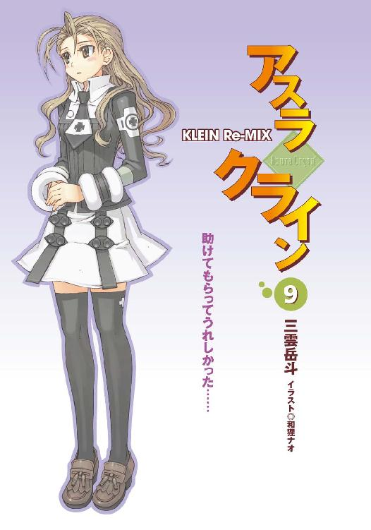
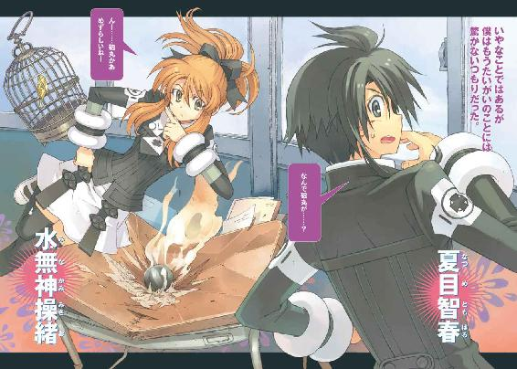
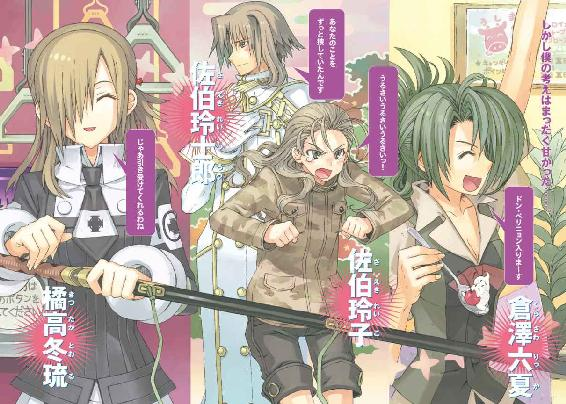
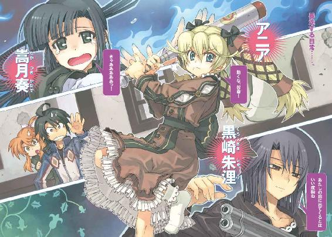
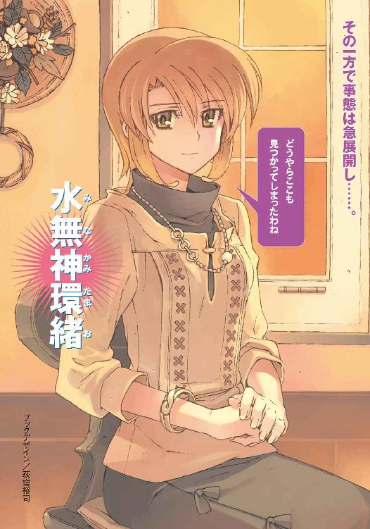
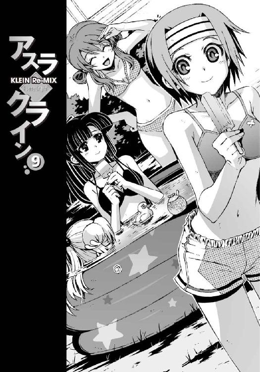
本書（電子版）に掲載されているコンテンツ（ソフトウェア／プログラム／データ／情報を含む）の著作権およびその他の権利は、すべて株式会社アスキー・メディアワークスおよび正当な権利を有する第三者に帰属しています。
法律の定めがある場合または権利者の明示的な承諾がある場合を除き、これらのコンテンツを複製・転載、改変・編集、翻案・翻訳、放送・出版、公衆送信（送信可能化を含む）・再配信、販売・頒布、貸与等に使用することはできません。
Φ プロローグ
時は真夏の午後だった。
蝉の声がやかましい八月後半。気づけば夏休みももうすぐ終わりだ。
そんな季節の移ろいに逆らうように、強烈な西陽が鳴桜邸の外壁を容赦なく炙り続けていた。開け放った窓からは熱風が吹きこみ、室内の不快指数を際限なく上昇させていく。
『暑い......死にそう......』
幽霊らしからぬセリフを吐いて、ぐったりと床に倒れていたのは操緒だった。
数年前から僕に取り憑いている、かつての幼なじみだった少女。全体的に色素が薄い気がするが、妙に存在感のある背後霊である。ショートパンツに肩全開のキャミソールという限界ギリギリの薄着姿で、ひんやりした板張りの上に寝そべったきり動かない。
「......う......む」
扇風機を抱きかかえるように座ったアニアが、弱々しい声でそれに応答した。
彼女の小さな身体はすでに汗だくで、自慢の金髪も心なしか色褪せて見える。半開きの青い瞳は微妙に焦点が合ってない。いつもの無駄に偉そうな態度が嘘のような消耗っぷりである。
子どもは大人よりも体温が高いという話だし、それが災いして暑さが余計につらいのかもしれない。無理もない。とにかくただひたすらに暑かった。表現する言葉をちょっと思いつかないくらいクソ暑い。
「げぇ......信じらんねえ。さっきから異様に暑いと思ったら四十度超えてやがる......」
ソファにぐてっと寝そべった樋口が、壁にかかった温度計を見上げて低くうめいた。
僕は天井を見上げてうんざりと溜息。できればあまり聞きたくない情報だった。
正確な気温を意識した瞬間、余計に暑さが増した気がする。せっかく温度計の目盛りに気づかないフリをしていたのに。
こんな日に限って風はなく、リビングの梁に吊った風鈴は静止したまま沈黙を保っている。
この館における唯一の冷房器具は、生温い風を全力でまき散らしている旧式の扇風機が一台きりだ。もともと不調だったエアコンは、連日の酷使に耐えかね、先週ついに黒煙を吐いて機能を停止。二度と帰らぬ身となった。そして日本列島の本日の気温は、観測史上最高記録を更新中である。
この最悪のコンディションの中で、僕たちが鳴桜邸の居間に集まっていたのは、手つかずだった夏休みの宿題をまとめて処理するためだった。
しかし、もちろん作業はまったく進んでいない。ここに来て僕たちがやったことといえば、それぞれ少しでも涼しい場所を探して、だらしなく寝転がっていただけである。
唯一、行儀よく背筋を伸ばして座っているのは嵩月だ。
すでに自分のぶんの宿題を終わらせている嵩月は、手にした団扇で、衰弱したアニアを心配そうにパタパタと扇いでいる。長い黒髪をポニーテールふうにまとめた綺麗な横顔は、いつもと同じ涼やかな雰囲気を漂わせていた。が、さすがの彼女にもこの夏の暑さはやはり厳しいようで、時折、ふぅと空を見上げて静かに息を吐いていたりする。
樋口はもたもたと上体を起こすと、テーブルの上の生温くなった麦茶に手を伸ばし、
「どうなってんだよ、智春。普通こういう洋館って、真夏でもそんな気温上がらないもんだろ。石壁だし薄暗いし幽霊屋敷だし」
「......幽霊屋敷はあまり関係ないと思う」
僕はやる気のない口調で返事をした。幽霊屋敷というのは、僕の下宿先であるこの鳴桜邸という洋館に対して、近所の人たちが勝手に名づけた呼び名だった。悪いが、そんなものにまで責任は取れない。もっとも、その呼び名はあながち間違いでもないのだけれど。
「洋館って、そもそも日本の風土に合わないんじゃないかな......通気性悪いし、湿気は籠もるし。わざわざこんなところで勉強会なんかしなくても......」
「仕方ねーだろ。この人数が入れる場所がほかになかったんだよ。ファミレスは金かかるし、この時期は図書館の自習室も人が多すぎて入れないしな。ノート貸してやってるんだから文句言うな」
「ああ......うん。それはありがとう」
とはいえ樋口の解答はあまり参考にならないんだよな、と僕は思う。いちおう正解ではあるのだろうが、高校レベルでは習わない難解な数式を使ってたり、世界史の課題になぜかオカルト知識が書きこまれていたり、読書感想文のテーマが中世の魔導書だったりするのだ。採点する教師の苦悩する姿が今から目に見えるようである。
僕はテーブルに這い上がり、写しかけだったノートを緩慢な動作で広げた。湿気でしわしわになったページをめくって、癖のある樋口の手書き文字の解読に戻る。
誰かが勝手に玄関を開けて、邸内に上がりこんでくる気配がしたのはその直後だ。軽やかに廊下を走り回る足音が聞こえて、綺麗に日焼けした童顔の女子が顔を出す。
「お邪魔しまーす。差し入れ持ってきたよ、智春。アイスだよ」
そう言って彼女は、パンパンに中身の詰まったコンビニ袋を得意げに振り回した。アイス、という言葉にアニアがぴくりと反応するが、立ち上がる気力は残ってなかったらしく、金髪のお子様留学生はそのまま再び扇風機にしがみつくような形で停止した。
僕は、コンビニ袋をぶら下げた新たな来客を、少し唖然とした表情で見上げ、
「......杏？」
「おまえ、なんだその恰好？」
同じく間の抜けた表情で訊く樋口。
杏は、ん、と自分の服装を見下ろして首を傾げ、
「あ、これ？ なにか変だった？」
「いや、変というか......」
僕は樋口と顔を見合わせて口ごもる。杏が身につけていたのは、薄いＴシャツとローレグの短パンだけ。ちょっと露出度が高すぎる。原色のオレンジのブラが透けて見えているし。
しかし杏は僕たちの視線を気にした素振りもなく、むしろ自分からＴシャツをまくり上げ、
「大丈夫大丈夫、これ水着だから。やー、暑いね今日も」
あはははは、と無邪気に声を上げて笑い、汗に濡れたシャツを脱ぎ捨てた。
ほとんど下着と変わらないその姿に僕は軽く動揺。目のやり場に困ってしまう。いくら水着を着てるからって、こんなところで脱ぐなよな。
「あの......杏、まさか、今の恰好で表を歩いて来たのか？」
呆れ顔で息を吐く僕に、杏は、もちろん、と胸を張り、
「そうだよ。賢いでしょ。この気温じゃ智春ん家に着くまでに汗まみれになっちゃうと思って。これだったら着替えたりしなくても、そのまま水浴びすれば済むからさっ。というわけで、あとで水道借りるね！」
褒めて褒めて、と言わんばかりの得意満面な笑顔の杏。言ってることは間違いではないが、しかしそれはダメだろう、と思う。幼稚園児じゃないんだから。
にもかかわらず、操緒はそんな杏を尊敬の眼差しで見上げ、
『そっか......杏ちゃん頭いい！ 操緒も水着に着替えてこよ』
「え？」
本気か、と僕は操緒を振り返った。だいたい以前から不思議だったのだが、こいつ、幽霊のクセに毎回どうやって着替えているんだ。
「いいんじゃねーの、好きにさせとけよ」
投げやりな口調で呟いたのは樋口である。無関心に頬杖を突いた彼は、同意を求めるように僕を見て、
「幽霊とか大原の水着姿なんか、小学生と同じだろ。見てもなんとも思わねえから。な？」
「あ、いや......それは......」
強く否定はできないけど、と僕は思わず未だ幼さの残る操緒たちの胸を見てしまう。ぴくり、と敏感にそれに反応した操緒は、露骨に不機嫌そうな表情になる。そして、これならどうだと言わんばかりに、
『ねえ、嵩月さんも一緒に着替えようよ』
「え......？」
いきなり呼ばれて困惑の相を浮かべる嵩月。
操緒はそんな彼女の腕に手を絡ませ、
『ほら、前の合宿のときに朱浬さんが用意してくれた水着が残ってるはずだから』
「あ......いえ、わたしは......」
ふるふると嵩月は首を振る。
『でもでも、あたしと杏ちゃんだけ家の中で水着着てたら不自然でしょ。智春だって本心では嵩月さんの水着を見たがってるよ。ね、智春？』
「えっ？」
唐突に話を振られて僕は固まる。なぜそこで僕の名前が出てくるのだ。というか、操緒にもいちおう家の中を水着でうろつくのが変という自覚はあったんだな。
しかし水着の嵩月が同じ部屋にいたら、気が散って宿題どころではない気がする。もちろん見たくないとは言わないが。
「わっ、いいねそれ。そうしよ、奏ちゃん」
背後から嵩月にしがみつく杏。天真爛漫な笑顔を浮かべ、
「どうせなら智春たちも着替えてきたら？ ほらほら、庭にハンモックなんか吊ったりしてさ、リゾートっぽい気分で楽しいと思うよ」
「いや......リゾートっていうか、ここ自分ん家だし」
控え目な声で反論してみるが、もちろん杏たちは聞いてはいなかった。強引な杏たちに半ば引きずられるようにして、嵩月は更衣室代わりの風呂場へと連れこまれそうになっている。
「うう......」
それまで置物のように無反応だったアニアが、小さく声を洩らしたのはその直後だった。
小柄な童女は、しがみついていた扇風機の前を離れ、墓から抜け出した死体のような緩慢な動きでテーブルへと手を伸ばし、
「あ......あいす......食べ......る」
それがアニアの遺した最後の言葉だった。
彼女はそこで力尽きたように、ばったりと床に倒れ伏した。べつにふざけているわけでなく、本当に体力の限界に達したらしかった。そういえば彼女の出身国はわりと寒い地方だというし、そんなところで育った少女に日本の夏の暑さは厳しかろう。
『ニアちゃん!?』
「ア、アニア......大丈夫か？」
操緒と僕が慌てて駆け寄るが、暑さで目を回したアニアは無反応である。子犬のように舌を出して喘ぐ彼女を、嵩月がおろおろと抱きかかえ、さすがの樋口も不安げな声で、
「おい、ガキんちょ......!? これ、顔色ちょっとヤバくないか」
実際、なんだかシャレにならない雰囲気ではあった。脱水症状だか熱射病だかの一歩手前という感じ。救急車を呼ぶことも真剣に考える。
しかしなぜか杏だけは、余裕の表情を浮かべて笑い出した。
「あはは、ちょうどよかった。任せて！」
そう言って彼女が荷物の中から引っ張り出してきたのは、ゴムボートを連想させる半透明のビニールの塊だった。広げるとかなりのサイズなのだが──なんだそれ。
困惑する僕の胸に、杏はその塊を勝手に押しつけ、可愛らしい仕草でにっこり笑う。
「やっぱり夏はプールだよね」
はあ......と僕は途方に暮れた。
○
それからおよそ十数分後。水着に着替えさせられたアニアは、水栽培の球根のような姿で、ぷかぷかとプールを漂っていた。
腰のフリルが水面をたゆたい、木漏れ日が彼女の細い背中を照らしている。熱暴走寸前だった体温は水冷効果でどうにか冷えたらしく、赤く茹だっていた頬も元の色に戻っていた。
ちなみにプールというのはもちろんまともな競泳用のものではなく、鳴桜邸の庭に置かれたビニール製の遊具のことである。空気を入れて膨らませる、幼児用の浅いやつだ。商店街の夏のイベントで使った中古品を、杏がタダでもらってきたらしい。
さすがに高校生にもなって遊ぶには少し気恥ずかしいデザインなのだが、それでもいちおうプールには違いなかった。陽光を反射してきらめく水面は見るからに涼しげで、殺人的なこの猛暑の中ではやたら魅力的に感じられる。
アニアの隣には、なんだかんだで結局水着に着替えることになった嵩月。
そして杏と操緒が飛びこむと、狭いプールはもういっぱいだった。楽しげに水遊びを続ける彼女たちを、僕と樋口は縁側からぼーっと眺めている。
べつに泳ぎたかったわけではないのだが、いちおう水着にも着替えたのに、他人が涼しく遊んでいるのを見ているだけというのはけっこうつらい。余計に暑さが増したような気分だ。
気怠く床を這いずって、僕は写しかけだった宿題の待つテーブルへと戻った。この暑さの中、家に籠もっていた理由はこれを終わらせるためなのだ。しかしまったくやる気がでない。なにを考えるということもなく僕がぼんやりシャーペンを回していると、
「──なにやってんのよ、あなたたち!?」
背後からいきなり怒鳴られた。
正直それには本気でビビッた。あまりにも突然だったし、怒られる心当たりもなかったからだ。
ガチンコ漁で浮かび上がった魚のように、僕はその場で目を開けたまま硬直。落っことしたシャーペンの先が足に突き刺さり、その痛みでようやくハッと我に返る。
「さ、佐伯......？ こんなところでなにを？」
僕は上擦った声で訊き返した。腰に手を当てリビングの入口に仁王立ちしていたのは、佐伯兄妹の妹のほう──というか、僕たちの同級生の佐伯玲子だった。
くっきりした顔立ちの気の強そうな少女は、眉を吊り上げて僕を睨みつけ、
「質問してるのはあたしのほうよ！ 夏目......あなた、自分の家で杏や奏にそんなふしだらな恰好をさせていったいなにを......!?」
「え......いや、僕たちはただ夏休みの宿題を......」
「なんで宿題やるのに水着になる必要があるのよ!?」
「それは......まあ、いろいろあって......」
もにょもにょと僕は口ごもる。佐伯妹の疑問は実にもっともである。
普通の民家の敷地内を、若い男女が理由もなく半裸でうろついていたらたしかに怪しい。
実際のところは、ふしだらというかただの水着なわけだし、この暑さだし、そんな怒られるほどのことでもないとは思うが。
そして仕方なく僕が詳細を説明しようとしたそのとき、
「......おい、智春。なんでオマエん家に佐伯が来るんだ!? いつの間にそんな仲良く......ゆ、許さん、俺はそんなの許さんぞ!?」
樋口が首を絞めるような勢いで僕を引き寄せ、耳元に囁いてきた。息ができずに僕は苦悶。表向き冷静を装っている樋口だが、血走った目がマジでちょっと恐い。
「やめなさいよ、樋口。あたしが夏目に会いに来るのに、どうしてあなたの許可がいるわけ？」
佐伯妹が怪訝顔で樋口を問い詰める。
「う......いや、それは......」
戸惑う樋口。そこで佐伯妹は、顔を寄せ合う僕と樋口を見て、ハッとなにかに気づいたように、
「って、もしかして樋口、あたしがあなたから夏目をとるんじゃないかってヤキモチを......？」
「なんでだーっ!?」
頭を抱えて樋口が叫んだ。僕はほんの少しだけ樋口に同情。非難がましい目つきで佐伯妹を見る。頼むからおまえも余計なことを言うな。
「それよりも、なんで佐伯がうちにいるんだ？」
ひどく疲れた気分で僕は訊き直した。佐伯妹は軽く肩をすくめて、
「何回も呼び鈴を鳴らしたのに返事がなかったのよ。声は聞こえてたから、家の中にいるのはわかってたんだけど」
「あ、そういえば......」
さっきまで何度も玄関ベルが鳴っていたような気がする。面倒だったので聞こえないふりをして無視していたのだが。
「そういえば......って、あなたね」
佐伯妹が怒ったように息を吸いこんだ。僕は慌てた。
「あ、いや、こっちもいろいろあったんだよ。アニアがぶっ倒れたりとか、水着に着替えたりとかしてたから」
「だからなんで水着になる必要があったのよ!?」
なおも怒りが収まらない様子で、ずいずいと僕に近づいてくる佐伯妹。
僕はジリジリと後退し、そんな僕たちを庭から眺めていた杏がバタ足で水飛沫を上げながら、
「ねえねえ。そんなことよりも玲子ちゃんも泳ごうよ。水着貸すよ」
「けっこうよ。べつに遊びに来たわけじゃないから」
佐伯妹は素っ気なく首を振る。そういえば彼女は、このクソ暑い中、なぜか几帳面に制服を着こんでいた。そして不意に胸元を隠すように腕を組んで、僕を横目で睨みつけ、
「それにヤらしい目で見られたくないし」
「はあっ？」
なんだそれ、と僕は困惑。今日のところは僕もべつに変な妄想はしてないぞ。こないだのペンションでのバイトで杏たちの水着姿は見慣れているし、言っちゃあなんだが、そんな色気のある水着を着ているでもない。というよりも、この殺人的な暑さの中では、そんな余計なことまで考えている体力の余裕はないのだ。
「ふーん、どうだか」
しかし佐伯妹は目を半開きにして僕を見つめ、
「さっきあたしが声かけるまで、奏の胸ばっかチラチラ見てたくせに」
「な......!?」
僕は短くうめいて絶句。
「あ......」
困った顔でうつむく嵩月と、さいてー、と露骨に顔をしかめる操緒。気持ちはわかる、とうなずいている杏。
違うんだ、と僕は言い訳しかけて言葉を呑みこんだ。
たしかに僕が嵩月を見ていたのは事実だが、いちおうそれには理由があったのだ。
僕が見ていたのは嵩月の胸ではなく、彼女の左肩だった。嵩月になにか異変がないか、それを確認したかっただけなのだ。
なぜなら、半月前の海辺での事件の直後、彼女の身体には非在化の兆候が現れていたからだ。
ほんの一瞬のことだったので、操緒も、嵩月自身もおそらく気づいてないはずだ。
単なる僕の見間違いだった、という可能性も捨て切れない。
少なくとも僕の知る限り、それ以来、嵩月の身体にはなんの変化も起こっていなかった。さっき観察したときにも、彼女の肌にはシミひとつ残っていなかった。
つまりなにが言いたいかというと、僕は嵩月の体調を気遣っていただけで、誓ってヤらしい目で見ていたわけではないということだ。
しかし、それをこんなところで佐伯妹に説明することはできなかった。ほかになにか上手い言い訳はないかと探してみても、もちろんなにも思いつかない。僕は諦めの境地で息を吐く。もういいです、僕が嵩月の胸に見とれていたってことで。最低で。
「まったく......男なんてみんなこれだから」
佐伯妹が妙に冷たい目つきで僕を見下ろす。僕は黙殺。なんとでも好きに言ってくれ。
そして樋口は、なぜか余裕の表情を浮かべて会話に割りこみ、
「まあまあ、智春の気持ちもわかってやれよ。人の好みはそれぞれだからな」
「いや......好みって......」
その言い方ではまるで僕が胸フェチみたいである。なんのフォローにもなってないのだが。
しかし僕が反論する前に、樋口は勢いよく立ち上がり、
「だが俺は違う──佐伯の水着姿が、どんなに薄っぺらくても貧相でも気にしないぜ！」
「う、うるさいっ。あたしは薄っぺらくも貧相でもないわよ！」
佐伯妹に思いっ切り殴られていた。
きりきりと回転して、ソファに仰向けに倒れこむ樋口。僕はうんざりとその様子を眺める。ただでさえ狭くて暑いんだから、こんなところで暴れるのはやめて欲しいなあ。
そんな僕の願いも虚しく、樋口はふらふらと上体を起こし、
「だ、だから佐伯......そんな制服とか着てるからデコとかが汗まみれに......」
「デコ言うなっ！」
佐伯妹に再びガシガシと足蹴にされている。
苦悶の悲鳴を洩らす樋口だが、そこはかとなく楽しそうにも見えた。あれはあれでひとつの幸せの形なのかもしれない、とも思う。面倒だから放っておこう。
『ん......あの、それで佐伯ちゃんは結局なにしに来たんだっけ？』
樋口が完全に動きを止め、ようやく静かになったところで操緒が訊いた。
そういえばまだそれを聞いていなかった。佐伯妹がこれまで一人でうちに遊びに来たことはないし、用もなく僕に会いに来るとも思えなかった。
生真面目な彼女の性格からして、宿題を写しに来たわけでもないだろうし。来週には学校で顔を合わせるのに、わざわざその前になんだろう？
全員の注目を浴びた佐伯妹は、少し居心地悪そうに目線を彷徨わせ、
「それは......その、夏目に個人的に相談したいことがあって......」
「え、相談......え？」
予想外の佐伯妹の答えに僕は困惑する。余計にわからなくなってきた。どうして彼女が、僕なんかに個人的な相談を持ちかけてくるのだろう。
「......お兄様のことだったんだけど......」
ぼそぼそと歯切れの悪い口調で呟く佐伯妹。
僕は猛烈に不安になった。彼女の兄──佐伯玲士郎は洛高第一生徒会の会長で、なぜか僕とは縁が深い人物だ。命を助けてもらったこともあるが、逆に殺されかけたこともある。あまり人には言えないようなヤバい秘密もいくつか共有している。
佐伯妹が彼女の兄貴のことで困っているのなら、その相談相手に僕を選ぶのは、納得できないことではないのだが。
「ええと......佐伯会長、またなにか危険なことに顔を突っこんでるのか？」
怖ず怖ずと小声で質問する僕に、佐伯妹はうつむき加減に、
「うーん、べつに危険というわけではないんだけど......」
「だったらなにが問題なんだ？」
思わず僕は訊き返した。佐伯兄という男は、ちょっと暑苦しいくらいの美形で、生徒会長としての信頼も厚く、おまけに金持ち。悪いが、そんな恵まれた人間の悩みを僕ごときが解決できるとは思えない。
「問題というか......それは、その......お兄様がもしかしたら今度......することになるかもって」
目を伏せたまま、言い淀む佐伯妹。なにを言っているのか聞き取れない。
いつも勝ち気な佐伯妹らしからぬ態度だった。彼女はそのまましばし沈黙し、僕たち全員が戸惑いながら彼女の次の言葉を待っていると、
「......もういいわ」
やがて佐伯妹は諦めたようにそう言った。注目されて恥ずかしくなったのか、赤く染まった頬を隠すように、その場でくるりと背中を向け、
「考えてみたら夏目に相談してもどうしようもないものね......帰る」
「......帰るって......あの、佐伯？」
「じゃあね。あと、宿題はちゃんと自分でやらないと身にならないわよ。バイバイ！」
一方的にそう言い残し、有無を言わせぬ足取りで立ち去っていく佐伯妹。
僕は間の抜けた表情で立ち尽くしたまま、彼女の背中を見送った。
「......なんだ、あれ？」
誰にともなく訊いてみるが、もちろん答えてくれる者はいなかった。
庭の大木にとまった蝉が、再び騒々しく鳴き始めていた。夏の最後の悪あがきのような猛暑。西の空には鮮やかな夕焼けが広がっている。
結局、聞けなかった佐伯妹の相談の中身。
それを僕が知ることになるのは、それからしばらくあとのことだった。
もっともそのときの僕はもう、僕でなくなってしまっていたのだけれど──
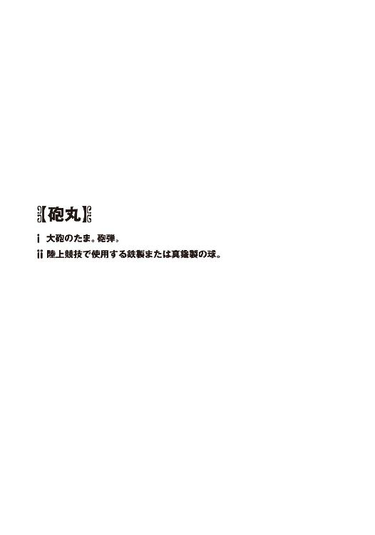
まあそんなわけで──砲丸だ。
飛んできたのは砲丸だった。
陸上の砲丸投げ競技で使うアレである。直径は十一センチから十三センチ。重さ七・二六キログラムの鉄の球。
教室の窓から飛びこんできたその砲丸は、僕の右頬ギリギリを掠めて飛んでいき、近くの机を粉砕しつつ、何度か床にバウンドしてようやく止まった。少し遅れて、風圧で僕の髪がふわりと浮き上がる。
「な......」
ゴロンと床に転がった鉄球を見下ろし、僕は乾いた喉を鳴らした。舌がもつれて上手く言葉が出てこない。
「なんで砲丸が......？」
わざわざ口に出して確認するまでもなく、それは異様な状況だった。
午後の教室。二学期が始まって間もない平日の放課後だ。
友達に借りたノートを写すために僕は学校に居残っていて、そして校舎の二階の窓から飛びこんできた砲丸に、危うく頭蓋骨をごっそり抉られそうになったところだ。
普通、滅多にあることではない。なにしろ窓から砲丸だ。虫や小鳥が迷いこんできたのとはわけが違う。あと少しで死人が出るところだったのだ。教室にはまだ生徒が七、八人は残っていて、目撃者多数。パニックになってもおかしくない事態だと思った。だがしかし、
『んー......砲丸かあ。めずらしいねー』
僕の前に浮かんでいた操緒は、転がる鉄球を見ながら素っ気ない口調で呟いた。ほかのクラスメイトたちも、一瞬ちらりと僕を見ただけで、特に誰もなにも言わない。
「いや......めずらしいとか、そういうレベルの問題じゃないだろ、これ」
『え？ そう？』
声を震わせてうめく僕を見て、操緒は不思議そうに小首を傾げた。
『だってこれ砲丸だよ。べつに空から隕石が落ちてきたとか、生きたカエルが降ってきたとか、そういうんじゃないんだよ？』
いやまあ、たしかにそれはそうだが。
「そういうことじゃなくてっ......！」
開けっ放しの教室の窓と、粉砕された机を交互に指さし、僕は叫んだ。
「危ないだろ！ なんでだよ！ なんで校舎の二階の窓から砲丸が飛びこんでくるんだよ!? おかげで僕は死にかけたぞ！」
混乱する僕を操緒は冷静に見つめて、
『ん......でも、べつに智春を狙ってたわけじゃなさそうだけど......』
「狙われてたまるかっ！」
砲丸で狙撃する殺し屋なんて、これまで聞いたこともない。どんだけ大雑把なスナイパーだ。
『だから要は誰かが砲丸を投げるときに手元が狂ってそれがたまたま智春の近くに飛んできただけでしょ。よくあることだよ』
「そんなわけあるかっ！ そんなしょっちゅう砲丸が飛びこんでくる学校なんて聞いたことないぞ。呪われてるのかここは!?」
『んー......でも智春だし』
操緒の適当な呟きを聞いて、僕は、ぐっ、と言葉に詰まった。
たしかに僕は不幸慣れしている。呪われてるのかどうかは知らないが、それに近い体質なのは間違いない。生まれて初めて乗った飛行機は海に落ちたし、そのとき一緒だった幼なじみの少女は幽霊になって今でも僕に取り憑いている。
高校の入学式の朝には悪魔に襲われ、その翌々日には銃撃戦に巻きこまれ、あまつさえ僕の影の中には今も機巧魔神と呼ばれる機械仕掛けの悪魔が眠っている。
それに比べれば砲丸ぐらい、という操緒の言い分はわからないでもない。わからないでもないのだが、だからといって砲丸で狙撃されて平気なはずもなく、
「くそ......誰だよ、こんなものを教室に投げこんできた非常識なヤツはっ！」
僕は怒りに肩を震わせながら、床を転がる鉄球を掴んだ。
その指先にずっしりした重さが伝わってきた。
そこでようやく思い出す。
陸上競技で使われる砲丸の重量は七・二六キログラム。下手な鉄アレイよりも重いのだ。こんなものを教室に放りこむこと自体、素人が簡単に真似できることではない。ましてや校舎の外から机を粉砕するような勢いで投げこむなんて、並の人間の仕業ではない。
そんなことができる者がいるとすれば、それは──
「おっ......夏目っ！」
砲丸を握ったまま黙考する僕に、誰かがやけに明るい声で呼びかけてきた。
「ここはおまえらの教室だったのか。いやー、悪いな。怪我しなかったか？」
やたら肉付きのいい上級生の男子生徒が、教室の入口に仁王立ちして、目を細くして笑っていた。体重は──おそらく百キロ近くあるのではなかろうか。力士としては理想的なアンコ型の体型だが、彼が着ているのは洛高陸上部の練習着である。
「あ......吉田先輩？」
中学時代に陸上部で世話になった先輩だった。下の名前は忘れたが、たしか運慶とか快慶とか、そんな仏師みたいな名前だったことだけは覚えている。顔つきもちょっと仏像っぽい。
なんにせよ陸上部員のイメージとはほど遠い外見であるが、彼はハンマー投げの選手なのだ。砲丸投げの記録も持っているはずである。
「もしかして......この砲丸を投げたのは......」
「おう。俺、俺。悪いな。そこの屋上で回転投法のイメトレしてたら、すっぽ抜けちまって」
「はあ......」
吉田先輩が指さす向かい側の校舎の屋上を見上げ、僕はうんざりと溜息をついた。そんなところで砲丸投げの練習をするのは、誰がどう考えても危険なので今すぐやめていただきたい。
しかし先輩は反省した様子もなく、にやけた表情で笑っている。放っておくと鼻歌まで歌い始めそうな様子である。妙に明るい。むしろ病的な機嫌の良さだ。
「あっはっは。いや、悪かったな、夏目。ほら、もうすぐ秋の県予選だろ。つい気合いが入りすぎてしまってな──」
そういって先輩は、むん、と唐突に気張って、ボディビルダーのようなポージングを決めてみせた。フロント・ラットスプレッド。
もわん、と男臭い体臭が撒き散らされ、うわ、と嫌そうに顔をしかめる操緒。
しかし先輩はひたすら機嫌良く笑い続ける。明らかに様子が変だった。
人間いくら嬉しいことがあったとしても、普通ここまで幸せそうには振る舞えないものだ。単純に喜んでいるというよりも、自爆する直前の追いつめられた犯罪者の明るさに近い。さもなくば変なクスリをきめているとか。
ふと僕は彼が怪しいドーピング薬に手を出しているのではないかと気になって、
「あの......先輩、身体とか大丈夫ですか？」
「おう。絶好調だぞ」
再び筋肉を剥き出す先輩。なんだか真面目に相手をしているのがちょっと嫌になってきた。
そして先輩は少し照れたように頭を掻き、
「いや、今年は本気でいい記録が出そうな気がするんだよ。ハニーも応援してくれてるしな」
そう言った。
『......はにぃぃ？』
眉をひそめてうめく操緒。
しかし僕は、ああ、とようやく納得した。吉田先輩の異常な明るさの理由は、精神的に追いつめられてハイになっているわけでも変な薬のせいでもなかった。そういえばこのでぶの先輩には、夏休み前に彼女ができたのだ。
今どき彼女ができたくらいでここまで喜ぶか、とは思うものの、本人が浮かれているのだから文句も言えない。実際けっこう可愛い彼女らしいのだ。はっきりいって羨ましい。
「じゃあ、そういうことでな」
夏目も早く普通に幸せになれよわっはっは、と浮かれた言葉を残して吉田先輩は去っていく。
どういう意味だよ、と少々むかついたが、ここで怒ったら敗北感がこみ上げてくる気がして僕は黙っていた。よもや砲丸をぶつけられそうになっただけではなく、彼女の自慢話まで聞かされるとは。想定外の理不尽な仕打ちに、僕はぐったり疲れた気分で頬杖を突いた。
その頬に、ぬるりとした感触を覚えた。
「え......？」
何気なく自分の手を見て、僕は愕然とした。
掌の半分が真っ赤な液体で濡れている。
思わず顔を上げた僕を見て、操緒が、うわっ、と声を上げた。
『智春、血、血だよ。こっちのほっぺた、血まみれ！』
砲丸がかすめていったときに肌が切れていて、頬杖の勢いで一気に傷口が開いたらしい。自覚すると急に痛みを覚えた。
血塗れの僕の顔を見て、さすが夏目だ、と僕の不幸さに感嘆するクラスメイトたち。だからなんでそこで納得するんだ、おまえら。
「............」
ぼたぼたと机に滴る鮮血に、僕は黙って息を吐いた。幸せ一杯だった吉田先輩の笑顔をふと思う。誰かが幸福に酔いしれているときには、必ずその陰で泣いている者がいるのだ。
今さらながら自分の不幸体質を痛感して、僕はもう一度深く溜息をついた。
○
保健室には先客がいた。
純白の改造制服を着た、暑苦しい美形の男子生徒だ。佐伯兄妹の兄貴のほう。洛高第一生徒会長の佐伯玲士郎である。
『で、出た......』
幽霊が口にしてどうする、と突っこみたくなるようなセリフを吐いて、操緒が露骨に顔をしかめた。僕も保健室の入口で立ちすくむ。操緒と僕は、この無駄に気障な先輩が苦手なのだ。
なにしろ僕たちは入学早々、彼らに呼び出され、銃を撃ちまくられ、さらには彼の機巧魔神でぶん殴られて危うく殺されそうになったのである。そこまでされて好きになるほうが異常だ。顔がいいとか、家が金持ちとか、妹が美人とか、決してそんな理由で彼のことを僻んでいるわけではないのだ。
佐伯兄は普段から部下のごっつい男子を何人か連れている。今日の彼の取り巻きは三人。そしてベッドの上には不良っぽい男子生徒が約一名、顔面をぼこぼこに腫らして横たわっていた。
男子生徒の鼻の骨は明らかに不自然な方向に曲がっており、養護教諭の滝原女史が、隣に座ってなにやら治療中である。
「──本日午後、校内で不純異性交遊を目論む男子一名を生徒会役員が発見。被疑者は制止を振り切って無免許のバイクで逃走を図ったため、やむなく実力行使をもって無力化しました」
などと状況を説明する佐伯兄。
彼ら第一生徒会役員の主な活動内容は、校内の治安維持と生徒の安全確保。私設警察みたいなお仕事なのである。
しかし今どき不純異性交遊くらいで、顔面が変形するような目に遭わせることはないと思う。しかしそれをやるのが第一生徒会だ。その役員たちが処刑執行部員などと呼ばれているのも、あながちただの恰好つけではない。
捕獲された不良生徒は、意識をなくしたまま、「ごめんなさいごめんなさいもうしません」「そこ......そこは違うのォ！」「お願い痛くしないでェ」などと、病的なうわごとを弱々しく呟き続けている。
ほとんど再起不能な不良生徒とは対照的に、生徒会の役員たちはほぼ無傷。筋肉の塊みたいな彼らなら、走ってくるバイクを素手で捕まえるくらいは平気でやりそうだ。
僕は彼らに見つからないように、こっそりと保健室の薬品棚へと向かった。
いちおう保健室には、生徒会の連中以外に、まともそうな生徒もいた。僕のよく知っている顔だった。白衣姿にハタキを持って薬品棚の掃除をしていた女子生徒。保健委員の腕章をつけた彼女は、僕に気づいて振り返る。
「あ......」
艶やかな黒髪に透きとおるような白い肌。ちょっと近寄りがたいほど端整な顔立ちの美少女だった。嵩月だ。
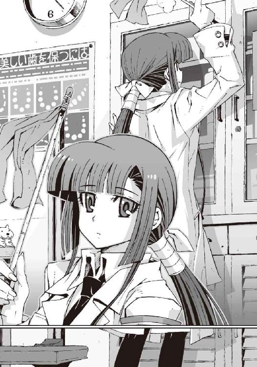
保健委員の嵩月奏は、どうやら放課後居残りで保健室業務の手伝いをやらされていたらしい。
「ああっ......！」
その嵩月は、血まみれの僕の顔を見るなり驚いた表情で駆け寄ってきて、
「ほっぺた。血」
焦ったような口調でそう言った。頬から血が出ているがどうしたのか、というような意味だと思われる。頭のいい子だが、喋りは少しトロいのだ。
「ああ......うん。掠り傷なんだけど、ちょっと血が止まらなくて」
砲丸が教室に飛びこんできて怪我をしたなどとは、さすがに口にしづらいものがあり、僕は曖昧に言葉を濁した。佐伯兄のいる前で吉田先輩の名前を出して、あの先輩が顔面をぼこぼこにされても困る。
「とりあえず絆創膏が欲しいんだけど、勝手にもらってっていいのかな？」
そう言って頬の血を適当に拭おうとした僕を、
「だめ」
思いがけない強い力で嵩月が掴んで制止した。
そして彼女は無理やり僕の手を引いて机の前まで連れていき、
「ちゃんと治療しないと、だめ」と繰り返す。
『こんなの適当に塩でも塗っときゃ治るんじゃ......』
ぼそりと呟きかけたところを嵩月に睨まれて、操緒が黙った。
本来の保健の先生である滝原女史は、その間、バキとかゴキとか恐ろしげな音を立てつつ鼻を骨折した男子生徒の治療を続けており、
「あ......ごめん。こっちは手が離せないから、嵩月さん適当にやっといてくれる？」
出血の割にたいしたことのない僕の傷を一目見るなり、投げやりな口調でそう言った。
そんな異様な音を立てて治療する養護教諭の言葉に文句があろうはずもなく、僕は大人しく嵩月の前に座った。
トロい喋りとは裏腹に、嵩月は手際よく治療の準備を始める。手を消毒して止血用のガーゼと絆創膏を取り出し、ワセリンやら綿棒やらよく知らない薬品やらを順番に机に並べていく。
こうしていると保健委員というより、本職の保健室の先生みたいである。教室にいるときの彼女と雰囲気が違って僕はわけもなく動揺する。なにを着ても大抵は似合う子なのだが、白衣姿もなかなかだ。これでメガネをかけたりしたら一部に熱狂的なファンがつきそうだ。
その嵩月は患者用の椅子に座らせた僕の頬をガーゼでそっと拭った。そのまま傷口の様子を確認するために、無防備に身体を寄せてくる。
ふと気づくと、驚くほどの至近距離に彼女の顔があった。なぜか異様に緊張した。黒目の大きな嵩月の瞳が僕の姿をじっと映して、消毒液の臭いに混じって女の子らしいいい匂いがする。
「あの......ちょっと、嵩月......」
「動かないで」
無意識に腰が退けてのけぞる僕を、嵩月が身を乗り出すような姿勢で追ってくる。目を合わせないように視線を落とすと、彼女の胸元の柔らかそうな膨らみを、ちょうど見下ろす形になった。思わず僕は赤面し、顔面に血が上ったせいかいっこうに出血が収まる気配はなく、
「──夏目智春」
そんな僕の背後から、唐突に男の声がした。場違いに冷静な低い声。
「は、はい？」
疚しい行為の現場を見られた気分で、僕は表情を強張らせて首を振り、
「あっ......」
その勢いで、はみ出たガーゼを切ろうとしていた嵩月の手元のハサミと激突。塞がりかけていたはずの傷口が再びぱっくり開き、
「ぐわっ！」
鮮血を顎まで滴らせながら、僕は涙目になって弱々しくうめいた。今のはけっこう痛かった。
「あ......あっ......」
止血用のガーゼが真っ赤に染まり、嵩月は慌てて予備のガーゼを補充するためにパタパタと駆け出していく。
そして彼女が席を離れた隙に、佐伯兄は僕の耳元に顔を寄せて警告する。
「夏目智春。わかっているだろうな。もしきみが嵩月奏に手を出すようなことがあったら......」
「あー......はいはい。わかってますよ」
わかってますから、そんな超至近距離に顔を近づけてくるのはやめてください。
虚ろな瞳で僕は天井を見上げた。僕が嵩月に手を出したら、僕たちを滅ぼす。佐伯兄は以前からそんなふうに僕に宣告していた。嵩月の正体が、強大な魔力を持つ
魔の家系の末裔だから。そして機巧魔神の演操者である僕が彼女と契約した場合、強大な力を持つ魔神相剋者になってしまうから──だそうである。
実際に魔神相剋者の恐ろしさを知ってしまった今となっては、僕も彼の立場を理解できなくはない。だがまあ、それはそれとして。
僕は必死で佐伯兄から顔を背けつつ、ベッドに横たわっている哀れな不良生徒を見る。
普通の不純異性交遊をしようとしただけで、あんな悲惨な目に遭わされてしまうのだ。僕が嵩月と契約なんかしてしまった日には、脅しではなく確実に殺される。
あれだけの美少女が近くにいて、つき合ったら殺されるというのは、もしかしてものすごく不幸なのではないかと思う。彼女ができたと浮かれまくっていた吉田先輩のことが、今さらながらひどくうらやましくなってきた。
こっそりと溜息をつきながら、僕は佐伯兄の横顔を盗み見た。
この生徒会長もよくわからない人だ。
これだけ顔が良ければ、彼女になってくれそうな女子なんていくらでもいると思うのだけど、そういう浮いた話はまったく聞かない。それどころか彼の周りにいるのは、いつもむさ苦しい男たちばかりだ。
『やっぱ、そっちの趣味があるのかも......』
まるで僕の心を読んだようなタイミングで囁く操緒。
「だよな」
僕はうなずいた。それなら不純異性交遊に対する、この厳しい仕打ちについても納得がいく。
「......なんのことだ？」
佐伯兄に怪訝顔で問い返されて、僕と操緒は慌てて首を振った。疑わしげな彼の視線を避けるように窓の外を見る。
傾いた午後の太陽が、校庭を赤く染めていた。
夏の名残を残した高い空。閑散としたひと気のないグラウンド。
箒で掃いたような雲を背景に女子生徒が一人、ぽつんと所在なげに立っている。
その光景に、僕は無意識に目を止めた。
たぶん僕の知らない生徒だ。見覚えのない後ろ姿だった。その背中がなぜか少し気になった。
「あ......どうかした、の？」
ガーゼを山ほど抱えて戻ってきた嵩月が、不思議そうな表情で僕に訊いた。
「あ、いや」と僕は首を振った。
見知らぬ女子生徒のことが、なぜか気になってしまった理由。それはたぶん彼女に僕と同じ不幸の匂いを感じたからだ。
黄昏の空を見上げていた小さな背中は、泣いているように見えたのだった。
○
それから数日が経ち、頬の傷も消えたころ──
その日の僕はなぜか真夜中過ぎに目が覚めた。
全身が気怠い汗に包まれていた。シーツがしっとりと重く濡れている。
ひどく不快な目覚めだった。
月のない夜だ。外は暗い。
近くに操緒の姿はなく、暗い部屋の隅に僕は一人で横たわっている。
夢を見ていたのかもしれない。
そう、夢。
目が覚めたのは悪夢のせいだった。
しくしくと、しくしくと──
誰かが、ずっと泣いている気がした。
女の人の声。
すすり泣き。
なにがそんなに哀しいのだろう、と思う。
もちろん答えが返ってくるわけもない。聞こえてくるのはただすすり泣く声だけ。
しくしくと、しくしくと──
その声が不意に鮮明に聞こえてきた。
僕はハッと目を開けた。額に浮いた嫌な汗を拭って上体を起こす。
深夜二時を過ぎたあたり。
街は寝静まって、街灯の頼りなく白い光だけが、カーテンの隙間から洩れている。
夢の中で聞いた女の泣き声は──
まだ、聞こえていた。
僕の背中を、ゾッと冷たい感覚が走り抜けた。完全に、目が覚めた。
半分開いていたドアの隙間から、恨みがましい泣き声が聞こえてくる。
しくしく、しくしく。女の人の声だ。
夢ではなかった。この嗚咽がただの悪夢なら、目覚めたあとまで聞こえてくるはずがない。
だがしかし幻聴とも思えない。
その証拠に、時折、ひくっ、とシャックリを洩らしたり、ずびずびと洟をすする音まで聞こえてくる。幻覚にしては異様にリアルだ。臨場感がありすぎて余計に恐い。
しかし夢でも幻覚でもないとすれば、この声は現実、ということになる。
そんな馬鹿な、と僕は思う。
『と......智春......』
冷たい汗を流す僕の背後に、ゆらりと人影が浮かび上がった。
青白く発光する見慣れた幽霊の少女。操緒だ。
彼女は情けない表情を浮かべて僕を見つめ、
『なにこの泣き声......』と弱々しく言った。
どうやら彼女も、このすすり泣きを聞いて目を覚ましていたらしい。幽霊である操緒が本気で少し怯えている。
「操緒......じゃないよな。これ」
『なんであたしがこんな夜中に一人でウジウジ泣かにゃならんのよ？』
幽霊としての自覚の感じられない口調で操緒は言う。たしかに僕も、気まぐれで飽きっぽい性格の操緒が、こんな回りくどい悪戯をするとは思ってない。
『家の中から聞こえてくるよねえ？』
「......うん」
操緒に訊かれて、僕は渋々とうなずいた。
とある事情で実家を追い出された僕は、格安の一軒家で一人暮らし中である。居候のアニアは今夜は不在。調べ物があるとかで朱浬さんの家にパソコンを借りに行って、そのまま今夜は向こうに泊まると言っていた。だからアニアの泣き声でもないのだ。しかし操緒でもアニアでもないとすれば、この泣き声の正体はいったい誰なのだ──？
鳴桜邸と呼ばれるこの下宿は、昭和初期に建てられたという古い洋館で、今は僕たち以外に住んでいる者はいない。
それどころか幽霊屋敷としか思えぬ不気味な外観のせいで、近寄る者すらほとんどいない。廃屋だと思われているせいで、某国営放送局の集金人すらこないのだ。まともな感覚の持ち主が、こんな夜中に侵入してくるはずもない。
するとつまりこの泣き声の主は、まともな感覚の持ち主ではないか──あるいは本物の怪異、ということになる。どっちにしてもシャレにならない。
「あのさ......操緒」
僕は恐る恐る口を開いた。操緒は嫌そうな顔で振り返り、
『な、なに？』
「悪いけど、様子を見てきてくれ」
『ええーっ、やだよそんなの。絶対ヤだ』
速攻拒否する操緒を部屋から追い出すように僕は手を振り、
「自称〝守護霊〟なんだろ。頼んだ！」
『いくら守護霊でもあんな陰湿っぽい泣き女の相手なんか嫌だよ。智春が行けばいいじゃん。幽霊慣れしてるし』
「慣れたのは誰のせいだよ。僕だって嫌だよ」
『じゃあ聞こえないことにして放っとく？』
「いや......それは......」
うう、と低く唸って僕はベッドを降りた。
女のすすり泣きは続いている。このまま部屋で震えていてもラチが明かない。メチャメチャ不気味で不安だが、実際に泣き声の主を捜してみるしかないだろうと思う。操緒の言うことにも一理ある。僕は幽霊には慣れているのだ。
すすり泣きは一階から聞こえていた。屋敷の裏の普段は使ってない部屋あたりだ。
僕は足音を殺して階段を下りた。操緒も僕の肩につかまってついてくる。
泣き声は次第に鮮明になっていく。
聞き覚えのない声だ。だが、予想以上に幼い声だった。たぶん僕たちとほとんど変わらないくらい。せいぜい十代の半ばだろう。化けて出るほどの恨みを抱えているにしてはやけに若い。
そして僕たちが目的の部屋の前に立ったとき、泣き女のすすり泣きがふいにやんだ。
がさごそとポケットティッシュを漁る気配がして、ちーん、と洟をかむ音が響いた。
「............」
僕と操緒は唖然として顔を見合わせる。専門外なのでよくわからないが、本物の幽霊は洟をかまないのではないかと思う。ポケットティッシュ持参の妖怪なんて、鳥山石燕の画集にも載っていないはず。
幽霊や妖怪の類ではない、ということは──
『生身の人間？』と操緒が唇だけで呟き、うなずきながら僕はだんだん腹が立ってきた。
深夜二時。草木も眠る丑三つ時。
気持ちよく眠ってたところを不気味な泣き声で起こされて、正直、僕はむかついていたのだ。
相手が妖怪でないのなら、もう遠慮する理由もない。
どういうつもりか知らないが、明らかな住居不法侵入だ。最悪、捕まえて警察に突き出してやろうと思う。とりあえず謝ってもらおうと心に誓い、バキバキと指を鳴らして息を吸い──
「動くなっ！」
僕は乱暴に部屋の扉を蹴り開けた。
そして泣き女の姿を目撃した。
ひくっ、と泣きやんで振り向く十代の少女。
泣き女の正体は意外にも、可愛らしい女子だった。
細い肩。薄暗い部屋の中に浮き上がる色白の肌と、赤く泣き腫らした大きな目。
彼女の足下に散乱する荷物は、家出少女のものとしか思えない大きなボストンバッグだ。
彼女の衣装は、十字架の紋章を刻まれた白と黒の制服。それは僕の見慣れた洛高の制服だ。
女子高生。
泣き女の正体は洛高の女子生徒。
そして彼女は──着替え中だった。
「き......」
制服のスカートをするりと床に落として、ほっそりした脚の曲線が露わになっている。
鞄の上に広げられているのは、パジャマ代わりの中学ジャージだ。
鳴桜邸に勝手に上がりこんでいた泣き女は、ちょうど着替えの真っ最中で、そして、
部屋に入ってきた僕の姿を見るなり絶叫した。
「きゃあああああああっ！」
「う、うわっ、ごめんっ！ ごめんなさい！」
わけもわからず謝らされたのは僕のほうだ。
ドアを後ろ手に閉めながら、僕は慌てて部屋を飛び出した。暗い廊下に出て途方に暮れた。
なぜ僕の下宿で、真夜中に、知らない洛高の女子生徒がすすり泣きを洩らしているのだ。
おまけに脱ぎかけスカートとかジャージとか白い太腿とか。もうまったくわけがわからない。
僕は激しく混乱したまま、廊下を漂う幽霊の少女をすがるように見上げた。
操緒は不審そうに目を眇めたまま僕を見返し、
ぽつりと一言、短い疑問を呟いた。
『......誰？』
○
翌日の放課後。洛高の化学準備室。
「──友原菜津美さんです」
たまたま科學部の部室に顔を出していた朱浬さんに、僕は彼女を紹介した。
小柄な身体をさらに小さくして、菜津美はぺこ、と頭を下げた。ちょっと色味がかったクセ毛で黒目の大きな、セキセイインコに似た雰囲気の女子生徒である。
朱浬さんはちょっと愉快そうに唇を斜めにし、僕と彼女を見比べて、おっとりと訊いた。
「......誰？」
「ええまあ、話すと長くなるのですが──」
僕は寝不足気味の目をこすりながら口ごもる。どこから説明すればいいのかよくわからない。
とりあえず菜津美は僕たちと同じ洛高の一年で、隣のクラスの出席番号十八番で、帰宅部で、趣味はスポーツ観戦で、そして家出中だった。
「家出？」
困惑気味に目を細める朱浬さん。菜津美がますます肩を縮こまらせる。
「はい......」
そう。彼女は家出少女だった。
わけあって昨夜遅くこっそり家を飛び出した菜津美は、とりあえずの潜伏先として学校近くの廃屋を選んだのだそうだ。つまり鳴桜邸のことである。
それが彼女の泣いていた理由だ。
たまたま鍵の開いていた窓を見つけて部屋に忍びこんだのはよかったが、なにしろ幽霊屋敷と近所でも評判の建物である。古いし、暗いし、誰か住んでるような気配もするしで、すっかり心細くなってしまった菜津美は夜中に泣き出してしまったという。それが僕たちの遭遇した泣き女の正体なのだった。
「どうして家出を？」
朱浬さんが微笑んで首を傾げる。
そういう態度をとっている限り、この人は優しそうな上級生のお姉さんにしか見えない。なにも知らない菜津美はあっさり騙されて、
「それが......お見合いをさせられることになってしまって」
すっかり告白モードである。
「ああ。なるほど」
ありがちね、と腕を組んでうなずく朱浬さん。
高校生の身分でお見合いなんてそんなによくあることでもないと思ったが──しかし考えてみれば洛高は、ミッション系の私立校なのだ。社長令嬢のお嬢様なんかが通っていても、実はそれほど違和感がない。そういえば佐伯兄妹も金持ちだし、嵩月だってある意味、社長の娘だ。彼女たちにとっては見合いというのも、意外に身近な話なのかもしれなかった。
「あの......ありがちというほどでもないんですけど......」
そう言って菜津美は、ぽつぽつと語り始める。
驚いたことに、やはり彼女は社長令嬢だった。
それほど大きな会社ではないが、七代続いた老舗の商社。業績もそこそこ順調だという。とはいえ菜津美の両親はわりと大らかな性格で、取引先とのつき合いやらを菜津美に強要したことはないらしい。
問題は菜津美の叔父だった。
会社の投資部門を担当する彼は、一族のため、というよりはむしろ自分の業績を上げるため、菜津美に縁談を持ってきた。縁談の相手は大手取引先の社長の息子だった。
さすがに菜津美の両親としても、むげに断れる話ではない。
「相手の男性は申し分のない家柄だし、若くて優秀な方だと聞いています。でも──」
菜津美はそこで言い淀む。
彼女はその男に会いたくなかったのだ。後先考えず家を飛び出してしまうくらいに。
しかし結婚が嫌という気持ちはまだわかるが、相手と顔を合わせるのも嫌で家出するというのはよくわからない。なにもそこまでしなくても、と思ってしまう。会うだけ会って嫌なら断れば済む話ではないのだろうか。
「よっぽど不細工な人だったの？」
朱浬さんが失礼なことを平気で訊く。
「いえ......べつにそういうわけでは」
困ったように首を振る菜津美。
「離婚歴とかは？」
「未婚です。子供もいません」
「性格になにか問題が？」
「写真だけではそこまでは......真面目で部下や同僚に慕われている人だそうですけど」
「だったらやっぱり見た目？」
「いえ......見た目は悪くないと思います。私の好みではありませんけど」
「ヅラとか......？」
「地毛です。ふさふさです」
だったらなにが気に入らないのだ、と僕は思った。自分とは無縁の話なので、あまり実感が湧かないが、聞けば聞くほど悪い条件ではないと思う。僕には、どうして菜津美がこんなに頑ななのかがわからない。
しかし朱浬さんは彼女の表情ですぐにピン、ときたらしく、
「菜津美ちゃん、好きな人がいるんだ？」
「あ」頬を赤らめて菜津美はうなずいた。「はい」
『ああ......そっか。それで家出......』
ようやく納得したように呟く操緒。
ほかに好きな相手がいたのなら、いくら条件がよくても見合いを嫌がるはずである。
「はい。家のことを考えると私のほうから縁談を断るわけにはいかないですし、ですけど正直に説明すると、縁談を仕組んだこと自体、先方に失礼になりますし──」
菜津美は途方に暮れてしまったのだという。
結局、自分でも混乱したまま、彼女は家から逃げ出してしまった、ということらしい。
たしかに逃げたくなる気持ちもわかる。
見合いには出席しなければならないが菜津美のほうから縁談を断ることはできず、しかし彼女にはつき合っている相手がいて、とはいえ取引先の顔も潰せないのだ。もはや家出するしかないというところまで、菜津美が追いつめられたのも無理はない。
「それでトモハルはどうしたいの？」
そこで朱浬さんは唐突に言った。
どうして彼女をここに連れてきたのかな、と僕の顔を見て訊いてくる。
「いや......その、できれば助けてあげられたらいいな、と思ったんですが」
正直いうと、彼女にこのまま鳴桜邸に居座られては困ると思って連れてきただけなのだが、今の話を聞いてしまったあとでは無理やり追い出すのも気が引けた。菜津美が家出した気持ちもわかるし、同じように実家を追い出された人間として、力になってやりたいとも思う。
「それって見合いをぶち壊すってこと？」と朱浬さん。
「いや、そんな乱暴なことをしなくても、要は相手が断ってくれればいいわけだし」
深い考えもなくそう呟く僕に、
「でも......」
菜津美が困ったように目を伏せた。朱浬さんも軽く肩をすくめ、
「そうね。相手に嫌われるだけなら簡単だけど、菜津美ちゃんに悪い噂が立ったり、実家に迷惑がかかったら困るのよね」
「はあ」
それもそうですな、と僕はうなずく。
見合いを潰すだけなら相手に嫌われれば済むことだが、それができれば、菜津美が家出する必要もないのだ。相手には好印象を与えつつ、しかし菜津美とは無関係な理由で、やむを得ず先方から縁談を断ってくるような──さすがにそんな都合のいい展開はないと思う。
しかし朱浬さんは自信ありげに微笑んで、
「じゃあ、幽霊憑き──っていうのはどう？」
「......幽霊憑き？」
僕と菜津美が同時に訊き返した。
「見合いの相手に幽霊が憑いてたら困るわよね」
「はあ。それは困ると思いますが......」
「だけど幽霊が憑いてるからって理由で、縁談を反故にはできないわよねえ」
「それは......まあ......」
できないのだろうな、と思う。なにしろ会社ぐるみで仕組まれた見合いの場だ。そんな席で幽霊がどうこう言い出したら、真っ先に正気を疑われる。企業としての信用にも関わる。
おそらく、もっともらしい口実をでっち上げ、先方から丁寧に断ってくるはず──
「......いい考えだと思いますけど、でも、どうやって幽霊憑きのフリなんてするんです？」
「べつにフリなんてしなくていいじゃない」
「え？」
「せっかく本物の幽霊憑きと幽霊がいるんだし」
「えーと......それは......」
僕は操緒と顔を見合わせる。
本物の幽霊憑きと幽霊。誰のことを言っているのだ？
「だから彼女の身代わりに見合いに出るだけでいいのよ。簡単でしょ？」
朱浬さんは、そう言ってにっこり微笑んだ。
ちょっと待て、と僕は思った。身代わりとは、いったい誰が誰の身代わりだ？
「トモハルは──彼女を助けたいのよね？」
そして朱浬さんが最後に確認するように訊く。
僕はただひたすら混乱していただけだった。
○
極山荘というのが、見合い会場の名前だった。
知る人ぞ知る会員制高級料亭、なのだそうだ。
郊外の丘の上にひっそりと佇む、広大な日本家屋である。建物の外には美しい庭園が広がり、その周囲は深い緑の森に包まれている。
そして武装した大量の警備員たちが、その風雅な庭園をガチガチに監視していた。
監視カメラがあちこちに設置され、訓練された軍用犬が森の中をうろついている。
見合い会場というよりも、テロ警戒下の軍事基地とかそんな感じだ。
「さすがね......極山荘。噂に聞いてたとおりだわ」
正門をくぐるタクシーの中で、朱浬さんは小声で囁いた。いったいどんな噂なんだ、と思う。
「......ここって料亭じゃなかったんですか？」
「料亭よ。でもただの料亭じゃないわ。ここは、見合い専門の料亭なの。明治時代に創業して以来、ありとあらゆる妨害工作を防いで、百パーセントの遂行率を誇る見合いのプロフェッショナル。未だかつて、この極山荘で行われた見合いを阻止できた者はいないといわれているわ」
「いや、未だかつてって、見合いの妨害なんて、そうそうあることではないんじゃ......」
なんというアホな料亭だ、と僕は呆れたが、
「見合いを潰しに来た張本人がなに言ってんの」
「う......」
朱浬さんに指摘されて僕は沈黙する。
言われてみればそうだった。彼らが警戒しているお見合いテロリストとは僕のことなのだ。
もしかして見合いの妨害というのは、ものすごくありがちなことなのだろうか。
『見合い妨害阻止率百パーセントって......それってかなりまずくない？』
不安そうに外の様子を見ながら操緒は言った。
実にもっともな指摘だった。武装した警備員たちに、ばかでかいドーベルマン。僕が見合いの妨害に来たことが彼らにバレたら、どんな目に遭わされるかわかったものではない。
「変装してきてよかったでしょ？」
悪戯っぽい口調で朱浬さんに訊かれて、
「いや、よかったといっていいのかどうか......」
僕は泣きそうな顔で呟いた。
僕たちを乗せたタクシーが玄関に到着し、僕は朱浬さんに促されて車を降りた。
仲居さんに案内されて僕たちが向かったのは、女性用の控え室だ。壁一面を覆う大きな鏡にメイクアップ用の道具や化粧品一式。
僕が鏡の正面に座ると、そこに映し出されたのは見知らぬ女の顔だった。
女性にしては背が高く、腰のあたりまで伸ばした髪に、長い睫毛。
けっこう美人じゃないか、と一瞬でも思ってしまって死にたくなった。
鏡に映っていたのは僕自身だ。
髪はカツラで睫毛はマスカラ。借り物のワンピースに胸にはパッド。ここにくる直前、朱浬さんの手で女装させられた今の僕の姿である。
見合いの妨害作戦というのは、つまりこうだ。
菜津美がなにか口実を作って、会場への到着を遅らせる。その間に僕たちが彼女に成りすまして会場入りし、菜津美の代わりに見合いをするのだ。そして幽霊憑きである姿を見合い相手に見せつける。相手を怯えさせることができれば最高である。
あとは菜津美たちが到着する前に見合い相手を追い返してしまえば、後日、先方から断りの連絡が入るという寸法である。
「だからって、なんで僕が女装して見合いなんか......」情けない表情で僕は呟く。「要は操緒がいればいいんじゃ......」
「仕方ないでしょ。操緒ちゃんはトモハルから離れて行動できないんだから。見合い会場に、無関係な男子を同席させるわけにもいかないし」
もっともらしい口振りで僕を説得する朱浬さん。たしかに彼女の言うとおりだが、もう少しマシなやり方がなにかあったのではないかと思う。絶対この人、楽しんでやがる。
「はいはい。じゃあ準備するから、トモハルは座って。上着も脱いで」
「準備って......？」
僕は怪訝顔で朱浬さんを見返した。女装させた上にまだなんかする気なのだろうか。
「なに言ってるの。変装はここからが本番よ。まずは眉からいじらないと」
「え？ ちょっと......わ、なにするんです!?」
「動かないほうがいいわよー」
「いや、そんなこと言ったって......痛だっ!?」
「ふんふん。まあ、こんなものかなー」
鏡に映る姿と見比べつつ、僕の眉を容赦なく剃り落としていく朱浬さん。一部を毛抜きでブチブチと引っこ抜かれて、僕はたまらず悲鳴を上げた。見る間に細くなった僕の眉を見て、朱浬さんはニヤリと満足げに笑う。必死で笑いをこらえている操緒。僕は呆然と鏡を見つめる。
どうしてくれるんだ、この眉毛。
「あとはファンデで下地作って......ここんところはコンシーラかな。あら、トモハル肌綺麗ね、化粧ずれしてないからノリが違うわあ」
妙に嬉しそうに呟きながら、僕の顔に怪しげな薬品を塗り重ねていく朱浬さん。
「今日の服だとリップはピンクよりこっちかしらねえ。アイラインもこの辺ぐりぐりと......」
眼球すれすれまで化粧で塗り固められ、僕は鏡に映る自分の姿に驚いた。
彫りの深いエキゾチックな顔立ちに大きな瞳。そこには思いがけず可愛い少女の姿があった。
まるで自分ではないみたい──というよりも、ほぼ完璧に別人だ。化粧というより特殊メイクのようだ。
「これは......ちょっと妬けちゃうわねえ」
くすくすと笑いながら朱浬さんが囁く。
誰もが認める美人の彼女に、さすがにそこまで言われるほどではないと思うが──ふと恐ろしいことを思いついて、僕は彼女の横顔を見た。
「あの......まさか朱浬さんたちも毎日こんなことをやってるわけじゃないですよね？」
ふふ、と朱浬さんは不思議な微笑を浮かべ、
「内緒」
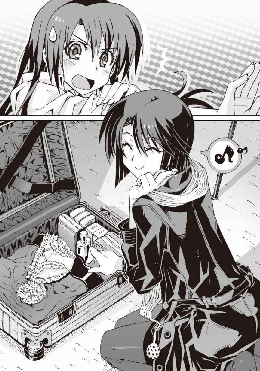
含みのある口調でそう答えた。訊かなければよかったかもしれない。ちょっと怖い。僕が密かに後悔している間にメイクを終えた朱浬さんは、
「あとは手足のむだ毛の処理と......ついでに、下着も替えちゃいましょう」と言う。
「下着？」
「男の子は、肩幅があるからねー。胸もそれなりに膨らませてバランスをとらないと」
「な......るほど？」
それだけ聞いていると、わりともっともらしく思えるが、朱浬さんが出してきた下着を見て僕は絶句する。シリコンの詰め物を内蔵したブラだけだったらまだ諦めもつくのだが、
「なんでパンツまで女物なんですかっ!?」
しかし朱浬さんはちょこんと小首を傾げ、
「スカートにラインが浮き出たら困るでしょ」
「ええっ......いや、でも......」
「大丈夫よ、さっき買ってきた新品だから」
「だからそういう問題じゃなくて」
「はいはい脱いで。さっさと着替えて」
「う......うわ、じ、自分でやりますから！」
ほとんど泣きそうな気分で僕は答えた。これでは完璧にただの変態だ。こんなものを着ているところを他人に見られたら、いろいろ人生が変わってしまいそうだ。
「ううっ......なんでこんなことに......」
半泣きのまま文句を言いつつ、僕がどうにか下着の着替えを終えたところで──
『智春っ！』
操緒が壁をすり抜けて僕の前に現れた。
うわ、と驚いて僕はその場にぺたんと座りこんだ。身につけた下着を隠そうと咄嗟に胸とか腰とかを押さえ、それを見た操緒が激しく嫌そうな顔をする。
『......なんでモジモジしてるの？ まあいいけど。それより、来たよ』
「来た？」
『お見合いの相手の人』
「え？ もう？」
僕は頭からワンピースをずっぽりと被って、控え室の窓際へと駆け寄った。ブラインドを少し押し上げて外を見る。
ちょうど玄関に車が到着したところである。
さすがに大会社の社長の息子というだけあって、送迎車もただの車ではない。全長十メートル以上ありそうな純白のストレッチ・リムジンだ......え？
『あの車って......』
その趣味の悪い車を遠目に見つめ、僕と操緒は揃って困惑の表情を浮かべた。朱浬さんまでもが、ちょっと怪訝そうに目を細めていた。
なぜか見覚えのある車だった。
僕たちはあの車を知っている。前に乗せてもらったことがあるのだ。佐伯兄の叔母さん家の茶話会に呼ばれたときに。あの車はたしか佐伯家の自家用車のはず。
あんな悪目立ちする車が市内に二台もあるとは思えない。ということは、あれに乗っている僕の見合いの相手というのは──
「げっ、佐伯......会長!?」
リムジンから降りてきたのは、紛れもなく洛高第一生徒会会長佐伯玲士郎だった。極山荘に入っていく彼の後ろ姿を見つめて僕は絶句。なぜよりによってあの男が見合い会場に現れる？
どうせ知らない相手だと思って菜津美の身代わりを引き受けたのだ。しかし見合いの相手は佐伯兄だ。あの冗談の通じないクソ真面目な男と、僕は女装して見合いをするのか。
そんなことがバレたら確実に殺される。どうするんだ、と軽くパニックに陥りながら朱浬さんを見る。と、
「これは......楽しいことになりそうね」
彼女はものすごくうれしそうな顔で笑っていた。
──勘弁してくれ。
○
どういう話し合いをしたのかしらないが、朱浬さんの交渉によって、見合いは本人たちだけで行われることになった。
妙に高価げな屏風に囲まれたお座敷。鹿威しの音だけが響く静かな庭を見ながら、僕は佐伯兄と二人きりである。
『じゃ、そういうことで操緒は消えるねっ』
部屋に入る直前、操緒が僕の耳元で囁いた。
「は？ 待った、なに言ってんだ。なんで僕が一人で見合いしなきゃいけないんだよ!?」
『え？ だって操緒がいたらバレちゃうでしょ。だいたいあの人、今さら幽霊なんかで驚かないじゃない。操緒がいても意味ないもの──』
「な......」
それを言ったら僕がここにいる意味のほうがないではないか、と思ったが、
「──こちらです、お客様。先方は先ほどからお待ちになってますので」
仲居さんに背中を押されるようにして、僕は見合いの席へと連れ出された。
座卓を挟んだ向かい側には佐伯兄の姿がある。
白いスーツで正装した彼は、生真面目そうないつもの顔で僕を見上げて一礼し、
「佐伯玲士郎です」
重々しく名乗った。やけに堂々とした彼の態度に圧倒されて、僕は「あう」とか「うう」とか意味のない言葉を洩らした。
それではごゆっくり、と挨拶して仲居さんは部屋を出ていった。完全に二人きりになってしまうと、沈黙が重く僕にのしかかってくる。
無表情な佐伯兄の顔を見上げ、なぜこの男は、こんなところまで来たのだろう、とふと思う。
まさか本気で見合いをするつもりだったのか。
不純異性交遊の生徒をボコボコにしたり、嵩月とつき合ったら滅ぼす、とか言っておいて、自分は高級料亭で下級生とお見合いか──？
考えようによっては、たしかにこれは面白い状況だ。もしかしたら僕は第一生徒会会長の、すごい弱みを握ったということではないのだろうか。
問題は彼の見合い相手が女装中の僕であり、それが表に出て恥をかくのはむしろ僕のほうであるという事実だった。佐伯兄の秘密を暴露するのは、ほとんど自爆みたいなものである。
これからどうしたものかと僕が悩んでいると、
「──このようなことになってしまって、お困りでしょう」
そう言って唐突に頭を下げたのは、佐伯兄のほうだった。完全に虚を衝かれて、僕はぽかんと口を開けた。実際、困っているのはたしかだけれど。
「え？」
「実は今回の見合いの話は、世話好きの叔母が勝手に進めたものでね。見合いなどするつもりはないと何度も断ろうとしたが断り切れなかったんですよ......」
迷惑をかけて申し訳ない、と佐伯兄は謝った。
僕はちょっと拍子抜けした。なんだ。結局、佐伯兄も菜津美と同じような境遇だったのではないか。それなら最初からそう言ってくれれば、僕がこんな苦労をすることもなかったのに。
つまり僕がここにいる理由はもうなにもない、ということだ。
幸いなことに佐伯兄は、まだ僕の女装に気づいていない。とりあえず事情を説明して、正体がバレないうちに本物の菜津美と入れ替わってしまおう、と思う。そうすれば最悪の事態は避けられる。今なら女装の噂が広まって恥をかいたり、佐伯兄に殺されたりせずに済むのだ。
だがしかし僕が口を開こうとするその前に、
「ですが......驚きました。まさか見合いの相手が、あなたのような美しい方だったとは」
佐伯兄が、そんな気障ったらしいセリフを真顔で告げる。ぶふっ、とお茶を噴き出しそうになったところを、僕は必死で唇を噛んで耐えた。
美しい、というのはもしかして僕のことなのか──？
ちょっと本気で背筋がゾッとする。佐伯兄の目が節穴過ぎて笑えない。
そういえばこの男は生徒会でも、マッチョな男子生徒たちばかりを取り巻きに連れていたが、まさか本気で特殊な趣味があるんじゃないだろうな。
「失礼ですが、お名前を教えてはいただけないでしょうか。実は最初から断るつもりで、釣書きにも目を通していなかったものですから」
「な......名前ですか？」
なぜ今さらそんなことを訊く？ 縁談を断るつもりならべつに知らなくていいのではないのか。とはいえ名乗らないわけにもいかず、
「あの......夏目ともは......わわっ！」
あやうく本名を言いかけて、僕は焦って言葉を呑みこんだ。完璧に墓穴を掘ってしまった。これでは変装した意味がまったくなかった。
事情を説明して、あとで本物の菜津美に引き合わせるのだから、ここで僕が友原菜津美の名前を名乗ってはまずいのだ。かといって、ほかの偽名なんて考えてなかったし、いきなり質問されたせいで思わず本名を口走ってしまった。
どんなアホでも今のは気づくだろう──と、僕は青ざめたが、
「ともはさんですか。なるほど。いいお名前だ」
「......は？」
なんだそれ、と僕は困惑。どうやら佐伯兄は、ともは、というのが僕の名前だと勘違いしたらしい。僕の正体にもまったく気づいてない様子だ。
なにがいいお名前なんだか、と僕は思った。今まで気づかなかったが実はこの人、けっこうアホなのかもしれない。
「あの、すみません......今回のお見合いのお話ですけど」
僕はどうにか気を取り直して言った。話がこれ以上ややこしくなると面倒だ。事情を説明するなら早いほうがいいだろう、と思う。
しかし佐伯兄はなぜか深刻な表情を浮かべ、
「──すみません。今の私には女性と交際することを考える余裕がないのです」と言った。
いやべつにそんなことは訊いてないのだが。
「詳しいことは説明できないのですが、私には、私のせいで犠牲になった従妹がいるのです。彼女のためにも、私には生徒会長としての職務を全うする義務がある。大げさに聞こえるかもしれませんが──世界を滅びから救うために」
「それは......」
哀音のことを言っているのか、と僕は思った。
僕にとっての操緒と同じように、佐伯兄にもやはり幽霊が憑いていた。彼の機巧魔神の中に封印されていた生贄の少女。いつも静かな微笑を浮かべていた、澄んだ氷の結晶のような副葬処女。
彼女のことを忘れてほかの女性とつき合うことなどできないと、佐伯兄はそう言っているのか。それは、その気持ちは──
「その気持ちは──わかります」と僕は言った。
佐伯兄は一瞬驚いたような表情を浮かべたが、やがて穏やかに笑って僕にうなずいた。
「ありがとう。あなたは魅力的な人だ」
「え......あの、違っ......そういう意味ではなく」
なにか誤解を招いてしまったことに気づいて僕はうろたえた。思わず余計なことを口走ったせいで、説明がさらに面倒になってしまった。
おろおろと慌てる僕の姿に、佐伯兄は愉快そうに目を細め、
「なぜかあなたとは初めて会った気がしません。まるで昔からよく知っていたような気がする」
その言葉に僕は、うぐ、と息を呑む。
歯が浮きそうなベタベタに気障なセリフだが、今の状況でそれを言われるとシャレにならない。本当に初めて会ったわけではないのだ。そしてそれがバレたら殺されてしまうのだ。
どう答えていいのかわからず、僕はダラダラと脂汗を流し続け、
「失礼──髪にゴミが」
佐伯兄が、いきなりなにを思ったのか、僕のウィッグに手を伸ばす。
「え!? いや......ちょっ......」
触られたらカツラだとバレるかも──という恐怖で僕は慌てて後退りし、それを見た佐伯兄が怪訝そうに眉を顰め、
「......きみの声......たしかどこかで？」
彼がなにかを呟こうとした──そのとき、
「む？」
雷鳴のような轟音が、日本庭園に響いた。
そして、ズン、と料亭の建物が揺れた。
○
なにが起きたのか、最初はわからなかった。
絶え間なく聞こえてくる、打ち上げ花火のような炸裂音。それが銃声だと気づくのに、少し時間がかかった。
高級料亭の雅な日本庭園。その静寂を破って銃声が鳴り響く。
「な......」
広大な緑の庭を僕は呆然と見つめた。
手入れの行き届いた庭園は、無数の樹木や置き石に遮られて見通しが悪い。その障害物の向こう側で、どうやら銃撃戦が行われているらしい。
高級料亭で銃撃戦。まったく意味のわからない組み合わせだった。ジャパニーズ・マフィアの会合でもやっていたというのならまだわかるが、この料亭はお見合い専門なのだ。
「何事です？」
険しい表情で仲居さんを呼んだのは佐伯兄だった。どうやら彼にも状況がわかってないらしく、困惑した様子が伝わってくる。
「──申し訳ありません、お客様」
恭しく襖を開いて現れた仲居さんが、僕たちに深々と頭を下げた。
「どうやら不審者が荘内に侵入したようです」
「不審者？」
「はい。おそらくお二方の見合いを妨害するのが目的と思われます」
「見合いの妨害、ですか......心当たりは？」
佐伯兄が怪訝顔でちらりと僕を見た。僕は、小刻みに首を振った。
見合いを妨害しようとする人間の心当たりはない。あるはずがない。なぜなら見合いを妨害するために侵入した不審者というのは、つまり僕自身のことなのだ。すでに代役を送りこんでいる菜津美が、今さらこんな荒っぽい方法で見合いの邪魔をする理由がない。
しかし僕たちがそうやって戸惑っている間にも、銃声は激しく鮮明になっていく。
侵入者が、僕たちのいる場所へと確実に接近しつつあるのだ。
「──ご心配は要りません。お客様」
僕の困惑が恐怖に因るものだと思ったらしく、仲居さんは殊更にこやかに微笑んでみせた。
そして彼女はエプロンの下から、すらりと大型拳銃を引き抜いた。
「私どもは明治創業以来百二十余年間、いかなる妨害者の攻撃を受けても、過去一度もお見合いの邪魔を許したことはありません。現在、敵の排除を行っておりますので、騒がしいですが、少々お待ちいただければ──」
そう言って彼女はニヤリと笑った。しかし、
「──おそらく排除は無理でしょう」
冷淡に呟いたのは佐伯兄だった。え、と仲居さんは困惑の表情を浮かべ、
「いえ、そんなことはありません。私どもは明治創業以来──......」
「無理です。火力が違いすぎる」
佐伯兄は揺るぎのない口調で言った。こういうときの彼の言葉は信じられる。彼はこの手の戦闘に関してはエキスパートなのだ。
いくら料亭とはいえ、佐伯兄が言ってるのは調理場の火の強さのことなどではあるまい。手持ちの武器の威力のことを問題にしているのだ。
極山荘の警備員たちがぶっ放しているのは、まぎれもなく本物の拳銃である。そんなものが料亭に装備されているというだけでも相当変だが、侵入者の持つ武器の威力は、それを遥かに上回るらしい。
警備員の銃の流れ弾で、庭園の木々の枝が折れ、生け垣の木の葉が次々に飛び散った。
しかし侵入者の攻撃の威力は桁外れだった。
敵の攻撃が着弾するたびに、松の大木が根こそぎ薙ぎ倒され、庭の巨大な置き石が砕け散る。衝撃波でズンと大気が揺れ、敷き詰めた玉砂利が飛び散って巨大な爆発痕が穿たれている。
まるで大砲をぶちこんだような威力である。圧倒的な破壊力だった。
しかし、そんな巨大な火器を運んでいるにしては移動速度が速い。しかも本来あるはずの発射音が聞こえない。そのため砲手の位置が特定できない。精強な極山荘の警備員たちが、一方的にやられているのはそのせいだ。
音もなく忍び寄り、至近距離から大砲をぶっ放してくる謎の侵入者だ。これは強い。そして恐ろしい。
「くっ......そんな......そんな！」
最後まで応戦していた警備員たちもついに倒され、残ったのは仲居さんただ一人になった。
「そんな馬鹿なっ！」
庭園を隔てる障子を蹴りあけて、仲居さんが拳銃を構えて飛び出していく。
その直後、彼女の頭上で重々しい着弾の衝撃音が響いた。そして建物の天井をぶち破って、柱や梁やらが降り注ぐ。
悲鳴を上げることすらできず、瓦礫に踏み潰される仲居さん。僕は呆然とそれを眺めた。
そのときになって僕はようやく侵入者の武器の正体に気づいた。
圧倒的な破壊力を持ち、それでいて発射の際に音を立てることもなく、原始的でありながら、それゆえに防ぐことのできない凶悪な武器。
七・二六キログラムの鉄の玉。
「砲丸だと......!?」
佐伯兄が驚愕で低くうめいた。
そう。侵入者の武器は砲丸だった。陸上の砲丸投げ競技で使うアレである。持参した大量の砲丸を遠距離からばらまいて、侵入者は極山荘の鉄壁の防衛網を粉砕したのだ。
そんなことができる人物は、僕たちの知り合いでただ一人──
「よ......吉田先輩？」
土煙の向こう側から現れた人影に気づいて、僕はうめいた。力士として理想的なアンコ型体型。やたら横幅の広い陸上部員の男子生徒。
迷彩柄のタンクトップを着て、顔にカモフラージュペイントを施した吉田先輩は、両手に砲丸を抱えたまま、
「菜津美──っ！」と叫んだ。
「なっ......」
彼の口から出た予想外の名前に、僕は、一瞬呆然とした。そしてなにかが僕の頭の中で音を立ててつながった。
彼女ができたと浮かれていた吉田先輩。
好きな人がいるのかと訊かれて、照れたようにうなずいていた菜津美。彼女はその好きな男のために、家出してまで見合いを潰そうとしたのである。僕がこんな恰好でここにいるのも、元はといえばその男のせいだ。
思い出す。放課後の校庭で、屋上を見上げて寂しげに立っていた少女の後ろ姿。
今にして思えば、あれは友原菜津美ではなかったのだろうか。そしてあのとき校舎の屋上では、吉田先輩が砲丸投げのイメトレをしていた。彼女は、その先輩の姿を見ていたのだ。
菜津美の好きな相手というのはもしかして、吉田先輩──あんたのことか!?
「うおおおおっ！ 菜津美、助けに来たぞっ！」
土足のままドカドカとお座敷に上がりこんだ吉田先輩は、菜津美の姿を捜して周囲を見回す。
そして彼は、佐伯兄の存在に気づいて驚いたように動きを止めた。
「さ......佐伯!? まさか友原家の見合い相手というのはおまえのことかっ!?」
砲丸を握った吉田先輩の両手が、ミシミシと軋む。しかし佐伯兄はそれを見てもなお平然とうなずいて、
「ともはさんの見合い相手のことならたしかにそのとおりだが、しかしおまえをこの場に招いた覚えはないぞ、吉田」
「やかましい！」
凶悪な目つきで喚く吉田先輩。普段の温厚な仏像顔が、恐ろしい仁王像の顔に変わっている。
「佐伯てめえ、今まで女に興味がないフリをしといて、俺の彼女と見合いするってのはどういうつもりだ？」
「彼女──か。ふむ。仮にともはさんがおまえの彼女だったとしても、こういう暴力的なやり方は感心しないな──」
「仮にじゃなくて友原は俺の彼女だ！」
「あの男はそう言ってますが──事実ですか、ともはさん？」
「えっ？」
唐突に佐伯兄に話を振られて、僕は困窮した。
どうも誤解があるというか上手く話が噛み合っていない気がする。今の佐伯兄と吉田先輩はどういう理由でいがみ合っているのだ？
混乱した僕がなにも答えられないでいると、業を煮やした吉田先輩が、
「ええい。とにかくそこを退け、佐伯。邪魔をするなら生徒会長といえども容赦せんぞ！」
「面白い──やってみろ」
砲丸を構える吉田先輩の前に、佐伯兄が立ち塞がる。先輩の腕にもりもりと血管が浮き上がる。本気で砲丸をぶん投げる気なのだ。さすがに、このまま彼らを放っておくわけにはいかず、
「待ってください。違うんです、吉田先輩！」
佐伯兄を庇うように両手を広げて、僕は彼らの間に割りこんだ。
「──ともはさん!?」
驚いて僕を見る佐伯兄。
「先輩って──誰だ？ おまえなんか知らん！」
吉田先輩は女装した僕を見て、砲丸を抱えたまま戸惑い気味に叫んだ。
考えてみれば当然の反応だった。彼の誤解を解くには、とりあえず僕が女装をやめなければならないのだが、それをやると今度は佐伯兄に殺される。
かといって、このまま女装を続ければ佐伯兄もろとも吉田先輩の砲丸の餌食である。
二人の上級生に囲まれて僕はおろおろと立ち尽くし、菜津美を捜して焦っている吉田先輩がグライド投法でついに砲丸をぶっ放そうとしたそのとき──
「慶ちゃん！」
お座敷の襖をこじ開けて、飛び出してきたのは菜津美だった。
「な、菜津美！」
両手の砲丸をゴロンと畳の上に投げ落とし、吉田先輩は慌てて菜津美へと駆け寄った。
極山荘の異変に気づいて急いで走ってきたらしい。菜津美は大きく息を弾ませていた。それでも彼女は吉田先輩の無事を確認してホッとしたように微笑み、彼の腕にしがみつく。
「菜津美！ 無事だったのか！」
「うん。慶ちゃんも......助けにきてくれたの？」
「はっはっは。そんなの当たり前じゃないか！」
「慶ちゃん！」
「菜津美！」
そんな感じで固く抱き合い、そのまま二人だけの世界に入りこむ菜津美たち。
もはや今さらつっこむ気にもなれない、見ているほうが馬鹿らしく思える光景だった。
「吉田め......どういうつもりだ......？」
事情を知らない佐伯兄が、その場に取り残されて憮然と呟く。
「失礼、ともはさん。これはいったい......？」
そして彼が説明を求めて僕のほうを振り向いたときには、僕はすでにその場を逃げ出していた。
いくら僕でも、そういつまでもつき合ってはいられないのだ。どうやら菜津美には僕よりも相応しい救い主が現れたようだし、あとのことはもう知らん。
消えてしまった僕の姿を捜して、困惑の表情を浮かべる佐伯兄。
無言で立ち尽くすその横顔は──
ほんの少しだけ寂しそうに見えた。
独り言のようにかすかな声で、彼は呟く。
「......ともは」
○
「あ......そのあと、は？」
翌日の昼休み。洛高校舎の屋上。ちょこんと揃えた膝の上に手製のお弁当を広げ、僕に訊いてきたのは嵩月だった。
「いや、それだけだよ。佐伯家と友原家の縁談は中止になって、菜津美さんの悩みも解決して終わり。吉田先輩が極山荘を襲撃した事実はもみ消されたらしいから、修理代や慰謝料の請求もべつになかったってさ」
僕は苦笑混じりに説明した。
妨害を阻止して確実に見合いを遂行するのが売りのプロたちが、砲丸を持ったたった一人の高校生に突破された。そんなふざけた事実を、極山荘が認めたがらないのも無理はなかった。
おかげで吉田先輩の暴走はお咎めなし。
佐伯兄と菜津美の見合いが行われた記録も、なかったことにされているらしい。
「菜津美さん......たちは？」
「あの二人なら仲良くやってるんじゃないかな、ほら」
そう言って、僕は屋上の手すり越しに地上を見下ろした。グラウンドの隅。陸上部用の休憩ベンチに並んで座っている二人組が見える。菜津美と吉田先輩だ。
彼らは仲良く談笑しながら、金色に輝く真鍮製の砲丸を磨いていた。
「よかった」
嵩月が安堵したように微笑する。
僕は黙って肩をすくめた。よかったのかどうかはわからないが、僕たちがあれだけ苦労したのだから、せいぜい仲良くしてもらわなければ困るのはたしかだ。
やれやれ、と溜息をつく僕の背後で──
『智春、智春』
唐突に操緒の声がした。
僕の背後にふわりと浮き上がって、操緒は、屋上に続く階段室を指さし、
『来たよ』
「え？」
彼女が指し示す方角に目を向けて、うっ、と僕は息を呑んだ。
屋上に上がってきたのは佐伯兄だ。いつものように男臭い巨漢たちを何人も引き連れ、校内パトロールの途中らしい。
僕は全身を硬直させて彼らを見る。冷や汗がダラダラと背筋を伝う。僕はひと気のない屋上で嵩月と二人並んで、彼女の手作り弁当を食している真っ最中なのだ。
菜津美の騒ぎでろくな食事をしていなかった僕を見かねて、嵩月が持ってきてくれたのだが、見ようによっては屋上でイチャついていたと受け取られてもおかしくない場面だ。こんなところを彼らに見られたら、どんな目に遭わされるかわかったものではない。
しかし隠れようにも、見晴らしのいい屋上に身を隠す場所などあるはずもなく──
「夏目智春......か」
佐伯兄はあっさりと僕たちを見つけて近づいてきた。
僕の脳裏に、顔面を腫らした不良少年の姿がちらりとよぎる。うー、と低く唸りながら身構える嵩月。
しかし佐伯兄は、僕たちの近くまで来たところで足を止め、
「友人同士仲がいいのは結構だが、くれぐれも節度を守って交際しろよ」
それだけ言い放つと、彼は気障ったらしく髪を掻き上げ、くるりと踵を返して僕たちに背中を向けた。そして屋上から去っていった。
僕たちは、ぽかん、と彼の消えていった方角を眺めた。今日の警告はそれで終わりか、と少し拍子抜けした気分で息を吐く。
『......なに今の？』
ぽかん、と目を丸くして操緒が言った。
「さあ」
僕も首を傾げながら呟いた。こんなにあっさり見逃してくれるなんて、あの佐伯兄の行動とは思えなかった。
仲が良くて結構だ？
そんなことを言う人間ではなかったはずだ。いったい彼になにがあったんだ。
「あ、いたいた。トモハル」
佐伯兄と入れ替わりに階段を上って現れたのは、朱浬さんだった。購買のパンの袋を提げて現れた彼女は、僕たちと合流して口を開くなりいきなり言った。
「ねえ。さっきそこで玲士郎に、夏目ともは、という女を知らないかって訊かれたんだけど」
うぐっ、と僕は食べかけだったウィンナーを喉に詰まらせた。
事情を知らない嵩月が、怪訝顔で僕を見た。
いちおう見合い潰しのことは説明したが、女装後の佐伯兄との会話については操緒にだって黙っていたのだ。
あんなもの他人に話せるわけがない。
しかし朱浬さんは僕たちの隣に座りながら、
「そういう名前の子を捜してるらしいのよね。もう一度会って話がしたいって言ってるわ」
恐ろしいことをサラリと言う。
僕はダラダラと嫌な汗を流す。どうして今さら、佐伯兄が「ともは」を捜すのだ。彼女の正体に気づいたというわけではなさそうだが──
「あの......ほかにはなにか言ってましたか？」
「ううん、彼女についてはそれだけだけど」
朱浬さんは、うーん、と尖らせた唇を人差し指でなぞる。
「でも、妙なことを言ってたわね」
「妙なこと？」
「そう。心に想う人がいるというのは悪くない──とか、なんとか」
「お、想う人......ですか？」
勘弁してくれ、と僕は思った。
それってアレか。佐伯兄が、ともはに惚れたということか？
彼が男女交際に妙に寛容になったのも、もしかしたらそのせいか？
どうやら佐伯兄も人並みに女性に興味があったようだが、しかし果たしてこういう場合、彼の趣味はノーマルだと言えるのか？
どうやら大方の事情を察しているらしい朱浬さんは、そこでにっこりと妖艶に微笑み、
「──だから、知ってるって答えておいたわ」
「え？」
「それで今度、彼とデートする約束を取りつけておいたから。来週の日曜日、洛央駅前に十時半。ともはちゃんにも伝えておいてね」
僕の耳元でそう囁いて、朱浬さんは美しい笑顔を浮かべた。ちょっと待て。なにそれ。聞いてないぞ、そんなの──！
「さあ、忙しくなるわね。今度は屋外だから、お化粧も変わるし、お洋服と靴も選ばなきゃ」
妙に弾んだ声で言いながら、またあとでね、と朱浬さんは立ち去っていく。彼女の背中を、僕は呆然と見送った。
ともはのおかげで佐伯兄が優しくなったのはいいが、しかし彼女の正体がバレたら、僕は確実にぶち殺されるわけで。それなのに今度の日曜日は彼とデート──
まだよくわかっていない操緒と嵩月が、訝しげな瞳で僕を見つめている。
そして途方に暮れた僕は、
屋上の隅にうずくまって涙を流した。
しくしくと、しくしくと──
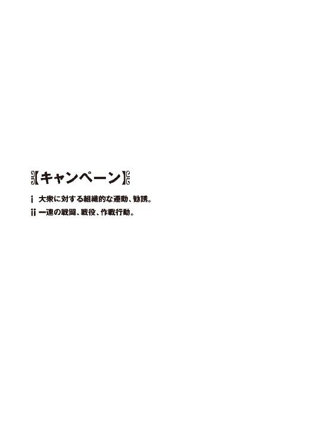
まあそんなわけで三十八円だ。
残高は三十八円だけだった。
財布の中身のことではない。預金通帳に残った全財産の合計だ。
夏休みの騒動でこさえた借金の引き落とし。そして電気、ガス、水道、電話料金。
それらを差っ引いた残額が三十八円。我ながら唖然とする数字だった。
今月はどうにかバイト代の前借りなどで乗り切るとして、このままでは来月以降、家計が破綻するのは確実だ。実家を追い出されて一人暮らし中の貧しい高校生には、致命的に深刻な事態である。
僕が用もないのに科學部の部室に居残って、アルバイト情報誌をめくっていたのもそのせいだった。家に帰っても電気代がかさむだけだし、もちろん遊びに行くような金はない。
その点ここなら光熱費はタダで、顧問教師市原の私物のコーヒーも飲み放題だ。頼りになりそうな先輩も、まあいないこともない。なんというか頼もしすぎるほどに。
「あら......トモハル、アルバイト探し？」
軽く苦悩しながら情報誌をめくっている僕に、おっとりと訊いてきたのは、その頼もしすぎる先輩──朱浬さんだった。モデルのようなスタイルに端整な顔立ち。普通の生徒に紛れて高校に通っているのが反則に思えるくらい、デタラメに綺麗なお姉さんだ。
実際、普通の女子高生と呼ぶには彼女の場合ちょっと問題があるのだが、それは今のところどうでもいい。底の知れないミステリアスな微笑を浮かべたまま、彼女は愉快そうに目を細め、
「前のバイト先はどうしたの？ クビ？」
マイペースな口調で何気に辛辣なことを言う。
「......違いますよ。いちおう」
僕は弱々しく首を振った。真面目に否定する気力は残っていない。
「ちょっとバイトを増やそうと思っただけです。貯金がヤバイことになってるんで。こないだの夏休みの事件とか、その前の事件のアレとかで」
「事件って......ああ鳴桜邸が爆発したやつとか、ニアちゃんが泊まったアレとか？」
朱浬さんは少し考えるような仕草をして、それからようやく思い出したように言った。まるで他人事みたいな態度だが、そもそも僕が多額の借金を背負うことになった原因の一部はこの人にもあるのである。しかしそのあとでいくつか借りを作ってしまっているので、あまり文句も言えないのだ。ついでに借金の肩代わりもしてもらっている。
「それで、いい仕事は見つかった？」
「いや、それがなかなか......」
情報誌を投げ出して僕は溜息をついた。地方の景気が悪いせいなのか、実際ロクな求人がない。それに僕には、とある体質的な問題があって、選べる仕事が大幅に限定されているのだ。
「うーん、短期で稼ぎのいいバイトの定番といえば、やっぱり肉体労働よね。建設現場とか」
「ですよね」と僕は頼りなく答えた。
「求人に応募したんだ？ 駄目だったの？」
「追い返されました。新しいビルの建築現場に幽霊がうろついてたら縁起が悪いと言われて」
「......なるほど」
妙に納得した表情で呟く朱浬さん。そんなふうにあっさり受け入れられても対応に困るのだが、まあ事実なので仕方がない。
幽霊憑き。
それが僕の抱えている体質的な問題だった。
かれこれ三年ほど前から僕の背後には、幼なじみで同級生の少女の霊が憑いているのだ。
霊といってもほとんど人畜無害なヤツだが、初対面の相手にそれを理解させるのは難しい。
駐車場整理の警備員の仕事では、操緒の姿を目撃して驚いたドライバーが次々に壁や柱に激突して即日クビになった。コンビニの深夜勤務では、幽霊の噂が広まって客足が途絶え、それからしばらくして店が潰れた。
そんな感じで、幽霊憑きの人間がまともなバイトを探すのは至難の業なのだ。
『......って、なにそれ。いいバイトが見つからないのは操緒のせい？』
そのとき僕の頭上から、不満たらたらの声が聞こえてきた。背後の景色をゆらりと揺らして、洛高の制服を着た少女が空中に現れる。
操緒だった。無駄にくっきりと鮮明な、自己主張の激しい幽霊だ。
全体的に色素が薄めだが、表情豊かで、あまり幽霊という感じではない。美少女といっても差し支えないと思う。
しかし重力を無視して空中を漂う彼女の姿は、どう見ても実体を持つまともな生物のものではなかった。不服そうに頬を膨らます彼女を見上げて、僕は小さく溜息を洩らす。
「べつにそうは言ってないけど、無関係ってことはないだろ」
『そうかなあ』
「......自覚してくれ。頼むから」
僕はこっそり呟いた。声に出したつもりはなかったが、それを鋭く聞き咎めた操緒は、むっ、と反抗的な表情を浮かべ、
『智春がいろいろ選り好みするのも悪いでしょ。特殊技能も免許もないのに、夜しか働けないとかワガママいうし』
「いやそれはべつにワガママじゃないだろ。平日の昼間は授業があるんだから」
しがない高校生に特殊技能や二十四時間勤務を期待されても困るのだ。ただでさえこのところ出席日数が不足気味なのだから。
『あと、時給が高くなきゃ嫌だとか、食事つき希望とか』
「借金の額がでかいんだよ。仕方ないだろ」
憮然として言い返す。僕が背負わされた借金は、下手すれば新車が一台買えるくらいの額なのだ。安い給料でちまちま働いてたら、利息分の返済も追っつかない。給料が高くて食費も浮くのなら、そっちがいいに決まっている。
『それに女の子と一緒の仕事がいいとか言ってなかった？』
「いやそれはそのほうが仕事が楽かと思って」
どうせ働くならムサいオッサンばかりの職場より女の子がいるほうがいいだろう。操緒の存在だってそのほうが目立たないはずだと思う。
とはいえ、たしかに無謀な条件という気がしなくもない。時給が高くて仕事も楽でついでに幽霊憑きでも大丈夫なんて、そんな割のいいバイトがあると期待するほうが甘いのか──と、僕が反省し始めたとき、
「あるわよ」
さらりと答えたのは、朱浬さんだった。
「......え？」
僕と操緒は怪訝顔で彼女を見返した。朱浬さんは携帯電話を弄びながら軽い口調で、
「心当たりがあるわよ。そういうアルバイト先。今の条件は全部満たしてると思うけど」
「本当ですか......でも......」
「知り合いのお店でアルバイトを募集してるの。もしよかったら紹介するわよ？」
「う......」
僕は迷った。本当にそんな職場があるのなら願ってもないことだが、気がかりなのはそれが朱浬さんの紹介ということだった。
なぜならこの綺麗な先輩は、いろんな意味でちょっと頼もしすぎる人だからだ。
王立科学狂会とかって怪しい組織とつながっているだけでなく、この街の裏社会にも彼女の知り合いは少なくない。密輸された機巧魔神の部品を奪い合って、タチの悪い組織と銃撃戦を繰り広げていたこともある。
そんな人に紹介されたアルバイトが、まともな仕事であるという保証はどこにもない。
「あの......それって、もしかして危ない仕事じゃないですよね？ 犯罪がらみとか」
「......犯罪？ どうして？」
朱浬さんは、首を傾げて面白そうに笑った。
かなり本気で訊いてみたのだが、ただの冗談だと思われたらしい。自分がどういう種類の人間なのか、自覚がないのが彼女の恐いところだ。
「普通のレストランの店員よ。高級志向のファミレスだから、たまにうるさいことも言われると思うけど、そのぶん給料はいいと思うわ」
「ファミレス......ですか？」
戸惑いながら訊き返す。話だけ聞いているとずいぶんまともだな。
「そこの店長が洛高の卒業生なのよ。元生徒会関係者で機巧魔神がらみの事情も知ってるから、操緒ちゃんのことも上手く取りはからってくれると思うわ。人手不足で、手伝って欲しいって誘われたばかりだから、あたしが紹介すればたぶんすぐに採用してくれるわよ」
「そ......そうですか」
にこやかに微笑む朱浬さんを見つめて、僕は真剣に考えこんだ。
朱浬さんの紹介というのがやはり気になるが、ファミレスの店員なら仕事としては悪くない。従業員向けの食事だって期待できる。おまけに幽霊憑きでも雇ってくれるという。
聞けば聞くほどいい話だ。うますぎるのではないかと思えるほどに。
「あの......じゃあお願いします。やってみます」
一抹の不安を覚えながらも、僕は朱浬さんに頭を下げた。ふふっと意味深な含み笑いを洩らしてうなずく朱浬さん。
嫌な予感がしないわけではないが、預金残高は三十八円。なんにせよ僕には最初から、選択の余地はなかったのだった。
○
グランクリユ、というのが店の名前だった。
落ち着いた煉瓦色の屋根とアイボリーの外壁。そこそこ高級感のある平屋の建物だ。お隣が駐車場になっていて、屋外にはタバコの吸えるテラス席。よくある郊外型のファミレスである。
夕食時にはまだ早いが、店内の席は半分以上埋まっていた。わりと繁盛している店らしい。
『ん......なかなか可愛い制服だね。合格』
忙しく働いているウェイトレスたちを眺めて、操緒が嬉しそうに呟いた。短めのスカートに、フリルを多用したブラウス。大人びた店構えとは対照的に、装飾過多の華やかな制服だ。
着る人間をかなり限定しそうな制服だが、店内で見かける女性店員は、それに見合うだけのレベルの高い人々ばかりだった。ファミレスというよりも、なんかべつの店みたいだ。
「制服か。そういうのやっぱり気になるんだな」
『そりゃまあね。操緒も、あれ着て働くことになるんでしょ？』
「......そうなのかな」
僕はちょっと首を捻る。幽霊憑きでも雇ってくれるとはいわれたが、操緒も一緒に働かせてもらえるとは聞いていない。そもそも幽霊に仕事なんかできるのか？ 従業員の控室あたりで大人しくしてればいいのではないかなあ。
まあいいや、と思いながら僕は店の裏口に回った。ベルを鳴らすと、インターホンから声が流れ出した。妙に艶っぽい中性的な声だ。
『はい？ どちら様？』
「あの......すみません。今日から新しく入ることになってるアルバイトの者ですけど......」
『ああ、黒崎さんの紹介の方ね。入って』
ガチャ、とロックが開く音がした。僕がおそるおそるドアを開けると、そこは店の事務室につながっていた。マネージャー用のデスクやら、従業員の休憩用ソファやらが置かれて雑然とした狭い部屋だ。
「へえ......話には聞いていたけど、本当にずいぶん可愛い幽霊に憑かれているのね、あなた」
事務室で僕を出迎えたのは、ワイシャツに蝶ネクタイの男性だった。年齢は二十代の後半くらい。おそらくこの人が朱浬さんの知り合いの店長なのだろう。長身でなかなかの男前だが、しかしなぜオネエ言葉なのか。
空中を漂う操緒を、彼は興味深そうに眺め、
「昼間からずいぶんはっきり見えるのね。これなら幽霊ってわかんないかな。うん。うちの制服が似合いそう。可愛いし」
『そ、そうですか......えへへ』
褒めちぎられて、柄にもなく照れたように笑う操緒。しかし制服が似合うというのは、暗にオマエも働けという意味なのだろうか。信じられないことだが、この店長、本当に幽霊を働かせるつもりらしい。
そして彼は、そのまま僕の顔をジロジロと舐め回すように観察し、
「ふんふん......なるほど。これなら問題なさそうね。さすがに黒崎さんの推薦だわ。はい採用。さっそく今日から働いてもらうわね」
「はあ......あの......」
僕は少し困惑しながら店長を見返した。これっていちおうバイトの採用面接だと思うのだが、ちょっと顔を眺めたくらいで、使えるかどうかわかるものなのだろうか。採用されたのだから文句はないが、どうも不安だ。顔の好みで従業員を選んでいるのではないだろうな。
「じゃあ、これ、あなたの制服ね」
「あ、はい......って、え？」
渡されたクリーニング店の袋をのぞきこんで、なんだこれは、と僕は呆気にとられた。
綺麗に折りたたまれた制服のシャツには、ヒラヒラのフリルと細身のリボンタイがついていた。ショート丈のエプロンの背後にも、大きなリボン。同梱されていたのはボリュームのあるパニエと、ミニスカートだ。
「あの......これって、女子の制服ですよね？」
わざわざ確認するまでもない単純なミスだが、このまま放っておかれても困るので、いちおう店長に見せて確認する。操緒のぶんと間違われてしまったのだろうか。
しかし店長はなぜか堂々とうなずいた。
「そうよ。うちは女子店員しか雇ってないから」
「......は？」
意味がよくわからない。あんたさっき自分で僕に採用って言ったばかりだろ？
「あら、聞いてるわよ。あなた、女の子になるとすっごく綺麗なんですって？」
「は......はあっ？ なんですかそれは!?」
猛烈に嫌な予感を覚えて、僕は勢いよく首を振った。女の子になる、ってなんだよそれ。
「だから女装が特技なんでしょう？ べつに隠さなくていいわよ。あたしは気にしないから」
「いや隠しているわけではなくて......」
ちょっと待て。悪いが、そんな特技を身につけた記憶はないぞ。どうしてそんな話になってるんだ。僕はただバイトを紹介されて来ただけなのに。
「だって黒崎さんから写真ももらってるし」
「え......写真？」
「ほらこれ。ともはちゃん、っていうのよね」
「げっ!?」
店長が取り出した携帯電話の画面を見て僕は絶句した。そこに写っていたのは、たしかに女装した僕の姿だった。友原菜津美の見合いを潰すため、極山荘に乗りこんだときのヤツである。
念のために言っておくが、好きで女装なんかしたわけではない。僕がそんな恰好をしたのはもちろん理由がある。あれはいわば人助けだったのだ。女装したのも唯一その一回だけであり、決して趣味や特技なんかじゃない。
夏目ともは、という名前は、その一度だけの女装の際に僕が名乗ったものだった。それを知っているのは今のところ朱浬さんだけのはず──
なのになぜ店長がその写真を持っているのだ。これはなんかの嫌がらせか!?
「可愛いでしょう、うちの制服。店舗ごとの特注品でね、お得意様優待キャンペーンなんかではイベント用の特別デザインも用意してあるの」
「は......はあ」
たしかに可愛い制服だが、それと僕の女装になんの関係が？
「この制服を目当てにうちに来るお客様も少なくないからね。あたしも店長として、この服が似合う可愛い店員を揃えておく義務があるわけ。顧客サービスの一環よ」
「......まあ、わからないでもないですが......」
「ちょうど背の高いクールビューティタイプの子がいなくて困ってたところなのよね。それで黒崎さんに声をかけてみたんだけど。あなたなら立派に彼女の代わりが務まるわ」
「いやいやいやいや......」
なんかいろいろ間違ってるぞ。それはなんてイメクラだ。ここはただのファミレスなんだから、べつに女の子のタイプを揃えておく必要はないだろ。てか、そもそも僕は女の子じゃない。
「あ、それから、これが黒崎さんから預かった化粧道具とウィッグね。奥に更衣室があるから、そこ使って。しばらくしたら教育係の先輩を寄越すから、それまでに着替えは済ませてね」
「いや、あの......だから」
聞けよ、人の話を。なんでナチュラルに僕が女装する流れになってるんだ。
しかしそうやって僕が反論するよりも先に、店長はふふっ、と勝ち誇ったように笑い、
「うちのお店の給料は、あなたが綺麗な女の子、という条件で計算してるから──そこのところ、忘れないでね。ほかの子にもバレないように」
「ぐ......」
なにも言い返せずに僕は黙りこむ。
たしかにこの店の待遇は破格の好条件なのだ。時給も高くて賄いつきで、勤務シフトの融通も利く。おまけに幽霊持ちこみ可。
なにか裏があるだろうとは疑っていたが、女装を強要されるとは思ってもみなかった。これなら犯罪がらみのほうがまだマシだ。しかしそれは裏を返せば、女装さえ我慢すればすべての問題が片づくということでもある。そして僕の銀行口座に残された金額は三十八円──
「じゃあよろしくね。ともはちゃん」
やけに色っぽい表情で店長が僕に手を振った。
僕はがっくりと肩を落とし、暗い気分で更衣室へと向かった。
○
操緒に指示されるままに化粧を施し、服を着替えてカツラを被る。あまり認めたくはなかったが、鏡に映る夏目ともはという少女は、たしかにかなりの美形だった。唇は艶やかで睫毛は長く、目元くっきり肌はしっとり。メイク技術の進歩というのは恐ろしい。
体型などメイクでは誤魔化せない部分もあるが、そこは朱浬さんが調達してきた特注の胸パッドやコルセットがカバーしてくれる。仮にそれがなかったとしても、こんなフリフリの制服を着て歩き回っているのが男だとは誰も想像しないだろうが。
『いつ見てもすごいねー、智春の女装。いっそそっち系の仕事のほうが儲かるんじゃない？』
「......やめてくれ」
そっち系ってどっちだよ、と僕は弱々しく息を吐いた。不気味といわれるよりはマシなのだろうが、褒められてもまったくうれしくない。
「それにしても......なんなんだよ、この制服。こんなんで本当に仕事なんかできるのか？」
実際に自分で着てみると、この店の制服の露出度がかなり高いという事実に気づく。
腕や肩が剥き出しで、背中も大きく開いている。おまけにスカート丈が信じられないくらい短い。パニエで大きく広がっているせいで余計にヤバイ。ちょっと屈むだけで見えそうだ。これは本当にファミレス店員の制服なのか？
『男物の下着は使えないね』
笑いをこらえているような口調で操緒が言う。どうせ他人事だと思って面白がっているらしい。
しかし実際どうするんだこれ、と僕が困惑していると、朱浬さんが揃えてくれた変装キットの中にはしっかり替えの下着も用意されていた。
「またこれか......」
新品のパンツを取り出して、僕はうめいた。
スポーティな感じのボックスショーツだ。薄っぺらくて不安だが、ハイレグビキニとかでなかっただけでもマシだと自分に言い聞かせるしかない。
その間に操緒も着替えを終えていた。僕が着ているものと同じ、グランクリユの制服である。幽霊のくせにどういう原理で着替えているのか相変わらずよくわからないが、さすがにこちらは問題なくよく似合っている。しかしいつもの操緒とは、どこか少し雰囲気が違っていた。
「......ってなんだ、そのメガネ？」
彼女が身につけている小道具に気づいて、僕は怪訝顔になる。似合わないとはいわないが、幽霊のくせになんでメガネ？ よく見れば髪型もいつもと違っている。
『変装。せっかく智春が女装してるのに操緒が一緒にいたらすぐバレちゃうじゃない』
「あ......そうか」
『気が利くでしょ』
えへん、と得意げに胸を張る操緒。たしかにともはの正体がバレるのは困る。できればそんな小細工よりも、姿を消して大人しくしてくれたほうが有り難いのだが。
慣れないニーソックスとやらを苦労してはきながら、僕はぐったりと嘆息する。リボンつきのパンプスにフリルの髪飾り。なんかもう真面目にいろいろ悩んでいるのが馬鹿馬鹿しくなってくるような恰好だ。
ここはひとつ女装も仕事のうちと割り切って、もう少し気楽に考えようと思う。要するに僕が男だとバレなければなにも問題ないのだ。この店はうちの高校から離れているから、知り合いがやって来る可能性は高くない。ましてや同僚に知人がいるわけでもないのだし。
「で......このあとはどうすればいいんだっけか」
『んー、誰か教育係の先輩が来てくれるって、さっき店長が言ってたけど......』
操緒がそう言いかけたとき、ぱたぱたと軽い足音が聞こえてきた。頼りないノックの音が響いて、更衣室のドアが開く。僕は緊張しながら振り返った。着替えが終わっていてよかった。危なかった。
「あ......おはようございます。すみません。遅くなりました」
更衣室に入ってきたのは、制服を着た小柄な女子高生だった。少し幼い顔立ちに気弱そうな微笑みを浮かべて、彼女はペコリと頭を下げる。
左右で束ねたセミロングの髪型が、垂れ耳のウサギを連想させた。特徴的なその髪型を、僕は前にも見たことがある。
じわり、と僕の背中に嫌な汗が浮いた。なぜこの先輩がこんなところに現れるんだ。もしかしてこれも誰かの陰謀か？
「あの、新しいバイトの方ですね」
そう言って彼女は僕たちを見上げた。束ねた髪がぴょこんと跳ねる。僕のよく知ってる動きだった。彼女の制服のタイには十字架をデザインした紋章。見慣れた洛芦和高校の制服である。
硬直している僕たちを、ちょっと不安そうに見つめながら彼女は頼りなく笑い、
「──お二人の教育係をさせていただくことになった沙原ひかりです。あの......よろしく」
「あ......いや、こちらこそ」
僕は声を震わせながら深々とお辞儀した。ひかり先輩は少しホッとしたような表情を浮かべ、それから唐突に服を脱ぎ始めた。
一瞬ひかり先輩が錯乱したのかと思ったが、そういえばここは女子更衣室だった。ウェイトレスの制服に着替えようとしているのだ。
「ん？」
呆然と立ち尽くしている僕に気づいて、ひかり先輩が服を脱ぎかけのまま小首を傾げる。
僕は慌てて更衣室を飛び出した。
○
「ともはさんとミサさん......ですか？」
着替えを終えたひかり先輩は、不思議そうに目を瞬きながら僕と操緒を見た。
無理に顔を背けるわけにもいかず、僕たちは引きつった笑顔のまま固まっていた。
ひかり先輩は洛芦和高校の二年生。学校では校内環境美化委員長を務めており、ヒラの美化委員である僕の先輩ということになる。
ついでにいえば、彼女は第二生徒会会長の倉澤六夏の親友だ。夏休み前にはその六夏の陰謀によって、僕と一緒に洛高の地下で遭難しかけたこともある。
そんな感じで僕とひかり先輩は、普通の先輩後輩よりはもうちょっと親密な間柄なのだった。
いくら変装しているとはいえ、そんな彼女にこの至近距離で観察されて気づかれない自信はまったくない。さすがにこれはバレただろうと覚悟を決める。もう少しマシな偽名も考えておくべきだったのだろうが、こんなに早く知り合いに会うとは、僕も思ってなかったのだ。
あといちおう言っておきますが、さっき先輩の着替えを見てしまったのは不可抗力で、決してわざとではないですから。いやほんと。
「ともはさん......って」
「は、はい？」
ひかり先輩が、ちょっと背伸びして真面目な顔で訊いてくる。僕の心臓がドクンと跳ねる。
「背、高いですよね？」
「え？ そ、そうですね......」
それは僕の正体が男だからなのですよ──と言うわけにもいかず、虚ろな笑顔でうなずく僕。
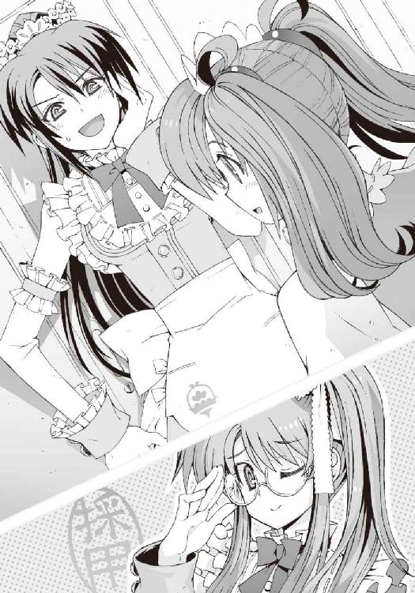
「いいなあ......私、小さいからうらやましいです。ちょっと憧れちゃいます」
「は、はあ......そういうものですか」
「そうですよ。ともはさん、スタイルもいいし。胸とかも」
「いや......これは」胸パッドですから。
そんな僕の内心の呟きに気づくことなく、はぁ、と自分の胸元を見下ろし、溜息をつくひかり先輩。なにやら予想外の反応である。もしかして僕の正体に気づいてないのだろうか。
ぼんやりした人だとは前から思っていたが、まさかこれほどとは。
「......どう思う？」
僕は小声で操緒に訊いた。操緒は苦笑気味に肩をすくめながら、
『バレなくてよかったんじゃない？』
「そうかなあ......」
ひかり先輩が同じ店でバイトしているという事実は変わっていないのだ。つまり僕はこの先ずっと、彼女の前で女のふりを続けなければならないということだ。それはなんの解決にもなっていないのではないかなあ。むしろ状況が悪化しているような気がする。
「あの、ではレジのところに店長がいますから、ミサさんはそちらに行ってください」
一通り説明を終えたところで、ひかり先輩は僕たちをレストランのフロアへと連れ出した。
ミサさん──というか操緒は店の入口で、お客様案内係をやることになっているらしい。
たしかにそれなら、実体を持たない彼女でも働ける。そこまでするか、という気がしなくもないが。なんというか人使いの荒い店長だ。
「じゃあ、ともはさんはこちらで」
私が説明します、とひかり先輩が緊張気味の口調で言った。どうやら新人アルバイトの前ということで張り切っているらしい。両手を握って小さくガッツポーズを作ったりもしている。それにしてもこの人の仕草は、いちいち小動物っぽくて可愛らしいなあ。
「あの......えと、いきなり接客は難しいので、最初は物品の補充からやりましょうね。紙ナプキンとかお塩とか」
「あ、はい......」
真面目に説明してくれているひかり先輩には悪いが、僕は彼女の言葉をぼんやりと聞き流していた。女装してるせいで落ち着かないのだ。
やたら短いスカートが不安だし、動くたびにあちこちヒラヒラする制服にもどうも慣れない。
考えてみれば、ともはの姿で公共の場所に出るのは初めてだ。ほかのバイト店員や客の視線を全身に感じて、猛烈な羞恥心に襲われる。
おまけにひかり先輩と並んでいると、なぜか余計に注目されるような気がする。たぶん小柄で童顔の美少女と、背の高い美女の組み合わせが人目を惹きつけるのだろう。普通に男の恰好をしている間は誰にも見向きもされないのに、女装した途端に注目されるというのが我ながらひどく情けない。
「今日はわりと空いてるから、バイト初日にはちょうどよかったですね」
仕事の説明が一段落ついたところで、ひかり先輩がそう言った。
「これって混んでないほうなんですか？」
僕は驚いて訊き返した。ファミレスが混み合う時間帯にはまだ少し早いが、客席はけっこう埋まっている。
「ええ。平日の夜はいつもこんな感じですけど、週末はもっと混んでますよ。特にキャンペーンのときはすごいです」
「キャンペーン？」
「二カ月に一度、お得意様優待キャンペーンがあるんですよ。特別メニューやサービスがあって、このお店の名物なんです。バイトの子にも臨時ボーナスが支給されますし」
「へえ......」
そういえばさっき店長も、イベント用の特別デザインの制服があるとか言ってたな。それはたしかに客が集まりそうだ。
あまり仕事が忙しいのも困るが、臨時ボーナスというのは魅力的である。ちょっとやる気が出てきたかもしれない。
高級志向というだけあって、グランクリユの建物は客席数のわりに広くてゆったりしていた。店員の人数もわりと多めだ。
制服が制服だから当然なのだろうが、ウェイトレスは基本的に全員が若い女性である。
その制服のデザインも、人によって少しずつ違っている。どうやら個人の好みに合わせてアレンジしているらしい。
そのせいか一部の客にはお目当ての店員がいるらしく、ただ注文を取るだけでなく、仲良く挨拶や短い会話を交わしていたりする。
ひかり先輩も常連とおぼしき客から、たまに声をかけられていた。よくいえばアットホームな客筋であり、悪くいえばちょっとキモい。
そして僕たちが空いたテーブルの後片づけををしていると、
『ひかり先輩。あの、四番テーブルのお客さん、ご指名なんですけど大丈夫ですか？』
新しい客を席に案内した直後の操緒が、戸惑ったような表情で近づいてきて、ひかり先輩に耳打ちした。
「あ、はい。すぐに行きます」
大急ぎでテーブルセッティングをしながら、うなずくひかり先輩。
「......なんだよ、ご指名って？」
僕は小声で訊き返した。操緒は呆れたように首を振りながら、
『この店、ウェイトレスの指名ができるのよ。指名料をべつに取られるらしいけど』
「はあ？」
なんだそりゃ、と女装していることを忘れて突っこみそうになる。女の子の指名って、それはもはやファミレスじゃないだろ。メイド喫茶かキャバクラあたりの間違いじゃないのか。
しかし、ひかり先輩はそのシステムに特に疑問を感じてないらしく、
「じゃあ、ともはちゃんも一緒に来てください。私の贔屓のお客さんを紹介しますから」
そう言うと僕の手を引いて歩き出した。そんなものは紹介して欲しくないのだが。なんだかますますキャバクラみたいだなあ、と思う。
窓際のテーブル席で待っていたのは、意外にも真面目そうな大学生ふうの男たちだった。
「いらっしゃいませ、グランクリユへようこそ。お冷やすぐにお持ちしますね」
にっこりと笑顔を浮かべて彼らに話しかけるひかり先輩。指名料なんかを取ってるわりには、なんだか普通の接客である。ファミレスだから当然といえば当然なのだけど。
しかし日ごろ女の子と話し慣れていないのか、男たちはそれでも照れたようにそわそわしていた。すでに顔が真っ赤である。なるほど、こういう客層の需要がある店なのか。
「こちらは今日からここで働くことになった、新人のともはちゃんです」
ひかり先輩の紹介を聞いて、男たちが一斉に僕のほうを振り返る。突き刺さってくる熱っぽい視線に僕はたじろいだ。うわー、見られてる。なんかすごいジロジロ見られてるよ。
「と......ともはです。よろしくお願いします。あの、当店ではただいま国産牛フェアをやっておりまして、こちらの黒毛和牛ステーキがお安くなってますので......」
とりあえず教えられたとおりにおすすめメニューの説明をする。利益率が高いのでなるべくこいつを売りこめと店長に言われているのだ。
フェア実施中というのは嘘ではないが、もともとの値段が高いので、お得かどうかは微妙なところだ。しかし男たちは、たどたどしい僕の説明を妙に熱心に聞いていたかと思うと、
「じゃあ、ともはさんのオススメで！」
「お......俺も同じく！」
「ともはさんのオススメとドリンクバーを！」
先を争うようにして高額メニューを注文してきた。なぜか僕に好印象を与えようと必死らしい。なんかもうわけがわからない。
「すごいです。ともはさん、大人気ですね」
ＰＯＳ端末を操作しながら、ひかり先輩が感心したように目を丸くする。
僕は複雑な気分で曖昧に笑った。ほとんど詐欺師になった気分だった。
○
それから二週間ほどが過ぎた。
とりあえず仕事は覚えて『実習中』の腕章も取れたのだが、バイトに慣れたかと訊かれるとそれはまたべつの問題だ。
週四日のシフトで二週間。その間ずっと女装を続けるだけでもけっこう厳しい。おまけに同じ職場にはひかり先輩がいる。男の僕を知っている彼女の前で、店に来た客の男どもに愛想を振りまかなければならないのだ。これはきつい。ほとんど拷問というか、ちょっとした人格破壊プログラムである。これで「ともは」の正体が男だとバレたら、怒り狂った常連客たちにどんな目に遭わされるかわかったものではない。想像するだけで胃に穴が開きそうだ。
そんな感じで日に日に僕の消耗は激しくなっていたのだが、驚くべきことに、ともはを指名する常連客の数も着実に増加し続けていた。
彼らが書き残していったアンケートによると、「無口でクールでミステリアス。しかも恥ずかしがり屋なところがいい」ということになっているらしい。ちなみに無口なのは喋りすぎると声で男だとバレてしまうからであり、クールなのはたぶん疲れているせい。実は男なのを隠しているのだからミステリアスなのは当然で、恥ずかしがり屋というより本気で恥ずかしいのだ。そんなところに惚れられても困る。
こんな生活を続けていたら、いつか絶対に秘密がバレると思う。できることならその前に、こんなバイトは辞めてしまいたかった。
しかし月末まで働かないと給料は出さないし、ともはの正体もバラすと、店長から事前に釘を刺されている。どう考えても恫喝である。それに女装さえ我慢すれば、やはりこの店の時給は魅力的なのだった。
そんな感じで月末が近づき、給料日を目前に控えたある日。
グランクリユにやってきたのは、ちょっと意外な客だった。
「いらっしゃいませグランクリユに......う！」
店の入口で待ち構えていた彼女に気づいて、僕は表情を凍らせる。いつもの黒コートをまとった朱浬さんが、満面の笑みでウェイトレス姿の僕に手を振っていた。
「な......何名様ですか？」
「一人よ。ふふ、連れがあとからもう一人来るわ」
「おタバコは......」
「吸いません。禁煙席で」
「ご、ご案内します......」
「はーい」
笑いを含んだ声で答えながら、案内された席に着く朱浬さん。メニューを説明するふりをしながら僕は彼女に顔を寄せ、
「なにしに来たんですか？」と小声で訊く。
「トモハルの働きぶりを見学に来たのよ。いちおう店長に紹介した手前、責任あるし」
「............」
そんな笑いをこらえているような顔で言われても信用できない。ただ単に僕を笑いに来ただけじゃないのか？
「でも安心したわ。相変わらず美人ね、ともはちゃんは。男にしておくのがもったいないわ」
そう言って朱浬さんはクスクスと笑う。もしかしてそれで褒めてるつもりなのだろうか。うれしくないぞ。
「......それより朱浬さん、なんでひかり先輩がこの店で働いてるんですか。そんなの聞いてなかったですよ？」
「沙原ちゃんが？ あら、そうなの？」
朱浬さんは軽く驚いたように目を瞬いた。演技しているわけでもなさそうだった。すると、ひかり先輩がこの店にいたのは偶然か？
「まあ、そういうこともあるかもね。ここの店長は第二生徒会のＯＢだから。沙原ちゃんとはたぶん委員会つながりかしら」
「だ......第二生徒会？」
僕は反射的に顔をしかめた。実に嫌な響きのする単語だ。別名を〝巡礼者商連合〟とも呼ばれる洛高第二生徒会は、うちの高校に三つある公認生徒会の中の一つ。もっとも悪名高い生徒会である。
洛高の委員会活動を仕切る彼らの活動目的は、ただひたすら金を稼ぐこと。
金儲けのためならどんな汚い仕事も引き受け、身内すら売り渡すという連中だ。彼らの活動に巻きこまれて、僕が迷惑したのも一度や二度の経験ではない。
店長がその第二生徒会出身者だといわれれば、ファミレス離れしたこの店のあこぎなサービスにも納得できるものがある。
「それに、ここで働いてるのって、沙原ちゃんだけじゃなかったでしょう？」
「え......それってどういうことです？」
「まだ会ってない？ 勤務シフトがずれてるのかしらね。彼女、この店でフロアチーフをやってるって言ってたけど......」
「フロアチーフ......？」
つまりバイトのウェイトレスで一番偉い人ということか。そういえば会った記憶がないが。
「ちょっと待ってください。その人って、もしかして僕の知り合いですか？」
「ええ。ここで彼女と待ち合わせてるから、もうすぐ来ると思うけど」
「え？」
誰だよおい。女装したこの姿をまた知り合いに見られてしまうのか。それは勘弁して欲しい。
いや、それよりも今の話の流れだと、そのフロアチーフとやらも生徒会の関係者なのか？
「あ......来たみたいね」
そして僕が混乱から立ち直るより早く、朱浬さんがヒラヒラと手を振った。
待ち合わせのお客様でーす、という案内係の操緒の声に送り出されて、問題の女が現れる。
彼女の正体に気づいて僕はうめいた。
美人といえば美人だが、ちょっと悪人っぽい顔立ちの少女である。手下の小悪党どもを従えて盗賊とかモンスター集めとかやってそうな感じ。しかしそれでも彼女は生徒会長なのだった。
第二生徒会会長──倉澤六夏。
属性、甘党。そして守銭奴。
この店のフロアチーフというのは、よりによってこの女か。
最悪だ、と僕は思った。女装のことが彼女にバレたら、口止めにいくら請求されるかわかったものではない。下手したらそれをネタにこの先一生ゆすられそうだ。彼女がここで働いていると知ってたら、こんなバイト引き受けなかったのに。
「──あら？ あなたが黒崎朱浬の紹介で店に入ったっていう新人？」
その六夏が僕に気づいて、値踏みするような視線を向けてくる。僕は引きつった笑顔でうなずいた。ひかり先輩と違ってカンが鋭そうだし、男だとバレるのではないかと気が気ではない。
「夏目ともはちゃんっていうんです。ふふっ、美人でしょう？」
おっとりと微笑みながら朱浬さんが説明する。なんのフォローにもなってませんけど。
「ふん。急激に指名を増やしてる新人がいるとは聞いてたけど......なるほどね」
なぜか対抗心を燃やしたように、六夏が軽く僕を睨んだ。そして余裕の表情で微笑むと、
「でも、まだまだ甘いわね。キャンペーンの賞金はあなたには渡さないわよ」
「......賞金？」
なんだそれ。ファミレスのイベントでなぜ賞金が出るのだ。常連客が景品をもらえるというキャンペーンならわかるのだけど、どうしてウェイトレスに賞金が？
「知らないの？」
拍子抜けしたように呟く六夏。
「今週末のお得意様優待キャンペーンで、売上げが一番多かったウェイトレスには臨時ボーナスとして現金十万円が支給されるのよ」
「じゅ......十万円？」
ぐらり、と軽い眩暈を覚えた。ボーナスが出るとは聞いていたが、まさかそんな大金とは。
時給千円で計算して百時間ぶん。借金返済に苦しむ僕にとっては、喉から手が出るほど魅力的な金額だ。しかしそんな美味しい話を、金にド汚い六夏が見逃すはずもない。
「あなたがライバルなら、相手に不足はないわ。わざわざ見に来たかいがあったわね」
ニヤリ、と好戦的な笑みを浮かべる六夏。
この人が朱浬さんと待ち合わせなんて、めずらしい組み合わせだと思ったら、どうやら僕の偵察が目的だったらしい。いくら大金がかかっているとはいえ、普通そこまでするかなあ。
「当日はフロアチーフの実力を見せてあげるわ。せいぜいそれまでに腕を磨いておくことね」
ほとんど脅すような口調で、六夏が一方的に僕を挑発してくる。厄介なのを敵に回してしまったなあと、僕はうんざりした。
しかし十万円か。うーむむむ。
「............」
店の窓ガラスに映る自分の姿をしばらく眺め、どうしたものかと僕は真剣に悩み始めた。
○
そして訪れたお得意様優待キャンペーン当日。
その日のグランクリユ店内は戦場だった。
「いらっしゃいませ、グランクリユへようこそ」
「いらっしゃいませ、グランクリユへようこそ」
「いらっしゃいませ、グランクリユへ──」
午前十時のキャンペーン開始時刻から、続々と押し寄せてくる常連客たち。順番待ちの列はすでに店外の駐車場にまで伸びている。
それを迎え撃つウェイトレスたちも気合いが入っていた。普段は控え目で大人しい性格の店員たちも、今日は我先にと新しい客に群がっていく。やはり売上げ一位の賞金十万円が効いているらしい。
注文を受けたメニューの金額で順位が決まるため、ウェイトレスたちも売りこみに必死だ。制服はイベント用の特別製で、着こなしのアレンジも半端ではない。犯罪を誘発するのではないかと不安になるくらい布の面積を減らしている者や、エプロンの下にスクール水着を着こんだ者。ほかにも巫女装束、尼僧服、ＳＭふうなど。
もはやファミレスというよりも変なイベント会場みたいになっている。
そんな中、正午の中間集計の時点でトップに立ったのは、なにを隠そう僕だった。
「すごい......ともはちゃん、一位だよ」
束ねた髪をぱたぱたと弾ませながら、ひかり先輩が僕に教えてくれる。
「ありがとうございます」
僕は少し得意げに微笑んだ。今日の僕はちょっと本気なのだった。賞金の十万円を手に入れれば、来月の生活費は確保できる。そしたら速攻でバイトを辞めて、こんな女装生活にさよならするのだ。
なにしろ同じ男性だけに、僕には常連客の男どもの心理が手に取るようによくわかる。その点で、ほかの女性店員よりも断然有利なのだ。
露出の高い衣装を着て、高額メニューを押し売りするのは、目の肥えた常連客には逆効果。
僕が選んだのは、女学生ふうの着物と袴に編み上げブーツの清楚な制服だった。女慣れしていない純情な男どもには、この手の服のほうがウケがいいのだ。そして瞳を潤ませてモジモジしながら、「私、初めてだからキャンペーンのことよくわかりません」という態度をしていれば、あとは勝手に男たちが騙されてくれる。ほんの少しだけ良心が痛むが、十万円のためだから仕方がない。
『智春......じゃない、ともはちゃん、ご指名だよ。六番テーブル。あと喫煙席の二番も』
「あ、うん」
本当は休憩時間だったのだが、休む間もなく操緒に呼び出されて僕は立ち上がる。それから、ちょっと申し訳ない気分でひかり先輩に謝った。
「すみません。先輩のお手伝いができなくて」
「いいのいいの。大丈夫だから、がんばってね」
ひかり先輩はそう言うが、あまり大丈夫そうには見えなかった。彼女は両手に空いた食器を満載して、洗い場へと向かっている途中なのである。小柄な身体がふらふらと揺れて見るからに危なっかしい。
ほかの店員が常連客の対応にかかり切りになっているため、食器の片づけをするのが彼女以外にいないのだ。お冷やのおかわりや床の清掃など、金にならない仕事全般を、ひかり先輩がほとんど一人でやっている。
ただでさえ少しトロいのに大丈夫かな、と思っていると、やはり彼女はよろけて壁にぶつかった。食器をまき散らして盛大にこける。
「あ......ああ......失礼しました......っ」
半泣きになりながら割れた食器を拾い集めるひかり先輩。助けてやりたいのは山々だったが、あいにく僕にもそんな余裕はなかった。接客のほうが優先だ。なにしろ十万円がかかっているのだ。ひかり先輩には申し訳なく思いつつ、僕はメニューを抱えて常連客のほうへと急いだ。
その僕を途中で呼び止めたのは六夏だった。
「忙しそうね。夏目ともは」
「え？ あ......はい」
それくらい見ればわかるだろ。悪いがあんたと無駄話をしている暇はないぞ。
「結構。前評判どおりね。そうでなければ張り合いがないわ。あたしもそろそろ本気を出させてもらうわよ」
「いや......あの......」
気持ちはわかるが、新人と張り合う前にひかり先輩のほうをどうにかしてやれよ。あんたいちおうフロアチーフなんだから。
だいたい本気ってなんなんだ。六夏の売上げは悪くはないが平凡で、トップの僕とはずいぶん差が開いていた。決して彼女を甘く見ているわけではないが、今さら逆転は難しいと思う。
しかし六夏は余裕ありげにニヤリと笑うと、自分の常連客のほうへと向かった。
六夏が着ていたのはワイシャツに黒いベストと黒のタイトスカートだった。
ウェイトレスというよりカジノのディーラーみたいな雰囲気だが、妙な色気があって六夏の険のある美貌によく似合う。
しかもわざとワンサイズ小さなベストを着ているらしく、露骨に胸の谷間が強調されていた。もちろんシャツの襟元は第二ボタンまで全開だ。
その服装のまま、さらに胸を強調するように屈みこみ、上目遣いで常連客にすり寄る六夏。
そして彼女はメニューのデザート欄を開けて、
「ねえ......お客様。六夏、これ食べたいなー」
やたら高価な特盛りフルーツパフェを指して、媚び媚びの視線で微笑みかける。
そんなわかりやすい手口に引っかかる客がいるわけないだろ、と思っていたのだが──
「あっはっは。ええでええで。六夏ちゃんにはおっちゃんが奢ったる」
「やーん、六夏うれしー」
「............」
いやがった。なんだそれ。そんなのアリか。唖然として立ち尽くす僕の目の前を、勝ち誇ったように笑って通過する六夏。
「ちょっと待ってくださいよ、会長......じゃなくてチーフ！ 自分の食べ物を注文するなんて、そんなことしていいんですか!?」
「あら......べつにいいじゃない。客の金だし、店の売上げにも貢献してるし。それに注文したものはちゃんと食べるわよ」
「......食べるんだ」
そういえばこの女は極端な甘党で、普段から平気でドーナツを三十個とかそれくらい食べているのだった。特盛りフルーツパフェの五杯や十杯を平らげるぐらい屁でもないだろう。
しかもデザート類を盛りつけるのは、フロア係である彼女の仕事だ。つまり六夏は自分で注文したデザートを自分で作って自分で食べて、その代金を客に支払わせることができるのだ。
彼女の食欲が続く限り、いくらでも売上げを増やすことが可能な恐ろしい技である。まさに悪魔の所業だった。このままでは十万円の賞金を彼女に奪い取られてしまう。しかしこんな女にどうやって勝てばいいというのだ？
しかも六夏の攻撃は、それだけでは終わらなかった。彼女は新しく店に入ってきた男性客の顔を目敏く確認すると、さっそく近づいて、
「お客様、たしかもうすぐお誕生日ですよね？」
「え？」と、驚いた表情を浮かべる客。「俺の誕生日、覚えててくれたんですか？ もうすぐっていうか、再来月だけど」
「やだなー、六夏が忘れるわけないじゃない」
無理やりな笑顔で強引に客を沈黙させる六夏。あんたホントは覚えてないんじゃないのか。もうすぐじゃない。再来月は全然もうすぐじゃないよ。
「せっかくだから、みんなでお祝いしましょう。シャンパンとか開けて。今ここで」
「いや......でも、俺の誕生日は再来月......」
「本当の誕生日は、六夏と二人でお祝いすればいいじゃない。だから今日はみんなで」
「え、二人で？ じゃあ......そうしようか」
「はーい。ドン・ペリニョン入りまーす」
最高の笑顔を振りまきながら、六夏は、一本数万円の高級シャンパンのオーダーを入れた。
僕はその様子を唖然として見ていた。なんでファミレスにドンペリなんかが置いてあるんだ。やはり実はキャバクラじゃないのか、この店。よく見れば注文させられた客も、顔面を硬直させて立ち尽くしている。
しかし、とにかくこの一瞬で、六夏の売上げがトップになったのは間違いない。
このままでは賞金の十万円は、あの詐欺師みたいな生徒会長のものになってしまう。その前にどうにか売上げを逆転しなければ。
『......どうするの、智春？』
ふわり、と僕の背後に舞い降りてきて操緒が言った。僕は途方に暮れていた。あのペースで六夏に売上げを稼がれたら、差が開く一方だ。こちらもそれなりの高額メニューをオーダーしなければ。
「この店でいちばん高いメニューってなんだ？ ドンペリに対抗できそうなヤツ」
『えーと......ロマネ・コンティってやつが載ってるけど。一九九三年もの』
「ワインか。いくら？」
『......百万円』
げほっ、と僕は咳きこんだ。なんだそりゃ。なんでそんな飲み物がファミレスのメニューに載ってるんだ。つか、一本百万円の酒ってなんなんだ。透明人間になる薬でも入ってるのか？
たしかにそんなものをオーダーしてくれる客を捕まえれば、売上げトップは間違いない。が、どこの世界に百万円も握ってファミレスに飯を食べにくる非常識な馬鹿がいるというのだ。
これはもう駄目かもしれん、と僕はほとんど諦めかけた。
信じられない光景を目撃したのはそのときだ。
店の入口のレジ付近で、ちょっとした騒ぎが起きていた。サンタクロースのような袋を背負ったチンピラふうの男が、順番待ちの常連客の列を押しのけて、グランクリユの店内に入ってきたのだ。彼は大声でなにかを喚きながら、店の奥へと突き進んでくる。何人かのウェイトレスが悲鳴を上げた。
しかし僕はその悲鳴を聞いていなかった。
男が背負っていた荷物に完全に目を奪われていたからだ。
彼が持ちこんできたのは──無数の札束。
男の背中のずだ袋には、目がくらむような大量の紙幣が詰めこまれていたのだった。
○
金髪にグラサン顎ヒゲのチンピラ男は、右手で握り締めた黒っぽいなにかを振り回していた。
拳銃の形をした金属の塊だった。昔あれによく似たオモチャを持っていたことを思い出す。ロボットに変形するヤツだ。最近のオモチャは良くできていてまるで本物みたいだが、なにもファミレスにまで持ちこむことはないと思う。いい歳してけっこうお茶目な客だ。
そして男は、接客に向かおうとしたひかり先輩にその拳銃っぽいものを突きつけて、
「──よし全員聞け！ 強盗だ！ 撃たれたくなければ全員そのまま動くな」
というようなことを叫ぼうとしたらしい。
だがしかし、彼がそれを言い終える前に、
「ひゃああああっ」
唐突な男の動きにびっくりしたひかり先輩が、足を滑らせてすっ転んだ。お冷やとおしぼりを満載したトレイを近くの客の頭の上にぶちまけ、
「ああっ......すいませんすいません！」
束ねた髪を振り回しながら、必死で謝るひかり先輩。その騒ぎに掻き消されて、男の言葉を聞き取った客はほとんどいなかった。
その間、僕と六夏もそれを黙って見ていたわけではない。先に接客に向かったひかり先輩が脱落したということは、自分の売上げを伸ばすチャンスなのだ。
くっ、と気を取り直したように男は首を振り、
「黙れっ！ てめえら、殺されたくなかったら全員その場でテーブルに伏せて──」
もう一度、声を荒げて怒鳴ろうとする。が、
「──いらっしゃいませっ！ グランクリユへようこそっ！」
その前に僕の挨拶が店内中に響き渡った。
思わず驚いて動きを止める拳銃男。
そんな彼の背中のずだ袋には、推定数千万円の札束が詰めこまれているのだ。こんな上客を、ほかのウェイトレスに渡すわけにはいかない。
しかしそれは当然、六夏も同じことを考えていたらしい。男に駆け寄ろうとした僕の肩へと彼女は強烈なタックルをぶちかまし、
「何名様ですか!? お一人？ おタバコは？」
僕を力ずくで押しのけながら、矢継ぎ早に質問を繰り出す六夏。くそ。それがフロアチーフのやることか？
拳銃男も圧倒されたように少し後退りながら、
「え......いや、吸うけど......」
「あちらのトイレの前のお席でしたら、今すぐご案内できますけど！」
「あー......だからそうじゃなくて......俺は」
「喫煙席一名様ご案内でーす！」
男に反論する暇を与えず、無理やり彼の手を引いて席に連れこもうとする六夏。そうはさせるか、と僕も反対側の腕を掴む。
拳銃男は左右両腕をウェイトレス二人に搦め取られて、そのまま席へと連行されていく。
「くそ......離せ！ 違う......俺はメシを喰いにきたわけじゃなくて......！」
「はい、ただいまの時間でしたら喫茶だけでも大丈夫ですよ」
僕はにっこりと男に微笑んだ。
「六夏、特盛りマロンパフェが食べたいなー」
上目遣いになって男に媚びを売る六夏。
「違っ......そういうのもいらん。だから俺は」
「わかりました。飲み物ですねっ。でしたら、こちらのロマネ・コンティがオススメになっております！」
男の顔に叩きつけるようにして、僕はワインリストを差し出した。唖然とした様子で訊き返してくる拳銃男。
「......ロマネ・コンティ？ そんなんあるの？」
「はいっ。ロマネ・コンティ入ります！」
「え、おい!?」
拳銃っぽいものを振り回しながら男がなにか叫んでいたが、僕はそれを無視してオーダーを入れた。心配しなくても、男の背負っている袋にはまだまだ大量の札束が詰まっている。もっともっと毟り取らなければ。
そして六夏がちっ、やるわね、と苛立つように舌打ちし、
「そんなオッサン臭い飲み物より、やっぱドンペリですよねドンペリ。こっちのロゼなんかは一本十万円でオススメですわハニバニ！」
「いや......ハニバニって......俺は強盗犯......」
「五と半？ はーい、ドンペリ五本とハーフボトルお願いしまーす」
「なっ......！ 待てこら。おまえらいい加減にしろ。そんな注文は取り消しだ。俺は......！」
流されっぱなしだった男が、ついに逆上して、喚き声を上げた。笑顔でＰＯＳ端末を操作していた六夏の頭に、彼は持っていた拳銃を突きつけようとする。しかしそれよりも六夏の豹変のほうが早かった。
「......なんだとコラ？ 注文取り消し？」
いつもの悪人面に戻った六夏が、スカートの下に吊っていた軍用拳銃を引き抜いて、唐突に男の顎の下に突きつけたのだ。手品を見ているような早業だった。
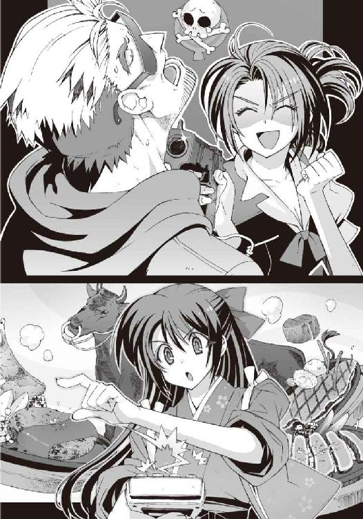
「取り消しなんてひどいこと言いませんよね、お客様？ そんなのされたら六夏、泣いちゃう」
「いや......ちょっと、なにこれ、本物の拳銃？ なんでファミレスの店員が拳銃なんか......てか、あの、銃口が顎に当たってるんだけど。安全装置もかかってないし......」
冷や汗を流しながらうめく拳銃男。泣かされかけているのは彼のほうだった。可哀想だが、僕にはどうしようもない。これが洛高第二生徒会会長の倉澤六夏という女なのだ。
端整な顔立ちを凶悪な感じに歪めて、彼女は僕のほうにちらりと目配せし、
「このまま二人で争っていても時間の無駄ね。ここは共闘しましょう、夏目ともは。この客の売上げはあたしたち二人で山分けってことで」
「......わかりましたチーフ。仕方ないですね」
僕は溜息混じりにうなずいた。たしかにこのまま六夏と潰し合いをしている場合ではない。
エプロンのポケットからＰＯＳ端末を取り出し、僕は片っ端からメニューに載っている料理を注文していった。ファミレスといえば定番のハンバーグステーキに始まって、サーロイン・ステーキ、サイコロステーキ、シャトーブリアン、Ｔボーンステーキ、リブロース。
「おい待て、おまえらなに勝手に注文しちゃってるんだよ!? ステーキばっかそんな喰えねえよ。牛一頭ぶんくらいあるじゃねーかよ！」
「心配しなくても、僕......じゃない、私たちも手伝いますから」
「そうよ、大丈夫よハニバニ」
「ハニバニじゃねえ！ なんで俺がおまえらのぶんまで払わなきゃなんねんだよ!? ていうか、そもそも俺は飯を喰いに来たんじゃないって」
「こんなにお金持ってるんだから、少しくらいいいじゃないですか」
さらに注文を追加しながら僕は言う。男は、ハッとしたように札束の詰まったずだ袋を引き寄せ、
「こ、これは俺がさっき苦労して銀行から奪ってきた金で......こいつで今日中に借金を返さないと、俺の命がヤバイことになるんだよ！」
「まあ......それは大変ですね。急いで料理を運んできてもらわないと」
「そうね、ハニバニ。とりあえずオムライスにケチャップで名前とか書いとく？」
「──だからそういう問題じゃねえんだよ！ おまえら俺の言うことを信じてねえだろ！」
「だって......」
「ねえ」
僕と六夏は、互いに顔を見合わせて首を振る。
金持ちにはケチが多いというし、余分な金を払いたがらない彼の気持ちはわかる。
だからって銀行から奪ってきた金だなんて、言い訳にしてもお粗末だと思う。銀行を襲って、逃走中に警察に包囲され、慌ててファミレスに逃げこんだ強盗犯じゃないんだから──
「って、え......？」
そのとき、やけに近所から聞こえてくるパトカーのサイレンに僕は気づいた。六夏に拳銃を突きつけられた状態のまま、男は舌打ち。
「ちっ......もう追いついてきやがった......」
まるで本物の強盗犯みたいな彼の反応に僕は戸惑った。そういえば、この男、店に入ってきたときからずっと拳銃っぽいものを振り回していたような気がする。それに安っぽいずだ袋も、金持ちが大金を持ち運ぶには不向きな感じだし。
「お客様......あの、もしかして本物の強盗犯でいらっしゃいますか？」
とりあえず営業スマイルのまま、僕は訊いた。
「だから最初からそう言ってる！」と男。
「............」
僕と六夏は沈黙した。
たしかに、彼が持っている札束は、銀行から奪い取ってきたとしか思えない続き番号のピン札ばかりである。
「......じゃあ、チーフ。すみませんが、あとはよろしくお願いします」
「ちょっと待ちなさいよ、夏目ともは。こいつ、あんたの客でしょう!?」
「えっ!? いや、でも拳銃を突きつけてるのはチーフだし、強盗犯はそもそも客じゃないし」
「一人で逃げようったって、そうはいかないわよ。敵前逃亡は死刑だからね」
六夏は左手でもう一挺の拳銃を抜くと、その銃口をいきなり僕に突きつけた。
「ええっ!?」と僕は絶句して立ちすくむ。
忘れていたが、この女は二挺拳銃の使い手なのだった。しかし後輩のバイト店員に、この状況で銃を向けるか普通。敵前逃亡の阻止というよりも、あんたただ道連れが欲しいだけだろ。
ふと気づけば、店はすでに警察に包囲されていた。いつの間にかほかの常連客たちも避難を終えている。そして僕と六夏と強盗犯は、変則的な三すくみ状態で膠着中。身動きが取れなくなってしまっている。
このまま無意味に時間を費やしていたら、そのうち警察が突入してくるだろう。それはそれでいろいろまずいことになる。
強盗犯が捕まるのはいいとして、六夏も銃刀法違反の現行犯だし、警察の事情聴取なんか受けたら僕が男であることがバレバレだ。最悪の場合、女装した僕の姿がマスコミ報道で流れる可能性だってある。その前になんとかしてこの場を脱出しなければ。
だけどどうやって──と僕が苦悩していると、
「ともはちゃん、ともはちゃん」
僕のすぐ背後から、ちょっと頼りない声が聞こえてきた。ひかり先輩の声だった。
小動物っぽく立ち尽くすひかり先輩の腕には、なにやら頑丈そうな一本の酒瓶が抱きしめられていた。僕のために運んできてくれたらしい。
わざわざ説明してもらうまでもなく、その使い途はピンと来た。
ありがとうございます、ひかり先輩。
最高です。これはナイスな凶器です。
「おい、ちょっと待て。まさかおまえ......!?」
強盗犯の拳銃男が青ざめる。僕は黙ってうなずくと、ひかり先輩の手から酒瓶を受け取った。
そして六夏に銃で狙われて動けない男の頭上へと、勢いよく振り下ろす──
中に詰まった深紅の液体をまき散らしながら、分厚い酒瓶が、ぐしゃ、と見事に砕け散った。
強盗犯はあっさりと気絶した。
これでいい。あとは警察が突入してくる前に、この店から脱出するだけだ。
六夏もホッとしたように溜息をついて、構えていた拳銃を元どおりスカートの下に隠した。
強盗犯もしばらく目を覚ましそうな気配はない。とりあえず問題は解決したはずだった。
「あ......ああっ......」
けれど、なぜかひかり先輩は、驚愕の表情で固まっていた。ふらふらとよろめき、その場に座りこむ。ひどいショックを受けたらしい。
「......ひかり先輩？」
僕は怪訝顔で彼女を見た。
ひかり先輩は震える指先を僕に向け、声にならない様子で何度か唇を開閉し、
「と......ともはちゃん、それ......あの、注文が入っていたから......私......運んできて......割っちゃったの？」
「？」
僕と六夏は首を傾げながら、ひかり先輩が運んできた酒瓶を見下ろした。
強盗犯の頭を殴りつけて、砕け散った輸入ワインの瓶である。
「......あ」
そこに記された単語に気づいて、僕と六夏は絶句した。
長いこと大切に保管されてきた酒瓶の、少し古びたラベルには、ちょっと読みにくいフランス語の文字でロマネ・コンティ──と書かれていた。
○
「......納得がいかないわ！」
グランクリユの更衣室。私服を脱ぎ捨てウェイトレスの制服に着替えながら、六夏がぷりぷりと怒っていた。お得意様優待キャンペーンの売上げ集計結果が不満らしかった。
「ご......ごめんね、六夏ちゃん」
弱々しい声で答えたのはひかり先輩である。
違うわよ、と六夏は首を振り、
「ひかりはいいのよ。そりゃね、このあたしを差し置いてあんたが賞金十万円を持っていったのはやられたって感じだったけどさ。まさか、ドジッ子のフリをして客にコーヒーこぼしたり、料理をひっくり返したりするたびに同情されて売上げが伸びるなんて裏技があったとはね」
「......ワザとじゃなかったのよ......ほんとに」
ひかり先輩の声がますます小さくなる。
そう。結局あの日、売上げ一位に輝いたのは、ひかり先輩だったのである。
六夏の言うように、ひかり先輩が失敗するたびに彼女の売上げが上がるという不思議な現象が起きたのも事実だ。が、それだけというわけでもないだろう。目立たず真面目に働いていた彼女のことを、常連客たちはちゃんと評価していたということだ。
ちなみに売上げ最下位は僕と六夏。これにももちろん理由があって──
「あたしが怒ってるのは、なんで夏目ともはがカチ割ったロマコンの代金が、あたしの売上げから半分引かれちゃってるのかってことよ！」
うきー、と地団駄を踏んで悔しがる六夏。
僕が割ってしまったロマネ・コンティの代金。半額といっても五十万円である。
それを売上げからマイナスされたら、さすがの六夏でも挽回するのは不可能だったのだ。
「仕方ないじゃないですか」
ロッカーの隅でこそこそ着替えながら、僕はぼそりと反論する。
「あの客の売上げは二人で山分けにしようって先に言い出したのは六夏会長......じゃなくてチーフなんですから」
賞金十万円をもらい損ねて落ちこんでいるのは、こっちも同じだ。あのときだって六夏が僕の逃亡を邪魔しなければ、貴重なワインが犠牲にならずに済んだのだ。弁償させられなかっただけでもマシだろう。今さら責任をすべて押しつけられても困る。
しかし六夏は、納得いかないわ、とぶつぶつ不平を洩らしつつ、
「──じゃ、あたしは先に行くから。あんたたちも急いでよっ」
着替えを終えて更衣室を出ていった。ふて腐れた子どもみたいな態度だった。金儲けのことに関しては、本当に根に持つタイプなのだ。
あとに残ったのは僕とひかり先輩だけである。
「ごめんね、ともはちゃん。六夏ちゃんも悪気はないのよ。気にしないで」
ひかり先輩が僕を気遣って話しかけてくる。
「あ、はい。大丈夫です」と僕は答えた。あの女の性格の悪さには慣れてますから。
それよりもひかり先輩には早く服を着て欲しい。目のやり場にちょっと困ってしまう。やはり少しぐらい怪しまれてもいいから、トイレで着替えるべきだったか。店長の許可をもらってるとはいえ、これも一種の犯罪だよなあ。
女装のことを隠さなければならない理由が、こうやってまた増えていくのか、と僕は嘆息。自分の罪を隠すために新たな犯罪に手を染める犯罪者の気持ちが、今なら少しわかる気がする。強盗犯だった彼も、こんな気持ちでグランクリユに逃げこんできたのかもしれない、とも思う。
しかし賞金十万円を獲り損ねた今となっては、この店のバイトを辞めるわけにもいかない。
「じゃあ、私も先にフロアに出てますね」
ようやく制服に着替えたひかり先輩が、僕にぺこりと頭を下げた。そして彼女は、更衣室を出る直前、なにかを思い出したように不意に顔を上げ、
「あ、そうだ、ともはちゃん」
「はい？」
「月曜日、学校で美化委員会の会議がありますから。忘れずに出席してくださいね」
ひかり先輩はそう言うと、微笑んで僕に手を振った。ぱたぱたと髪を弾ませながら、フロアのほうに走っていく。そんな彼女の後ろ姿を、僕は呆然と見送った。
『ね、智春......今のって......』
ゆらり、と空中に姿を現した操緒が、驚いた顔で僕のほうを振り返る。
僕は、絶句したまま首を振った。
ひかり先輩は、夏目ともはの正体を知らないはず。ずっとそんなふうに思っていた。ぼーっとした彼女のことだから、それぐらい鈍くても不思議はないと。
しかし、洛高の美化委員をやっているのは、ともはじゃない。男のほうの夏目智春だ。
なのにどうしてひかり先輩は、ともはに向かって会議のことを話したのだ？
冷たい汗が僕の背中を流れ落ちた。
もしかして実は最初からバレてた──とか？
まさかすべてを見抜いた上で、知らないふりをしていたというのか。親友である六夏にも黙ったまま。そんな馬鹿な。いや。だけど。
『ひかり先輩って......実は意外と......』
彼女が出ていった通路を見つめたまま、操緒は静かに呟いた。
「............」
僕は黙って肩をすくめた。
店内放送で時報代わりのＢＧＭが流れた。バイトの時間だ。僕はぐったり疲れた気分のまま、ふりふりの制服を揺らして仕事場へと向かう。
トレイを運んでいたウェイトレス姿のひかり先輩が、そんな僕に気づいて振り返った。
そして彼女は、控え目に微笑んで告げる。
「いらっしゃいませ、グランクリユへようこそ」
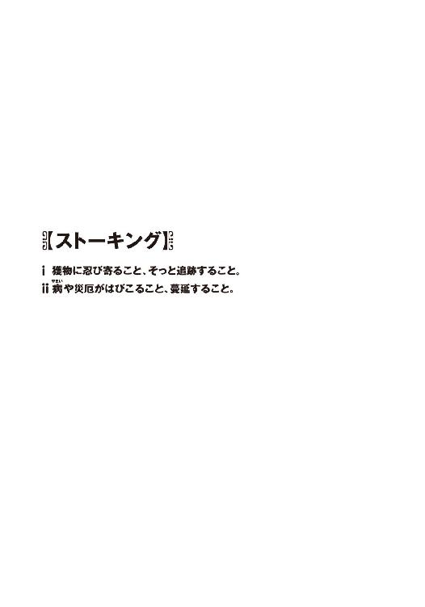
私立洛芦和高校には三つの公認生徒会があり、三人の生徒会長がいる。
第一生徒会は体育系クラブを統率し、校内の治安維持を担当。第二生徒会は委員会活動を監督し、校内の設備保全を担当している。
そして第三生徒会の管轄は文化系クラブで、主な仕事は文化活動と生徒の学力向上。
会長の名前は橘高冬琉。
またの名を〝人斬り橘高〟という──
その冬琉会長から僕が突然の呼び出しを受けたのは、残暑厳しい初秋の午後のことだった。
『──一年七組、夏目智春』
校内放送のスピーカーから唐突に流れ出したのは、間違いなく僕の名前であり、
『至急、第三生徒会室まで来なさい。繰り返す。一年七組、夏目智春......』
命令口調で告げたあと、ご丁寧に、もう一度僕の名前を呼んで同じ内容を繰り返した。
「............」
役目を終えて沈黙したスピーカーを、僕はしばらく無言で眺めていた。教室に残っていた同級生たちが、興味深そうな、しかし関わり合いになるのを恐れるような視線をちらちらと僕のほうに向けてくる。
『......第三生徒会室って、冬琉会長のとこ？』
僕の頭上を漂いながら、操緒が怪訝顔で訊いてきた。
色素が薄くて存在感の希薄な、幽霊のような──というよりも幽霊そのものの少女である。重力を無視して空中に浮かんでいるし、うっすらと身体が透けていたりもする。
『智春、なんかしたの。冬琉会長に呼び出されるようなこと......？』
なぜクラスメイトの中に普通に幽霊が紛れているのか。校内放送の呼び出しよりもそちらのほうがよっぽど謎だと思うのだが、慣れというのは恐ろしいもので、今さらそれを疑問に思う者もいなかった。世間とはそういうものなのだ。
「いや、心当たりはない......けど......」
多少の不安を覚えながらも、僕はきっぱりと首を振った。ここ最近のひと月ほどは、生徒会の世話になるような問題は起こしていないはずである。
少なくとも礼拝堂の屋根をミサイルでぶち抜いたり、プールを丸ごと陥没させたり、校内で銃撃戦をやらかしたりという事件の現場に居合わせた記憶はない。
『ふーん。で、呼び出しはどうするの？』
「とりあえず行ってみる......しかないよな」
僕は諦めの境地である。番号がどれだろうとこの学校の生徒会にはできるだけ近づきたくないのだが、冬琉会長の呼び出しを無視するのはそれはそれで恐ろしい。
どうせロクでもない用件なのだろうと予想して少し憂鬱な気分になる。
実際それはロクでもない用件だったのだが。
○
そんなわけで翌朝。僕と操緒は学校とは逆方向に向かうバスに乗っていた。
通勤ラッシュにはまだ少し早いが、車内はそれなりに混んでいる。僕は吊革につかまって、通路の真ん中あたりに立っていた。
操緒は目の前の座席に堂々と座っている。幽霊のくせに席を占拠するなよ、と言いたいところだが、そのほうが彼女の存在が目立たないので仕方ない。車内で幽霊騒ぎを起こされて困るのは主に僕のほうなのだ。こうして大人しく座っているぶんには、操緒は普通の女子高生に見えるし、幽霊憑きだと気づかれて僕が余計な注目を浴びる心配もない──はずだった。が、
「さっきから変な気配がしないか......？」
操緒の耳元に僕は小声で囁いてみる。彼女は怪訝そうに細い顎を上げ、
『ん？ 変って？』
「なんか......誰かに見られているような......」
僕は何気ない素振りを装って周囲を見回した。さっきから絶え間なく誰かに観察されているような気配を感じるのだ。たぶん気のせいではないと思う。目的地まであと少し。どうにか僕が幽霊憑きだと気づかれずにたどり着きたかったのだけれど。
しかし不安な表情で警戒する僕を、操緒は少し呆れたように見上げて苦笑した。
『見られてるのは操緒のせいじゃないよ』
「じゃあなんだよ？」
『注目されてるんでしょ。ともはちゃんが可愛いから』
そう言って彼女は、たまりかねたようにクスクスと笑い出す。僕はむっつりと唇を引き結んで黙りこんだ。頬にかかる長い髪を、鬱陶しく思いながら払いのける。
カーブに差しかかったバスがぐらりと揺れた。
慣れない靴を履いていた僕はふらついてしまう。それを支えてくれたのは、近くに立っていた他校の生徒だった。運動部の朝練にでも行く途中なのだろう。丸刈りで、やたら体格のいい男子高校生だ。普段の僕が下手に声でもかけようものなら、問答無用でぶん殴られそうな強面の兄ちゃんである。
しかし彼は僕に足を踏まれても文句ひとつ言わず、
「だ、大丈夫ですか......」
頬を赤らめながら、僕を気遣うようなセリフを吐いてくる。そんな彼の反応に、僕は複雑な気分で愛想笑いを浮かべた。静かに息を吐きながら、窓に映る自分の姿を眺める。
服は見慣れた洛高の制服だった。
ただし女子の制服である。
モノトーンを基調に十字架ふうの校章を配したブレザー。やや短めのスカートに、学校指定のニーソックス。人気のある制服だといわれているし、実際、可愛いデザインだと思う。しかし、自分で着るとなると話はべつだ。スカート丈が短かすぎて落ち着かない。
スカートの下にはいているのは運動用のスパッツで、見られても平気といえば平気なのだが、気になるものはやはり気になる。そのあたりの微妙な心理については、ちょっと説明しづらいものがある。
ファンデとリップ、アイライナーにマスカラ。ほとんどの男子は、おそらく化粧をしていることにすら気づかない完璧なナチュラルメイク。そして黒髪ロングのカツラ。それが今の僕の装備だった。
つまり僕は、女装中なのだ。
窓に映る自分の姿は、客観的に見て、それほど酷くはないと思う。女子にしては背が高いが、普通に女の子に見える。むしろ意外に可愛いかもしれない。それに、こうして女装させられるのが初めてというわけでもない。
とはいえ、さすがに自分の高校の女子の制服を着るのは初めてである。普段から見慣れている服装だけに、違和感も強烈で気が重かった。僕が思わず再び溜息をついていると、
『そんなに心配しなくてもバレないってば』
操緒がいつもの無責任な口調で言ってきた。
『やー、ホントにいつ見ても見事だよね、智春の女装。人間、誰でもひとつくらいは取り柄があるっていうけど、本当だよね』
......もしかして褒めてるつもりなのだろうか。
僕はウンザリした気分で降車ブザーを押した。間もなく目的のバス停だった。無言でまとわりついてくるほかの乗客たちの視線の圧力を感じながら、降車口へと向かう。ちらちらと僕を見ている彼らの表情はいろいろだ。目が合って恥ずかしげにうつむく少年や、微妙にヤらしい目で僕の脚を見ているオッサン。羨望と嫉妬の眼差しを浮かべているお姉さん。とりあえず女装がバレたわけではなさそうだが、ひどく疲れる。美人もいろいろと苦労が多い。
僕がバスを降りたのは川原沿いの住宅街だった。歩いて一分も経たないうちに予定の訪問先が見えてくる。
それは遠目に巨大な墓石のように見えた。
二軒の民家に挟まれた中庭の中央に建っている、艶やかに光輝く鋼鉄製の黒い箱である。
一辺の長さは六、七メートルほど。サイズ的には、ごく普通の倉庫や土蔵といった大きさだ。
しかし分厚い鉄板で四方を固めたそのオブジェは、どう見てもまともな建造物ではなかった。
窓も換気口も見あたらず、入口は何重ものロックで封鎖されている。その建物の姿から想像できる用途はたったひとつだけ──核シェルター以外にはあり得ない。
しかしそれはシェルターではなかった。
いや、実際のところ限りなくシェルターに近い代物なのだが、少なくとも現在はべつの用途で使われているのだ。
すなわち、高校生の勉強部屋である。
正確にいえば、勉強部屋として与えられたユニットハウスを住人が勝手に改造して、こんな厚切りの月面モノリスのような姿にしてしまったのだ。その内部を見た者は誰もいないが、噂によれば、冷暖房や高速ネット回線、ゲーム機や大画面テレビを取りそろえた快適空間なのだそうである。そして彼は日常生活の大半を、この黒い箱の中で過ごしている。その結果として、出席日数が足りなくなってしまうほどに。
その住人の名は塔貴也。洛校の三年生。そして科學部の現部長だ。
つまり僕の直接の先輩である。
『ん......相変わらずだね、部長の部屋......』
感慨深そうに嘆息したのは操緒だった。
どことなく厭わしげな声音なのも無理もない。三カ月ほど前、僕たちは、このシェルターの中に籠もった部長を引きずり出すために散々苦労させられたのである。説得に応じてくれる相手ではないし、結界を張り巡らせた壁には機巧魔神のパワーも通用せず、おかげでひどい目に遭った。だが、まあいい。それは今日の用件とは無関係だ。
『じゃあ、操緒はしばらく消えるね。がんばってね、ともはちゃん』
悪戯っぽい口調で言い残し、操緒は文字どおりその場で姿を消した。ゆらり、と波紋のように大気を歪めて彼女の姿が見えなくなる。
「その名前で呼ぶなよな......」
独り言のように呟き、僕は歩き出した。
ともはというのは僕の偽名だ。前に一度どうしようもない理由で女装したとき、苦し紛れに名乗った名前だったのだが、まさかこうもたびたびその名前を使うことになるとは思っていなかった。予想外にもほどがある。
シェルター前に到着したところで、僕は立ち止まって周囲を見回した。
特に怪しい気配は感じない。
「............」
僕は何度か躊躇したあと、シェルターの表面に一カ所だけ存在するボタンに手を伸ばした。
まるで自爆装置のスイッチみたいなデザインだが、単なるインターホンの呼び出しボタンである。シェルター内部と通信するための唯一の手段だ。
「おはようございます、部長......あの、夏目ですけど......」
僕はインターホンに向かって呼びかける。知り合いに向かって女性のフリをして話しかけるというのは、ただ女装するよりも何倍か恥ずかしい。これはいったいどういう罰ゲームなのだろう、と思う。
いや、これが罰ゲームならまだよかった。
これは真面目な作戦行動なのだ。それも生徒会長から直々に依頼された極秘任務だ。失敗は決して許されない。もしかしたら命の危険だってあり得るのだ。
幸いなことに、シェルター内からもすぐに反応があった。
プシュ、と空気の抜ける音とともに、密閉されていたシェルターのハッチが開き、中から洛高の制服を着た人影が現れる。ボサボサ髪にメガネの長身の男子生徒。
部長だ。
顔立ちはまずくはないのだが、どこか頼りない風貌の少年である。
おまけになぜかげっそりとやつれている。極度の精神的ストレスを受けていたらしい。
それでも彼は、迎えに来た僕の姿に気づくと、明るく表情を輝かせ、
「やあ、おはよう！ きみが来るのを待っていたんだ」
そして両腕を広げて僕の前に歩み寄り、
「──会いたかったよ、ともは。我が恋人よ」
声を弾ませながら僕をハグしてくる。
「わ、わたしも......」
部長の胸に抱かれて僕は硬直。全身に鳥肌を立てながら、どうにか無理やり微笑んでみせた。あまりの不快感で気が遠くなりそうになる。油断すると倒れてしまいそうだ。
「さあ、今日も仲良く登校しようか」
用意したセリフを棒読みに読み上げながら、部長が僕に手を差し出す。
僕はぎこちなくうなずいて彼の手を取り、
「え、ええ......そうね、塔貴也さん」
どんよりした気分のまま、部長と腕を組んで歩き出した。正直、泣きたい気分である。
僕は虚ろな眼差しで空を見上げ、混乱した意識の中で、なぜこんなことになってしまったのか、それを思い出していた。
昨日の放課後。生徒会室での出来事を──
○
僕の名前が校内放送で呼び出されて、それから間もなくのことだった。
「よく来てくれたわね、夏目智春」
第三生徒会室奥の会長席で、冬琉会長は静かに僕を出迎えた。
副会長で書記兼会計兼秘書のメガネ男子は不在。生徒会室にいるのは彼女一人だ。
橘高冬琉という少女は、見た目、普通の女子高生である。
派手な美少女というわけではないが、よく見れば顔立ちは端整で、体格は平均よりもやや小柄。右側だけ長く伸ばした前髪は特徴的といえば特徴的だが、特に奇抜というほどでもない。
生徒会長としては有能で性格も穏和。マッチョな男子生徒の群れを従えたりしてないし、飽和寸前の砂糖水を飲みながら札束を数える趣味もない。洛高の生徒会関係者では、ほぼ唯一の常識人なのだ。
しかし世の中には普通だからこそ恐ろしいということがある。たとえば見た目が普通の主婦だとしても、包丁とか絞めた鶏とかを握って深夜の路上を徘徊していたら、それはもう下手なヤクザの人よりも恐いと思う。
もちろん冬琉会長は鶏なんか持ってない。
代わりに彼女が持っているのは、刀、だった。
彼女の身長よりも長く無骨な日本刀である。
コスプレ用の飾り物ではない。鐔を持たない柄巻だけの変則的な太刀拵え。戦陣用の黒漆太刀だ。そんなものを女子高生が背負って校内をうろついていたら、これはもう異常としかいいようがない。
そしてその異常性をまったく自覚していない様子で、冬琉会長は柔和に微笑み、
「まずは座って」
正面の椅子を指さして僕に勧めた。
本人にそんなつもりはないのだろうが、座らなければ斬る、と言われているような気がして実に落ち着かない。
「......失礼します」
僕は怖ず怖ずと勧められた椅子に腰かけ、
「お茶を淹れるわ。少し待ってて」
「あ、いえ。あの、お構いなく」
刀を背負ったまま立ち上がる冬琉会長を、やんわり制止する。その装備のまま僕の背後に回られると、猛烈に不安になるので是非やめていただきたい。
「......そう？」
冬琉会長は少し困ったように溜息をつきながら、
「じゃあ早速だけど本題に入らせてもらうわね。今日きみに来てもらったのは、ちょっとしたお願いがあるからなんだけど」
「はあ......お願い、ですか」
さっそく不吉な予感が漂ってきた。有能な生徒会長サマが、無力な一般人の下級生を放送で呼び出していったいなんの頼み事だ？
冬琉会長は言い淀むような短い沈黙を挟んで、
「......お願いというのは、つまり塔貴也のことなんだけど」と言った。
「え？ 科學部の部長ですか？」
そういえば科學部長は、冬琉会長の幼なじみだったな、と思い出す。二人の自宅は隣り合わせで、親同士も仲がいいと聞いていた。部長が住んでいるシェルターも、もともとは両家の親が子どもたちのために用意した共用の勉強部屋だったのだそうだ。
冬琉会長はうなずいて軽く肩をすくめた。
「そう。彼ね、学校に来ていないのよ。部屋に引きこもってるみたいなの」
「また......ですか？」
僕は驚きながら眉を寄せた。
塔貴也という男は、自ら機巧師を名乗る天才的な技術者で、当然ながら頭がいい。容姿だってまずくない。世話焼きな幼なじみの女の子もいて、普通なら何不自由ない高校生活が送れそうなものだが、しかし彼は日常において致命的な問題を抱えていた。
部長は重度のヒキコモリなのだ。
昨年の秋あたりから自室にこもり続けて学校を欠席。ついには出席日数不足で留年寸前となってしまい、それを見かねた冬琉会長の命令で、僕たち科學部員は彼を部屋から引っ張り出すために大変な苦労をさせられたのだった。それが夏休み直前の出来事である。
あれから三カ月と少ししか経ってないのに、再び部屋に籠もってしまったのか。
「でも、今回は前と違うのよ。塔貴也には外に出られない理由があるの」
言い訳する子どものような口調で冬琉会長が反論する。常に冷静沈着で聡明な彼女も、部長に対してだけは甘いのだ。はっきりいって過保護なほどに。しかしそれはそれとして、部長が部屋に引きこもらなければならない理由とはなんのことだろう。
「これを見て」
そして冬琉会長が僕の前に差し出してきたのは一通の封筒だった。
消印は三日前。宛名には部長の名前が書かれている。差出人の欄は空白だ。
「......写真？」
封筒の中から出てきたのは写真の束。全部で五十枚くらいありそうだ。寝起きの部長。登校途中の部長。補習を受けている部長。中庭で居眠りしている部長。部長の食事風景。私服姿。とにかく部長の写真ばかりである。それも望遠レンズなどで隠し撮りしたものばかりだ。入浴中の彼の姿や、男子トイレで撮影されたものもある。
『あの......この写真って......』
「もしかして会長が撮影を......？」
操緒と僕は怯えた眼差しで生徒会長を見つめた。この人だけはまともな人格だと信じていたのに。盗撮なんて普通に犯罪ではないか。
「ち、違うわよ......!? なによその目つき。あ、あたしがこんなの撮るわけないでしょ！」
僕たちの疑惑の視線に気づいて、冬琉会長が慌てて首を振った。その焦りようだけでも十分疑わしく思えるのだが、
「会長が撮ったのでなければ、いったい誰が？」
「そんなの知らないわよ。一昨日いきなり塔貴也に送られてきたらしいわ。その写真だけが」
「......部長の家に？」
なんでこんなものが、と僕は訝しむ。
送られてきたのが、たとえば部長の犯罪行為の現場写真というのならまだわかる。その写真で部長を告発するとか脅迫するとか恐喝するとか、とにかく犯人の敵意が明白だからだ。
しかし写真に写っているのは、どう見ても彼の日常生活だけであり、これではまったく意味不明だ。さすがの部長もこんなものをもらって喜ぶほどの異常なナルシスト趣味はないだろう。うん、たぶんないと思う。
「写真が送られてきたのは初めてじゃないの。その前にも、似たようなやつが何度か送られてきたって塔貴也は言ってる」
『......それって部長が誰かに監視されてるってことですか？』
写真を眺めながら操緒が呟いた。
それを聞いて僕はゾッとした。早朝から真夜中まで、誰かが部長をずっと監視している？
実際、送られてきた写真の中には、部長の無防備な寝顔を写したものも含まれているが......
「それから、これも見て」
冬琉会長はそう言って、僕の前に丸っこい形のなにかを置いた。動物を模したヌイグルミだ。
それを見た瞬間、僕は危うく胃の中の昼飯を戻しそうになった。それほどまでにそのヌイグルミにはインパクトがあった。はっきり言って不気味だったのだ。
部長が普段使っている遠隔操作用のコアラ型ボディではない。たしかにあれも可愛らしくはないのだが、こいつはさらにその数段上を行く。
顔の造作はそれなりにファンシーだが、顔色が露骨に悪かった。おまけに腹から内臓がはみ出していた。飛び散った血痕も刺繍されている。まともな神経の人間がデザインしたものとは思えない。
『あ、臓物アニマルだ』
操緒が少し懐かしそうに目を細めた。
「ぞ......臓物アニマル？」
なんだそのふざけたネーミングは。
『何年か前にどこかのオモチャメーカーが発売したキャラクター商品だよ。内臓をさらけ出してるのがモチーフなの。これはマタサキパンダかな......このシリーズ、まだ持ってる人がいたんだね。全然売れなかったらしいけど』
それはまあ売れないだろうなあ、と僕は深く納得した。なぜこんなものを発売しようと思ったのか、メーカーの企画担当者の正気が疑われる。
それはそれとして、なぜその臓物アニマルとやらがこんなところに出てくるのだ。
「えーと......この臓物アニマルは、冬琉会長の趣味ですか？」
「どうしてそんなふうに思うのよ？」
冬琉会長はちょっと本気で傷ついた様子で頬杖を突いた。そういう表情をすると、この人は意外に幼く見えて可愛らしい。
「これも送られて来たやつなの。学校の塔貴也の靴箱に毎朝一匹ずつ入ってたらしいわ。スグリの花束と一緒にね」
「......花束？ プレゼントってことですか？」
「たぶんそのつもりなんだと思うけど。ちなみにスグリの花言葉は『あなたに嫌われたら、私は死にます』だそうよ」
「............」
僕と操緒は互いに顔をしかめて見つめ合った。なんなんだその黒く病んだ花言葉は。
とにかくこれで少しは話が見えてきた。
留年の危機に瀕しているにもかかわらず、部長が外に出られないという理由。
監視していることを仄めかす大量の写真。そして悪趣味なヌイグルミと花束のプレゼント。
これらの条件から導き出される結論はひとつしかない。僕は遠慮がちに冬琉会長を見つめ、
「あの......もしかして部長って......」
「そういうこと」
僕の質問が終わる前にうなずき、冬琉会長は物憂げに前髪を掻き上げた。
そして言った。
「塔貴也はストーカーにつきまとわれているの」
○
ストーカー。特定の他者に執拗につきまとう行為をする人間。ちなみに我が国では「ストーカー行為等の規制等に関する法律」によって、ストーカー行為は犯罪と定められているのだが、まあそれはいい。部長のヒキコモリはストーカーが原因──
なるほどなあ、と僕は思った。
部長の気持ちもよくわかる。彼の行動を監視し続ける実行力といい、プレゼントのセンスといい、どう考えても犯人はまともな感性の持ち主ではない。ただでさえ引きこもり傾向のある部長が、犯人との遭遇を恐れて外出を嫌がるのも無理はない。
「犯人の正体はわからないんですか？」
「心当たりがないこともないんだけど、確証がないのよ。向こうも手がかりを残さないように注意してるみたいだし」
「そうか......そうですよね。これってほとんど犯罪みたいなものだし」
「みたい、じゃなくて犯罪よ」
むっつりと不機嫌な顔で冬琉会長は呟き、僕を斜めに睨んだ。
「あなたを呼んだのはそれが理由」
「はい......？」
軽く困惑する。もちろん部長には同情するが、僕にそんな話をされても困る。そういうのは警察か担任教師に相談するべきではないかなあ。
しかし冬琉会長は首を振り、
「状況から判断して犯人は学校内の人間よ。警察沙汰にはできないわ。教師の捜査能力なんてアテにできないし、せめて犯人を特定するまではこっちでやらないと」
「はあ」
うーん、そういうものなのか。気持ちはわからないでもないが。
「あの......まさか、僕にその犯人を見つけろというつもりじゃないですよね？」
「もちろんそのつもりだけど、どうして？」
不思議そうに小首を傾げる冬琉会長。そこで驚くこの人の思考回路のほうが驚きだ。
「いや、だからなんで僕に依頼するんですか。こんなものを見せられても犯人像の推理なんてできませんよ。名探偵じゃないんですから」
「そんなこと期待してないわよ」
冬琉会長は苦笑した。
「あなたには囮役になってもらいたいの。塔貴也につきまとっている犯人を誘い出すための」
「囮役？」
「ええ。第三者が一緒にいれば、塔貴也に直接的な危害が加えられる可能性は低いし、犯人もつきまといづらいでしょ」
それはよくわかる理屈である。
「ええと、つまり部長の護衛ってことですか？」
「そんな感じね。この犯人の性格からして、塔貴也につきまとうのに障害があれば、邪魔者を排除するために自ら姿を現す可能性が高いわ。そこを取り押さえて欲しいの」
「取り押さえる？」
ちょっと待て。排除される邪魔者というのは、つまり囮役の僕のことではないのか？ それだと僕が犯人に狙われるということにならないか？
「待ってくださいよ。嫌ですよそんなの」
「......あたしのお願いが聞けないとでも？」
冬琉会長がすっと目を細める。唐突に膨れ上がった猛々しい殺気に、僕は背筋を凍らせた。しかしここで引き下がるわけにはいかない。
「護衛ならほかに適任者がいるじゃないですか。冬琉会長とか、科學部の朱浬さんとか......」
「それはだめ」
冬琉会長が僕の提案を一蹴する。
「え、どうして？」
誰がどう考えても、僕より彼女たちのほうが護衛には相応しい。冬琉会長は機巧魔神ですらぶった斬る剣の達人だし、朱浬さんは全身に重火器を内蔵した一人機甲師団の改造人間だ。ストーカーどころか、ＣＩＡの特殊工作員が相手でもそうそう後れを取ることはあるまい。
しかし冬琉会長は首を振り、
「塔貴也の行動は監視されているのよ。犯人は当然あたしたちと塔貴也の関係を知ってるわ。あたしたちが塔貴也と一緒にいたら、護衛してるってことがバレバレでしょう。犯人を余計に警戒させてしまうだけだわ」
「ああ......」
なるほど。なかなか説得力のあるご意見だ。そもそも、いくら無謀なストーカーといえども、日本刀を背負って登校してくる女子高生に正面きって喧嘩を挑む可能性は低いだろうし。
「似たような理由で黒崎さんも却下ね」
冬琉会長は素っ気なく言い切った。
「犯人を引っ張り出す囮役は、科學部の後輩とか、そういうわかりやすい人材ではだめなのよ。どこの誰とも知れない謎の美少女が、横から突然しゃしゃり出てきて塔貴也とベタベタするから、犯人が焦って出てくるの」
「......は？」
僕は戸惑い気味に彼女の言葉を反芻する。理屈としてはよくわかったが、前提条件が微妙におかしくなかったか？
「あの......謎の美少女ってなんのことです？」
囮役として呼ばれたのは僕ではなかったのだろうか。部長とベタベタするってなんだ？
不吉な予感に怯える僕に、冬琉会長は笑いをこらえているような表情で、
「べつにとぼけなくていいよ」
「いえ、本当に意味がわかんないんですけど？」
「この写真、黒崎さんから預かってきてるから」
そう言って冬琉会長が机の上に置いたのは、一枚のスナップ写真だった。
写っていたのは、ファミレスで忙しそうに働いているバイト店員だ。女子にしては背が高く、フリフリの可愛らしい制服に身を包んでいる。それを見て僕の全身から血の気が引いた。
「これっ!? なっ......なんで......!?」
焦りのせいで言葉が出てこない。冬琉会長の写真に写っていたのは、僕だった。
とある事情でこさえた莫大な借金を返すため、僕が女装してウェイトレスとして働いていたときの写真だ。
「実はね」
冬琉会長が涼しげな表情で笑う。
「最初は黒崎さんに護衛を頼もうと思ったのよ。だけど彼女に相談したら、もっといい方法があるからって、この写真をもらったの」
「う......うう......」
僕は弱々しくうめき続ける。いかにも朱浬さんのやりそうなことだった。面倒臭そうだから、とかそんな理由で、部長の護衛役を僕に押しつけようと思ったのに違いない。それはともかくいつ撮ったんだ、こんな写真。
冬琉会長はひらひらと手の中で僕の女装写真を弄びながら、
「これだけ可愛ければ囮としては文句ないわ。悪いけど、夏目くん、あなたはこれからしばらく塔貴也の恋人のフリをして過ごしてもらえないかしら」
「こ......恋人!?」
「ええ。犯人の正体を突き止めるか、向こうが塔貴也のことを諦めるまで」
「なっ......！」
あまりの驚愕にもはや言葉もない。
女装して囮をさせられるだけならまだしも、部長の恋人役。しかも、変態的なストーカーに狙われるというおまけ付きだ。なぜ僕がそんな恐ろしい目に遭わなければならないのだ。
『いいじゃない。やってあげれば？』
しかし無責任な口調で操緒が言う。明らかに面白がっている態度である。
「他人事だと思って気楽に言うなよな。なんで僕が部長の恋人役なんて......」
『でも......ほら、これも人助けだと思って』
「そんな気色悪い人助けがあるかっ」
「あら......塔貴也の恋人役がそんなに不満？」
冬琉会長が物静かに僕を見つめて訊いてくる。
「え......いや、そういうわけでは......」
彼女の迫力に気圧されて、僕はしどろもどろに呟いた。慈悲深く有能な第三生徒会長も、幼なじみのことになると人格が変わる。
もしかして今回の依頼を朱浬さんではなく僕に押しつけようとしているのは、ほかの女子に部長の恋人役を演じさせたくなかったからではないだろうな......？
「なにか言った？」
冬琉会長が僕の心を読んだようなタイミングで訊いてくる。僕は慌てて首を振った。会長は無言。にこやかに微笑んだまま刀の鯉口を切るのは、余計に恐いからやめてください。
「いえ......なにも」
「そう。じゃあ引き受けてくれるわね」
冬琉会長がようやく刀を鞘に収めた。
そして再び笑い出すのをこらえているような表情に戻って、
「よろしくね、夏目ともはちゃん」
「............」
僕はぐったりとその場に突っ伏した。
○
──というような回想を終えて、僕は再びバスの中にいた。
隣に座っているのは部長である。
ぴったりと肩を寄せ合って座る僕たちの姿は、傍目にはたしかに恋人同士に見えるだろう、と思う。部長は意外に上機嫌で、僕の横顔をまじまじと眺め、
「ふむ......噂には聞いていたけど、これほど女装が似合うとは驚きだね。きみにこんな特技があったとは......まさに男子三日会わざれば刮目してみよ、ということか」
妙に感心したような声で言う。褒められているのかもしれないが、そんなことを言われても返事に困る。微妙に用法が間違っているような気がするし。
「あの、あんまり見ないでもらえませんか」
僕は弱々しい声で懇願した。至近距離でじっと観察され続けるのは、生理的に耐えられない。しかし部長は怪訝そうに首を傾げ、
「なにか問題があるのだろうか。こうして間近で見つめ合うのは、恋愛関係にある者としての基本的な行動パターンだと思うのだが？」
「いや、そうかもしれませんけど」
真顔で顔を近づけてくるのはやめて欲しい。変な気分になりそうだ。
「部長は気持ち悪くないんですか？ その、男同士で......」
「特に問題は感じないが......？ この状況に関していえば、道徳的な観念よりも、カガク的な好奇心のほうが勝っている」
「こ、好奇心って......」
なぜそんな珍種の生物標本みたいな扱いを受けなければならんのだ。僕がこんな苦労をしているのも、元はといえばあんたのせいなのだが。
「それに当初の目的を忘れたわけでもないよ。どうかな。誰かに監視されているような気配は感じるだろうか？」
「そんなのわからないですよ。こんな目立ってたら」
僕は溜息混じりに周囲を見回した。
朝の通学時間帯にだけ運行される、洛高行きのバスである。
当然だが乗客のほとんどが洛高生だ。そんな中で、僕たちの姿は異様に人目を惹いていた。
ヒキコモリ歴の長かった部長の場合、普通に登校するだけで未だに驚かれてしまうことが多い。彼と一緒にいるのが、誰も見たことのない女子生徒だったりしたら尚更である。
そしてあまり認めたくはなかったが、今の僕の外見が目立っているというのも事実らしい。
「あの子、誰？」
「うちの学校にいたっけ、あんな美人？」
「でも......どっかで見たことがあるような......」
乗客たちの囁きが聞こえてくるたび、僕は寿命が縮む思いだった。
この状況で男だとバレたりしたら、僕はこの先、女装マニアというポジションで高校生活を送らなければならないのではなかろうか。それだけは絶対に避けたいところだ。よく考えたら、これってけっこう命懸けの任務じゃないのか。
「そんなに心配しなくても大丈夫だよ。操緒くんが姿を現さない限り、きみの正体がバレることはまずあり得ないから」
部長が自信に満ちた表情で断言する。
「そ、そうですか？」
「うん。幽霊憑きでもなければ、きみのような地味な男子の顔なんて誰も覚えてないよ」
「あの、それって......みんなは僕のことを操緒に取り憑かれているかどうかで見分けてるって意味ですか......？」
「いやまあ、それだけということはないだろうけど、外見的特徴というかキャラ的に......」
ナチュラルに貶されているような気がしたが、文句を言う気にはなれなかった。この際、キャラ立ちが弱くても構わないので、目立たないことを優先したい。
「ところで、その操緒くんの姿が見あたらないようだが？」
「えーと......今は監視を」
「監視？」
「外から見張ってもらってます。部長につきまとっている女子がいないかどうか」
僕はちらりと背後に視線を向け、リアウィンドウの上端から忍者のように顔を出してバスの車内を覗きこんでいる操緒を見た。ある意味で極めて幽霊らしい姿である。バスの後ろを走っている車の運転手が、彼女の姿に気づいて青ざめている。
「なるほど。悪くない発想だ。しかしこう乗客が多くては......」
「そうですね。よっぽど不審な行動をしてくれないと犯人を見つけるのは難しいですよね」
洛高に近づくにつれて乗客が増え、車内は洛高生たちでぎっしり満員だった。部長につきまとっている犯人がいたとしても、これでは見分けるのは不可能である。
「まあいいよ。今朝のところは犯人にきみの存在を知らしめるだけで十分だ。向こうが行動に出るとすれば、今日の放課後以降だろう」
「はあ......」
たぶんそうなのだろうな、と僕は思った。僕を排除するための実力行使に出るとしても、犯人にも準備が必要だろうし。
「というわけで、放課後もよろしく頼む。ともはくん」
「は、はい？」
「そうだな、少し寄り道して帰ることにしたほうがいいかもしれない。適当に買い物でもして、喫茶店あたりで時間を潰せばいいだろう」
「え......ええー......」
僕は思わず落胆の息を洩らす。一日に二度の女装はキツい。おまけに放課後を潰して男とデート。前世でどんな大罪を犯したら、こんな悲惨な思いをすることになるのだろう。
しかし部長は僕の控え目な抗議を気にした素振りもなく、
「それではまた放課後に会おう、ともはくん」
僕の耳元で囁いて立ち上がる。ちょうどバスが学校の前に着いたところだった。
「はあ......」
僕は疲れた息を吐きながら、部長と別れてバスを降りる。
このままの姿で教室に行くわけにはいかないので、いったん生徒会室に立ち寄って服を着替える手筈になっていた。ものすごい手間である。途中で知り合いに会うわけにもいかないので、いろいろと気を遣う。精神的な疲労もバカにならない。
校門をくぐって僕は足早に生徒会室のある校舎へと向かった。一人になると、余計に周囲の視線が気になった。気のせいか明らかに目立っている。もしかしたら転校生と間違われているのかもしれない。見慣れない顔だし、制服も新品だし、おまけに一人だけ違う校舎に向かっているのだから、そう思われても不思議はなかった。あまり嬉しくない誤解だ。
焦りまくりながらも、どうにか目的の校舎にたどりつき、僕は慣れないスカートを気にしながら、借り物のサイズきつめの革靴を脱ごうとした。
誰かが僕に声をかけてきたのはその直後だ。
「そこの女子。この通路は一般生徒は立入禁止だ。生徒会に用があるなら表から回って......」
警告してきたのは聞き覚えのある声だった。
顔を上げた僕の目の前に、一人の男子生徒が立っている。純白の改造学生服に身を包んだ、暑苦しいほどの美形──佐伯兄妹の兄貴のほうである。
「ともは......さん？」
その佐伯兄が、呆然と目を見開いて驚愕していた。
僕は混乱して声も出せない。非常にまずい状況だ。なぜよりによってこのタイミングで、この男に出会ってしまうのだ。
そういえば佐伯兄は、女装した僕のことを本物の女性だと信じて気に入っていたのだった。もう二度と彼がともはに会うこともあるまいと思って、そのまま放置していたのだが──
「やはりそうだ......夏目ともはさんではありませんか！」
ずいっ、と僕に顔を近づけてくる佐伯兄。
僕は心の中で悲鳴を上げた。最悪だ。もしもここで僕の正体に気づかれて、彼を騙していたことがバレたら、殺されてしまうのではないかと思う。なにがあっても彼に女装のことを知られるわけにはいかない──のだが、しかしいったいどうすれば。
「覚えていますか？ 以前に極山荘でお会いした佐伯玲士郎です」
「......あ......うう」
「あなたのことをずっと捜していたんです。まさか、洛高の生徒だったなんて......」
佐伯兄が無駄に端整な顔で僕を見つめ、肩に手をかけてくる。ひぃ、と声が洩れそうになる。あまりの焦りで頭の中が真っ白になり、
「いえ......あの......ご、ごめんなさい！」
「えっ？」
歩み寄ってきた佐伯兄を力任せに突き飛ばし、僕はその場から逃げ出した。
「と......ともはさん!?」
驚いたように叫ぶ佐伯兄を振り返ることもできず、僕は走り続ける。途中で靴を片方落としてしまったのだが、取りに戻っている暇はない。
立ち尽くす佐伯兄の姿がようやく見えなくなったとき、ホームルームの始まりを告げる予鈴が鳴った。まるでシンデレラの魔法の終わりを告げる十二時の鐘の音のようだ、と僕は思った。
○
そして再び放課後が訪れた。
授業の終わりが、これほどまでに気鬱に思えたのは初めての経験だった。僕は第三生徒会室に隠れて、またしても女子の姿に変身する羽目になる。
着こなしを指導したのは、操緒と冬琉会長だった。ウエスト部分を折り返してスカート丈を調節。ネクタイの結び方やら髪型やら、細かいところまで注文が多い。抵抗する気力も途中でなくし、僕は言われるままに服を替え、入念にメイクを施した。そして、
「信じられない......あなた本当に夏目くん？ 写真で見るより全然可愛いじゃない......」
変装を終えた僕を眺めて、冬琉会長が呆然と息を吐いた。
どことなく拗ねているような、不機嫌そうな表情である。
爪先から、黒髪ロングのカツラまで、舐め回すように睨まれてなんだか落ち着かない。僕が伏し目がちにうつむいていると、冬琉会長は苛ついたように、
「なんだか美人すぎてむかつくわ。可愛くモジモジしてるのもむかつく......男のくせに......」
「な......なんで怒ってるんですか!?」
「ていうかこの胸はなに。なにが入ってるの？」
「わっ、揉まないでくださいよ......や、やめて」
妙な執念を感じさせる動きで、背後から僕の胸を鷲掴みにしてくる冬琉会長。僕は身をよじって逃れようとしたが、やけに手慣れた冬琉会長の動作に翻弄されて逃れられない。僕的には、むしろ背中に密着してくる彼女の胸の弾力のほうが気になってしまうのだが──
「ううっ......それで結局、このあと僕はなにをすればいいんですか？」
冬琉会長がひとしきり満足するのを待って、僕は弱々しく質問した。
「そうね、塔貴也の補習が終わるまでもう少しかかると思うから、それまで正門の前で彼を待ってれば？」
「えっ？ それってすごく目立ちませんか？」
僕はじわりと焦りを感じた。洛高の正門前は教室から丸見えである。そんなところに女子が一人で彼氏を待って突っ立ってたら、注目されまくって仕方がないはず。
「いいのよそれで。囮なのに人目を避けてどうするのよ」
「そ、それはそうですが......」
女装したまま全校生徒の前に顔をさらすのかと思って、僕はウンザリした気分になった。
しかし冬琉会長に睨まれては文句も言えない。ほとんど追い出されるような形で僕は生徒会室を後にした。
ちょうど帰宅部の生徒たちの多くが下校を始めたタイミングだった。僕は彼らに紛れるようにして、とりあえず昇降口へと向かった。そこでようやく思い出す。
靴がない。
今朝、佐伯兄の前で落としてしまった革靴は、結局、回収できなかったのだ。たぶん佐伯兄が持って行ってしまったのだろうと思う。
こんな日に限って運動靴の用意もない。買い直そうにも購買部はすでに閉まっている。このままでは上履きで帰るしかないのだが、それではまるでうっかり屋さんのドジっ子みたいで、余計に目立ってしまいそうだ。
それに正直、借り物とはいえ、自分の靴が佐伯兄の手元にあるという状況は漠然と不安だった。あの男に限って、頬ずりされたり、臭いを嗅いだりされることはないとは思うのだが......
自分の想像に寒気を覚えて、僕が靴箱の前で途方に暮れていると、
「──お嬢さん、捜し物はこれではありませんか？」
背後から声をかけられた。聞き間違えようのない気障っちい口調に、僕は頬を引きつらせて振り向いた。僕の靴を両手で抱いて、佐伯兄が爽やかに微笑んでいる。
「佐伯あ......会長......」
「失礼とは思いましたが、あなたを待たせていただきました。ここでなら確実にともはさんに会えると思いましたので──どうぞ」
「ど......どうも......」
僕は佐伯兄の手から、綺麗に磨き上げられた靴を受け取った。
ぎこちなく微笑んで、笑顔の佐伯兄と無言で見つめ合う。冷や汗がダラダラと背中を伝う。
「で......では、私はこれで。ごきげんよう」
そう言って彼に背中を向け、僕はそのまま立ち去ろうとした。
しかしその前に佐伯兄の手が、僕の手首をがっちりと掴んでいた。
「待ってください、ともはさん。少しお話を」
「は、離してください......困ります」
僕は彼と目を合わせないまま告げた。この状況は冗談抜きで本当に困る。
少し傷ついたような表情を浮かべる佐伯兄。
「なぜです？ そんなふうに人目を避けるようにして──まるでなにかに怯えているようではありませんか」
「そ、それは......」
当たらずといえども遠からずである。ただし僕が恐れているのは、佐伯兄に自分の正体がバレることなのだが。それにこんなところで騒ぎを起こして目立つのも困る。
しかし佐伯兄は凛々しい顔立ちに憂いの相を浮かべ、
「心配事があるのでしたらなんなりと相談してください。あなたに危害を加える者がいるのなら、この僕が護ります」
強引に迫ってくる彼の迫力に、僕は昇降口の出口付近まで追いつめられてしまう。
いつになく積極的な佐伯兄の態度に、僕は軽く混乱していた。この人キャラが少し変わってないか？ 僕が下手に彼を焦らして、逃げ回っていたのがいけなかったのだろうか。逃げようとする相手のことは追いかけたくなるのが人間の心理だとよく聞くし。
「さあ。行きましょう、ともはさん──こんなところで立ち話もなんですし。美味しい紅茶をごちそうしますよ」
僕の耳元で甘く囁いてくる佐伯兄。うちのクラスにいる彼の妹によく似て、同性の僕でさえ思わず見とれそうになる綺麗な顔である。その迫力に気圧されて、僕は思わずうなずきかけ、
「──待ってくれたまえ、佐伯会長」
そのとき佐伯兄の背後から現れて、彼を制止したのは、ひょろりと背の高い上級生だった。僕の腕を掴む佐伯兄の前に、乱暴に割りこんで彼の手を振りほどく。
「塔貴也......科學部長？ なんの真似です？」
佐伯兄が不快そうに眉を顰めた。僕を背後に庇って立っていたのは、留年対策の補習を終えた直後で心なしかやつれた顔の部長である。
彼はなにやら面白げな表情で、僕と佐伯兄の顔をしばらく見比べ、
「それはこちらのセリフだよ。ともはくんは僕と一緒に帰る約束をしている。愛し合う者たちを引き裂くような無粋な真似はやめてもらいたいな」
笑いをこらえているような顔でそう言った。
事情を知っている部長にしてみれば笑いたくなるのも無理はないのだが、佐伯兄はそれを侮辱と受け取ったらしかった。彼は冷ややかな表情で部長を見返し、
「愛し合う者たち？ それはどうでしょうか？」
そして困惑する僕へと視線を移すと、
「あなたを想う僕の目は誤魔化せません。ともはさん、あなたは部長のことを本気で愛しているわけではありませんね？」
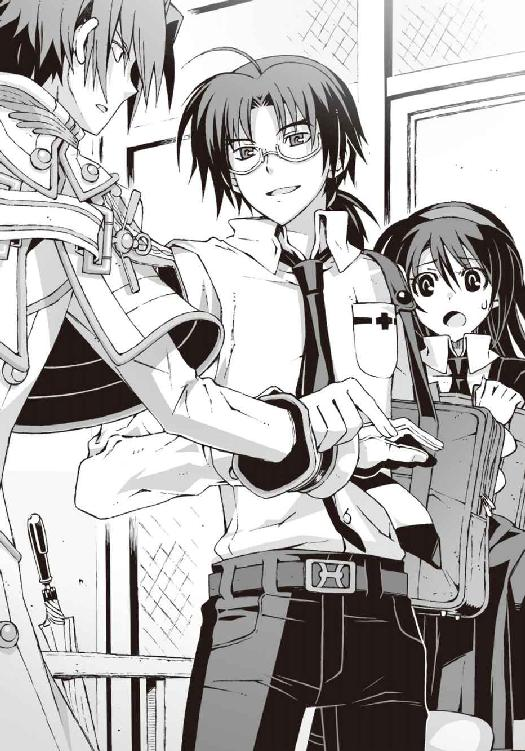
「え？ いや、それは......その......」
たしかに部長を愛してはいるかと訊かれれば明白にノーである。自分で自慢するだけあって佐伯兄の観察力も捨てたものではない。しかし彼の目はもっと根本的な部分で節穴だった。
「──ようやく話が見えてきましたよ、部長」
佐伯兄が義憤の表情を浮かべて部長を睨みつけた。第一生徒会長の予想外の反応に、部長もさすがに焦りの表情を浮かべ、
「え？」
「ともはさんの弱みにつけこんで脅迫し、彼女を悩ませていた原因はあなただったようですね」
「きょ、脅迫？」
「さあ行きましょう、ともはさん。ご心配なく。あなたの身柄は我が第一生徒会が責任を持って保護します」
反論する暇も与えず、強引に僕を引き寄せる佐伯兄。部長が慌てて僕の腕を掴み、
「待ってもらおう。ともはくんを連れていかれては困る。このあとの計画が狂ってしまう」
「そうはいかない。今日のところはお引き取り願おう、部長。あなたへの処分は後日あらためて連絡させていただく」
「ちょ、ちょっと二人ともやめ......痛たたた！」
左右両方から腕を引かれて、僕はたまらず悲鳴を上げた。
周囲がざわめき始めていた。ただでさえ悪目立ちする男子二人が、一人の見知らぬ女子生徒をめぐって奪い合いを演じているのだ。注目されないほうがおかしい。
ふと気づけば校舎に残っていた生徒たちも集まってきて、遠巻きに僕たちの姿を眺めている。この大人数の前で女装がバレたりしたら、もはや言い訳のしようがない。
どうやればこの状況を収拾できるのか見当もつかず、僕は成り行きのままに二人の男たちに翻弄され続けた。
突き刺さるような冷たい視線を背中に感じたのは、その直後だ。
「む！」
「──わっ!?」
唐突に部長が僕の手を離した。その反動で僕はよろめき、佐伯兄に激突した。
その僕の頭上スレスレを、なにかが高速で駆け抜けていった。
ぐぼ、という鈍い音がすぐ近くから聞こえてくる。
音源は佐伯兄だった。強烈なアッパーを喰らったボクサーのように彼の顔面がのけぞって、無防備な喉元が剥き出しになっている。そのまま彼の身体はスローモーションで傾いていき、やがて仰向けにばったりと倒れた。完全に目を回していた。大昔の格闘ゲームなら、ヒヨコのマークが彼の頭上で回っていたところだ。
一瞬、なにが起きたのか僕にはわからなかった。佐伯兄の足下に、白い球体がゆっくり落下してきてバウンドするまで。
「ボ、ボール......!?」
それは硬式の野球ボールだった。高校野球で使っているアレである。それが昇降口の窓の外から飛びこんできて、佐伯兄の顔面を直撃したのだ。
いや、飛んできたボールの角度からして、狙われていたのはおそらく僕だ。部長があのとき手を離さなければ、この硬球は僕の後頭部にめりこんでいた。誰かが僕を襲ってきたのだ。
誰かが──って誰だ!?
「犯人だよ。例のストーカーだ」
部長が妙に冷静な口調で言った。いわれてみればそうだった。あの臓物アニマルなストーカーをおびき出すために、僕はこんな恰好をさせられていたのだ。半信半疑だったのだが、まさか本当に実力行使に出てくるとは。
「──操緒くん」
部長が落ち着いた声で呼びかける。
『はーい』
ゆらり、と波紋のように大気を揺らして、色素の薄い幽霊の少女が現れた。さっきから姿が見えないと思っていたら、離れたところで僕たちの監視を続けていたらしい。
「どうだった？ 犯人はわかったかい？」
『ダメでした』
僕の期待をあっさり裏切って操緒が首を振る。
『操緒が外に出たときには、もう逃げちゃったあとみたいで。たぶん、どこかの校舎の窓から狙撃したんだと思うんですけど──』
「ふむ。そうか......球の飛んできた角度からみてもたぶんそんなところだろうな......」
部長の落ち着きっぷりに少し腹が立ってくる。もともとストーカーにつきまとわれていたのは、あんたのほうなのだが。その辺のことはわかっているのだろうか。
「あの......犯人が見つからなかったってことは、つまり囮は無意味だったってことですか？」
怖ず怖ずと僕が質問すると、
「うん。長距離から狙撃されるというパターンは考えてなかったからね......」
部長は悪びれもせずにうなずき、朗らかに笑った。
「まあこういうこともあるさ。次は頑張ろう」
「次って......」
あんた、また僕に命を狙われろと言ってるのか？ 硬球なんか投げつけられたら、いくら投手が素人でも当たり所によっては死ぬぞ。それに次は野球ボールよりも、もっと危険な凶器が飛んでくる可能性だってある。
しかしとりあえず今日のところは犯人も逃走したようだし、そうなると残る問題は──
「あの......これはどうしましょう？」
僕は額に縫い目の痕を残して、ぶっ倒れている佐伯兄を見下ろした。
部長は気のない態度で彼の全身を眺め回すと、
「うーん......まあ、命には別状ないよ。安静にしてればそのうち目を覚ますんじゃないかな」
無責任な口調でそんなことを言う。
そして操緒は愉快そうに微笑み、
『目を覚ますまで膝枕でもしてあげたら──？』
クスクスと笑う彼女を半眼で睨んで、僕は力なく嘆息した。
日が暮れる。
○
それから数日が経過した。
その間、僕は何者かによる執拗な嫌がらせを受け続けていた。
信号待ちの交差点で車道に突き飛ばされ、頭上からは植木鉢が降り注ぎ、腐った生卵が飛来。立ち寄ったコンビニでは万引き犯に間違われ、上着にはケチャップをかけられた。
嫌がらせを受けるのが女装時に限られているのはせめてもの救いだが、それはつまり登下校時における精神的負担が倍増するということでもある。こんなのがいつまでも続いていたら、僕のほうが登校拒否になりそうだった。
実際すでに精神的疲労とストレスで、三日で五キロの体重減である。おかげで最初はキツかった借り物の制服のスカートが、いつの間にかぴったりフィットしているという始末だ。
『智春ってさ......ますます女装が似合ってきたよね』
しみじみとした口調で呟く操緒。だからそれは褒めているつもりなのか？
僕は気怠く頭上を仰ぎながら、
「そんなことより早く犯人を見つけてくれ。このまま囮を続けていたら身が保たない」
『やってるよ。やってるけど、犯人の用心深さはちょっと異常。目撃されるようなミスは絶対しないし、なんの証拠も残さないし』
「う......それはまあ普通の相手じゃないんだろうけどさ......」
あの部長や冬琉会長の手に負えなかった犯人なのだ。操緒が手こずるのも無理はない。部長もとんでもないのにつきまとわれたものだ。
『んー......このまま普通のやり方を続けていてもダメかも。智春たちが、もっと犯人を動揺させるようなことをやらないと』
「普通じゃないやり方ってどんなだよ？」
『えっと、ともはちゃんがエロス全開で部長に迫るとか？』
「断る」
なにが悲しくてそこまでしなければならないのだ。女装した上で男に迫っていたら、完璧にただの性倒錯者ではないか。癖になったらどうしてくれる。
操緒はやれやれと肩をすくめ、
『実はね......怪しいかな、と思った人もいることはいるんだけど、少しイメージ違うんだよね』
「イメージ？」
『ん。ストーカーとか、そういうのとは縁遠い感じ』
「ちょっと待った。それってどういう意味だ？」
心当たりというのは、つまり現場で何度か同じ人物を目撃した、という意味だろうか。それは重要な手がかりではないのか？ なんで教えてくれなかったんだよ。
『んん、だってその人さ......』
説明しようと口を開きかけ、操緒はふとバスの乗車口のほうへと目を向けた。
ちょうど新たな乗客がバスに乗りこんでくるところだった。
たぶん僕と同年代の高校生くらい。ものすごい美人さんである。それほど派手な印象ではないが、花柄と白を基調にした甘ロリふうのファッションで、いかにも美少女という雰囲気だ。
その甘ロリ美人が近づいてきたので、操緒は見つからないように姿を消した。
バスが再び動き出す。
行き先は部長の自宅ではない。彼とは駅前で待ち合わせの約束になっていた。今日は祝日で学校は休み。かわりに繁華街で部長と半日をともに過ごすという計画である。
女装した上で男とデートというのは気が滅入るが、普通に男同士で遊びに行くのだと思えば問題はない。博識な部長の話を聞いているのは楽しいし、食事も奢ってもらえる約束になっていた。これでストーカーにつきまとわれてさえいなければ文句なかったのだが。
そう思って僕が溜息をついたときだった。
「──動かないで」
押し殺したような静かな声と同時に、なにか尖ったものが僕の首筋に突きつけられた。カチカチと耳元で響くのは、カッターナイフの刃を繰り出す音だ。
「なっ......!?」
「静かに。声を出さないで聞いて」
抑揚のない冷たい声が、僕の背後の席から聞こえてくる。頸動脈にカッターを突きつけられた状態では、命令されなくても大きな声は出せそうにない。
「あ......あんたはまさか......」
「喋るのは私。黙って聞きなさい」
カッターの刃が、僕の首筋に強く押し当てられる。
僕は硬直したまま、ぎこちなくうなずいた。これは少しシャレにならない状況ではないでしょうか。走行中のバスは意外に揺れるものだし、弾みで刺さったりしたらどうしてくれるんだ？
「これは警告よ。あなたが悪いの。私の塔貴也に近づくから」
地の底から響いてくるような声だった。僕は激しい悪寒を感じながらそれを聞いた。間違いなく本気の殺気がこもっている。それはともかくトッキーってなんだ。
「このまま大人しく家に帰って。そして二度と塔貴也に近づかないで。でなければ、次は警告では済まない。いいわね」
バスが次の停留所に停まった。乗客の何人かがぞろぞろと降りていく。さっきの甘ロリさんもだ。本当は僕もこのバス停で降りる予定だったのだが、しかし今の状況では立ち上がれない。僕の首筋には、ピタリとカッターが突きつけられたままなのだ。
「............」
バスが再び走り出した。僕は身動きできないまま固まっている。背後からの声はもう聞こえてこない。その沈黙が余計に恐ろしかった。焦りが恐怖に変わっていく。
間もなく次のバス停で、そこは終点のはずだった。そこで犯人がどんな行動に出てくるのか、想像するだけでも恐ろしい。そんな感じで、僕は恐怖の予感にうち震えていたのだが、
『──なにやってるの、智春？』
再び姿を現した操緒が、怪訝そうに眉を寄せて訊いてきた。
僕は悲鳴を上げたい気分だった。なんでこんなときに出てくるのだ。犯人を刺激するような真似はやめてくれ。そうやって焦る僕の姿を見て、操緒は呆れたように首を振り、
『犯人はもういないよ。さっき降りていっちゃった』
「......え？」
でもここに、と言いながら僕は振り返る。僕の首筋にはたしかにカッターが押し当てられたままだった。しかしそれを持っていたのは犯人ではなかった。
ヌイグルミだ。
顔色の悪い牛のヌイグルミが、シートの隙間に押しこまれるような形で、カッターの柄の部分を保持している。内臓をはみ出させた不気味なデザインのそのヌイグルミは......
「ぞ、臓物アニマル......」
僕は肩を震わせながらヌイグルミを引っこ抜き、乱暴に床に叩きつけようとしてやめた。手荒に扱うと呪われそうなデザインなのだ。それにいちおう重要な証拠物件である。
『さっきの人だよ。操緒が怪しいと思った人物』
「......さっきの人って？」
『ほら、ロリータふうのチュニックとか着てた、髪の毛ふわふわの美人の......』
「えっ!?」
さっきの美人が、部長につきまとっていたストーカー？
『ね。イメージ合わないでしょ！』
「ああ、うん......」
たしかにあの外見でストーカーなどといわれても、にわかには信じがたい。つき合ってくれと普通に頼めば、たいていの男はうなずくだろうし、たとえそれでフラれたとしても周囲の男たちが放っておかないはず。
「............」
そう思うとだんだん腹が立ってきた。部長はあんな美人につきまとわれて迷惑顔をしていたのか。それにつき合わされて僕はこんな苦労していたのか。女装させられて嫌がらせに遭って。
いやそれよりも最悪なのはやはり犯人だ。あんだけ美人なのになんの不満があって──
「許せない」
『......智春？』
「頭にきた......反撃してやる」
『............』
低い声で呟き肩を震わす僕の姿を、操緒が不安げな表情で見つめていた。
バスが終点の停留所に到着したところだった。
○
「ふむ。その犯人というのは、この人物ではなかっただろうか？」
待ち合わせの場所に現れた部長は、僕の話を聞くなり、そう言って一枚の写真を差し出してきた。写っているのは制服を着た洛高生。ファッションモデルふうのその髪型には見覚えがある。間違いなくさっきバスで見かけた顔だ。
「こ......この人。さっき僕が会ったのはこいつです！」
「やはりそうか」
公園沿いにあるオープンカフェ。エサを求めて集まってくる鳩の群れを眺めながら、部長がずるずるとコーヒーをすする。
「やはり......って、知ってたんですか!?」
僕は、むうっと目を細めて部長を睨んだ。
犯人の心当たりがあったのなら、囮捜査なんかやるまでもなく最初から容疑者のほうを見張っていればよかったのだ。そうすれば僕がこんな恰好をさせられて、生卵攻撃を受けることもなかったのに。
「済まないが、ともはくん。そのメイクのまま僕を睨むのはやめてもらいたい。世間の人々に、僕が女性の機嫌を損ねるような非道な振る舞いをしたと誤解されてしまいそうだ」
「知りませんよ、そんなこと」
女装モードの僕は、仏頂面で頬杖を突く。カフェのテーブルに座って睨み合う二人。たしかに喧嘩中のカップルみたいな絵面ではある。しかし愛想笑いを浮かべられる気分ではない。
部長は困惑顔で前髪を掻き上げ、
「ふむ......まあいいか。この写真の人物は宮村伊織という。洛高の三年生だ」
「名前までわかっていて放置してたんですか？」
「うん。だけど、きみに協力を依頼したのは理由があったんだよ。宮村伊織を問い詰めるには、確実な証拠が必要だったんだ。ちょっとした事情があってね。ただのストーカーと同じように扱うわけにはいかなかった」
「事情ってなんです......？」
そういえば最初に冬琉会長から話を聞かされたときも、彼女が似たようなことを言っていた気がする。僕は攻撃的な視線で部長を睨んだ。これ以上、わけもわからないまま振り回されるのは御免である。きっちり答えてもらおうではないか。
「いやそれは......」
部長がなぜか気まずく言い淀んだ。その直後、
グシャッ、と横殴りの衝撃が僕を襲ってきた。
ずっしりと重いなにかが側頭部に激突し、僕は吹き飛ばされるようにテーブルに倒れこむ。鮮血に似た真紅の飛沫が飛び散って、僕の視界を赤く染めた。
ぬるりとした感触の液体が、僕の額を流れ落ちてくる。
「と、ともはくん？」
部長が青ざめた顔で僕を覗きこんでいる。いちおう心配してくれてはいるようだが、攻撃のとばっちりを恐れてトレイを盾代わりに構えているあたりが、今イチ信用できない。
『智春!? じゃなくて......ともはちゃん!? 大丈夫？』
どこかに隠れていたはずの操緒も、慌てて姿を現した。彼女がうろたえているのも無理はない。僕の顔面は真紅に染まって、ほとんど腐乱死体である。
僕はのろのろと顔を上げた。
「............」
無言で溜息をつきながら、取り出したハンカチでゆっくり顔を拭った。熟れ切った果実の芳香とともに、潰れた皮がべちゃりと地面に落ちた。
『ト......トマト？』
操緒がぽかんと口を開けた。
投げつけられた完熟トマトの直撃を受けて、僕の半身はドロドロのスプラッタ状態だった。カフェにいたほかの客たちが、それに気づいて悲鳴を上げている。
遠巻きに僕を見つめる彼らに紛れて、甘ロリふうファッションのストーカーの姿がある。
僕は沈黙したまま履いてきた靴を脱ぎ捨てた。それからスカートの裾に手をかけて、一気に太腿の上まで引き裂き、臨時のスリットを作る。
なんのために？ もちろん追いかけるためだ。
「......あったまきたあっ！」
僕は絶叫して立ち上がった。邪魔っけな椅子を蹴散らして、そのまま猛然とダッシュを始める。わざわざ押しのけるまでもなく、野次馬たちは勝手に逃げ出して僕に道を譲ってくれた。血まみれの背の高い女が髪を振り乱して走ってきたら、それは逃げたくもなるだろう。
『と、智春っ!?』
操緒が驚いて叫んでいるが、構っている暇はない。
いきなり駆け出した僕を見て、宮村伊織はしばらく硬直していた。僕がこんな姿のまま逆襲に転じるとは、さすがに予想してなかったのだろう。しかしやがてハッと我に返ると、伊織は握っていたもうひとつのトマトを僕に投げつけ、そのまま逃げ出した。
飛来したトマトを肩ではたき落として、僕は立ち止まることなく伊織を追う。今度は全身がトマトまみれになったが、この際そんなことはどうでもいい。
「こ、来ないでっ」
伊織が悲鳴を上げながら逃げていく。必死になっているせいか、予想していたよりも速い。
だが、こっちは元陸上部員。しかも中身は男だった。逃げまどう伊織との距離がしだいに詰まっていき、
「待てこらっ。つきまとわれる恐怖を教えてやるっ！」
「ぎゃあああああっ！」
伊織が悲痛な叫びを洩らした。
通行人たちが唖然とした表情で僕たちの姿を見つめている。必死の形相で逃げまどう甘ロリの美少女と、それを追うスプラッタな女。都市伝説になりそうな光景である。
やがて伊織は、このままでは逃げ切れないと判断したのだろう。路上駐車していた工事車両の前で立ち止まり、荷台からなにかを取り出した。長さ二メートル近い鉄パイプだ。
「こ、このっ！」
火事場の馬鹿力というヤツなのか、普通の女性なら持ち上げるのも難しいはずの鉄パイプを、伊織は乱暴に振り回して僕を襲ってきた。
「あんたが悪いのよ！ あんたが私の塔貴也にベタベタするからっ！」
咄嗟に立ち止まった僕の鼻先を、鉄パイプの先端が駆け抜けていく。
振り下ろされた凶器は、歩道のタイルをたたき割って激しく火花を散らした。追いつめたつもりが、思わぬ反撃に遭ってしまった。こんなのが当たったら死ぬんじゃないのか？
しかし頭に血が上っているのは、こっちも同じだ。
「なんでだよ!?」
伊織の攻撃をかいくぐりながら僕は叫ぶ。トマトの汁が目に入ってやりにくい。
「そんなに部長のことが好きなら、告白するなり、友達から始めるなりすればいいだろ！」
「そんなことできるわけないじゃない！」
伊織は鉄パイプを再びフルスイング。屈みこんだ僕の頭上で、空気が裂けるような音がする。
周りに集まってきた野次馬たちの口から、歓声混じりの溜息が洩れた。大道芸かなにかと勘違いされているのかもしれない。
「私だって、塔貴也のお相手が橘高生徒会長や黒崎さんみたいな女の人なら、諦めようと思ったわ。遠くから見ているだけで幸せだった。私の代わりに、この子たちが彼の近くにいてくれたらそれでいいと思ってたの」
この子たち、というのは、どうやら伊織のポーチの中に詰めこまれている臓物アニマルたちのことらしい。そんなものを自分の身代わりに大切にしろと強要するのも、ちょっとどうか。
「だったらなんで僕のときだけ......!?」
冬琉会長や朱浬さんはよくて、なぜ僕はこんな目に遭わされるのだ。
困惑する僕を、伊織は憎々しげに睨みつけ、
「あんただけは許せないのよっ！」
「なんでっ!?」
僕は唖然として宮村伊織を睨み返した。驚いたことに、鉄パイプを振り上げた逆ギレストーカーの目には涙が溜まっていた。
そして伊織は、理不尽な怒りに奥歯を軋ませ、周囲に響き渡る大声で絶叫する。
「だってあんたは、私と同じ男じゃない！」
時間が止まったような静寂が訪れた。
「........................え？」
それだけ呟くので精一杯だった。
周囲の野次馬たちがざわめき始める。「男？」「男だって？」「両方とも？」「しっ、見ちゃいけません」ヒソヒソと囁かれる彼らの会話が気になるが、それでも僕は驚きのあまり動けないでいた。
宮村伊織の正体は、男だというのか。今の僕と同じように？
言われてみれば伊織は女子にしては足が速かった気もするし、声も少しハスキーかもしれない。それに僕の女装を簡単に見抜いたのは、もしかして彼が同類だったからなのか？
「......もうやめるんだ、宮村伊織」
落ち着いた声が聞こえてきて、横からすっと伸びてきた手が、伊織の構えていた鉄パイプを奪い取った。振り返った伊織が声を震わせる。
「と......塔貴也......」
鉄パイプを握って重々しくうなずいたのは部長である。なんだかなあ、と僕は思う。部長が伊織と直接話をしてくれるのは有り難いが、僕にあれだけ苦労させておいて、なぜ自分だけ、そんな恰好よく登場しているのだ。
部長は鉄パイプを荷台に戻すと、そのまま僕の隣に立って伊織と対峙した。
「これでわかってくれただろ。僕がきみとつき合えないのは、きみが男だからというわけじゃない。僕にはほかに愛する男性がいるんだ」
静かな口調でそう言って、部長は僕の肩を抱き寄せる。
愛する男性というのは、どうやら僕のことだったらしい。全身に走る寒気を我慢して、僕は無理やり笑顔を浮かべた。ここは話を合わせておかないと収拾がつかなくなる。
「あ......」
衝撃を受けたようにふらふらと後退する伊織。
そんな彼に、部長は優しく微笑みかけた。
「きみは十分に魅力的だよ。だからきみには僕よりももっと相応しい相手がいるはずだ。さあ、わかったら涙を拭いてもう行きなさい」
「塔貴也......」
がっくりと肩を落としてうなだれる伊織。
そんな理屈で説得される彼もどうかと思うが、顔色ひとつ変えずにそんなふざけたセリフを口にする部長はもっとタチが悪い。この人、実はものすごい悪党なんじゃないだろうな。
「わかりました」
伊織がまるで別人のように素直に頭を下げた。
それから彼は申し訳なさそうに僕を見上げ、
「あの......ごめんなさい。あなたにもご迷惑をかけて」
「あ......いえ......」
僕は複雑な気分で首を振った。未だに彼が男性だとは信じられなかった。こうして大人しくしていると彼は本物の美少女にしか見えない。この人が部長につきまとっていたストーカーだったなんて騙されているような気分である。
失恋直後の少女のような姿で、伊織はとぼとぼと歩き去っていく。
僕たちはその背中を黙って見送った。
やがて部長が長い溜息をついた。
「いやあ......一時はどうなることかと思ったけど、うまくいったね」
僕はジトついた視線を彼に向けた。うまくいった？
「って、部長。まさか最初からこうするつもりで......!?」
僕に恋人役を依頼したのは、自分が男性だからという理由で、告白することもなく部長につきまとっていた伊織を諦めさせるためだったのか。
もちろん、というふうに部長はうなずき、
「そうだよ。こうでもしないと彼女は僕につきまとうのをやめてくれないだろ。ほかに好きな女性がいるっていっても聞き分けてくれなかったからさ。対等の条件で自分よりも魅力的な相手がいるとわかれば引き下がってくれると思って」
「対等の条件って......」
それは要するに女装少年ということか。冬琉会長もやけに僕に女装させることにこだわっていた気がしたけれど、二人して僕を利用していただけなのか。そのせいでこんなトマトまみれにされて、鉄パイプで襲われて。
しかし部長は、反省の色を微塵も感じさせずに満足げに笑う。
「いやあ助かったよ。まさか夏目くんに女装癖があったとは。おかげでここ数日は宮村伊織につきまとわれることもなかったし。そうだ、この特技をこのまま眠らせておくのは勿体ない。科學部としてもカガク的にこの女装癖の有効活用法を検討しようではないか......ん、夏目くん？ どうしたのかね。顔色が優れない様子だが？」
僕は顔を伏せたまま低く呟いた。
「と」
「......と？」
部長が怪訝そうに首を傾げた。そんな彼を上目遣いに睨みつけ、
「と......も、は、キーック！」
朗らかに微笑んでいる部長の側頭部に、僕は全力全開で上段回し蹴りを叩きこんだ。
○
冬琉会長が再び僕を呼び出したのは、それから数週間後のことだった。
『一年七組、夏目智春。至急、第三生徒会室まで来なさい。繰り返す......』
またしても校内放送で名前を呼ばれ、僕は憮然とした面持ちで生徒会室へと向かった。
廊下ですれ違う生徒たちが、僕の顔を見てヒソヒソ噂話を始めるのもいつものことだ。
『......冬琉会長、なんの用だろ？』
僕の肩に取り憑いたまま、操緒が訊いてきた。
さあね、と僕は肩をすくめた。生徒会長に直々に呼び出されるような問題を起こした記憶はなかった。宮村伊織はあれ以来、約束どおり部長につきまとうのをやめたようだし、部長も休まずに補習に出ている。ストーカー騒動の件で礼を言ってもらえるのだろうか。しかしそれにしては時間が経ちすぎているような気がするが。
「......失礼します」
僕は控え目にノックして生徒会室に入った。
「よく来てくれたわね、夏目智春」
第三生徒会室奥の会長席で、冬琉会長は静かに僕を出迎えた。軽い既視感を感じる光景だ。
しかし前回とは決定的に違っている部分もある。生徒会室にいたのは彼女だけではなかった。ちょっと意外な人物が、苦悩する哲人のような姿勢で会議机の奥に座っている。
「佐伯あ......会長？」
僕は驚いて彼の名を呼んだ。純白の改造学生服を着た暑苦しい美形の男子生徒。第一生徒会会長の佐伯礼士郎だ。なぜ彼が、対立しているはずの第三生徒会室にいるのだろう。
佐伯兄は入ってきた僕に気づいて、ゆっくりと顔を上げた。
それを見た操緒が、わっ、と驚いたように口元を押さえた。
普段の彼とは、まるで雰囲気が違っていた。頬の肉が削げ落ちて、目の下にべったりと隈が浮かんでいる。なにかに怯えたような落ち着きのない瞳。乾き切った唇。
「夏目智春......助けてくれ」
佐伯兄が弱々しい声で僕に呼びかけてくる。
「は？」と僕は自分の耳を疑った。佐伯兄が僕に助けを求めてくるなんて状況を、今まで想像したこともなかった。いったいなにがあったのだ。
「実は二週間ほど前から、彼は何者かにつきまとわれているみたいなの」
話をできずにいる佐伯兄の代わりに、説明してくれたのは冬琉会長だった。
「え？」
僕は唖然として訊き返す。佐伯兄がつきまとわれている？ それはもしかしてストーカーというヤツですか？
「あなたが前に、塔貴也につきまとっていたストーカーを撃退したって噂を聞いて、佐伯会長があたしに相談してきたの」
淡々と続く冬琉会長の言葉を聞きながら、僕の顔が青ざめていく。
佐伯兄が深い溜息を洩らした。
「寝ているときも起きているときも授業中も放課後も誰かの視線を感じるんだ。僕の行動をすべて監視しているとしか思えない写真や手紙が毎日届く。このようなプレゼントと一緒に......」
そう言って彼は小さな包みを僕に差し出す。
季節外れのヒマワリの植木とヌイグルミ。
「............」
猛烈に嫌な予感がした。たしかヒマワリの花言葉は『あなたを見つめている』だったはず。
そして添えられたヌイグルミは、顔色の悪い哺乳動物が内臓をさらけ出した悪趣味なデザインだった。臓物アニマルだ。
僕の背中に冷や汗が噴き出した。
「ええと......佐伯会長につきまとっているストーカーというのは、あの......もしかして......」
怯える僕の表情を見て、冬琉会長はにっこりと微笑み、
「協力してもらえるかしら？」
有無を言わせぬ口調でそう言った。
そして彼女の言葉が終わる前に僕はその場にへたり込み、
「────────っ!!」
言葉にならない絶叫を上げた。
内臓をはみ出させた不気味なヌイグルミが、哀れむような瞳で僕をじっと見下ろしていた。
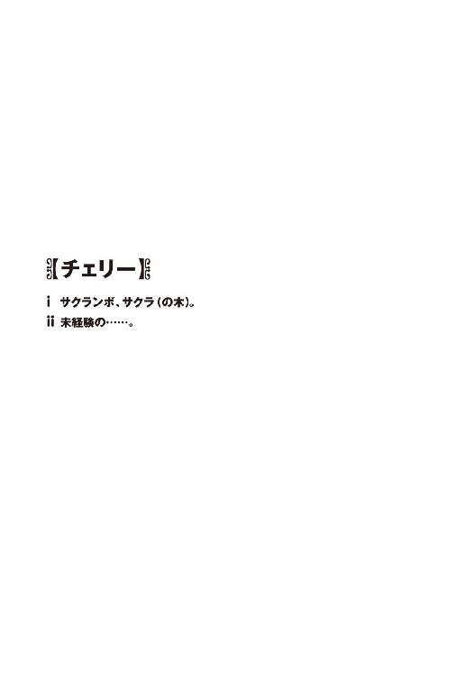
バス停は、狭く曲がりくねった山道の途中に、ぽつんと朽ちかけた姿を晒していた。
車一台ギリギリ通れるだけの未舗装の道路。
両側には深い森。鮮やかに紅葉した木々の隙間から、遠く澄んだ秋の青空が見える。
のどかである。
上空を鳶がゆるゆると舞っている。
名も知れぬ野鳥の声も聞こえてくる。
僕たちをここまで乗せてきたバスは、黒煙を派手に噴き出しながら、徒歩と大差ない速度でもたもたと坂道を登り続け、やがて排気ガスの煙が晴れる前に見えなくなった。
バス停にはほかに人の姿はない。
そもそも周囲に民家の影すら見あたらない。
林を切り開いて作った小さな田畑を除けば、あとは見渡す限り奥深い原生林が、険しい山の斜面を背景に広がっているだけだ。
たしかに美しい景色なのだが、あまり若者向きという感じではないと思う。
なにしろ人が住んでいるのが不思議なくらいの山奥だ。近場に有名な観光地があるでもなく、交通はバスが一日二往復だけ。
文化系クラブ所属の脆弱な高校生が、週末の連休を使って旅行に訪れるなら、もっとマシな土地がいくらでもあるはずだった。
「あの......」
道路脇を埋め尽くす背の高い雑草を眺めながら、僕は訊いた。名前のよくわからない黄色い花が、風に吹かれて揺れている。
「本当にこんなところにあるんですか。佐伯会長の別荘って......？」
「あら......信じてなかったの？」
愉快そうに微笑みながら、朱浬さんが振り返る。
洛高科學部部長代理の二年生。すらりと背の高いデタラメな美人の先輩だ。
いつもと同じ黒ずくめのマント姿だが、こんな山の中に立っているせいで、その服装の怪しさも倍増である。まるでお伽噺に出てくる魔女か、異国の美しい死神のようだ。
「いえ、朱浬さんを疑ってたわけじゃないですけど......」
僕はもにょもにょと口ごもる。
ちょっとした仕事を手伝って欲しい、と彼女が僕に唐突に連絡してきたのは昨日のことだ。
簡単な学術調査のような作業で、報酬は山分け。佐伯家の別荘を借りる手配をしたので、宿泊費の心配も要らないのだという。
もちろん断ることなどできなかった。そんなことをしたらあとが恐ろしい。同じ県内なのに名前すら聞いたこともない山奥の村での調査、というのが若干の不安材料ではあったが、ハイキングだと思えばそれも悪くない。金持ちの別荘があるというのだから、観光地ではなくても、紅葉見物くらいはできるのだろうという期待もあった。
とはいえ、まさかここまで田舎とは。
洛高第一生徒会会長の佐伯玲士郎という男と、この山奥の辺境とではイメージに落差がありすぎた。本当にこんなところに彼の別荘があるのだろうか。金持ちの坊っちゃんの別荘というよりも、誰にも発見されたことのない新種のサルの群生地なんかがありそうな景色なのだが。
操緒も僕と似たようなことを考えていたらしく、
『んー......遭難者の白骨死体とか転がってそうな雰囲気だよねえ』
全体的に色素の薄い少女が、僕の背後にふわりと浮かび上がりながらそう言った。
オマエがそういうことを言うなよな、と僕は操緒を横目で睨んだ。
なにしろ彼女は人間ではなくて、いろいろあって僕に憑いてる幼なじみの少女の幽霊なのだ。あまり不吉なことを口にされると、冗談に聞こえなくて正直ビビる。
しかし朱浬さんは、ふふっ、と余裕の微笑を浮かべ、
「知る人ぞ知る歴史のある温泉地らしいわよ。戦国大名の隠し湯だったんですって」
「はあ......温泉......」
言われてみれば、かすかにそれらしい臭いが漂ってくる気がした。うっすらと谷間を漂っている白い霧は、もしかしたら温泉の蒸気なのかもしれない。
操緒も納得したようにうなずき、
『いわゆる秘湯ってやつですね』
「そうそう。だからね、きちんと道路を整備して大々的に宣伝してたら、観光地としてもっと有名になってたかも。でもほら、ここって国定公園の近くでしょ」
『あ、開発の許可が下りなかった......とか？』
「ええ。最近までね」
ほっそりと白い首を巡らせて、朱浬さんは山麓まで続く深い原生林を見渡した。
「二、三年前にようやく基準が見直されて、あと半年くらいしたら、まともな道路も開通するらしいけど。で、それに目をつけてこのあたりの山林一帯を買い占めたのが......」
『佐伯会長の実家ってわけですか』
「そういうこと」
朱浬さんは、なぜかそこでニヤリと笑った。操緒は怪訝そうに首を傾げ、
『ええと、じゃあ別荘っていうのは？』
「それは前から持ってたみたい。狩猟用に使ってたみたいよ」
『しゅりょー？』
「そ、ハンティング。野生のイノシシなんかを狩りに来たとき、別荘があると便利でしょ」
『はー......イノシシ狩りですか......』
操緒が少し呆れたような表情で呟いた。たしかにいつどこからイノシシが出てきても、まったく違和感の感じられない景色である。
ついでにあのキザっちい生徒会長の趣味が狩猟というのも、妙に納得できる話だった。法律的にどうなってるのかは知らないが、ハンティングといえばいかにも金持ちのスポーツという感じだし、それでなくてもあの男は、学校内で銃撃戦を日常的に引き起こしているのだ。
「まあ......佐伯会長の別荘がこんな山奥にある理由はわかりましたけど......」
僕は軽く溜息を洩らして朱浬さんを見た。怖ず怖ずと手を挙げながら、
「もうひとつ質問していいですか？」
「ふふっ、どうぞ」
「あの......どうして僕はこんなところで、こんな恰好をさせられてるのでしょうか......？」
そう言って、僕はメイクでくっきりと縁取られた目元を細めた。
腰のあたりまで届く長髪のカツラ。上着の内側には胸パッド。爽やかに乾いた秋風が、短いスカートの裾から吹きこんできて落ち着かない。借り物のアウトドアシューズや旅行カバンも女モノ。誰がどう見ても完璧な女子の姿である。
つまり今の僕は女装させられているのだった。
知り合いの誰かにこんな姿を見られたら、深刻な誤解を招くのは間違いない。そういう趣味の持ち主だと疑われても文句が言えない状況だった。
しかし朱浬さんはそんな僕の全身を眺めて、
「大丈夫。似合ってるわよ」
何が問題なのかさっぱりわからない、といわんばかりの輝く笑顔でうなずいた。
「いや、問題なのは似合ってるかどうかではなくて......」
僕は眩暈を感じながら首を振る。
「なんでこんな山奥まで来て、僕が女装しなくちゃいけないんですか!?」
「あら、言わなかったっけ？」
しれっとした口調で朱浬さんがとぼけた。僕は憮然とした表情で、
「聞いてません」
そもそもこの女装だって僕が納得してやっているわけではないのだ。バスの中でウトウトと眠りこんでしまった僕に、朱浬さんはこっそりとメイクを施し、服も勝手に着替えさせられていたのだった。
そういえば僕が急激に眠くなったのは、彼女が持ってきた弁当を食べた直後だった。まさかあの中に一服盛られていたのではなかろうか。
そんなことはあり得ない、と言い切れないのが朱浬さんの恐ろしいところだ。僕は疑惑の眼差しで彼女を睨み、
「あの......学術調査に来たんですよね？」
「そうね。まあ、それに近い仕事かな」
「だったら、なんで女装なんか......？」
「ふふっ、それはそういう約束だから」
ちょこんと頭を傾けて微笑む朱浬さん。僕は呆然と、
「は？ 約束？」
「玲士郎と約束したの。別荘に泊めてくれるなら、ともはちゃんを連れて行くって」
「な......!?」
僕は顔を硬直させて低くうめいた。
「なんでそんな約束をするんですかっ!?」
朱浬さんは余裕の表情で、
「いいじゃない。女装して玲士郎に会うのはべつに初めてってわけじゃないでしょう？」
「初めてじゃないから問題なんですよ！」
僕は絶望感に頭を抱えた。
最初から話がおかしいとは思っていたのだ。あの佐伯兄が何の見返りもなく僕たちを別荘に泊めてくれるわけがない。
「ど、どうするんですか......同じ別荘に泊まったりしたら逃げられないじゃないですか!?」
「べつに逃げることないでしょ。とって喰われるわけでもなし」
どうせ他人事だと思って、朱浬さんはお気楽な態度で首を振る。本当に喰われたらどうしてくれるんだ。
「怒られる......っていうか、殺されますよ絶対。ともはの正体が僕だってバレたら」
「まあ、そうかもね」
くすっ、と朱浬さんは悪戯っぽく笑った。
「でも要するにバレなきゃいいんでしょ？」
「バレるに決まってるじゃないですか。いくら佐伯会長がニブくても、同じ別荘で寝泊まりしてたらさすがに気づかれますよ」
『だよね』
操緒は哀れむような表情で僕を見て、
『智春の演技力じゃ確実にボロが出るよね』
「まあね」
僕は素直に認めた。悪いが僕は役者でも女装マニアでもないのだ。こんなところで演技力を期待されても困る。そもそも演技とかいう以前に、操緒が憑いている時点で、ともはの正体はバレバレだと思うのだが。
だがしかし朱浬さんは平然と首を振り、
「心配いらないわ。こんなこともあろうかと、秘密兵器を用意してきたから」
「......秘密兵器？」
僕は不吉な予感を覚えながら訊き返した。
まかせて、と朱浬さんはバス停の傍に放置していた自分のスーツケースを引き寄せ、
「これがあれば、ともはちゃんの正体がバレる可能性はまずあり得ないから。結局のところ、ともはちゃんとトモハルが同一人物なのが問題なのよね」
「それは......まあ、そうですけど」
そんなことを言われても本当に同一人物なのだから仕方ない。
「ふふふふっ、そこでこの子の出番なのよ」
そう言って朱浬さんは、スーツケースからずるりとなにかを引っ張り出した。
僕は危うく悲鳴を上げるところだった。一瞬、死体かと思ってしまったのだ。
だが、よく見ればそれはただの人形だった。洛高の制服を着た少年の人形だ。
背恰好もちょうど男子高校生くらいである。それほど精巧な作りではないのだが、ところどころ妙にリアルでちょっと恐い。
『人形、ですか......？』
操緒が怪訝そうに呟いて人形の顔を覗きこむ。
『あれ......でも、この人形のモデルって......智春？』
「え？」
僕は驚いて眉を寄せた。
言われてみれば、その人形は僕に少し雰囲気が似ていた。髪型なんかも普段の僕と同じだ。
しかしそれにしても、ぼーっとした顔立ちの人形である。さすがに僕はここまで気の抜けた顔ではないと思いたいのだが。
「部長に頼んで用意してもらったの」
朱浬さんは得意げに顎を上げた。
「科學部特製、智春コピーロボット。略してロボハル」
「ロ......ロボハル？」
絶句する。コピーロボットというか、どう見てもただの人形なのですが。顔にはロボっぽい継ぎ目があったり、ネジみたいなのがついてるし。こんなものでなにをどうしろというのだ。
しかし操緒はなぜか感心したようにうなずいて、
『あ......そうか。これで、ともはちゃんと智春が一緒にいるところを見せれば、まさか二人が同一人物だなんて思わないって作戦なんですね』
「そういうこと。これで問題解決でしょ」
ふふふん、と満足そうに笑う朱浬さん。いやいやいやいや、と僕は必死で首を振り、
「そんなわけないじゃないですかっ。こんなの一瞬でバレますよ！」
「......そう？」
「そりゃそうですよ。だって、どっからどう見ても人形だし」
「ふふふっ。それは甘いわよ、トモハル」
なぜか余裕の表情で朱浬さんが取り出したのは、安っぽい作りのリモコンだった。ちょっと昔の家庭用ゲーム機のコントローラーみたいなヤツである。
朱浬さんがスタートボタンをポチッと押す。するとそれまで力なく横たわっていた人形が、まるで生き返った死体のように、ぎこちない動きで立ち上がった。
そして虚ろな目つきのまま、作り物めいた笑みを浮かべ、
『コンニチハ、僕、夏目トモハル』
いかにもな感じのロボ声で挨拶するロボハル。
さらにロボハルは、頭を抱えて苦悩するようなポーズをとると、
『ナンダヨソレ......ウウッ......ナンデ僕ガコンナ目ニ......』
唐突にヘタれたセリフを吐いた。それを見た操緒は驚愕の表情で、
『すごーい。本物の智春みたい！』
「ええっ!?」
僕は呆然と操緒を振り返る。ちょっと待て。普段の僕のイメージってこんなんか!?
朱浬さんはお気に入りのオモチャを自慢する子どものような表情で、
「でしょ。こんなふうにロボハルは、このコントローラーで自在に操ることができるってわけ。基本的な会話のパターンはあらかじめ登録してあるから、あとはコマンド入力で呼び出すだけ。これなら誰もがロボハルのことを本物のトモハルと信じるわ」
「そ......そうかなあ......」
「信用しなさいってば。それにそんな心配しなくても、ともはちゃんが近くにいたら玲士郎はそっちに気を取られてトモハルのことなんて気にも留めないわよ」
「......それはそれで問題な気もするんですが」
僕は弱々しく溜息をついた。もはやどこから突っこめばいいのかよくわからない。真面目に悩んでいるのが馬鹿馬鹿しくなってきた。
「で、このあとはどうすればいいんです？」
投げやりな口調で僕は訊いた。朱浬さんはちらりと腕時計を確認して、
「あ、そうね。そろそろ迎えが来るはずなんだけど」
「迎え？」
「ええ、玲士郎は先に別荘に着いてるから、バスの時間に合わせて車で迎えに来るって言ってたんだけど......あ、あれかな」
朱浬さんが視線を向けた方角に、勢いよく走ってくる車の影が見えた。のどかな田舎道には少し不似合いな、外国製のごつい四輪駆動車だ。舗装されてない狭い道をバタバタと飛び跳ねながら疾走してきて、やがて砂埃を巻き上げながら僕たちの前に停車する。
車を運転していたのは見覚えのある女の人だった。佐伯家に仕えるメイドの新津さんである。
そして後部座席のドアを開けて降りてきたのは、白っぽい服を着たほっそりした影。
「えっ？」
『あれ......？』
僕と操緒が驚きの声を洩らす。
迎えの車から降りて僕たちを出迎えたのは、佐伯兄ではなかった。
くっきりとした顔立ちの、勝ち気そうな美少女だ。ある意味で佐伯兄よりも僕たちに近しい人物だった。第一生徒会会長、佐伯玲士郎の妹で、僕と操緒のクラスメイト。佐伯玲子。
「申し訳ありません。遅れてしまいました」
言葉をなくしている操緒や僕を見て、佐伯妹はつんと澄ました笑顔を浮かべた。スカートの裾をつまんで優雅に一礼し、
「兄が急用で来られなくなったので、今日はあたしが代わりに皆様を案内させてもらいます。どうかよろしく」
僕は操緒と顔を見合わせ、それから二人で呆然と朱浬さんのほうを振り返った。
素知らぬ顔の朱浬さんのすぐ隣では、コマンド待機状態のロボハルが虚ろな笑みを浮かべている。僕は頭痛を感じて額を押さえた。案内役は佐伯兄ではなく妹のほうだなんて......
「............」
どうするんだ、このロボ。
○
「ちょっと計算違いだったわね、これは」
迎えの車の後部座席で、朱浬さんはおっとりした微笑を浮かべて言った。中央にロボハルを挟んだ反対側の席で、僕は頭を抱えたまま、
「計算違い過ぎますよ。妹のほうが来るんだったら僕が女装する意味なかったじゃないですか。どうするんです、このロボとかロボとか......」
当然ながらロボハルはなにも答えない。作り物のぼーっとした笑顔のまま、シートベルトで座席に縛りつけられている。脳天気なその姿を眺めていると、自分と同じ顔だけに余計に腹が立ってきた。一方の朱浬さんはあくまでも冷静に、
「でも、今さら女装をやめるわけにもいかないしね。それともここで、ともはちゃんの正体をカミングアウトする？」
「いや、それは絶対に嫌ですけど」
助手席に座っている佐伯妹の後頭部を眺めて、僕は薄く溜息をついた。
佐伯妹は悪いヤツではないのだが、基本的に真面目で性格がキツい。おまけになぜか僕に対しては、いつも怒っているようなイメージがある。そんな彼女に女装のことがバレたら、怒り狂うのが目に見えていた。
憤慨した彼女が、ともはの正体を兄貴に密告ったりしたら、僕の命まで危うくなる。なんでそんな危険を冒してまで、身に覚えのない女装癖を告白しなきゃならんのだ。
青ざめる僕の姿を、朱浬さんはどこか愉快そうに眺めて、
「とりあえず最初の計画どおり、トモハルにはともはちゃんの役を演じてもらいましょ。ロボハルもいることだし、そう簡単にはバレないでしょ」
無責任な微笑みを浮かべてそんなことを言う。
「............」
絶対バレる、と僕は思った。ロボハルは、いかにもロボ的な焦点の定まらない瞳で、ぼんやり虚空を眺めている。こんな適当な作りのロボが、いったいなんの役に立つというのだ。
メイドの新津さんの運転する車は、荒れた山道をものともせずに快走を続けている。革張りの快適なシートに僕がぐったりともたれていると、
「夏目、聞いてる？」
佐伯妹が唐突に振り返って僕たちを見た。
いつもの癖で返事をしようとして、僕は慌てて言葉を呑みこんだ。危なかった。そういえば彼女が話しかけているのは、女装中の僕ではなくて、ロボハルのほうだった。
「見えてきたわよ、別荘」
佐伯妹が指さした建物に気づいて、僕は思わず感嘆の息を吐いた。
想像していたよりも格段にでかい建物だ。田舎ふうのログハウスみたいなヤツを勝手に想像していたのだけれど、佐伯家の別荘の実物は豪華な石造りの洋館だった。美しい庭園に囲まれて、まるでヨーロッパの貴族の山荘みたいである。
『でかっ！ なにこれ、すごい豪華......！』
操緒が、驚きを通り越して呆れたような声で呟いた。僕は絶句して言葉も出ない。
佐伯妹は少し言い訳めいた口調で、
「別荘っていっても、家族だけが使ってるわけじゃないのよ。会社の従業員の保養所を兼ねてるから。あとは母の仕事関係の接待とか」
『はぁー......それでもやっぱりすごいね』
大げさな仕草で相槌を打ちながら、操緒がチラチラと横目でロボハルを見る。それを見て、僕は操緒が時間を稼いでいるのだとようやく気づいた。佐伯妹はもともと僕に話しかけていたのである。このままロボハルがなにも答えないままだと怪しまれてしまう。
ロボハルのコントローラーを握る朱浬さんは、任せて、と操緒に目配せすると、十字キーとボタン連打でコマンドを入力。指令を受けたロボハルは、ぎこちなく身を乗り出すと、
『コンニチハ、僕、夏目トモハル』
「げっ......」
思わず悲鳴が洩れてしまった。会話がまったく成り立ってない。やはり役立たずじゃないかこのデク人形。僕は非難の視線を朱浬さんに向けたが、朱浬さんは、あは、と可愛らしく舌を出しただけだった。どうやらコマンド入力を失敗したらしい。
その間、佐伯妹は怪訝な表情でロボハルを見つめ、
「それは......知ってるけど......？」
とりあえず、まだ人形だとバレてはいないようだった。それはまあクラスメイトがロボかもしれないとは考えないよな、普通。
朱浬さんはその隙に、再びコントローラーを操作して、
『ヤア、コレハイイ別荘デスネ』
今度はロボハルもまともなことを喋った。
僕はホッと安堵の息を吐く。それほどナチュラルという感じでもなかったが、いちおう最低限の会話機能はあったらしい。これならどうにか誤魔化せるかもしれない。僕がそんな淡い期待を抱いたのも束の間、
『コンナトコロニ、佐伯サン、ト一緒ニ泊マレルナンテ、嬉シイナア』
「......えっ？」
いきなりロボハルが口にしたセリフに、佐伯妹が戸惑いの表情を浮かべた。
もちろん僕も驚いた。いきなりなにを言い出すんだ、このロボ!?
激しく動揺する僕たちを尻目に、朱浬さんはやたら複雑なコマンドを入力し続け、
『イヤ、佐伯サン、ニハイツモ世話ニナッテルシ......信頼シテル、ッテイウカ、僕、アナタノコトハケッコウ好キデスヨ』
「な......夏目？」
声を上擦らせる佐伯妹。
「す、好きって......なにを言い出すのよ、こんなところで......!? バ、バカじゃないの!?」
佐伯妹は、いつになくうろたえた口調でそれだけ言うと、そのままそっぽを向いてしまう。僕は本気で頭を抱えながら、朱浬さんに小声で、
「ちょっと......ロボハルになんてことを言わせるんですかっ。誤解されるじゃないですか！」
「あら、やっぱりまずかった？」
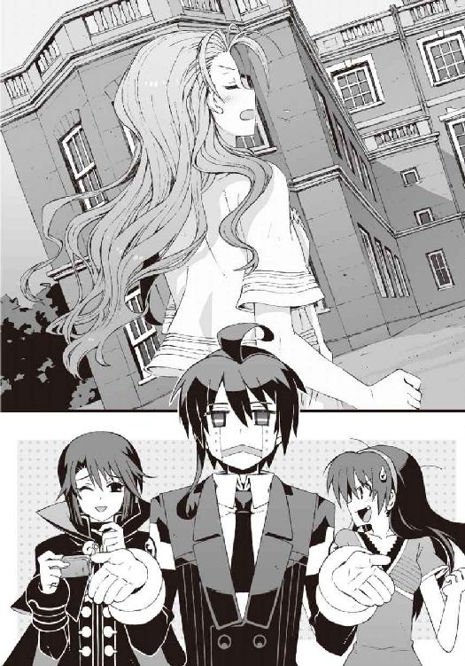
朱浬さんはめずらしく少し困ったように眉を寄せ、
「なるべく無難なやつを選んだつもりなんだけど......ほら、ロボハルが記憶してる会話って、基本的に、玲士郎と話すためのパターンしか登録されてないから」
「ええと......じゃあ、さっきのやつも本当は佐伯の兄貴のために用意してあったセリフだったってことですか？」
「まあ、そういうことかな」
それもどうかなあ、と僕はうんざり息を吐いた。たしかに相手が先輩の男子だったら、単なる社交辞令として、ギリギリ自然なセリフだったのかもしれないが。
「なんとか誤魔化せたみたいだし、結果オーライじゃない？」
朱浬さんはそう言って無責任に微笑んだ。この人、わざとやってんじゃないだろうな、と疑いの表情で僕は唇を歪めた。
ちょうど僕たちを乗せた車が、佐伯家の別荘の駐車場に到着したところだった。
○
案内された部屋に荷物を置いて、僕と操緒は急いで別荘のラウンジに向かった。
いちおうロボハルには自動操縦システムも搭載されているらしいのだが、あんなものを単独行動させるのはあまりにも危険過ぎた。なるべく僕たちの誰かが一緒にいる必要があったのだ。
しかし時すでに遅かった。ラウンジのソファに放置していたロボハルの正面には、佐伯妹が座ってなにやらロボに話しかけている。
「ちょっと......夏目、アナタさっきから人の話、聞いてるの!?」
ムッとしたような表情の佐伯妹に睨まれ、
『ウウッ......』
弱々しく返答するロボハル。なんとなくイラッとくる態度である。この煮え切らない返事が、もしかしてロボハルのデフォルトの反応なのだろうか。まさかこれも普段の僕がモデルだというのではないだろうな。
「もしかしてどこか体調でも悪いの？ そういえば、さっきから動きがギクシャクしてるし、表情も硬いけど......？」
『ウウッ......』
「ひょっとして、車酔い？ たしかに山道だったけど......情けないわね。もういいから、少し休んでなさいよ。お茶を用意してもらうから」
そう言って佐伯妹は立ち上がる。いちおう心配してくれているのだろう。口調はキツいが、基本的にいいヤツなのだ。しかし絶望的に鈍すぎる。なんでこれでロボハルの正体に気づかないのだろう。それとも僕が神経質過ぎるのか？
「あ......」
内線電話で新津さんに飲み物を頼んだあと、ラウンジの入口に突っ立っている僕に気づいて、佐伯妹は足を止めた。
そして容疑者を観察するＦＢＩ捜査官のような表情で、僕の姿をジロジロと眺めた。たらり、と冷たい汗が僕の首筋を伝った。心臓の鼓動が速くなる。ロボハルの正体がバレてもまだ言い訳のしようがあるが、女装に気づかれたらどうしようもないのだ。
「夏目ともはさん......ですよね？」
どこか訝しげな口調で、佐伯妹が話しかけてくる。
「ううっ......こ、こんにちは」
僕は引きつった愛想笑いを浮かべた。思わずロボハルと同じような反応をしてしまったが、大丈夫だろうか。
幸い佐伯妹はそれには気づかず、上目遣いで僕を見つめ、
「あの......以前どこかでお会いしたことがありました？」
「えっ、ど......どうして？」
思わず声が裏返ってしまう。
佐伯妹は考えこむように小首を傾げて、
「いえ。なんとなく知り合いの誰かに似ているような気がして......」
「た、たぶん初対面だと思うけど......」
僕は必死で平静を装った。操緒は僕たちのすぐ傍で、固唾を呑んで会話に聞き入っていた。彼女の大きな目がキラキラと輝いている。くそぅ、他人事だと思って楽しんでやがる。
それにしても佐伯妹、ちょっと鋭すぎないか。ロボハルの正体には全然気づかなかったのに。
「......そうですよね。ごめんなさい」
その佐伯妹が、少し照れたように微笑んで頭を下げた。
「思っていたより、いい人そうで安心したんです。なんだか落ち着くっていうか......もしかしたら私のお義姉さまになるかも知れない人だって、聞かされていたものですから......なんて、ちょっと気が早いですよね、うちの兄も」
「そ、そうね......あはは」
目を細くして微笑む佐伯妹を見つめて、僕は虚ろな声で笑った。彼女にお義姉さまと呼ばれている自分の姿を想像してゾッとする。佐伯兄のやつ、なんという恐ろしいことを考えているのだ。実際にはあり得ないことだとは思うのだが、なまじ実行力のある男だけに漠然とした不安が拭い切れない。
佐伯妹はそこで少し口調を変えて、
「ところで、ともはさん......質問してもいいですか？」
「は、はい。なんでしょう......？」
僕は思わず姿勢を正す。そんなあらたまってなにを訊くつもりだ？
佐伯妹はなぜかめずらしく緊張した表情で、
「夏目くん、のことなんですけど......」
「えっ？」
「ともはさんは彼とどういう関係なんですか？」
「か、関係......？」
僕は作り笑顔のままで硬直。なぜそんなことを訊くのだろう。強いていえば同一人物という関係になるのだが、さすがにそんなことを答えるわけにはいかず、僕が沈黙を続けていると、
「あの、苗字が同じなのは......もしかして親戚......とか？」
「あ......」
佐伯妹の言葉に、僕は少しだけ余裕を取り戻した。
「そ、そうなの。実は......遠い親戚で、ぼ......私たちも知り会ったのは最近なんだけど......」
「ああ。やっぱりそうだったんですか......」
妙に納得した様子でうなずく佐伯妹。そして彼女は、なぜか自分の胸に視線を落とし、
「道理で少し雰囲気が似てると......でも、あの夏目くんに、こんな綺麗な親戚の女性がいたなんて驚きました。背も高くてスタイルいいし......胸だって......くっ」
「い、いや......それはべつに......」
どこか恨みがましい佐伯妹の視線を感じて、僕は思わず自分の胸元を腕で覆った。たしかに、ともはの胸はでかいが、これは朱浬さんがどっかから持ってきたシリコン製のニセ乳なのだ。こんなものをやっかまれても困る。
「ところで、ともはさんたちは、こんな山奥にどんな用事が？ なにかの調査なんですよね？」
「あ、うん......そう聞いてる、けど......」
僕は歯切れの悪い口調で呟いた。
そう言えばそうだった。ロボやら女装やらのせいで混乱していたが、僕は朱浬さんの調査とやらの手伝いでここまでやって来たのだ。
「ええと、具体的な調査の内容については、私はなにも......」
僕は頼りない表情で、肩にかかる髪をクルクルと指で弄った。すがるような視線を操緒に向けても操緒は肩をすくめるだけだ。
そのとき僕たちのすぐ背後から、ふふふふ、と含み笑いが聞こえてきて、
「それを今から説明しようと思ったのよ」
やけに大きな荷物を抱えた朱浬さんが、廊下から姿を現した。
彼女に背中を押されるような形で、僕たちはラウンジのソファに移動する。成り行きで佐伯妹も一緒だ。少し遅れて新津さんが、ティーポットの載ったトレイを持ってやってくる。
『あの......なんですか、その荷物？』
操緒が好奇心でウズウズする仔猫のような瞳で、朱浬さんの手元を覗きこんだ。
朱浬さんが抱えていたのは、三人分のリュックと、どっかの考古学者みたいなフェルト帽。さらにはガテン系の軍手とシャベル、ツルハシが各一本である。双眼鏡やロープなんてものも混ざっている。
「道具も持たずに山の中に入るわけにはいかないでしょ。コンパスやＧＰＳも持ってるわよ」
そう言って朱浬さんは荷物の中から、地図らしきものを取り出した。あちこち変色して虫に喰われた、やけに古めかしい地図である。
僕は朱浬さんが揃えてきた、あまり脈絡のない荷物を眺めて苦笑した。
「......なんだか山歩きの道具というより、宝探しに行く人の装備って感じですよね」
正確に言えば、無断で遺跡なんかに侵入して秘宝を強奪する、盗掘屋っぽい持ち物である。たいてい途中で現地の部族に捕まって、処刑されそうになるタイプのヤツだ。
しかし、そんな冗談めかした僕の言葉を、
「あら、気づいてたの？」
朱浬さんはさらりと受け流した。彼女はそのままおもむろに地図を広げると、
「日没まであと四時間くらいあるから、今日中にこのあたりは捜索できると思うの。地形から見ても、馬で入れるこちら側の斜面が怪しいしね。特に隠し場所の目印になりそうな人工物や大きな岩なんかがあれば、その周辺を集中的に」
「ちょ......ちょっと待ってくださいよ！」
僕は女装していることを危うく忘れそうになりながら、朱浬さんを制止する。
「捜索って......なんのことですか!? 隠し場所って......まさか本当に宝探しを？」
「もちろん。そのためにこんな山奥まで来たんだもの」
「が......学術調査みたいな作業とか言ってませんでしたか？」
「学術調査みたいでしょ。昔の文献や古地図を元に、過去の遺物を発掘するんだもの」
「ええっ......!? でも、宝ってなんなんです？ そんなもの本当にあるんですか？」
「あら、それを今から確認に行くんじゃない」
しれっとした口調で言い切る朱浬さん。僕は反論の言葉すら失い、唇をパクパクと震わせた。
「いちおうね、信用できるスジからの情報なのよ。戦国時代に、このあたりを治めていた豪族が、この山中にお宝を隠したって話。地元では有名な伝説みたい」
「はあ......地方領主の隠し財宝ですか......」
僕は醒めた気分で溜息をついた。
なんなんだ、そのアバウトな伝説は。胡散臭いにもほどがある。
操緒たちの反応も僕と似たようなものだった。佐伯妹はあからさまに呆れたような顔をしているし、さすがの操緒も気乗りしない様子で、困惑気味に首を傾げている。ちなみにロボハルはもちろん無反応である。
だがそのとき、
「そのお話でしたら、私も聞いたことがありますわ」
思いがけない人物が、控え目な口調で僕たちに語りかけてきた。
テーブル脇に控えていた新津さんである。丸顔の可愛らしいメイドさんは、慣れた様子で、トレイに乗せたカップに器用に紅茶を注ぎながら、
「領主は、毎年ちょうどこの時期に必ず、限られた少数の家臣だけを連れて、この山を訪れたそうです。大量の酒や米に、金銀の飾りや宝玉を持って」
『この時期に......ですか？』
操緒が驚いたように身を乗り出す。
そう言えば奇妙な話である。温泉が目当てなら季節は関係ないだろうし、金銀や宝玉も必要あるまい。紅葉見物や狩りが目的なら、こんな山奥まで来なくても、ほかに便利のいい場所がいくらでもあるはずだ。
「そうですね。冬の前の中途半端な季節ですけど......」
新津さんは朗らかに微笑。
「ただ、収穫期のあとですから......領主としては蓄えに余裕がある時期ということになりますね」
『あ......なるほど』
ふむぅ、と操緒が納得の声を洩らした。少し尖らせた唇の先を、人差し指でなぞりながら、
『ん......でも、なんでこんな山の中に？』
「秀吉が関東を制圧するまで、このあたりは上杉氏や北条氏、それに甲斐の武田氏などの有力な大名に囲まれて、政情の不安な地域だったらしいのです。ですから領主は万一の場合に備えて、軍資金を蓄えていたのではないか、と」
新津さんは、あくまでも控え目な口調で説明を続ける。彼女が差し出したティーカップから、淹れたての紅茶のいい匂いが香ってきた。
「家臣たちは、この山であったことや見たものについて決して口外しないように、きつく命じられていたそうです。そのせいで、領主が攻め滅ぼされたあと、この山に運びこまれた宝物がどうなったのかは誰も知らないのだとか......」
この地方に残るただの伝説ですけどね、と補足して、新津さんは退いた。
朱浬さんは、ふふん、と得意げに胸を張り、
「というわけ。なかなか興味深い話でしょ？」
「ええ......まあ......」
僕はそう答えるしかない。いちおう朱浬さんも、それなりの根拠があって宝探しなんてことを思いついたわけではあるらしい。
「でも、そんな有名な伝説なら、誰かほかの人が先に探しあててるんじゃないですか？」
「それがそうとも限らないのよね」
朱浬さんは、荷物の中から、なにやら無骨な機械を取り出してきて、
「少なくとも戦前に、こんな高性能な金属探知器とか超音波探査機がこの山奥に持ちこまれたことはないでしょ」
そんなものまで持ってきていたのか、と僕は呆れる。前から不思議だったのだが、この人は、毎回どこでこういうメカを手に入れてくるのだ。
「それに、このあたりは最近まで国の保護区で、大っぴらに掘り返したりできなかったのよ？」
「あ......」
そういえばそんなことも言ってたか。すると佐伯家がこの一帯を買い取るまで、この付近で大規模な発掘調査が行われた可能性はほとんどないということになる。
僕と操緒は、お互いに微妙な表情で見つめ合う。どうしよう。本当に宝が埋まってるような気がしてきた。それに今回の仕事の報酬が、山分けなどという、やけにアバウトな条件だった理由もなんとなくわかってしまった。なんとかして宝を掘り当てないことには、結局タダ働きということか。
「面白そうな話ですね」
沈黙する僕たちに代わって、口を開いたのは佐伯妹だった。上品な仕草で紅茶をすすりつつ、
「あの、あたしも夏目くんたちに同行してもいいですか？ 戦国時代に埋められた財宝なんて、本当に見つかったら貴重な文化財だと思うし......」
「えっ」
本気か、と僕は驚いて彼女を見た。
しかし朱浬さんはむしろ満足そうに、
「ふふっ、もちろん構わないわよ。人手は多ければ多いほうが助かるわ」
「ええっ......」
思わず反論しかけた言葉を、僕は途中で噛み殺した。今の僕は夏目智春ではなく、佐伯妹とは初対面の夏目ともはという女子なのだ。ここで僕が、ついてくるなと佐伯妹に言うのは、明らかに不自然な反応である。
そして僕がそうやってためらっている間に、
「ではお嬢様の着替えと靴を用意しますわね」
「ええ。お願いね、新津さん」
いつの間にか佐伯妹は完全にやる気になって、宝探しの準備などを始めていた。
そして彼女は僕ではなく、無反応なロボハルのほうを睨み、
「......あたしが一緒で文句ないわね、夏目？」
ロボハルはもちろん文句を言わず、ウウッ......と弱々しく呟いただけだった。
○
別荘を離れて五分も歩くと、周囲は完全な樹海となった。
坂道の傾斜はそれほどではないが、群がる木々のせいで視界が利かない。
もちろん道と呼べるほどの道はなかったが、おそらく戦前に木材の伐採に使われていたと思しき林道がかすかな痕跡を留めており、それを頼りに僕たちは山奥へと進んでいった。
途中、操緒が足下の地面を見つめて、
『んー......これって、もうほとんど獣道だよね。ニホンオオカミとか出てきそう』
「ニホンオオカミはないと思うけど」
僕は軽く溜息をつく。そんなものに遭遇したら、ある意味、戦国時代の財宝よりも貴重だ。
「狩りに使われてるってくらいだから、野生動物はいるんじゃないかな。イノシシとか鹿とか」
『......大丈夫なの、それ？』
操緒の疑問に、僕は黙って肩をすくめた。こんなところで凶暴な野生動物に襲われたら、どうやっても逃げ切れそうもない。
「......どうだろ。季節的に、腹を空かせている動物とカチ合う可能性は低いと思うけど......」
とりあえず、そんなふうに自分に言い聞かせてみる。
これだけ多様な植物が育っている山なら、イモやら木の実やらキノコやら、エサになりそうなものは探せばいくらでもあるだろう。
それに野生動物たちにしても、好きこのんで僕たちなんかと遭遇したくはあるまい、とも思う。見た目は普通の高校生の登山者だが、実は女装少年と改造美女、それに幽霊とロボというカオスな集団なのだ。例外なのは約一名だけだ。
見た目も中身も唯一まともな女子高生である佐伯妹は、そんな僕たちの不安をよそに、妙に楽しそうな様子で紅葉した木々を眺めながら歩いている。
「あの......本当に良かったんですか、彼女を連れてきて」
前を歩く佐伯妹の背中を眺めながら、僕は朱浬さんに問いかけた。足場の悪い山中に入ってからというもの、ただでさえ動きのぎこちないロボハルは明らかに不自然な動作を繰り返しており、ロボだとバレるのは時間の問題に思えた。その前に、どうにかして佐伯妹を追い返したほうがいいと思うのだが、しかし今の様子では、彼女が自分から帰ると言い出すのは望み薄だ。
「いいんじゃない？ ここはもともと佐伯家の敷地だしね。あたしたちが帰れとは言えないでしょ。妹さんも乗り気になってるみたいだし、人手は多いほうがいいというのもホントだし」
朱浬さんは、あっけらかんとした笑顔で言った。悔しいことに正論だ。
「それは......まあそうかもしれませんけど」
「ともはちゃんが気にしてるのは、女装がバレるかもしれないってことでしょ」
「ええ、まあ......」
うなずく。無理やり女装させられている人間に、それ以上のどんな悩みがあるというのだ。
朱浬さんは少し考えるように視線を彷徨わせ、
「そうね。そろそろいい頃合いかな」
「......なにがです？」
「入れ替わり大作戦」
そう言って、両手の人差し指を胸の前で交差させる朱浬さん。
「さっき気づいたんだけど、よく考えたらトモハルをいつまでも女装させておく必要もないのよね」
「......だから僕は最初からそう言ってたじゃないですか」
そういうのはもっと早く気づいてくれ。
「まあまあ。それでね、ともはちゃんには、この辺で怪我してもらうっていうのはどうかしら。足を捻挫して、一人では歩けない、とか」
声を潜めて僕の耳元で囁く朱浬さん。僕は黙って首を傾げた。つまり捻挫した演技をしろ、ということか。それほど難しいことではないが、そんなことをしてなんのメリットが？
「そこでロボハルがともはちゃんを連れて、いったん別荘に戻るわけ。ともはちゃんは化粧を落として男子に戻って、今度はロボハルを女装させる、と」
「......そうか。それから僕は戻ってきて朱浬さんたちと合流すればいいんですね」
「そうそう。ロボハルは気分が悪いとかなんとか言って、ベッドに寝かせておけばいいでしょ」
「おおっ......なるほど......！」
朱浬さんの提案に、僕は軽く感動した。なんだかんだで、こんなときの彼女は実に頼りがいのある策士だ。
その方法なら、佐伯妹に怪しまれることなく、ともはとロボハルが入れ替わることができる。
僕が無理に女装を続ける必要もないし、佐伯妹はともはと初対面だから、ロボの演技が多少不自然でもバレる可能性がだいぶ減るだろう。
あとは操緒や朱浬さんが適当にフォローしてくれれば完璧だ。
「近すぎてもまずいけど、あんまり別荘から離れ過ぎちゃうと、あとで合流が難しくなるから、捻挫するならこのあたりがいいと思うのよ」
「そ、そうですね」
僕は言われるままにその場に屈みこんだ。これで適当に足首あたりを押さえて、軽く悲鳴を上げれば完璧だろう。佐伯妹には木の根っこで躓いたとでも説明して、あとはロボハルを連れて別荘に戻ればいいだけだ。そんなふうに素早く計算して、僕が息を吸いこんだ、その直後、
「ぎゃっ......!?」
僕の前にいた佐伯妹が、引きつった悲鳴を上げていきなり後ずさってきた。
『わっ、出た！』
続けて少し焦ったような操緒の声。どう考えても幽霊の言うセリフではないが、それはいい。
僕は驚いて顔を上げた。そしてそのまま絶句した。光を反射しない黒い穴のような瞳と、思いがけず目が合ってしまったからだった。
ふーっ、という荒々しい鼻息が正面から聞こえてきた。
渓流沿いの狭い山道。切り立った崖と密生した樹木に挟まれて、人ひとり通るのがやっとの道の先に、大柄な獣が立ちはだかっていた。
黒褐色の剛毛に覆われた四足獣。イノシシだ。
いかにも野獣という雰囲気のふてぶてしい面構え。過去にどれだけの修羅場をくぐったのか、左耳の先端が枯れ葉のように破れて、左肩には散弾銃の痕のような南十字星型の傷がある。
しかも異様にでかかった。もしかしたらツキノワグマよりも大きいかもしれない。肩までの高さだけでも僕たちの胸元近くまである。体重は余裕で二百キロを超えているだろう。
縄張りを荒らされた、とでも思っているのだろうか。なにやら怒っていらっしゃるような雰囲気だ。反り返った白い牙が、木漏れ日を反射してギラリと鈍く輝いている。
「肩に四つの傷痕と、破れ耳......」
佐伯妹が掠れた声で呟いた。
「お兄様に聞いたことがあるわ。地元の猟師も恐れて近寄らないこの山の帝王......黒マダラ」
「帝王......!?」
なんだそれは、と僕は茫然自失。地元の猟師も恐れて近寄らないって、どんだけ凶暴なイノシシなんだ。そんな化け物がいるなんて話は聞いてないぞ。
しかし今の僕たちに硬直している余裕はなかった。
黒マダラと称する巨大イノシシが、なんの警告も威嚇もなく、僕たちに向かって猛然と突撃を仕掛けてきたからだ。あんなもののラッシュを喰らったら、普通の人間は確実に死ぬ。朱浬さんが咄嗟にショットガン内蔵の左腕を構えるが、僕たちが邪魔になって、彼女は黒マダラを撃つことができない。
「佐伯......っ！」
僕は立ちすくんでいる佐伯妹を突き飛ばすようにして、そのまま崖っぷちのほうへと飛んだ。
その僕たちの背後を間一髪で、突進する黒マダラの巨体が通り過ぎていく。
そして直進する巨大イノシシが向かった先には、待機状態で突っ立っているロボハルの姿があった。
砲弾と化した黒マダラの頭が、無防備なロボハルの腹部に激突。耳を塞ぎたくなるような炸裂音とともに、ロボハルの身体が弾け飛ぶ。
「夏目......!?」
佐伯妹が悲鳴を上げた。
僕の姿に似せた人型機械は、文字どおり壊れた人形のように吹き飛んで、薄暗い樹海の奥へと消えていった。バキバキと鳴り響く不気味な異音は、ロボハルの機体が砕け散った証だろう。
「いやああああああああああっ！」
佐伯妹が青ざめた表情で立ち上がる。その身体がぐらりとバランスを崩した。ロクに足下も確かめないで走り出そうとしたせいだ。下生えの雑草に足を取られて転倒し、そのまま崖っぷちへと滑り落ちる。
「ちょっ......危なっ......！」
僕は必死に腕を伸ばして、ギリギリで彼女の手首を掴んだ。佐伯妹がぶら下がっているのは、ほぼ直角にそそり立つ急斜面の縁。六、七メートル下は、ごつごつした岩場の渓流である。
川幅はそれほど広くないが、流れが速く、白波が立っている。この高さから落ちたら無事では済みそうにない。
背後で荒れ狂う黒マダラの咆吼を聞きながら、僕は必死で佐伯妹を引っ張り上げようとする。
その僕の足下が、突然、崩れた。
たっぷりと水分を含んだ川沿いの斜面が、二人分の体重に耐え切れずに小規模な土砂崩れを起こしたのだ。
『と、智春......は、ちゃん！』
僕の頭上で叫ぶ操緒の姿が、ものすごい勢いで遠ざかっていく。というよりも僕と佐伯妹が落下しているのだ。
二人抱き合うような形で斜面を転がりながら、僕と佐伯妹は崖下へと滑落していった。
遥か頭上の樹海からは、朱浬さんと黒マダラが死闘を繰り広げる音がいつまでも響いていた。
○
『生きてる、ともはちゃん？』
ふわふわと上空から舞い降りてきた操緒が、遠慮がちに声をかけてきた。
「......なんとか」
溜息のような声で僕は答えた。
全身あちこちぶつけて痛むが、とりあえず動けないような大きな怪我はない。足下の土砂ごと滑り落ちたのと、水際に張り出した木の枝のおかげで多少はダメージが軽減されたらしい。
僕を踏みつけるような形で落下してきた佐伯妹は、ほぼ無傷。ただし、ショックで気絶していた。普通の人間なら、まあ当然の反応である。むしろ高校入学以来のさまざまな不幸体験で、この程度の墜落にはすっかり慣れてしまった自分が哀しい。
『動けそう？』
「うん。でも......この崖を登るのはちょっと無理っぽい」
垂直にそそり立つ岩肌を見上げて、僕はあっさり自力での脱出を諦める。先ほどの土砂崩れの影響で、足場になりそうな低木や蔦も根こそぎ剥がれ落ちていた。凄腕のロッククライマーでも、気絶した佐伯妹を背負ってこれを登るのはちょっと辛そうだ。
「朱浬さんは？」
『んー......イノシシと交戦中。だいぶ手こずっているみたい』
「なるほど」
さっきから遠くで鳴り響いていた銃声は、朱浬さんのショットガンの音だったのか。すると上空に向けて噴き上がっている火柱は、内蔵ミサイルの爆炎か。
たかが野生動物一匹にミサイルまでぶっ放す羽目になるとは、朱浬さんもだいぶ苦戦しているらしい。一人機甲師団とあだ名される彼女と互角に戦うとは、さすがに帝王と呼ばれるイノシシである。ロボハルごときでは一撃で粉砕されるのも当然だ。
『この調子だと、救助はしばらく期待しないほうがよさげだね』
「......だな。仕方ない、自力でなんとか......」
全身に絡まっていた木の枝を剥がして、僕はもたもたと立ち上がった。
佐伯妹を抱き上げるようにして、渓流沿いの浅瀬に着地する。
膝まで水に濡れてしまったが、女装中の僕は、必要以上に短いスカートにレギンス着用だったので、それほどたいした問題ではない。苔むした石がごろごろと転がっていて歩きづらいが、短い距離なら、このまま沢沿いに移動することくらいはできそうだった。
「問題なのはこのあとだけど......」
両側にそそり立つ断崖を見上げて僕は嘆息した。これを登って最初の道に戻るのは、どう考えても不可能だ。もともと道と呼べるかどうかすら微妙な獣道だっただけに、近くにはほかに人間が通れそうな場所はなかった。下手に樹海の中に迷いこんだら、二度と脱出できない可能性もある。
『遭難したときは、なるべく動かないでジッとしてたほうがいいって聞くけど？』
こんなときに限って正論を吐く操緒。
「それはわかるけど......いつまでも川の中に立ってるわけにもいかないだろ」
『んー、それもそうか。天気もちょっとヤバそうだしね』
「え......？」
操緒に指摘されて、僕は慌てて頭上を見上げた。
気づかないうちに太陽が姿を消していた。鉛色の雲に覆い尽くされて、空が暗くなっている。大気までもがねっとりと湿って、雨の降り出す直前の気配を感じさせた。さっきまでの好天がまるで嘘のようだった。山の天気は変わりやすいとよくいうが、それにしても変化が早過ぎないか。よりによってなんでこんなときに。
雨に濡れたらそのぶん体力も消耗するし、川の水かさが増えたら命にもかかわる。
どうすんだこれ、と軽くパニックになりながら僕が周囲を見回したとき、
『あ』
操緒が掌を上に向けて呟いた。
『......降ってきちゃった』
冷たい雨滴がぽつぽつと僕の頬を叩き、僕は涙目で途方に暮れた。
○
その洞穴は、落下地点から数百メートルばかり上流の茂みの中にあった。
僕たちが中腰でようやく入れるくらいの高さで、奥行きはせいぜい二メートルほど。洞穴というよりも単なる岩の裂け目で、雨宿り以外には使い途のない狭い場所だ。
僕は気絶したままの佐伯妹と並んで、ぼんやりと洞穴の外を眺めていた。
降り出した雨はアッという間に勢いを増して、ここにたどりつくまでに僕たちは全身ずぶ濡れになっていた。ただの通り雨だと侮っていたのだが、いっこうにやむ気配がない。心なしか真下を流れる川の水量も増えて、ここから出るに出られなくなってしまったような気もする。
操緒は朱浬さんの様子を見てくると言って出かけたので、洞窟の中にいるのは僕と佐伯妹の二人だけだ。気絶中の女子と二人きりというのは、ただでさえ少し気まずい状況で、しかも自分は女装中。もうなんだかわけがわからない。とりあえず冷静さを取り戻すためにリュックに入っていた荷物を漁り、見つけたライターと着火剤で焚き火を起こしていると、
「うっ......」
細い肩を小さく震わせて、佐伯妹が声を洩らした。
ようやく意識が戻ったらしい。透明な水滴に濡れたままの、彼女の長い睫毛が震えた。
まだ少しぼんやりした表情で、佐伯妹は炎に照らされた洞窟を見回し、
「ともは......さん？ ここは？」
「谷底にある洞窟の中なんだけど......ええと、崖から落ちたのは覚えてる？」
身を乗り出してくる彼女との距離の近さに、僕は軽く動揺しながら説明する。
「崖......？」
怪訝そうに首を傾げた佐伯妹の瞳が、しばらくして急速に焦点を結び、
「そうだ、夏目......！ 夏目くんは!?」
「え？」
一瞬、何を言われているのかわからず混乱した。少し考えて、やっと彼女がロボハルのことを言っているのだと気づく。そういえば佐伯妹は、未だにロボハルこそが本物の夏目智春だと信じていたのだった。おまけに彼女が最後に見たロボハルの姿というのは、黒マダラの突撃を喰らって盛大に吹っ飛ぶ場面で、それはまあ不安にもなるだろう。
佐伯妹は両手で口元を覆ったまま、
「夏目......黒マダラに襲われたときに、あたしのことを庇って......あんな......」
どうしよう、と頼りなく掠れた声で呟いた。
佐伯妹の頭の中では、どうやらロボハルが自分の身を犠牲にして、彼女とともはを庇った、というストーリーが展開されているらしい。まあ、まるっきり間違いというわけでもない。
「あの......トモハルくんは......まあ、いちおう無事......だけど」
僕はひどく据わりの悪い気分で告げた。なにしろ本人が目の前でそう言っているのだから、間違いない。
しかし佐伯妹はそれを単なる気休めだと受け取ったらしく、
「無事って......どうしてそんなこと言い切れるんですか!? 黒マダラにあんな吹っ飛ばされて、彼、途中で頭とか腕とかもげてたような......」
なかなか優れた観察力である。まあ、実際、ロボハルが再起不能なのは間違いないのだが、
「いや......それは、その......そう、錯覚！ 目の錯覚じゃないかな。あんな化け物に襲われて、気が動転してたりもしてただろうし」
「......錯覚？」
苦しい言い訳を続ける僕を、佐伯妹は疑わしげな眼差しで睨んだ。
「うん。あのあと、操緒......ちゃんが降りてきて彼女に聞いたの。とりあえずトモハルくんはいちおう無事ということで......」
おほほほ、と僕は強引な愛想笑いで誤魔化そうと試みる。
佐伯妹はその言葉を信じていいのかどうか、戸惑うように沈黙していたが、やがて、
「そう......ですか」
よかった、と囁くような声で呟いた。ぐずっ、と子どものように洟をすすって、目の端に浮かんだ涙の粒を拭う。
そんな佐伯妹の横顔に、僕は思わずドキリとした。いつも怒っているような印象の普段の彼女とは、まるで別人みたいで困惑する。まさか佐伯妹が僕のことを、そこまで心配してくれるとは思っていなかった。彼女をロボハルで騙していることが、少し心苦しく思えてくる。
「あの......それであたしたちは、ここでなにを......？」
呆然と彼女に見とれていた僕を見返して、佐伯妹が訊いてきた。
「え、ええ......今は救助待ち、かな。この雨ではしばらく出歩けそうにないし」
「ああ......なるほど」
佐伯妹は納得したようにうなずくと、しばらく黙って目の前の焚き火を眺めた。
そしてなにを思ったのか、彼女は突然、自分が着ていた服を脱ぎ始めた。迷彩柄のフィールドジャケットと、その下に重ね着していたシャツとＴシャツ。バミューダふうのハーフパンツまで。真っ白い素肌を惜しげもなく晒して、迷いなくその場に脱ぎ捨てる。
「ちょっ......佐伯さん、な、なにを!?」
僕は狼狽してあわあわと手を振り回す。いったいなにが起きているのかわからない。こういう場合、半裸の女子の身体に触ってでも彼女を止めたほうがいいのだろうか。いやしかし。
一方の佐伯妹本人は、うろたえている僕に真面目な顔で振り返り、
「ともはさんも脱いだほうがいいですよ。今のうちに服を乾かしておかないと。濡れたままの服を着てたら風邪をひいてしまいますから」
「あ......風邪......そ、そうね」
そういうことか、と僕は脱力する。考えてみれば、佐伯妹の主観では、ここには女同士しかいないことになっているのだった。よかった。もしかして崖から落ちたときに打ち所が悪くて、錯乱したのではないかと思ってしまった。
佐伯妹は雨に濡れた上着を絞って、焚き火の炎にかざしていた。
僕も彼女に倣って、上着を脱いだ。この話の流れで脱がないのも不自然だが、肌を晒すと女装がバレてしまうので、そのあたりの加減が難しい。この状況で女装の事実がバレたら、なにもかもがおしまいだった。怒り狂った佐伯妹が、僕の社会的地位を抹殺するのは確実だ。
狭い洞穴の中で火を焚いているせいで、僕たちは自然と肩を寄せ合うような体勢になってしまう。揺らぐ炎に照らし出された佐伯妹の肌は鮮やかな白さで、中途半端に露出度が高いせいで想像だけが膨らみ、僕の頭の中はもうグダグダになっていた。
平常心を保つため、僕が降りしきる雨を凝視しながら、インド式かけ算を必死で暗唱していると、
「......ともはさんがうらやましいな」
佐伯妹が寂しそうな声でぽつりと言った。
「えっ？」
僕は戸惑いながら振り返った。いったいなんのことだろう。
佐伯妹は体育座りのまま弱々しく微笑んで、
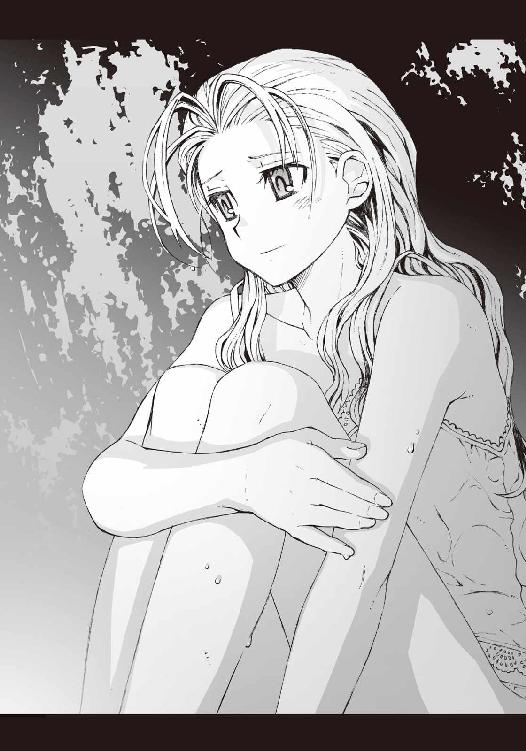
「美人だし、雰囲気が柔らかくて......お兄様が好きになる気持ちがわかる気がします。あたし、そんなふうに優しく笑えないから......」
「いや、そんなことは......」
僕は複雑な気分で口ごもる。ぼーっとしているとか、頼りない笑顔がむかつくとか、普段はあんだけボロクソに言われているのに、女装した途端にここまで評価が変わるのか。なんか納得いかんなあ。
「あたし......男の人がちょっと苦手なんですよ。小さいときに、家の中でいろいろあって」
儚い微笑を浮かべて、佐伯妹が呟いた。
僕は黙ってうなずいた。その話は前に聞いたことがある。彼女の父親は、彼女がまだ幼いときに、余所に愛人を作って家を出て行ったのだ。彼女が男嫌いになるのは仕方ない、と思う。
「......クラスに気になる男子がいないこともないんですけど、そいつ、いつもほかの女の子と教室でもベタベタベタベタベタベタして......」
なにか腹の立つ記憶でも思い出したのか、佐伯妹は握り締めた拳をブルブルと震わせた。まき散らされた怒気が吹きつけてきて、ちょっと恐い。しかし、そうか。佐伯妹にもいちおう気になる男子がいたりするのか。いったい誰のことだろう。
「それにそういう気持ちを、向こうに知られたらと思うと、少し恐くて......」
そう言って彼女は恥ずかしそうに下を向く。幼い迷子のような不安そうな表情で、
「だから、いつもキツイことを言ってしまって後悔するんですよね。わたし、嫌われてるかもしれません......」
いつになく素直な佐伯妹の言葉を、僕は微笑ましい気分で聞いた。ずいぶん意外な感じがしたが、同時に少し安心もしていた。佐伯妹にも、なんだかんだで可愛いところがあるのだ。
「嫌われたり、なんてことはないと思うけど」
僕は素直にそう答える。たいがい僕も佐伯妹にはいつも怒られているが、彼女を嫌いだと思ったことは一度もない。どちらかといえばいいヤツだと思う。ちょっと恐いとは思うけど。
そんな僕の言葉に説得力があったのかどうかは知らないが、
「そうですね。彼がそういう性格だから、あたしも......」
佐伯妹は少しだけ安堵したように微笑んだ。そしてなにかを思い出したように目を細め、
「さっきも......助けてもらってうれしかった......」
ほとんど聞き取れないくらいの声で可愛く呟く。
僕はよくわからなくなって眉を寄せる。助けた、というのはなんのことだろう。まあいいけど。
僕たちはそれからしばらく黙って洞穴の外を眺めていた。再び口を開いたのはやはり彼女のほうだった。佐伯妹は雲の切れ間から射しこむ淡い光を見上げるようにして、
「雨......やみましたね」
「え？ あ、ホントだ......」
僕は立ち上がって外に出た。いつの間にか雨は降りやんで、西の空が赤く染まり始めていた。山際に沈む夕陽に照らされて、幾重もの虹が輝いている。
佐伯妹は、控え目な胸の谷間を隠すように、乾いた服を手早く羽織ると、
「今のうちに移動したほうがいいかもしれません。救助が来てもここだと上からは見えないし、声も聞こえないかも」
「あ、うん。そうだね」
僕もうなずいて投げ出してあったリュックを拾い上げようとした。
その目の前を、なにかが、ふわり、と通り過ぎていく。真っ白い雪のような小さな薄片。
「え？」
僕は驚いて周囲を見回す。
晩秋の山々。広がる眩い夕焼けを背景に、赤や黄色に色づいた鮮やかな原色の森が広がっている。そして冬の直前の涼しげな風に乗り、そこにあるはずのないものが舞っていた。
ほんのりと薄紅色に色づいたそれは──
「......桜？」
舞い散る桜の花片を見上げて、佐伯妹が呆然と告げた。
○
まるで別世界に迷いこんだような光景だった。
僕たちが避難していた洞穴から、数十メートルほど離れた森の中。紅葉した山々を背景に、桜の花が乱れ咲いている。
数百本の桜の木々は、まるで人目を避けるように奥深い森の中にぽつんと密集し、満開の花片を夕風に揺らしていた。春に咲く桜に比べると少し小振りだが、間違いなく桜である。
季節を超越したその美しい光景に、僕たちはしばらく言葉をなくしていた。
「冬桜......だわ」
長い沈黙のあとで静かに呟いたのは、佐伯妹だった。
「冬桜？」
「秋の終わりから冬にかけて咲く種類の桜があるんです。だけど......こんな山の中で、紅葉を背景に見られるなんて......凄い......」
そう言って彼女は再び黙り込む。
たしかに、この美しい光景を表現する言葉は、僕にも思いつかなかった。
この季節外れの桜たちは、こんな山奥でひっそりと誰にも見られることもなく、美しい花を咲かせ続けてきたのだろう。何十年も何百年も昔から。
たとえ運良くこの桜を目撃した者がいたとしても、それを他人に教えようとはしなかったのではないか、という気がした。人間の目に触れさせることがためらわれるような、どこか神聖な光景だったからだ。誰にも踏み荒らされることなく、このままそっとしておきたい。そんなふうに感じられる場所だった。
「──この山に隠された宝というのは、どうやらこの景色のことだったみたいね」
無言で立ち尽くす僕たちの背後から、やがて微笑混じりのおっとりした声が聞こえてきた。
声の主は朱浬さんだった。どうやらイノシシとの死闘を終えて、僕たちを迎えに来てくれたらしい。操緒も彼女の傍に浮かんでいて、雪のように降り注ぐ桜の花片を、驚いた顔で見上げている。ちなみにロボハルの姿はない。どこかに燃えないゴミとして不法投棄してきたらしい。
「宝って......」
思わず問い返そうとして、僕も気づいた。
決まって毎年この時期にだけ、この山奥を訪れたという地方領主。彼らの目的がこの景色を見ることだった、と考えれば、すべての謎は綺麗に解ける。
信頼できる少数の家臣だけを連れてきた、というのは、この冬桜の秘密を外部に漏らさないようにするため。酒や米、金銀の飾りを持ちこんだのは、花見の宴会を開くためではなかったのか。紅葉見物や狩りが目的なら、ほかにもいくらでも便のいい場所があった。だが、冬桜はこの場所でしか見ることができなかったのだ。
「桜というのは散り際が潔いことから、戦国大名や武士たちに愛された花だとよく言われるわ。それが季節外れのこの時期に、しかも自分の領地の中でだけ見ることができる。領主としては、少しくらいの不便を押してでも見物に来る価値があると考えるでしょうね。それに冬桜の秘密を共有することで、家臣たちとの結束を強める効果もあったかも」
「なるほど......」
朱浬さんの説明は、いちいち納得のいくことばかりだった。戦国大名の隠し湯という言葉はよく聞くが、するとここはさしずめ隠し花見スポット、ということになるわけか。
たしかに財宝と呼ぶに相応しい、美しい景色ではあった。
伝説の正体なんてものは、結局どれもこんなオチなのかもしれないが。
「あの......でも、この冬桜が探してた財宝ということは、今回の調査の報酬というのは......」
漠然とした不安に怯えながら、僕は小声で朱浬さんに訊いた。
朱浬さんは、あらあらと微笑んで、
「儲けは山分けだって約束でしょう。一緒に堪能しましょ、この景色を」
「ええっ......!?」
僕は激しい眩暈を感じて、その場にへたりこんだ。財宝の性質を考えれば、たしかに山分けということになるのかもしれないが、まさかこれほど苦労した上に実質タダ働きだったとは。ものすごい脱力感で立ち上がれない。
それに対して操緒と佐伯妹は、素直に満ち足りた表情で、咲き誇る桜を見上げて笑い合っている。彼女たちの子どもっぽい無邪気さが、ちょっと本気でうらやましい。
しかし意外だったのは朱浬さんの反応だった。あれだけ周到に事前調査や準備を重ねてこの結末。彼女はもっと落胆するなり怒るなりしてもよさそうなものである。
なのに朱浬さんは平然としている。むしろ余裕の表情である。
どういうことだ、と見上げた僕は、彼女のリュックが異様に大きく膨らんでいることに気づいた。フタの隙間から見えたリュックの中身は、大量に詰めこまれた薄茶色のキノコだった。
カサの開ききっていない、太いキノコである。リュック越しにでも漂ってくる、独特の強い芳香は──
「あの......朱浬さん、もしかしてそのリュックの中身って......」
「あ、これ？ ただのキノコよ。キシメジ科キシメジ属キシメジ亜属マツタケ節。学名は"Tri-choloma matsutake"」
「とりくろま......って、マツタケじゃないですか!? しかも、そんな大量に......！」
僕は思わず目を剥いて叫ぶ。
天然モノの国産マツタケ。ものによってはキログラムあたり五、六万円で取引されることも珍しくない。朱浬さんのリュックの大きさからして、少なく見積もっても数十万円ぶん。もしかしたらそれ以上かも。
僕たちを迎えに来るのが妙に遅かったのは、もしかしてこれを採っていたからなのか。道理で朱浬さんの態度に余裕があるわけだ。僕に内緒でしっかり元を取ってやがったのだ。
しかし人ん家の山の中で、こんなもの勝手に採ってもいいのか。ひょっとしてこれは、立派な密猟ではないのだろうか。
僕は佐伯妹の表情をちらりと窺った。
しかし彼女は怒ってはいなかった。しょうがないなあ、と呆れたような表情を浮かべ、
「いいですよ。どうせこんなところまでマツタケ狩りに来ることもないし、今回だけは特別になにも見なかったことにします」
思いがけない佐伯妹の言葉に、僕は驚いて目を瞠った。
生真面目であまり融通の利かない、普段の彼女らしからぬ態度だった。心なしか表情もいつもよりずっと柔らかい。もともと整った顔立ちをしているだけに、そんなふうに微笑まれると、見とれてどぎまぎしてしまう。
そして佐伯妹はふと真剣な眼差しで僕たちを見つめ、
「その代わり、ここで見た景色のことについては他言無用でお願いしますね。この場所は、誰にも知らせずにこのまま静かなままにしておきたいので」
「ええ、約束するわ」
朱浬さんはきっぱりとうなずいた。
佐伯妹は、それを聞いて安心したように淡く微笑む。無数の花片に包まれた彼女の姿は、まるで愛くるしい桜の妖精のようだった。この姿をずっと留めておけないのが残念に思えるほどの、素晴らしく魅惑的な表情だ。
まあいいか、と僕は思った。操緒も満足しているようだし、とりあえず今回は佐伯妹のこの表情を見られただけでもよしとしよう。
そしてそんな花の精のような美少女は、あら、と笑顔で小首を傾げ、
「ともはさん、少し動かないでくださいね。髪に花片が絡まって......」
そう言って僕の後ろ髪に指を伸ばしてきた。
「あ、ちょ......ちょっと待ったあっ！」
僕が彼女を制止するより早く、佐伯妹が僕の髪を強く引いた。
ずるり、という破滅の音とともに、僕の髪が大きく滑り落ちた。
夏目ともは、という少女が被っていたロングヘアのカツラがズレたのだ。
「............」
ハラハラと白い花片が舞い散る中、長い長い沈黙が訪れた。
目元を押さえて頭上を仰いだのは操緒。朱浬さんは、他人事のようにおっとり微笑んでいる。
僕は硬直して動けない。
そして佐伯妹は、そんな僕を唖然とした瞳で見つめ、
「な......夏目......智春うううううううっ！」
腹の底から絞り出す、低く歪んだ声で僕の名を呼んだ。
凍りついた微笑みが、やがて憤怒の形相に変わる。
「あなた......まさか最初からずっと女のフリをしてあたしと一緒にいたわけ!? あの洞穴で服を乾かしてたときも、そのあと話をしてる間も......」
僕はふるふると首を振る。言い訳しようにもなにも言葉が出てこない。
まさかこの状況で僕の女装がバレるとは。しかも絶対にバレてはならない最悪の相手に。
「ま、待て、佐伯......誤解だ。これには、その......深い事情が」
「うるさいうるさいうるさいっ！」
激しく首を振りながら、佐伯妹は絶叫。
「もうこうなったらあんたの記憶が消えるまで殴って殴って殴り続けてやるから。この変態っ、ド変態、女装マニア──っ！ 地獄に堕ちろ──！」
「違っ......僕はそんなつもりじゃ......うあああああああああっ」
人里離れた原生林の樹海の奥に、無数の鈍い打撃音と僕の悲鳴が響き渡る。
美しく舞い散る冬桜は無言のまま、その惨劇を静かに覆い隠していた。
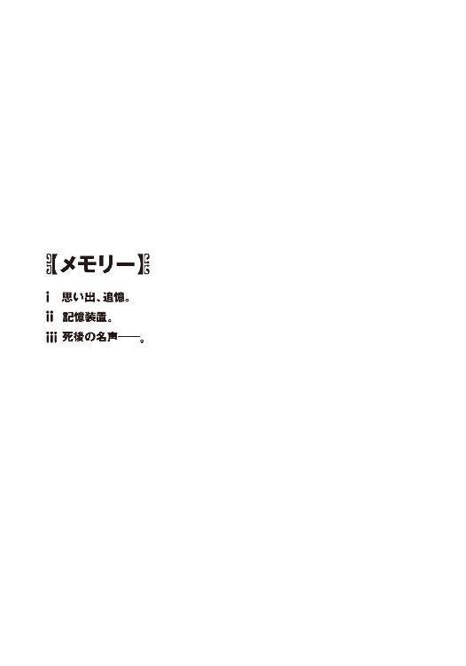
小さな獣が腕の中で鳴いた。
両手で抱きしめたその身体は、頼りなく小刻みに震えていた。
丘の上から見下ろす街並みは夕陽で赤く染まっている。公園で遊んでいた子どもたちの姿もいつの間にか見えなくなって、路地には、近くの家の夕飯の匂いが漂い始めていた。
逆光の中に浮かぶ鳥の群れ。家路を急いで乱暴に通り過ぎていく車たち。
足下から伸びているのは、疲れた大人のような長い影。夕暮れの街を独りぼっちで歩いていると、自分だけが世界から取り残されたような気分になる。
泣きたくなる気持ちを唇を噛んで必死にこらえた。そして緩やかな坂道を登り続けていると、誰かに見られていることにふと気づいた。
女の子だった。たぶん同い年くらいの幼い少女が、道路脇の白い石段にちょこんと腰かけて、頬杖を突いたままこちらをじっと見つめていた。
絵本の中に出てきそうな綺麗な服を着た、可愛らしい女の子だ。
リボンで束ねた髪の色が薄くて、えいごの国の人みたいだ、と思う。
整いすぎた容姿のせいか、黄昏の光の中に佇むその姿はどこか人間離れして、まるで魔物か幽霊のように感じられた。話しかけるどころか、近寄ることすらためらわれた。薄汚れた今の自分の姿のせいで、余計にそんなふうに思えたのかもしれない。
しかし彼女はそんなことを気にした素振りも見せず、大きな瞳を興味深そうに輝かせていた。そして彼女の前を、目を合わせないようにして黙って通り過ぎようとしたとき、
「だいじょうぶ？」
唐突に澄んだ声がした。
「......え？」
驚いて思わず立ち止まってしまった。
その反応が可笑しかったのか、少女は面白そうに目を細め、それからすぐに顔をしかめた。人形のように端整な顔立ちを、惜しげもなく歪めて彼女は立ち上がり、
「血がでてるよ。いたくないの？」
「......うん」
ぱたぱたと駆け寄ってくる彼女の妙な迫力に圧倒されて、うなずくことしかできなかった。
怪我をして血まみれになった二の腕や膝を、咄嗟に隠そうと後ずさるが、少女は、お構いなしにこちらを睨みつけ、
「うそ。ちゃんとしょうどくしないとバイキンがはいるんだからね！」
その真剣な眼差しにドキリとする。お姉さんぶった、ちょっと生意気な口調と振る舞い。だが不思議と嫌な感じはしなかった。彼女が本気で心配してくれていることが伝わってきて、それが素直にうれしかった。
「あとで、ちゃんとするよ」
だから無意識に、母親に言い訳するような口調になってしまう。
「でも......そのまえに、ねこをもらってくれるひとをさがさないと」
「ねこ？」
少女はぱちぱちと目を瞬いた。そこで彼女は、目の前で震えている小動物の存在にようやく気づいたようだった。大げさに驚いたような表情を浮かべて身を乗り出し、
「ひろったの？ すてねこでしょ、それ」
「うん......」
うなずくことしかできなかった。ぎこちなく背後を振り返り、仔猫を拾った国道の方角を彼女に指し示してやる。
「ダンボールにはいってた。あっちのみちでカラスにおそわれていたんだ。だから......」
そう告げると、彼女は怪訝顔で眉を寄せて、
「あなたが、たすけたの？ カラスとけんかして？」
やけに真剣な表情で訊いてきた。
今度はうなずくことはできなかった。ひどく悲しい気分がこみ上げてきて、無言のまま首を振り、腕の中の小さな獣をぎゅっと抱きしめる。
「うん。でも......ほんとは、もういっぴきいたんだ。そっちはたすけられなかった」
腕の中で猫が身じろぎした。伝わってくるかすかな温もりが切なかった。
公園の花壇に埋めてきた、小さな骸の冷たさを思い出して肩が震えた。
この仔猫は、兄弟を失ったばかりなのだ。親猫からも引き離されて、この街に独りぼっちで取り残されてしまっている。
その姿が少しだけ自分の境遇とだぶってしまい、言葉が続けられなかった。
僕が黙りこんでいる間、少女も無言で仔猫を見下ろしていた。
色素の薄い長い髪が夕陽に透けながら、風に乗って緩やかに舞っていた。
そのうちに少女は静かに顔を上げ、
「あたし、あなたのことしってるわ」
きっぱりとそう言い切った。意味がわからずに困惑した。
「え？」
「おとなりのオバさんがいってたの。かわいそうだって。おとうさんとおにいさんが、じこにあったって」
彼女はためらいもせずに淡々と告げた。同情する気配など微塵も感じさせない素っ気ない口調が、今は逆に心地よかった。
「うん......だから、ぼくがたすけないと」
同じように素っ気なく彼女に返事をする。それを聞いて、
「んっ？」と少女は首を傾げた。
なぜか驚いたような、そして面白がっているような声だった。
「このねこは、ぼくがひとりでたすけないといけないんだ......まもってくれるひとはもういないから」
もう一度、自分に言い聞かせるような気持ちでそう呟く。
しばらくの間、彼女はそれを少し不思議そうな表情で眺めていた。やがて彼女の唇にゆっくりと浮かび上がってきたのは、微笑。思わず見とれてしまいそうな綺麗な笑顔だ。
「いるよ」
見たこともないくらい楽しそうな笑みを浮かべて、彼女は右手を差し出してきた。
「いこ。ねこをもらってくれるひとをさがすんでしょ」
「え、でも」
歩き出そうとする少女の背中に、戸惑いながら口ごもる。血だらけの幼い少年が抱えた、痩せた貧相な捨て猫だ。彼女が口にするほど簡単にもらい手が見つかるとは思えない。
もう間もなく日が暮れる。吹きつける風は冷たく、薄闇に包まれた世界はあまりにも無慈悲で残酷だ。なのに少女は堂々と胸を張り、
「すぐみつかるよ。だってあたしがいっしょだもの」
根拠のない自信に満ちた笑顔で言った。
「だいじょうぶ、操緒がついてるよ──」
○
柄にもなくそんな昔のことを思い出してしまったのは、懐かしい景色を目にしたせいだった。夕陽に染まる緩やかな坂道。丘の上から見下ろす家並み。僕が操緒と出会った場所の風景だ。
白い石段を登った先にある、パステルカラーの庭付き一戸建て。
それが操緒の育った家。水無神一家の自宅だった。
僕が去年まで住んでいたボロアパートもこの家のすぐ近くにあったのだが、今は取り壊されて月極の駐車場になってしまっている。それが寂しくないわけではないが、建物が跡形もなく消え去っているおかげで、むしろかえって諦めがついた。もともと幸せな思い出がたくさん詰まっている場所というわけでもなく、どちらかといえば不幸な記憶のほうが多かった気がする。母親は傍若無人だし、隣に住んでいた幼なじみには幽霊になって取り憑かれるし──
おまけに兄貴は気まぐれでワガママで非常識で横暴。なぜ世間では、あんな変人が天才などともてはやされているのか理解に苦しむ。まあそれはどうでもいいのだが。
水無神家の建物は綺麗に掃除され、庭の手入れも行き届いていた。
しかしどこか寒々しい空気も漂っていた。
それはたぶん、長い間、誰も住んでいなかったせいだろう。
操緒の両親はイギリスで働いていて、この家には年に何度かしか帰ってこないという。そして操緒よりも五歳年上の彼女の姉は、今は大学の寮で暮らしているはずだった。
僕がこの家に入ったのも三年ぶりだった。操緒は公式には行方不明という扱いになっており、彼女のただの幼なじみでしかない僕が、ここに来る理由もなかったのだ。
そう──三年前のあの飛行機事故のあとで、僕たちがこの家を訪れるのは初めてだった。
『ふーん......意外に綺麗にしてるんだ......』
まるで他人事みたいな口調で言って、操緒は久々に訪れた生家を見回した。
住人のいない水無神家のリビングには、外国製の高価そうな家具が、新築マンションのモデルルームのように綺麗に整頓されて置かれていた。
「当然ですよ、このあたしが毎月やってきて、こうして手入れしてるんですから」
特徴的な早口でそう言ったのは、ハウスキーパーのオバちゃんだった。割烹着とゴム手袋がやけに似合う、笑い顔の形にしわを刻んだ中年女性である。
オバちゃんは操緒が生まれる前から、水無神家で家政婦として働いていた人だ。不在がちの操緒の両親に代わって、操緒の面倒を見ていたのもオバちゃんだった。操緒がまだ普通の小学生をしていたころ。幽霊になって僕に取り憑く前の話だ。
そして操緒の親代わりということは、当然、僕とも顔見知りというわけで、
「智春くんも大きくなったわねえ」
懐かしそうに目を細めて、オバちゃんは微笑んだ。
どうも、と僕は頭を下げた。親が不在がちだったのは僕も同様で、なんだかんだで僕もオバちゃんにはずいぶん世話になっていた。そういう意味では感謝しているのだが、しかし僕たちの幼いころを知っている大人と久々に再会したときに困るのが、
「覚えてるかしら、アナタ、昔、操緒さんに唆されて、お風呂で潜水の日本記録に挑戦して溺れたり、庭に生えてた変なキノコ食べて寝こんだり、この家の屋根からスカイダイビングごっこして病院に運ばれたりしてたわよねえ」
「ううっ......」
封印していた記憶を呼び覚まされて、僕は弱々しいうめき声を洩らした。
そういえばそんなこともあったなあ。我ながらよく今まで無事に生き延びてこられたと思う。
できればそういう恥ずかしい思い出は早く忘れて欲しいのだが、なぜこういう年代の人々は、いつまでもしつこく他人のことを覚えているのか。
そしてオバちゃんはふと僕の背後に視線を移し、
「あら、こちらのお嬢さんにお会いするのは初めてよね」
まあまあと大げさに驚きながら、僕たちに同行してきた嵩月の姿を眺め回す。
嵩月は困ったような表情を浮かべながらも、礼儀正しく頭を下げた。オバちゃんは興味津々の眼差しで僕に顔を近づけてきて、小指を立て、
「まあ......もしかして、この別嬪さん、智春くんのコレかい？」
「え？」
オバちゃんの仕草のあまりの古さに、最初なにを言われているのかさっぱりわからなかった。その間に、はあー、とオバちゃんは感慨深げに溜息をつきながら、
「あらまあ......あの智春くんに彼女ができるなんてねえ。長生きはするもんだねえ」
「いえ、あの......嵩月はべつに僕の彼女というわけではないですが」
僕は慌てて弁解するが、オバちゃんは聞いちゃいなかった。僕を押しのけるようにして嵩月に近づき、智春くんのことをよろしくねあたしはこの子が幼稚園児のころから知ってるんだけど本当に頼りない子で操緒さんがいなくなってからどうなることかとずっと心配していたのよ運も悪くて、などと聞き取るのがやっとの早口でまくし立てる。ほっといてくれ、頼むから。
「それにしても......操緒さんったら本当に幽霊になっちゃってたのねえ」
言うだけ言って満足したのか、オバちゃんは再び長い溜息をついた。天井近くを行儀悪く漂う操緒を、ちょっと顔をしかめながら眺め、
「近所でも評判だったものねえ、操緒さんが化けて出て智春くんに取り憑いてるって。あんなに智春くんに懐いてたから、そのくらいしても無理ないわねえって家政婦仲間とも話してたんだけど......」
「......あんまり驚かないんですね」
オバちゃんのそんな反応を、少し意外に思って僕は訊いた。かつて親代わりになって育てていた娘が幽霊となって現れたら、普通はもっと驚きそうなものである。しかしオバちゃんは平然と再会を喜び、この家に入れて欲しいという操緒の頼みを、あっさりと受け入れてくれたのだった。もっと恐がったり、取り乱されるのを覚悟して会いに来たのだけれど。
不思議がる僕を見て、オバちゃんは呵々と声を上げて笑った。
「それはそうよ。あたしは操緒さんが生まれたときから知ってるんですから。それに家政婦なんてやってると、幽霊憑きのお屋敷でお仕事することなんて珍しくないもの」
「はあ......」
そういうものなのだろうか、と僕は曖昧にうなずく。あまり理由になってないような気がするのだが、本人が納得しているのなら文句は言うまい。操緒の両親が不在の今、僕たちがこの家に入ることができたのはオバちゃんのおかげなのだ。
「どうせならもっと早く会いに来てくれたらよかったのにねえ。まあ元気そうでよかったわ」
ふわりと空中を漂う操緒を眺め、オバちゃんはしみじみと呟いた。元気そうという評価も、幽霊に対する形容としてどうかと思うが。
『ごめんね、オバちゃん』
照れ笑いを浮かべて、操緒は胸の前で手を合わせた。
『でも、操緒が人前に出られるようになったのも、けっこう最近のことだから......』
「あらまあ、そうなの」
オバちゃんは納得顔でうなずいて、
「ああ、それで環緒さんの居場所が知りたくなったわけね。まだ会ってないのかい？ あれから一度も？」
『うん......まあ、そんな感じかな』
操緒は困ったように片頬を膨らませた。
水無神環緒、というのが操緒の姉さんの名前だった。
一巡目の世界の遺跡の地下で、僕たちが遭遇した鋼色の機巧魔神。その正体を知りたければ、彼女に会え、と。僕たちは加賀篝隆也にそう言われたのだ。
妹が実の姉に会いに行く。普通ならそれほど難しいことではない。
だが水無神姉妹の場合は事情が違った。なぜなら環緒さんは、操緒の両親と一緒にロンドンに住んでいたからだ。独り暮らしの高校生の財力では、ロンドンはあまりにも遠かった。おまけに彼らの住所も三年前とは違っていた。
国際電話をかけても僕の知っている電話番号はすでに使われておらず、送った国際郵便は転居先不明で返信されてきた。操緒の親父さんの職場に問い合わせても、不審人物と思われて連絡先は教えてもらえず、結局、科學部の部長に頼んで勤め先のコンピュータからデータを盗み出す羽目になってしまったのだ。
そんな苦労をしてわかったことは、思いがけない事実だった。
環緒さんは二年ほど前に家を出て、一人で日本に戻ってきたらしいのだ。それきり両親とも連絡が途絶えているのだという。
「あらまあ、それは困ったわね」
うっすら床に積もった埃をモップで拭き取りながら、オバちゃんが呑気な感想を洩らす。
「環緒さんが今どこに住んでるのかは、オバちゃんも知らないしねえ......旦那様と奥様はなんて仰っていたのかしら？」
『それが......お姉ちゃんに会ったらよろしく言っといてくれって。それだけ』
はあ、と操緒は呆れたように肩をすくめた。いくらハタチを過ぎているとはいえ、実の娘が二年も失踪しているというのに、そんないい加減な態度でいいのだろうか。
とはいえ、幽霊になったもう一人の娘から国際電話がかかってきても、ろくに驚きもしないような人たちだから、無理もないのかもしれないが。
「あらそう......まあ、旦那様たちも忙しい人たちだしねえ」
そして変なふうに納得するオバちゃん。
「でも環緒さんの居場所は、この家を調べてもわからないんじゃないかしらねえ。オバちゃんが最後に環緒さんに会ったのも、もう三年以上前だもの」
『うん、それは期待してないからいいの』
操緒はぞんざいに首を振り、
『なにか手がかりがないか見に来ただけだから。それに人捜しするなら写真の一枚くらい持っておかないとね。アルバムは残ってるんでしょ？』
「そりゃあると思うけどね。操緒さんの部屋は昔使ってたときのままにしてあるから」
『わかった、ありがと』
オバちゃんに感謝するように手を合わせ、そして操緒は嵩月のほうへと振り返った。
『じゃあ......嵩月さん、よろしくね。智春、ちゃんと案内して』
「ああ......うん。ええと、こっちだ、嵩月」
僕は嵩月を引き連れて、かつて小学生の操緒が使っていた部屋へと向かった。
いちおう本人立ち会いとはいえ、女の子の部屋に男子高校生が上がりこんで物色するのは、いろいろまずかろう──というわけで、嵩月に頼んで一緒に来てもらったのだ。
当たり前の話だが、水無神家の間取りは三年前と変わっていなかった。操緒の部屋へと続く階段を、僕は妙に懐かしい感覚を覚えながら上っていく。
すると突然その背中を、
「あ！ あんたたち、ちょっと待って！」
オバちゃんが乱暴に呼び止めた。そして彼女は、階段の下からホウキの柄をぬっと伸ばして、
「さすがに月イチの掃除じゃ完全にピカピカってわけにはいかないのよね......」
そう言って階段の天井近くにかかっていた蜘蛛の巣をサッとひと薙ぎした。
僕はうわ、と低くうめく。ヤバかった。なにも気づかずこのまま進んでいたら、蜘蛛の巣に顔面から突っこむところだった。
「まったくクモとかゴキブリとか、こういうのって毎回どっから入ってきてるんだかねえ」
ぶつぶつと文句を言いながら、オバちゃんは掃除に戻っていく。
「あ......」
そのときなぜか嵩月は、僕の背後で、きゅっ、と肩をすくませていた。
○
階段を上った右手に個室が二部屋あって、その正面が操緒の部屋だった。
淡いパステルブルーの可愛らしい子ども部屋を、操緒はぐるりと見回して、
『んー......懐かしいなあ。変わってないね、この部屋』
たいした思い入れも感じさせない口調で、照れくさそうにそう呟いた。
生活の匂いの感じられない操緒の部屋は、どこか作りもののようで、人形の家に迷いこんだような錯覚を覚えた。かつて操緒がここで暮らしていたのだと、それを知っているはずの僕ですら、今はもうその姿が想像できなかった。
糊のきいたベッドのシーツ。壁のドライフラワー。棚の上に整列した少し流行遅れのマスコット人形たち。机の脇には、一度も使われることのなかった中学校の教科書が積み上げられている。そして小学生時代の僕と操緒の写真が入ったフォトスタンド。この部屋は、まるで時を止めたみたいに、行方不明になった持ち主の帰りをずっと待ち続けていたのだろう。
とはいえ肝心の持ち主は、その間、すぐ隣のボロアパートで、幽霊としての暮らしを呑気に満喫していたのだが。それを考えると、今イチ誰に同情すればいいのか迷うところだ。
『それじゃ、早速やりますか......とりあえず必要なのはお姉ちゃんの写真だよね。アルバムは、えーと、どこだっけ？』
軽く腕まくりなどしながら、操緒は部屋の中をキョロキョロと見回した。どうやら本気で、どこになにがあるのか忘れてしまっているらしい。僕は軽く溜息をついて、
「アルバムだったらクローゼットの中だよ。右側のコンテナボックスの下から二段目」
『えっ、なんで智春が知ってるの？』
本気で驚いたように振り返る操緒。僕はうんざりと顔をしかめて、
「片づけたのは僕だから」
『......そうなの？』
「そうだよ」
操緒が普段からあまりにも部屋を散らかして、しかも掃除する気配を一向に見せないため、見かねた僕がこの部屋を毎回掃除していたのだ。いや、むしろ部屋が散らかってどうしようもなくなるたびに、僕が呼ばれたというべきか。
『んー......そうか。そういえばそうかも。まあよくあることだよね』
「そんなわけあるか」
真面目に反論する気力もなくして、僕は投げやりに呟いた。
そのやりとりを聞いていた嵩月が、突然クスッと声を洩らして笑った。僕が思わず怪訝顔で彼女を見返すと、
「あ......ごめんなさい。夏目くんたちが小さかったころを想像してたら......ちょっと......」
そう言って嵩月はさらにクスクスと笑い続ける。なにかが笑いのツボに入ったらしかった。僕は憮然と唇を歪める。ひょっとして、すごく失礼な想像をされているのではないだろうか。
笑い続けている嵩月の代わりに、僕は部屋の奥のクローゼットを開けた。
上段には小学生時代の操緒の服。下段には小物や楽器なんかが、丁寧に箱詰めされて収納されていた。どれも見覚えのある品ばかりだ。
操緒のアルバムはすぐに見つかった。カラフルな表紙が四十冊ほど、こちらに背を向けて並べられている。中に写真がぎっしりと詰まっているせいで、かなりの重さだ。取り出すだけでもけっこう体力を使う。
「なんか......異様に多いな、写真」
僕は思わず不平を洩らすが、操緒は澄まし顔で首を傾げ、
『そう？ 女の子ならこれくらい普通じゃない？ ね、嵩月さん』
「あ......ええ。うちは、その......父が、写真が好きで......」
嵩月はうつむいてなぜか恥ずかしそうに答えた。どうやら嵩月の実家には、本人が言い淀んでしまうくらい膨大な量の写真が残されているらしかった。
それは写真が好きなんじゃなくて嵩月が好きなんだろう、と僕は内心でツッコミを入れた。嵩月の親父さんの娘への溺愛ぶりは、ちょっと半端ではないのだ。
「あ......可愛い......」
僕が手渡したアルバムの一冊を開いて、嵩月がクスと微笑んだ。でしょ、と上から覗きこんで同意する操緒。ふと嫌な予感を覚えて、僕は嵩月が見ている写真を横目で盗み見た。そして、
「げっ......なんだこの写真!?」
慌てて嵩月の手からアルバムを奪い取る。
そこに写っていたのは小学生の僕だった。学芸会の演劇で操緒と一緒に舞台に上がっていたときの写真だ。ちなみに劇の演目は『長靴をはいた猫』で、操緒は主役の猫の役。そして僕の役は「姫」である。縦ロールの金髪カツラにピンクのドレス。つまり写真の中の小学生の僕は、女装させられていたのだった。
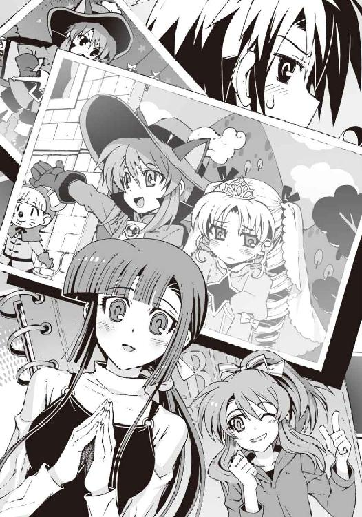
「なんでこんな写真が残ってるんだよ!?」
『え......だって記念でしょ。操緒、主演だもの』
「いや......だからってなんで僕の写真が」
『いいじゃん、べつに。操緒も写ってるし。ホラ、ここの隅っこ』
「ううっ......」
僕がアルバムを抱えたまま歯軋りしていると、嵩月が再びクスクスと笑い始めた。ここまで楽しそうな彼女を見るのは、もしかしたら初めてかもしれない。出会ったばかりのころと比べたら、彼女もずいぶん明るくなったのだ。
「だからさ、環緒さんが写ってる写真を探すのが目的なんだから、こんな古いアルバムを見てても仕方ないだろ。なるべく最近のやつを見ないと」
『ちぇ......せっかく嵩月さんに、なるべく面白い写真を見せてあげようと思ったのに......』
不平を洩らす操緒の横顔を、僕は無言で睨んで黙らせた。どうせ僕の恥ずかしい写真を見せて笑いをとろうと思っていただけだろう。その手に乗るか。
アルバムの表紙に書かれた日付を見て、比較的新しいやつを僕は二、三冊抜き出した。
新しいといっても四年前のやつだが、それでも環緒さんは当時すでに高校生である。人捜しの参考になる程度には現在の面影が残っていると思う。
「環緒さんが写ってそうな写真に心当たりは？」
僕は操緒を見上げて訊いた。
『んー......夏休みに家族旅行に行ったと思うけど。お父さんたちが一時帰国してたから』
「夏ごろの写真......か」
操緒の言葉を手がかりに、僕と嵩月は黙々と分厚いアルバムのページをめくった。整理が行き届いたアルバムというわけではなかったが、写真に写っている景色から、だいたいの季節の見当はつく。
「これ......かも。家族旅行の写真って......」
嵩月が、そう言ってアルバムを差し出してくる。
そこに写っていたのは、おそらく沖縄あたりのビーチリゾートだった。
涼しげな夏服の幼い操緒が、美しい海を背景にのんびりとクルージングなど楽しんでいる。ブルジョワめ。写真の中には、うっすら見覚えのある操緒の両親の姿もあった。
操緒も少し懐かしそうにうなずき、
『そうそう。これこれ』
「でも......環緒さんの姿は写ってないよな？」
『ん......ホントだ。なんでだろ......お姉ちゃんがカメラ持ってたんだっけ？』
「ああ......」
なるほど。言われてみればアルバムの中には、操緒と両親の三人が揃って写っている写真が多かった。通りすがりの人に撮影を頼んだのでなければ、カメラを構えていたのは環緒さんだと考えるのが自然な流れだ。
だが僕は、アルバムに収められた写真の配置に、そこはかとない違和感も感じていた。
まるで操緒のアルバムの中から、環緒さんの写真だけが抜き取られているようなもどかしさ。
でなければ、最初からそんな人物は存在しなかったかのような奇妙な感覚。
『あれえ......こっちにもお姉ちゃん写ってなかった？』
僕がめくっていたアルバムを覗きこんで、操緒が困惑気味に眉を寄せた。水無神家の正月の写真である。振り袖姿の操緒と一緒に、家族でもない僕やオバちゃんが写っているというのに、やはり環緒さんの写真は一枚もない。
漠然とした不安に駆られて、僕はほかのアルバムを開いた。その中には、さっき見た写真よりもさらに幼い操緒の姿があった。だが、それだけだ。本来そこに残されているはずの環緒さんの存在を、僕はどこにも見つけることができなかった。
『どういうこと......？』
操緒がめずらしく戸惑った様子で頭を抱えた。僕と嵩月は首を捻りながら彼女を見上げた。そんなことを僕たちに訊かれても困る。
「環緒さんが写ってる写真は、環緒さんのアルバムのほうに入ってるとか？」
『うん......それもある、とは思うけど』
どこか不満そうに操緒は唇を尖らせた。そして、
『んー......わかった。もういいよ、行こ』
「え、どこに？」
『お姉ちゃんの部屋。アルバムの一冊くらい残ってるでしょ。最初からそうすればよかったのよね。お姉ちゃんの居場所の手がかりだって見つかるかもしれないし』
「いや......でも、人の部屋を勝手に漁るのは......」
『いいよべつに。妹が許すって言ってるんだから』
そう言って自分の部屋を飛び出していく操緒を、僕はやれやれと見送った。操緒の言うことにも一理あるとは思うが、いいのかなあ、と不安になる。小学生の部屋に入るのとはわけが違うのだ。気まずいものとか、落ちてなければいいのだが。
僕は仕方なく立ち上がり、操緒のあとを追いかけた。
環緒姉さんについての記憶は、実は僕の中ではかなり曖昧だ。
綺麗な人だったという印象はあるが、僕や操緒が彼女と一緒に三人で遊ぶようなことはなかったと思う。彼女の前に出ると僕は緊張して上手く喋れなかったし、僕が環緒さんに見とれていると操緒が必ず怒り出すので、そっちの機嫌を取るのに忙しかったのだ。
人間関係にはわりと無頓着な操緒だが、実の姉に対してだけは昔から変によそよそしくて、少し身構えるようなところがあった。そういえば幽霊になって僕に取り憑いたあとも、お姉ちゃんに会いたい、などと操緒の口からは一度も聞いたことがない。
美人で優等生で両親の受けもよかった姉に対して、操緒が劣等感のようなものを感じていたのかといえば、たぶんそれは違うと思う。うちの兄弟とは違うのだ。
どちらかといえば、それは話が逆だった。
自由奔放で物怖じしない操緒に対して、環緒さんはどこか遠慮しているようなところがあった。美人で親切だが無個性で、まるで海の底で息を潜めて暮らしているような──
環緒さんはそんな人だった。彼女についての記憶が曖昧なのは、たぶんそのせいだと思う。
だから正直、彼女が失踪していると聞かされても、あまり実感が湧かなかった。
ただ、なんとなく、うちの兄貴と逆のパターンだな、と思う。
海外に出て行ってそれっきりの兄貴と、日本に帰国した環緒さん。二人からの連絡が途絶えたのは、ちょうど同じ時期だ。それに彼らは歳も同じだった。彼らが仲良くしていたという印象はないし、通っている学校も違っていたから特に接点はなかったはずなのだけれど。
環緒さんの部屋は操緒の部屋と同じ階。廊下を曲がった正面にあった。
プレートひとつ飾られていない素っ気ないドアは操緒の部屋と共通。この姉妹はそんなところだけ実によく似ている。
操緒はそのドアをすり抜けて、躊躇なく姉の部屋へと踏みこんでいった。
僕は嵩月と一度だけ顔を見合わせ、諦めの境地でドアノブに手をかけた。鍵はかかっていなかった。かすかに軋むような音を立て、環緒さんの部屋への入口が開く。
カーテンを閉め切った薄暗い部屋では、操緒が呆然と立ち尽くしていた。
『......なによ、これ......』
幽霊の少女が声を震わせた。
僕の背後で、嵩月が息を呑む気配がした。
パステルピンクを基調にした、いかにも女性的な部屋だった。
引っ越しのときに持ち出されてしまったのか、家具はほとんど残っていない。
空っぽの本棚と勉強机。マットレスのないベッドがひとつだけ。オバちゃんもこの部屋は掃除していなかったらしく、床にうっすらと埃が積もっている。
しかし部屋の中にあったのは、それだけではなかった。
環緒さんの部屋の中には、思いがけないものが置かれていた。こんなところにあるはずのないもの。しかし、僕たちが見慣れたものだ。
銀色の金属製のトランクケース。
サイズや形はまちまちだが、見間違うはずもなかった。機巧魔神を封印していたものと同じ、あの謎のトランクケースだ。部屋中を埋め尽くすほどの勢いで、それらが天井近くまで何十個も積み上げられている。その非日常的な光景に、僕は軽い眩暈を感じた。平穏な記憶が、異質ななにかに浸食されていくような感覚だった。
『なんでお姉ちゃんの部屋にこんなものが......』
操緒がかすれた声で呟いた。
僕は無言でケースのひとつに手を伸ばす。
その瞬間、カサ、となにかが蠢くような音がした。
「う......」
びく、と肩を震わせて、嵩月が僕の背中をぎゅっと握ってきた。怯えた仔猫のような反応だった。大きな瞳を小刻みに震わせている嵩月を、僕と操緒は不思議な気分で見つめた。
「あ......ご、ごめんなさい」
頬を赤く染めながら、慌てて僕の背中から離れる嵩月。そんな彼女に僕は困惑した。
たしかに、これだけ大量の謎トランクの存在は、ちょっと不気味な威圧感がある。しかし、普段から機巧魔神や使い魔を相手に平然と戦っている嵩月が、その程度で、こんなふうに不安がるものだろうか。
『......どうしたの。ひょっとして、このケースのこと、なにか知ってるとか？』
操緒が目を瞬きながら質問する。嵩月はなぜか焦ったような声で、
「いえ、違っ......そういうわけでは......」
もそもそとうつむいて言い訳する。操緒は怪訝顔で首を捻っていた。が、まあいいか。
とりあえず今のところ問題なのは、嵩月ではなく、この部屋いっぱいの謎トランクのほうだ。
「中身は......空っぽか......」
部屋に残されていたトランクケースは、どれも思ったよりも軽かった。近くにあったケースをいくつか持ち上げて振ってみても、なんの反応も返ってこない。
留め金を外すと、ケースの蓋はあっさりと開いた。中身は空。紙切れ一枚残されていない。
このケースに入っていたものはなんだったのか。そしてそれらはどこに行ってしまったのか。気がかりなことばかりだった。
『ああもう......なんでよ。なんで操緒ん家にこんなものがあるのよ......!?』
苦悩するように頭を抱えて喚く操緒。文句を言いたくなる気持ちはよくわかる。これまで、機巧魔神関係のトラブルに巻きこまれるのは主に僕が原因で、操緒はどちらかといえば傍観者だったのだ。それがまさかこんな形で、彼女の日常を脅かすとは。
しかし、だからといって操緒の場合、これくらいのことで深く思い悩むような性格ではないのだった。
『あったまきた。智春、これ全部開けて中身を調べちゃって！』
「え......!?」
今度は僕が唖然とする番だった。
この部屋にあるトランクケースは、ざっと数えただけでも五十個を超えている。見えないところに埋もれているヤツまで数えたら、最悪その倍近くあるかもしれない。それを全部ひっくり返して中身を調べろというのか。いったい何時間かかるんだ？
『せっかく手がかりが見つかったんだから文句言わないの。加賀篝の言うとおりだったでしょ。うちのお姉ちゃんは機巧魔神と無関係じゃないんだよ。これを調べたら、お姉ちゃんの居場所もわかるかも』
「うん......まあ......」
操緒にしてはめずらしく正論である。僕は渋々と部屋の奥へと進んでいって、乱雑に積まれたケースの整理を始めた。調べるのはいいが、なにしろケースの数が多すぎる。慎重にやらないとケースの山が崩れて生き埋めになってしまいそうだ。
嵩月も僕の隣に並んで、二人でちまちまケースをサイズごとに仕分けして積み直していく。
少なくともその間、僕たちが触ったケースはどれも中身が空だった。
おかげで自分がひどく無駄な作業をさせられているように思えてきて気が滅入った。独裁国家の捕虜収容所の強制労働というのは、もしかしたらこんな感じなのかもしれない。
そして疲れた息を吐く僕たちの前を、カサカサと木の葉が擦れ合うような音を立て、なにかが通り過ぎていった。僕たちは思わず動きを止めた。それは体長五センチに満たない小さな生き物だった。
細かい描写は自粛する。
それはいわゆる虫だった。長い触角と平べったい身体、発達した脚を持つ原始的な生物だ。その名前は、御器、すなわち食器にかぶりつくことから名づけられた〝ごきかぶり〟がなまって広まったものだといわれている。
約三億年前の古生代石炭紀の地球に出現し、熱帯雨林を中心に世界中に分布するといわれる有名な害虫。昆虫綱・網翅目・ゴキブリ亜目──ゴキブリだ。
うげっ、と本能的に後ずさって僕と操緒が悲鳴を上げようとした。その前に、
「きゃああああああああああああああああ──っ！」
耳をつんざくような絶叫を上げて、僕にしがみついてきたのは嵩月だった。
ものすごい力で抱きしめられて息が詰まった。
こんなふうに泣きそうな顔で震えている彼女を見るのは、もちろん初めてだ。噛みしめた唇が青ざめて、血の気をなくした肌が蝋のように白くなっている。
僕は、密着した嵩月の体温やら胸の弾力やらに気を取られて動けなかった。
その間に漆黒の害虫は、カサカサと音を立てて這いずって、積み上げられたケースの隙間に潜りこんで姿を消した。わちゃー、と悔しげに顔をしかめる操緒。なんてこった、と僕は嘆息した。これでは恐くてこの部屋のケースに手が出せないではないか。
たかがゴキブリとはいうものの、ケースの裏側に隠れているのが、今の一匹だけとは限らないのだ。もしこの裏側で繁殖されていたらと想像すると、すっと背筋が薄ら寒くなってしまう。
そして嵩月はその間ずっと、僕の胸に顔を埋めて震えていた。
「あ......あの、嵩月......？」
僕が怖ず怖ずと呼びかけてみても、
「......ごめんなさい、ごめんなさい、ごめんなさい......ごめんなさい......」
壊れた人形のように同じセリフを繰り返すだけだ。
いつもの気丈な嵩月からは想像もできない恐がりようである。幼児期になにかあったのだろうかと、ちょっと心配になるくらいの怯えっぷりだ。誰にでもひとつやふたつは苦手なものがあるのだろうが、それにしてもまさかこれほどとは。
しがみついたまま震えている嵩月を、どう扱ったらいいのかわからず、僕は立ち尽くす。
操緒がやけに刺々しい視線で睨んでいると思ったら、僕は無意識に嵩月の背中に手を回していたらしい。しかし、こういう場合は相手が誰でも、こうするのではないかと思う。今ここで怯えている嵩月を突き放すのも、あんまりな話だし。
そして僕たちが、そうこうしている間に、
「──ちょっと、アンタたち、今の悲鳴はなんだい!?」
バタバタと階段を駆け上がってきたオバちゃんが、乱暴にドアを開けて部屋に入ってくる。そしてオバちゃんが目にしたのは、涙目で怯えている嵩月と、嫌がる彼女を無理やり抱きしめているように見えなくもない僕の姿だ。
「智春くん......アンタ......」
オバちゃんのこめかみにピクピクと青筋が浮き上がった。
「違っ......違うんですよ、これは！ ただ今そこにゴ......」
僕が口にしたゴという文字に反応して、嵩月がびくっ、と全身を震わせた。どうやらその単語そのものが今は禁句らしい。おかげで僕は、それ以上なにも言えなくなる。本来ここで誤解を解いてくれるはずの操緒は、なぜか素知らぬ顔で明後日の方向を向いている。
「アンタは、ちょっとは見所がある男だと思ってたんだけどねえ......あたしの躾がなってなかったようだねえ......」
低い声で呟くオバちゃんの手の中で、メキメキと音を立ててモップの柄が砕けた。
言い忘れていたがオバちゃんは、古流柔術の達人なのだ。
「だ、だからこれは違うんですって──」
必死に釈明する僕の言葉も、最後は声にならなかった。
オバちゃんの必殺の当身技を急所に喰らって、僕はその場で悶絶した。
○
「......それで結局、操緒ちゃんのお姉さんの手がかりは手に入らなかったってこと？」
朱浬さんが、どこか可笑しそうな口調で訊いてきた。操緒の実家からの帰り道だ。朱浬さんとは近くの駅前で待ち合わせて、一緒に鳴桜邸に向かっている途中である。彼女は彼女で、環緒姉さんについての情報を、独自に調べてくれていたのだった。
「ええ、まあ」
気乗りしない表情で僕はうなずく。最終的にオバちゃんの誤解は解けたのだが、環緒さんの部屋を埋め尽くす謎トランクを見てオバちゃんは絶句。オバちゃんが責任を持って掃除するから、それまで誰も部屋に入るなと主張し、頑として譲ろうとしなかった。その間、僕は気絶していたし、肉体労働では操緒の出る幕はない。ましてや嵩月はゴキブリのせいでそれどころではない。というわけで、僕らはなんの収穫もないまま、とぼとぼと家路に就いたのだった。
「ごめんなさい......わたしのせいで......」
肩を落として嵩月が呟く。自分が騒ぎを起こしたせいで捜索が中断したのを、ずいぶん気にしているらしい。
『ん、まあ、あれは仕方ないよ。生理的にダメなものはどうしようもないしね』
いつものお気楽な口調で答えたのは操緒。慰めているのかと思いきや、ニヒヒ、とちょっと意地悪く笑って、
『それに、ちょっと面白かったし』
「あー......お、面白い？」
『嵩月さんがあんなふうに可愛く悲鳴を上げたり、取り乱したりするのって普段は見れないし。やー、意外な弱点があったんだなー、とか。へへへ』
「ううう......」
操緒にからかわれて落ちこむ嵩月。僕は内心こっそり操緒に同意する。
なにをやらせてもいつも近寄りがたいくらい完璧な嵩月が、まさかあんなものを恐がるとは。嵩月には悪いが、ちょっと親近感を感じて可愛いと思ってしまった。それにしても操緒のやつ、やたら嬉しそうである。
「そうね。べつに恥じることではないわね。ジョニーさんを嫌悪するのは、知的生命体として当然の感情だわ」
そのとき朱浬さんが唐突に、なぜか妙に真面目な顔で言った。恐いくらいの無感情な声で。僕は戸惑い気味に彼女を見返して、
「ジョニーさん......って、なんですか、それ？」
「符丁よ。あだ名みたいなもの。頭文字Ｇで始まる害虫の名前なんて、口にするだけでも汚らわしいでしょう。まったくもう、あんなやつらさっさと滅んでしまえばいいのに。環境破壊企業はなにをやってるのかしら」
朱浬さんは何気ない口調で恐いことを言う。
「符丁って......ああ。飲食店なんかで使うあれですか......」
そういえばレストランなどでは、お客にバレないように「太郎」とか「ＧＢ」とかの隠語であの害虫のことを呼ぶらしい。その必要性は理解できるが、しかしバイト店員でもないのに、普段からわざわざそんな面倒な呼び方をするとは。どうやらジョニーさんを嫌っているのは、嵩月だけではないようだ。
「言っておくけど、あいつらは見た目が悪いだけではなくて、病原体を媒介したり、機械類に侵入して内部の配線を噛み切ったりする最悪の生物なのよ。ものによっては肉食で、共食いしたりもするんだから。古生代からしぶとく生き残っちゃって、今だって人類が絶滅するのを待ってるんだわ。なんて狡猾な......」
「いや......狡猾って......」
考えすぎではないかなあ、と僕は思う。それにしても朱浬さん、そこまで嫌っているわりに、やたらとジョニーの生態に詳しいのはなぜなのだろう。なんだか聞いているこっちまで気分が悪くなってきた。
「......ところで、朱浬さんのほうでは、なにかわかりました？ 操緒のお姉さんのこと」
僕は仕方なく話題を変えた。
朱浬さんは少し考えるように空を見上げて、
「それがね......ちょっとよくわからないのよね」
「わからない？」
「水無神環緒って人物の出身校や経歴をちょっと探ってみたんだけど、表向き、彼女は完全にシロなのよ。王立科学狂会とか、学生連盟とか、そっち方面との接触は一切なし。もちろん悪魔の家系でもないわ」
「はあ......」
それはそうだろう、と僕は思った。少なくとも幽霊になる前の操緒は普通の人間で、だから彼女の姉である環緒さんも、当然、機巧魔神なんかには縁のない一般人のはず。
「念のために戸籍とか出入国の管理記録も調べてみたんだけど、そっちも綺麗なものよ。偽造の痕跡なんてなかったわ......」
「いや、偽造って......」
なんで環緒さんがそんなことをしなければならんのだ。僕は軽く呆れたが、朱浬さんは至って真面目な表情で、
「でも......だとすると辻褄が合わないのよね」
「え......なんでです？」
なにが問題なのだろう、と僕は戸惑う。環緒さんが事件と無関係なら、それはいいことではないのだろうか。
しかし状況を理解できずに戸惑う僕を見て、
「あー......」
嵩月が気遣うような表情を浮かべていた。操緒も脱力したように息を吐き、できの悪い教え子を押しつけられた家庭教師のような口調で、
『あのね、智春。だったら、お姉ちゃんの部屋にあった謎トランクはどう説明するのよ？』
「え......」
言われてようやく思い出す。環緒さんの部屋を埋め尽くしていた、大量のトランクケースの山。あれは間違いなく機巧魔神や、その拡張機能──一巡目の世界の遺産を収納するためのケースだった。
環緒さんが機巧魔神と無関係だというのなら、あのケースが彼女の部屋に残されていた理由が説明できない。
『それに加賀篝が言ってたでしょ。智春が遺跡で遭ったっていう鋼色の機巧魔神の正体も、うちのお姉ちゃんが知ってるって。なんで加賀篝はそんなことを言ったわけ？』
「そうか......」
そういえばそれもあったのだった。加賀篝が意味ありげにそんなことを言い残したせいで、僕たちは焦って環緒さんの居場所を捜し回る羽目になったのだ。
しかし環緒さんが普通の一般人なら、僕たちの苦労はまったくの無駄骨ということになる。
混乱する僕の横顔を、朱浬さんは少し愉快そうに眺めて、
「その鋼色の機巧魔神のことも調べてみたんだけど、そんな機体の記録はなかったわ。少なくともこれまでに確認されている範囲では、トモハルが言うような機巧魔神は存在しないのよ」
「存在......しない？」
「べつにトモハルを疑ってるわけじゃないのよ」
うろたえる僕に悪戯っぽくウィンクする朱浬さん。
「意識朦朧だったトモハルの証言だけならともかく、加賀篝がそれに話を合わせる理由はないものね。夏休み前の飛行機の事件で重力制御が使われたのも事実だし。でも、証拠がないのは、正直キツイかな」
「......そうですね」
僕は頼りなく視線を彷徨わせながら呟いた。なんだか自分でもわけがわからなくなってきた。まるで誰かが仕組んだ大がかりな芝居に巻きこまれ、僕たちだけが騙されているような気分だ。調べれば調べるほどに謎は深まり、結局また振り出しに戻るのか。
水無神操緒の姉について調べてみるといい──と、加賀篝隆也は僕たちに言った。
まるで挑発するような口調で、
〝彼女に会えばすべてがわかるだろう。会えれば、な......〟と告げたのだ。
それから三カ月近くが経ってもまだ、僕たちはなんの手がかりも得られないでいる。
そのことを考えると気が重い。自分たちが、なにか取り返しのつかない時間の浪費をしてしまったのではないか。そんな不安に駆られてしまうのだ。
それは操緒や嵩月にしても、同じような気持ちなのだろう。僕たちが言葉少なに、とぼとぼと鳴桜邸への道のりを歩いていると、
「......ところで、トモハル。訊きたいことがあったんだけど」
「え？ あ、はい。なんでしょう？」
朱浬さんに問いかけられて少し焦った。なんですか、突然あらたまって？
「ニアちゃんのことなんだけど、調子はどう？」
「アニア......ですか？ え、どうして？」
「加賀篝のことを思い出したから、ちょっと気になったのよ。ニアちゃんのお姉さんのこと」
「ああ......はい」
そのことか、と僕は理解した。
僕たちが加賀篝と遺跡の地下で遭遇したあの夏の日、アニアのお姉さんは消滅した。アニアの目の前で非在化して崩れ去ってしまったのだ。
その瞬間を目撃したアニアが平気でいられるとは思えない。そして環緒さんを捜す僕たちの姿を見ていれば、彼女は嫌でも自分の姉のことを思い出すだろう。
『あたしたちも、いちおう気にはしてたんですけど......』
言葉を探して沈黙した僕の代わりに、質問に答えたのは操緒だった。
『なんか、妙に元気なんですよね、ニアちゃん......ショックを受けてないってことはないと思うんですけど、智春とかがヘタに気を遣うと怒っちゃうし』
うんうん、と僕は左腕をさすりながらうなずいた。ほんの二、三日前にも、僕の気遣いに対してアニアが怒り出し、噛みつかれた挙げ句に運気を吸われて酷い目に遭ったのだ。
『まあ、あれは智春が悪いんだけど......ニアちゃんが遊んでたゲームの電源を途中で抜いたりするから』
ぼそり、と余計なことを付け加える操緒。なんでだよ、と僕は不満の表情を浮かべる。
アニアが遊んでいたあの格闘ゲーム、次のステージの対戦相手が、金髪ポニーテールの女性キャラクターだったのだ。あんなものを見たらきっとアニアはクルスティナさんのことを思い出したに違いないのに。
「そう......それで、ニアちゃんは今なにを？」
ちょっと考えこむような顔で朱浬さんが訊き返してくる。僕は答えてもいいのかどうか迷いながら、
「や、たぶん今は鳴桜邸でゲームをやっているのではないかと」
「ゲーム？ 一人で？」
「パソコンのオンラインゲームってやつです。アニアのやつ、最近ハマってるみたいで、学校もサボりがちだし、アカウントの請求額も凄いことに......」
僕は情けない表情で溜息をついた。ちなみに、そのアカウント料金や通信費用を払ったのも僕である。なにしろアニアは、手ぶらも同然でうちに押しかけてきたのだ。そのくせ金銭感覚だけは貴族の令嬢のままなのでタチが悪い。
とはいえ、あんな事件の直後だけに、ゲームで寂しさを紛らわしているのかもしれないと思うと、僕としてはあまりキツく叱ることもできずにいるのだった。
「......大丈夫なのかしら、それって」
朱浬さんも、さすがに当惑した様子で呟いた。
「いや、それは僕の口からはなんとも......」
「ま、そうよね。わずか十歳にして、学校もいかずに引きこもってネットゲーム三昧なんて、社会生活不適合者一直線って感じだもの。そのうち金属バットとか持ち出してきて、家の中で暴れ出したりして」
「......さすがにそれはないと思いますが」
僕は引きつった笑顔で首を振った。なにげに酷いことを言うな、この人も、
「あ......でも......こんなときに急に厳しくするのも......逆効果、かも......」
嵩月が、アニアを気遣うような口調でやんわりと忠告した。
うーん、と考えこむ僕と朱浬さん。たしかに嵩月の意見も一理ある。特にアニアの場合、現実逃避したくなるような過酷な体験も経ているわけだし。
『やっぱり専門家に相談したほうがいいかもね』
したり顔で無責任な意見を述べたのは操緒である。僕は首を傾げながら、
「専門家って誰だ？」
『んー......ほら、部長とか』
「部長って......科學部の？ あの人はべつに専門家ってわけじゃないだろ」
『でも、ヒキコモリ歴長いし、経験者だし』
「いやだから......」
専門家ってそっちかよ、と僕は脱力。絶対にそれはなんの解決にもならないと思う。断言できる。
住宅街に特有の入り組んだ路地を抜け、ちょうど鳴桜邸の威圧的な輪郭が見えてきたところだった。僕がここに住み始めたのは半年前だが、そのころと比べてもさらに廃屋っぽさが増しているような気がした。思えばこの半年間、この屋敷も様々な事件に巻きこまれ、そのたびにどこかしら爆発したり吹き飛んだりしていたのだから無理もない。
どう考えても十歳の女の子が住むべき環境ではないし、ましてや昼間っからこんなところに籠もってゲームというのは明らかになにかが間違っている。そろそろ本気で対策を考えたほうがいいのかもしれない。
「とりあえず今日のところは、ニアちゃんをあまり刺激しないように様子を見ましょう」
玄関の前にたどりついたところで、朱浬さんがいつになく真面目な口調でそう言って、僕たちは無言で同意した。
邸内から、悲鳴のようなアニアの怒声とガラスが砕け散る音が響いてきたのは、まさにその直後のことだった。
○
アニアが構えていたのは、いわゆる金属バットだった。
昼間でも薄暗い石造りの洋館の廊下。
金髪碧眼の幼い少女が、華やかなドレスの裾とリボンを翻し、錆の浮いた金属バットを振り回している。ホラー映画に出てきそうな光景だ。
「ほぁーっ！」
アニアの舌足らずな咆吼が反響する。石壁を殴りつけた金属バットの先端から、鮮やかな火花が飛び散った。続けてもう一撃。情け容赦ない本気の攻撃だった。普通の木造家屋だったら今ごろ、家中の壁がボコボコになっているところだ。
しかもアニアの動きはデタラメで、なにかしら目的があって行動しているとは思えなかった。壁だけでなく床や家具など、攻撃対象は手当たり次第である。アニアの身長では届かない天井も、わざわざソファの上からジャンプして殴りつけている。怪しいクスリの副作用とか、タチの悪い悪霊に取り憑かれたとか、そんな感じ。もうまったくシャレになっていない。
「ア......アニア！」
僕は呆然と立ちすくんだまま、無意識に彼女の名を呼んだ。
果たしてその声が彼女に届いたのか、アニアはゆっくりと首の動きだけで振り向いた。そして殺意に満ちた瞳で僕を睨みつけ、
「動くな、智春！」
「えっ!?」
高々と振り上げられた金属バットを見て、僕は硬直。ハッと我に返って後ろに飛び退くのと、アニアがバットを振り下ろすのはほぼ同時だった。
寸前まで僕が立っていた場所をバットの先端が殴りつけ、老朽化した鳴桜邸の床板が、メキメキと音を立てて砕け散る。
それを見たアニアはギリギリと奥歯を軋ませて、
「なぜ避ける!? 動くなと言っただろうが！」
「無茶言うな。こんなん当たったら死んじゃうだろ!?」
「当然だ。殺す気で襲っているのだからな！」
キッパリとそう言い切って、アニアはバットをフルスイング。僕の眼前の石壁を直撃して、砕け散った石灰岩の破片が降りかかる。
「ちょ......アニア!? おまえ、なんのつもりで......!?」
激しい戦慄を覚えながら、僕は声を震わせる。なぜこんなところで居候の少女に命を狙われなければならないのだ。僕がいったいなにをした。
「もしかして、アレか。こないだ、アニアのセーブデータを僕が間違って上書きしたやつか？ それともアニアが解いた宿題のコピーをこっそりクラスの男子に売り捌いたのが......」
「なにを寝ぼけたことを言っている？ いいからそこでジッとしていろ！」
荒々しく息を吐きながら、アニアは懐から新たな凶器を取り出した。
毒々しい色に塗りたくられた、殺虫剤のスプレー缶だった。強力すぎて日本では認可が下りなかったという外国製のヤツ。まさかあれで目潰し攻撃を仕かけて、確実に僕にとどめを刺すつもりなのか!?
そして僕が身構える間もなく、ニアは怪しい黄色の毒霧をまき散らした。しかし彼女がスプレー缶を向けていたのは、僕ではなく自分の頭の上だった。当然ながら降り注ぐ薬剤をまともに浴びて、アニアは涙目でゲホゲホと咳きこむ。運動神経は鈍いのだ。
『......智春、ニアちゃんが攻撃してるのって、もしかして......』
しばらく呆れ顔でアニアの行動を見ていた操緒が、なにか思いついたように耳打ちしてきた。
彼女が指さしたのは、目を閉じたまま金属バットを旋回させているアニアの横。彼女がさっきまで殴りつけていた壁のあたりだった。
薄暗い廊下の壁の継ぎ目を、ひときわ黒っぽい物体が移動している。
油を塗ったようにわずかな光を反射して、闇の中で艶やかに輝くその移動体は──
「うっ......きゃああああああああああああああああっ！」
鼓膜が破れるかと思うほどの悲鳴が、邸内の大気を震わせた。声の主は嵩月だった。こぼれ落ちそうに見開いた瞳で、彼女は闇の中を蠢く存在を見つめて震えていた。
ここまで恐怖を剥き出しにした嵩月を見るのは初めてだ。
彼女の両手が淡い光を放ち、灼熱の炎に包まれる。
嵩月の正体は炎使いの悪魔。重なり合った他の世界から迷いこんだ異界人の末裔だ。
彼女の全身を流れる血液は、彼女の感情に応じて摂氏数千度の地獄の業火に変わる。そして今の嵩月は、明らかにその能力を制御できていなかった。
「う......うわ......！」
僕は床に転がって、まき散らされる炎をどうにか避けた。
無秩序に放たれる嵩月の炎は、壁を這いずる黒い移動体に向けられていた。燃え広がる炎に煌々と照らし出されたのは、長い触角を持つ昆虫の姿。
それは紛れもなく、朱浬さんが言うところの「ジョニーさん」だった。
『で......でかっ！』
操緒が声を上擦らせてうめいた。僕も言葉を失っていた。
そのジョニーさんは、本気で恐怖を覚えるくらい巨大だった。
本体だけで十センチ近く。触角まで入れたらさらにその倍はあると思われる。
僕や操緒が見ても恐いと思うのだ。ただでさえジョニーさんを恐れている嵩月が感じている恐怖がどれほどのものか、ちょっと想像を絶するものがあった。
アニアが金属バットを振り回していた理由も、ようやくわかった。たしかにこいつは丸めた新聞やハエ叩き程度で倒せる相手とは思えない。もっと本格的な凶器が必要だ。
まさかこんな大物に、この日本で遭遇することになるとは。異常気象のせいなのだろうか。いったいなにを喰ったらこんな育つんだ。
「どいて、トモハル！ 奏っちゃんも！」
凛とした声が響き渡り、僕たちを押しのけるようにして朱浬さんが前に出た。
彼女の左腕あたりから、がちゃこん、と重々しい金属音が鳴った。朱浬さんの腕の内蔵ショットガンの装填音だ。
「ちょ......ちょっと、朱浬さん!? なにするつもりなんです!? まさか......」
僕は唖然として左腕を構える彼女を見上げた。
朱浬さんは僕を振り返ろうともしなかった。
彼女の瞳が真紅に発光し、美しい横顔には引きつったような薄笑みが貼りついている。
「しぶとさと繁殖力だけが取り柄の下等生物が、このあたしの前に出てくるとはいい度胸ね」
裏返った声で罵りながら、朱浬さんがショットガンをぶっ放す。
狭い範囲にばらまかれた散弾は、容赦なく鳴桜邸の壁を撃ち抜いて、ついでに床板の一部を廃材に変えた。しかしジョニーさんは時間を止めたのではないかと思えるほどの速度で移動し、その攻撃を悠々とかわしていた。そんなジョニーさんを、
「ふぉぉーっ！」
目を瞑ったまま振り回すアニアの金属バットが追撃。
きゃあきゃあ、と息も絶え絶えに悲鳴を上げる嵩月は、ろくに狙いもつけずに火球を無差別にまき散らし、さらに弾丸を再装填した朱浬さんがショットガンを連射する。
『あちゃー......』
目元を覆って天井を仰ぐ操緒。僕は、ああ......と弱々しい声を洩らすだけだ。ただでさえ老朽化が進行していた鳴桜邸の廊下が、見る間に瓦礫の山へと変わっていく。
それでも三人の猛攻を浴びて、ジョニーさんは次第に追いつめられていた。
炎と殺虫剤の煙幕に巻かれた廊下には、もはや彼の逃げ場はない。
そして己の不利を悟ったのか、彼は最後の抵抗に出た。
炎に照らされて艶やかに輝く翅を広げ、ジョニーさんは飛んだのだ。
僕たちのほうを目がけて、一直線に。
「「「ぎゃあああああああああああああああああああああああああああああああああああああああああああああああああああああああああああああああああああああああああっ!!」」」
その場にいた全員が絶叫した。
嵩月が伸ばした指先から巨大な炎の奔流が走った。
それはアニアが投げつけたスプレー缶を巻きこんで、巨大な爆発を引き起こした。
そこに朱浬さんが乱射した大量のミサイルが呑みこまれて次々に誘爆する。
僕が覚えているのはそこまでだ。
その爆発の衝撃は、一キロ離れた民家の窓ガラスをひび割れさせるほどだったという。
死人が一人も出なかっただけでも、たぶん幸運だったのだと思いたい。
そしてなぜかジョニーさんの死体は、最後まで見つからなかったのだという──
○
鳴桜邸が半壊した、その翌日のこと。
僕と操緒は学校をサボって、早朝から駅前のカラオケボックスを訪れていた。
といっても下宿先が壊れたせいで、この店に泊まったというわけではない。朱浬さんに電話で呼び出されたのだ。
嫌な予感がしなかった、といえば嘘になるのだが、しかし彼女の呼び出しを無視するのは、それはそれで恐ろしい。それに彼女にはアニアの面倒を見てもらっているという負い目もあった。ジョニーさんを相手に奮戦した反動か、あのあとアニアは高熱を出して倒れてしまったのである。そんなわけで昨夜は朱浬さんの家に、うちの居候を泊めてもらっていたのだった。
その朱浬さんが姿を見せたのは、待ち合わせの時間を三十分ほど過ぎたころだった。
「ごめんね、待たせてしまったわね。荷物を揃えるのに時間がかかってしまって」
ふふっ、と笑みを含んだ声とともに現れた彼女は、大きなスーツケースを引きずっていた。プロのスタイリストが持ち歩いてそうな感じの、やたら重そうなケースである。
『荷物って......どこか出かけるんですか？』
操緒が不思議そうに目を瞬いて訊いた。朱浬さんは愉快そうに微笑んで、
「なに言ってるの。操緒ちゃんたちが行くのよ」
『はい......？』
なんのことだ、と僕たちは軽い不安の相を浮かべた。駅前で待ち合わせ、と聞かされたときから嫌な予感はしていたのだ。それでなくても朱浬さん絡みで旅行、というと悲惨な体験しか記憶にないのに。怪獣に襲われたとか、飛行機が落ちたとか。
しかし朱浬さんはとことん愉快そうに目を細め、
「そんな心配そうな顔しなくても大丈夫よ。操緒ちゃんたちのお姉さんに会いに行ってもらうだけだから」
『え、じゃあ、お姉ちゃんの居場所がわかったんですか？』
操緒が吃驚したような声を出す。朱浬さんはどこか晴れやかな表情でうなずき、
「ここからだと新幹線で移動してもらわなきゃならないんだけど、二人とも、周央女子大って聞いたことある？」
「ええ、まあ......名前くらいは」
僕と操緒が同時にうなずく。聞き覚えがある、というよりも、むしろ知っていて当然という大学名だった。全国でも有数の名門女子大学だ。女子大にしてはめずらしく理工系の学部が充実していて、何年か前にはノーベル賞の受賞者も出していたはず。
『もしかして、お姉ちゃんがそこに？』
「ええ、そう。たぶんね」
朱浬さんは驚く操緒を見て、柔らかく微笑む。
「それがわかったのはニアちゃんのお手柄だけどね」
「......アニアが？」
僕は思わず操緒と顔を見合わせた。
「でも、どうやって？」
結局、昨日はジョニーさんの騒動でアニアとろくに話もできなかったのだけど、いつの間にそんなことになっていたのだろう。いや、そもそも家に籠もってゲームをしていたはずのアニアが、どうやって環緒さんの居場所を突き止めたのだ？
戸惑う僕たちを朱浬さんは悪戯っぽい眼差しで見返し、
「人をね、使ったみたい」
「......人？」
人づてに聞きこみ捜査を実施した、ということか？
しかし留学生のアニアには、洛高を離れての友人はそれほど多くないはずだった。ましてや、よその街にある大学生に知り合いなんて。
「だから、オンラインゲームだったんでしょ」
朱浬さんは、ちょっと本気で感心したような口調で、囁くように呟いた。
「......ゲームで？」
「ニアちゃん、電脳の世界じゃけっこうな有名人だったみたいよ。その知名度を利用して、水無神環緒の名前を騙って、現実の世界での環緒さんの知り合いを捜したみたい」
「はあ......」
僕はよく分からないまま、とりあえずうなずいた。やたらゲームに金を注ぎこんでいるとは思っていたが、ただ遊んでいたわけではなかったのか。
「もともとニアちゃんは、環緒さんがどこかの大学にいるはずだと見当をつけてたみたいね。彼女が本当に機巧魔神と関わりのある人物なら、大学生という身分は、なにかと都合がいいはずだから──彼女の目的がなんであるにせよ、ね」
『......そうか、王立科学狂会......！』
操緒が、イカサマで負けたギャンブラーのような悔しそうな口調で呟いた。
黒科学の研究者集団である王立科学狂会は、世界各国の教育機関にネットワークを張り巡らせた組織だった。彼らの仲間として助力を受けるにしろ、あるいは彼らを敵として監視するにしろ、同じ教育機関の内側にいるほうが有利なのは間違いない。
「平日の昼間っからオンラインゲームに参加しているプレイヤーなら、時間とお小遣いに余裕のある大学生の割合が高いでしょ。ネットワーク越しなら、見た目、小学生のニアちゃんでも環緒さんになりすまして情報を集めることができるしね」
「う......」
すごいな、と僕は軽く感動した。クソ生意気で社会常識欠如で生活力皆無のアニアだが、天才少女の触れこみはやはり伊達ではなかったらしい。手がかりひとつなかった昨日までに比べたら、ものすごい前進である。害虫相手に金属バットを振り回していたあのお子様と、同じ人物がやったこととは思えない。
『操緒たちが呼び出された理由はわかりましたけど......』
カラオケボックスの天井近くを漂いながら、操緒が言った。
『でも、周央女子大って......けっこう大きい大学なんですよね。生徒の人数も多いだろうし、事務室に問い合わせたりしてもお姉ちゃんの住所を教えてはくれないですよね』
そうね、と朱浬さんはうなずいて、
「女子大だから、生徒の個人情報保護にはかなり気を遣ってるでしょうね」
『だとすると、やっぱり......』
「ええ。生徒のフリをしてこっそり大学内に入って探すのが早道よね』
そう言って、操緒と朱浬さんは同時に僕のほうを見た。
なにが言いたいのかは聞かなくてもわかる。環緒さんの写真が手に入らなかった以上、彼女の顔がわかるのは僕と操緒だけ。しかし操緒は、僕から離れてあまり遠くまではいけないのだ。
そして周央大学は女子大で、当然、僕が生徒になりすまして中に入るのは無理。
そう、そのままでは無理なのだ。
「というわけで、これを用意してきたのよ」
ふふふふっ、と愉快そうに微笑みながら、朱浬さんは運んできたスーツケースを開けた。
ケースの中に詰まっていたのは、女性用の衣装と大量の化粧道具。そして黒髪ロングのカツラと胸パッド入り補整下着。見慣れた女装キットだった。べつに慣れたくなんかなかったが。
朱浬さんがでかい荷物を持ってきたときから、嫌な予感はしていたのだ。僕は諦めの境地で、うんざりと息を吐く。
そんな僕の反応を見て、朱浬さんは、冗談とも本気ともつかぬ口調で、
「あら、今回は文句を言わないんだ。積極的になってくれてうれしいわ」
「積極的じゃないですけど......この展開はなんとなく予想できてましたから......」
僕はそう言って力なく笑った。
どのみちこの話の流れでは、抵抗しても無駄だろう。
せめて前向きなことだけ考えてみようと思う。
まず、潜入先が大学というのは有利な材料だ。化粧のケバいお姉さんたちも多いだろうし、そのぶん僕の変装も楽になる。おまけに同じ市内ではないということで、知り合いに会う可能性もほぼ皆無。それに女子大の中ならば、万が一にも佐伯兄に会うこともあるまい。
操緒や朱浬さんが相手なら、女装した姿も何度も見られているし、今さら気にしても仕方がない。そう思えば諦めもつくというものだ。
「ふふっ、まさかまたともはちゃんに会うことになるとはね」
慣れた手つきで僕に化粧を施しながら、朱浬さんが笑った。
こんな密室で女子の先輩に化粧を施されていると、なんだかそれだけで変な気分になりそうだった。こういうのは、もうこれっきりにしようと固く心に誓う。でないと、変な趣味に目覚めてしまいそうだ。
「あ......そうそう、言い忘れてたけど」
朱浬さんが不意にそんなことを言い出したのは、僕が化粧と着替えを終えて、女装完了した直後だった。
「なにかあったときに、ともはちゃん一人じゃ対処に困ると思って、いちおう助っ人を呼んでおいたから」
「は......？」
一瞬、彼女がなにを言っているのかわからなかった。
「助っ人って、朱浬さんが一緒に来てくれるんじゃないんですか？」
「ごめんね。でも、あたしはニアちゃんの看病もしなきゃだし」
悪びれもせずにそう言って微笑む朱浬さん。僕の背中をぞくりと悪寒が走り抜けた。助っ人っていったい誰を呼んだんだ。あんたそれ絶対に計画的な犯行だろ！
「あ......」
まさに僕が狼狽したそのタイミングで、カラオケボックスの扉が開いた。
そこに立っていたのは嵩月だった。彼女は僕と操緒と朱浬さんを順番に見回し、最後に再び僕の顔に目を止めた。理解不能な命令を受けた小動物のように、ちょこんと小首を傾げ、
「え......夏目くん？ え？」
それきり嵩月は壊れたように動きを止めて固まってしまった。
面白そうに僕の反応を観察する朱浬さんと、笑いをこらえるように肩を震わせている操緒。
だが僕は彼女たちに文句を言うこともできずに、その場で硬直していた。
異様に恥ずかしくて嵩月と目を合わせられない。頬が熱くなっているのが自分でもわかる。女装を知り合いに見られるのが初めてというわけでもないのに、自分でも驚くほどショックを受けている。胸が締めつけられるように苦しかった。なんだこの感覚と自問する。が。
もちろん答えは出なかった。
○
それから二時間ほどが経過して、僕たちは周央女子大のキャンパスを歩いていた。
正確に言えば、むしろ途方に暮れていた。大学は予想以上に広大で、学生の数も桁外れに多かった。この中からたった一人の人間を、ろくな手がかりもなく捜し出すのは、どう控え目に表現しても無謀だ。敷地が広いぶん出入口も多くて、門の前で待ち伏せすることもできそうにない。
恥を忍んで女装して来た甲斐あって、大学正門の守衛所前はいちおうフリーパスだった。が、学生課や事務室など、重要情報を扱ってそうな部署はそういうわけにもいかないらしい。
それ以外にも学生証を見せなければ通過できない場所が意外に多く、環緒さんの捜索は初っ端からいきなり難航しているのだった。
銀杏の葉が絨毯のように敷き詰められた石畳の道を、僕たちはあてもなく彷徨っている。いかにも名門の女子大という感じの、美しい光景だ。
「......綺麗」
舞い散る葉っぱを眺めながら、嵩月が薄く溜息をついた。
「そうだね、ちょっと歩きにくいけど」
慣れない踵付きの靴に手こずっている僕は、バランスを崩して軽く舌打ち。それを見て嵩月はたまりかねたようにクスッと笑った。黒目がちの瞳を柔らかく細めながら、
「いえ、そうではなくて......夏目くんが綺麗だと思って」
「......やめてくれ、頼むから」
長い前髪を押さえて、僕はうめいた。人間離れした美少女の嵩月にそんなことを言われると、どうやっても皮肉にしか聞こえない。しかし嵩月は大げさに首を振り、
「でも、本当に......すごい。こんな特技があるなんて、わたし、知らなかったから」
「べつに特技なわけじゃないよ。これは朱浬さんに言われて毎回仕方なく......」
「え、毎回？ じゃあ前にも？」
「あ、いや......それは......」
思わず墓穴を掘ってしまって僕は頭を抱える。ぶっ、とたまりかねたように小さく噴き出す操緒。嵩月もなぜか今日は妙に楽しそうだ。
「あー......ごめんなさい。わたし、ちょっと浮かれてますね」
少し反省したような表情になって、嵩月が思いがけないことを言い出した。まさかこの子の口から、浮かれているなんて言葉が出てくるとは。
「すみません。なんだか、今の夏目くんのほうが、いつもより話しやすい気がして」
あくまでも真面目な口調でそんなことを言う嵩月。僕はなんとも形容しがたい気分になって、
「そ、そう......」
まあ嵩月が喜んでいるならいいか、と思った。たぶん毛嫌いされるよりはマシなのだろう。
「それにしても困ったな。これからどうすればいいんだ......？ 環緒さんの居場所って、わからないか、操緒？」
普通の人間のフリをして、地上すれすれに浮かんでいる操緒に訊いてみる。
アニアがゲーム仲間から得た情報は、水無神環緒という人物がこの大学に通っているということだけで、学部や学年などについては一切わからなかったのだ。ヘタすれば最悪、同姓同名の別人ということもあり得る。せめてもう少しなにか取っかかりが欲しい。
しかし操緒は、ちょっと呆れたように肩を窄めて、
『そんなの無理に決まってるでしょ。警察犬じゃないんだから』
「いや、そういうことじゃなくて」
さすがに臭いをたどってくれるとは期待していない。
「環緒さんの行きそうな場所に心当たりはないか、ってことなんだけど。ほら、環緒さんの趣味とか将来の希望とか、そういうのがわかれば手がかりになるかも。学部とかサークルとかの」
『お姉ちゃんの趣味......？ そんなのあったかなあ......』
「おまえな......」
いちおう家族だろ、と僕は呆れる。せめて姉の好きなものくらい知っとけよ。
『なによ。だったら智春は直貴くんの趣味を知ってるわけ？ 行方不明になってるのは智春んとこのお兄さんだって一緒じゃない』
「う......」
思わぬ反撃を喰らって僕は沈黙。たしかにうちの兄貴の好きなことを訊かれても、弟イジメくらいしか答えようがないが。
『まあ......いくら広くても同じ大学の中なんだし、しばらく居座ってたら、そのうちばったり会えるんじゃない？』
いつもの無責任な口調で操緒が言う。
勘弁してくれ、と僕は思った。こんな恰好でいつまでも女子大の中なんかをうろつきたくはない。なんかのきっかけで女装がバレたらどうしてくれるんだ。
しかし僕のそんな不安をよそに、操緒は楽しそうにくるりとその場で回って、
『ね......なんだか、こういうのも悪くないよね』
「なにがだよ？」
『だからさ、あと何年か経ってもまた、あたしと嵩月さんと智春で一緒に、こうやって女子大のキャンパスを歩くの。普通の大学生として。流行の服を着て、おしゃれな店でランチして、お友達の恋愛相談とか聞いたりして』
操緒は鳥のように両手を広げ、この季節に特有の青い空を見上げて微笑んだ。嵩月もうなずき、
「そう......ね。そうできたら素敵」
どこか遠くを見るような瞳で柔らかく笑った。
なんで女子大なんだよ、と僕は溜息。女装してまで無理に女子大に通わなくても、共学の大学でも問題ないだろう。
しかし僕たちはそれきりなにも言わなかった。本当は誰もがわかっていた。哀音が予言した世界の終わりまで、残りあと一年と少し。その滅びを回避しない限り、僕たちがそんな平穏な日常を迎えることはない。
〈 鐵〉から解放しない限り、操緒の魂はそう遠くない日にいつか消滅する。このまま力を使い続ければ、嵩月の身体も非在化して消える。
鐵〉から解放しない限り、操緒の魂はそう遠くない日にいつか消滅する。このまま力を使い続ければ、嵩月の身体も非在化して消える。
それらを避ける手段を手に入れること。そのために僕たちは環緒さんに会いに来たのだ。
「腹減ったな......」
暗い想像を振り払うように、僕は気の抜けた声で呟いた。嵩月は小さく声を洩らして笑い、
「あ......それなら学食が。あっちに」
彼女が指さした方角には、ガラス張りの美しいカフェテラスがあった。ちょうど講義の合間の時間らしく、大勢の学生で賑わっている。いかにも女子大らしい華やかな光景だ。
『行ってみる？ もしかしたらお姉ちゃんも来るかもしれないし』
操緒が背伸びするように、路肩の植えこみの上に身を乗り出した。
「......水無神センパイ？」
そのとき誰かが彼女の名前を呼んだ。通りすがりの女子大生が、なぜか驚いたような表情で立ち止まって、操緒のことを見つめていた。
文学少女っぽい面立ちの、小柄で色白の学生だった。僕たちの知らない顔である。彼女は、振り返った操緒を正面から見て、
「あ......ごめんなさい、人違いだったみたい。知っている人によく似ていたものだから......」
少し焦ったように両手を振り、そのまま立ち去ろうとする。
『あ、待って。ちょっと待ってください。あなた、お姉ちゃんのことを知ってるんですか？』
操緒が慌てて彼女を呼び止めた。え、とメガネの下の目を丸くして文学少女が振り返る。
思いがけず遭遇した証人の反応を、僕と嵩月は固唾を呑んで見守った。
なんだかんだで環緒さんと操緒は姉妹なのだから、二人を見間違う人がいてもおかしくない。僕の中では、彼女たち二人が似ているという印象はなかったので、すっかりその可能性を失念していた。環緒さんの最有力の手掛かりは、僕のすぐ隣にずっと浮かんでいたのだった。
「......水無神センパイの、妹さん......？」
文学少女が、メガネのズレを直しながら訊いてくる。
操緒はどこか居心地の悪そうな表情で、どうも、と笑って頭を下げた。
○
山田さん、というのが文学少女のお名前だった。
彼女は環緒さんのゼミの後輩で、大学に入学したばかりのころに、ちょっとしたトラブルに巻きこまれたのを助けてもらったことがあるのだそうだ。それ以来、なんとなく環緒さんに懐いていたのだが、今年の春ごろから環緒さんが急に大学を休みがちになり、不安に思っていたのだという。そんな折、構内で操緒の姿を見かけて、思わず声をかけてしまったらしい。
『で......ここが、お姉ちゃんの住んでる学生寮？』
文学少女が持っていたゼミの名簿には、環緒さんの住所もしっかりと記載されていた。
僕たちはそれを頼りに電車を乗り継ぎ、途中で道に迷ったりもしながら、夕方近くになってようやく環緒さんが住むという建物にたどりついたのだった。
周央大学の付属の女子寮である。
さすがに名門女子大の寄宿舎というだけあって、豪華で清潔感のある建物だった。学生寮という言葉からイメージされる、安っぽい雰囲気や汗くささは微塵も感じられない。高級マンションといっても通用しそうだ。
ただ一点、玄関脇の管理人室に居座って、貫禄をまき散らしている人物を除いては。
『あれって寮母さん......だよね？ 獄卒とか仁王像ではなくて......』
怯えを含んだ声で操緒が呟く。
「たぶん......」
僕は頼りない声で肯定した。はっきり断言できないほどに、その人物は寮母というイメージからかけ離れていた。むしろ人類と呼べるのかどうかすら疑わしい。
身長はおそらく百九十センチ近く。分厚い鎧のような筋肉に覆われた胸板。肩幅は僕の倍ぐらいあるのではないかと思う。頬をうっすらと覆っているのは、青々としたヒゲの剃り跡だ。
それでいて髪型は緩くウェーブしたワンレンの長髪で、腫れぼったい唇には真っ赤なルージュ。ユニセックスにしてもほどがある。強面の男たちなら見慣れているはずの嵩月までもが、不安げな表情を浮かべていた。
女装マニアというかオカマというか、おそらく心は清い乙女の人なのだと思う。
しかし考えようによっては、これほど完璧な女子寮の管理人もいなかった。どんな命知らずの下着泥棒や覗き魔でも、彼女を敵に回してまで、この寮に侵入しようとする者はいないに違いない。
『えーと......じゃあ、智春、よろしく』
そう言って操緒が、路上で呆然と立ち尽くす僕の背中を押す。僕は、ハッと我に返って、
「ちょっと待て。よろしくってなんなんだよ!? 寮母さんに挨拶するのは、操緒の役目だろ。なんたって寮生の妹なんだし」
『え、無理無理。そんなの無理。だってほら、操緒、幽霊だし。透けてるし』
激しく首を振って拒否する操緒。
『智春のほうこそ、女装仲間ってことでよくしてもらえるかも』
「そんなわけあるかっ。正体がバレたら殺されるって」
僕と操緒は、必死で互いに交渉役を押しつけ合う。実の妹がわざわざ会いに来たのだから、環緒さんの呼び出しを頼むことに問題はないはずなのだが、あの寮母さんに話しかけることを想像するとそれだけで身がすくむ。
そして僕と操緒は、二人同時に嵩月のほうを振り返り、
「え......？ あ、う？」
おろおろと視線を彷徨わせながら、嵩月が怯えたように後退した。
寮母が動いたのは、まさにその直後のことだった。ゆらり、と巨体を揺らして立ち上がった彼女は、玄関先で立ちすくんでいる僕たちを睥睨し、
「──あら、あなたたち、うちの寮生よね？」
予想外に可愛らしい声で呼びかけてきた。声と外見のそのギャップがまた少し恐怖をそそる。
『あ、いえ......寮生というか、その関係者で......』
操緒が怖じ気に駆られた早口で説明しようとするが、
「なんでもいいわ。ちょっとこっちに来て手を貸して」
『え......？』
「そろそろ警察が来ると思うから、こいつを引き渡す準備をしておかなきゃ」
そう言って寮母は、足下に転がっている黒っぽいなにかを蹴飛ばした。
なんだろう、と思わず好奇心に駆られて近づいて、僕は危うく悲鳴を上げそうになった。寮母さんが足蹴にしていたのは、全身を荒縄で縛り上げられた若い男だった。まるで灰色熊に殴られたみたいに顔面が醜く腫れ上がり、前歯が何本か欠けている。人間だとすぐにわからなかったは、手足が変な方向に曲がっているせいだった。
『あの......これって、もしかして寮母さんがやったんですか？』
操緒が恐る恐る訊き返す。寮母はフンと乱暴に鼻を鳴らし、
「それがあたしの任務だから。この男、先週うちの寮生にフられたのに、諦めきれずにしつこくつきまとって寮の中にまで忍びこもうとしたのよ。このあたしの目を盗んで、そんなことができると本気で思ってたのかしらね？」
『はは......ですよねえ......』
操緒が虚ろな声で相槌を打った。僕はその間、ガクガクと無言で膝を震わせていた。もしもここで僕の女装がバレたら、僕も同じ目に遭わされてしまうのか。
とりあえず寮母の機嫌を損ねないようにと、僕たちは彼女に命じられるまま縛られた哀れな元恋人を玄関の外に運び出した。そして、
「あんたたちも、用がないのならさっさと寮の中に入って頂戴」
「え、いや、ぼ......私たちは......」
僕は焦って事情を説明しようとするが、寮母は一方的な口調で、
「人手が欲しいって寮長が困ってたみたいだから」
「はあ......」
寮長というのは、たしか寮に住んでる学生の代表のことだったか。しかしこの場合、僕たちは寮生ではないのだから、寮長さんの命令に従う必要もないのではないかなあ。
とはいえ、間近で目にした寮母の迫力に、あえて反論する度胸があるわけもなく、
「じゃあ、寮長たちは二階の広間にいるはずだから。頼んだわよ」
僕たちは、寮母に急かされるままに玄関をくぐって、寮の中へと入っていった。
こんなことでいいのだろうか、と僕は軽く思い悩む。あっさり中に入れてしまったのだけど、この学生寮のセキュリティって、もしかしてけっこう甘いのか。たしかに操緒や嵩月のような美少女を見て、不審人物だと思う者は少ないだろうけど。
『......まあいいよね。中に入っちゃえば、お姉ちゃんを捜すのも楽だし、ゆっくり話ができるかもしれないし』
操緒が楽天的な口調で笑って言った。まあそれもそうか、と僕は無理やり納得する。
これでますます僕の立場が危なっかしくなったような気もするのだが、結果として環緒さんの居場所に近づいているのは間違いないのだ。
文学少女の山田さん情報によれば、環緒さんはここ数カ月、ほとんど寮の自室から外出していないのだという。メールの返事くらいは送られてくるし、大学の講義のレポートなどはきちんと提出されているらしいので、音信不通というわけではないが、それでも心配には違いない。
だから様子がわかったら知らせて欲しい、と彼女からも頼まれていた。
そのような状況を考えると、寮母さんに呼び出してもらっても、環緒さんが応じてくれない可能性は高かった。ヒキコモリの相手をするのは、いい加減に飽き飽きしてきたところだが、こうして寮の中に侵入できたのは実は幸運だったのかもしれない。
「それで......環緒さんの部屋は何号室なんだっけ？」
慣れないスカートを押さえて階段を上りながら、僕は訊いた。操緒は無造作に肩をすくめ、
『さあ？』
「さあ、って......」
なんだその無責任な発言は。困惑して足を止めた僕を気遣うように、嵩月が慌てて、
「あ......部屋番号は載ってなかったから。山田さんに借りた名簿には......」
『まあそうだよね。学生寮の中の郵便物って、たぶん寮母さんが仕分けしてるんだろうし』
「ああ......」
厄介だな、と僕は嘆息。やはり個室のドアのネームプレートを、一部屋ずつ確認して回らなければいけないのか。環緒さんの部屋にたどりつく前に、誰かに見咎められなければいいのだが。
階段を上りきった僕たちは、どんよりと重い足取りで寮の奥へと進んでいった。
「──ちょっと、あなたたち。どこに行くの!?」
そんな僕たちを、誰かが鋭い声で呼び止めた。
寮の建物の中央あたりに位置する、ロビーふうの空間だ。テレビや新聞、大きなソファなどが置かれていて、寮生たちがくつろげるようになっている。
その平和な娯楽スペースに、十人ほどの女子大生が集結していた。
けっこうな美人ばかりなのに、全員がボサボサ髪と色気のないジャージ姿。そしてそれぞれ鉄パイプや棍棒、竹刀などで武装していた。
僕は唖然として彼女たちを眺める。今度はいったいなんなんだ。
「あなたたち、寮母さんが寄越してくれた増援ね」
武装集団の中心にいたのは、キリッとした眉毛が印象的な青いヘアバンドの女子大生だった。
右手には本格的なコンバットナイフ。どことなく冬琉会長に似た雰囲気の彼女が、どうやらここの寮長らしい。
「ちょうどよかった。今から作戦行動を開始しようと思っていたところよ。全員わかっているでしょうけど、単独行動は慎むように。相手は凶暴よ。三人以上でチームを組んで、一人は必ず後方の警戒に当たるように。あなたたちは私と一緒に来て！」
ナイフを提げた寮長は、きびきびと全員に指示を出し終えると、僕や嵩月を引き連れ、先頭に立って歩き出した。そして、慌てて彼女に追いすがる僕たちに、
「あなたたち、武器は？」
「ぶ、武器？」
「用意してこなかったの？ なら、これを使いなさい。私たちが素手で戦える相手ではないわ」
寮長は廊下の隅にあったロッカーを開け、中から取りだしたモップを僕たちに手渡してくる。
状況がまったく掴めないのだが、この寮でなにが起きているのだろう。作戦行動ってなんのことだ。
「侵入者よ。この寮に忍びこんだ不埒者がいるの。捕獲して叩き出すから協力して。目標の生死は問わないわ」
「......侵入者？」
一瞬、僕の脳裏を過ぎったのは、寮母に殴られて縛り上げられていたさっきの男のことだった。彼のほかにも、この寮に忍びこんだ命知らずがいるというのだろうか。まあ、正確に言えば僕も侵入者みたいなものなのだが。
「でも......生死は問わないというのは、いくらなんでも......」
受け取ったモップを握り締めて、僕は控え目に忠告する。
モップや竹刀ならまだともかく、ナイフなんかで斬りつけたら、女性の力でも人を殺せるのではないかと思う。いくら相手が不法侵入者でも、さすがにやり過ぎなのではないだろうか。
しかし寮長は冷徹な表情で首を振り、
「いいのよ。このくらいやらなければ、あの下等生物は倒せないわ。相手は三億年も前からしぶとく生き延びている人類の天敵なのよ」
「......三億年？」
思いがけない彼女の言葉に、僕はギクリと頬を強張らせた。どこかで聞いたようなフレーズだと思う。嫌な予感を覚えて振り返ると、青ざめた顔で震える嵩月と目が合った。
「あの......まさか、ぼ......私たちが追いかけている侵入者というのは......」
僕は怖ず怖ずと寮長の背中に訊いた。しかし寮長は僕たちを振り返りもせずに、ペロリ、とナイフの刃先を舐め、
「ジョニーさんよ」
吐き捨てるようにそう言った。やっぱりか、と天井を仰ぐ僕。まさかこんなところに来てまで、あの害虫に遭遇する羽目に陥るとは。
強烈な不安を覚えて、僕は嵩月の様子を窺う。嵩月の目はすでに焦点を失って、ふるふると小刻みに揺れていた。誰がどう見ても限界だった。ちょっとでも刺激を与えたら爆発する、危険な爆薬を見ているようだ。
『智春......あたしたち、避難したほうが......』
操緒がおろおろとうろたえながら耳打ちしてきた。僕はうなずく。もう迷っているヒマはない。
だが、刻すでに遅かった。
まさにその瞬間、僕たちが歩いてきた廊下の背後で、けたたましい悲鳴が上がったのだ。
「きゃ......きゃあああああああっ！」
慌てふためく女子大生たちの声。棍棒や竹刀を振り回して、彼女たちは果敢に応戦するが、予想外の方角からの奇襲を喰らって陣形は総崩れになっていた。
「ジョニーが......ジョニーさんが！ これまで見たこともない種類です！」
「て、敵襲......!? 速い！ なんなのこの速度!? 殺虫剤が......殺虫剤が効かない！」
「第二次防衛ライン突破されます......！ いやーっ、寮長！ 助けてください、寮長......っ」
廊下を無数の絶叫が埋め尽くす。逃げまどう女子大生の隙間を縫って姿を現したのは、黒光りする巨大な影。昨日、僕たちが鳴桜邸で遭遇したものよりも、さらに一回り巨大な害虫だ。
「出たわね......！」
寮長が懐から取り出したのは、投擲用の短剣だった。彼女の左手から放たれた短剣は、ジョニーさんを目がけて一直線に飛んだ。
「う、うわ......!?」
鼻先をかすめて飛び去った銀色の光に、僕はその場で転倒する。ガスガスと鈍い音を立て、無数の短剣が女子寮の廊下に突き刺さる。ジョニーさんはそれを電光石火の早業でかわした。
もはや常人の入りこむ余地のないデタラメな戦いだった。
「ちっ、逃がすか！」
コンバットナイフを振りかざして、ジョニーさんへと飛びかかる寮長。
どんな鋼材を使っているのか、銀色に波打つナイフの刃が、コンクリートの壁をバターのように易々と切断する。しかしジョニーさんも負けてはいない。威嚇するような音を立てつつ、僕の背後へと回りこむ。ぎらり、と輝く寮長の双眸が僕を射る。
「ちょ......ちょっと待ったあっ！」
身の危険を覚えて僕は叫んだ。しかし寮長の攻撃はそれよりも速かった。鋭いナイフの先端が、僕の顔面を目がけて突き出される。
「う、うわあああっ！」
その攻撃をギリギリかわせたのは、ほとんど奇跡みたいなものだった。僕の耳元スレスレをかすめて、ナイフの先端が深々と壁にのめりこむ。ナイフの軌道があと五センチずれていたら、頭半分持って行かれていたに違いない。
しかしまったく無事というわけでもなかった。
寮長のナイフは、僕が被っていた黒髪ロングのカツラを壁に縫いつけていたのである。
そして床に倒れこんだ僕の頭から、カツラがするりと脱げ落ちる。
「あ......あなたは......！」
女装の解けた僕を見て、寮長の動きが一瞬止まった。
それを見逃すジョニーさんではなかった。
寮長のわずかな隙を衝き、黒光りする翅を広げてジョニーさんは飛翔。そのまま寮長の間合いの外へと離脱する。
そして彼の飛行経路の先には、硬直したままの嵩月の姿があった。
「きゃあああああああああああ──っ！」
炎使いの悪魔の甲高い悲鳴が鳴り響き、女子寮の廊下を、巨大な爆炎が駆け抜けた。
○
──ねえ、智春。選択する、ってことについてどう思う？
微睡みの中で懐かしい声が聞こえていた。
夢を見ているのだとすぐに気づいた。いつか僕が見たのと同じ夢だ。
ほんの少しだけ、前よりも記憶の輪郭が明瞭になっているような気がする。
夢の記憶、というのも、ちょっとおかしな表現だけれど。
「う......」
目を覚ましたのは、どこか懐かしい匂いを感じたせいだった。
いつの間にか夕暮れの時間になっていたらしい。窓から射しこむ光が赤く染まっている。
飾り気のないシーリングライト。淡いパステルブルーのシーツ。壁のドライフラワーが柔らかな芳香を放っている。見覚えのない部屋なのに、ずっと前から知っていたような感覚。
窓際で夕陽を背にして座っていたのは、ほっそりした小柄な影だった。
色素の薄い短い髪が、光に透けて淡く輝いている。
「......操緒？」
僕は、上体を起こして彼女に呼びかけた。全身に鈍い痛みが走った。軽い眩暈も残っている。
嵩月が起こした爆発で気絶したのだと、その痛みのおかげで思い出す。
ふと周囲を見回すと、二人がけの小さなカウチソファに、うつむき加減に座っている嵩月の姿が見えた。どうやら僕に怪我をさせてしまったことで、ひどく落ちこんでいるらしい。
気にすることはないのに、と僕は苦笑。
あそこで嵩月が暴走してくれなかったら、今ごろ、僕はあの寮長や寮母に捕まって、もっと悲惨な目に遭わされていたに違いない。
「......気がついた？」
窓際に座っていた小柄な女性が、ゆっくりと振り返って僕を見た。
そのときになって僕はようやく、彼女が操緒とは別人だったことに気づく。
姿形も声もよく似ている。だが彼女は、操緒よりも少しだけ年上だった。そして実体を持つ生身の人間だった。
この部屋の中には操緒はいない。
僕が気絶していたせいで、操緒も実体化できなかったのだ。
「危ないところだったわね。まさか女装してあたしに会いに来るとは思わなかったわ......それにしても、あなたにそんな特技があったなんて......ちょっと意外」
操緒によく似た彼女は、そう言って愉快そうに微笑んだ。
それは僕がよく知っている人の微笑だった。
「......環緒さん」
僕は彼女の名前を呼んだ。この数カ月、僕たちが捜し求めていたその人物。水無神環緒は、悪戯っぽい表情で静かに笑う。
「さっきは本当に驚いたわ。寮の中でいきなり爆発が起こって、慌てて見に行ったら寮長たちは気絶しているし、あなたは女の子の恰好で倒れてるし......それに」
そう言って環緒さんは、ゆっくりと嵩月に瞳を向けた。
まるで古い友人の姿を慈しむような優しい眼差しで、
「久しぶりに懐かしい友達にも会えたしね......といっても、こちらのあなたはあたしのことを覚えてないのでしょうけど。それでも会えてよかったわ、奏......」
「......環緒さん？」
一人で愉快そうに笑う彼女の姿に、僕は奇妙な感覚を覚えた。
僕の知っている環緒さんと、目の前にいる女性の像が一致しない。そんなふうに不安になったのは、彼女が知らない人に見えたからではなかった。その逆だ。僕の目の前にいるこの女性は、まるで、少しだけ成長した生身の操緒そのものだ。
「あなたは......誰？」
静かに口を開いたのは嵩月だった。
隠しきれない戸惑いを瞳に浮かべて、彼女は環緒さんを睨んでいた。環緒さんは笑い出すのをこらえているような表情になって、
「水無神環緒よ。あなたたちが捜していた、水無神操緒の実の姉。どうせ加賀篝隆也あたりが、余計なことを喋ったんでしょうけど、でもここまでたどりついたのは褒めてあげる」
迷いのない口調で環緒さんは告げた。嘘をついている人間の態度とは思えなかった。だが、
「違う......」
嵩月は視線を逸らさない。
「それは違う......あなたが操緒さんのお姉さんであるはずはない。なぜなら、あなたは──」
いつになく強い口調で詰問する彼女を、僕は唖然として見つめていた。
そして嵩月のすぐ背後で蠢いている影に気づいてゾッとする。
虫だった。鳴桜邸や、女子寮の廊下で見かけたものによく似た黒い害虫だ。
そのとき初めて僕の心に疑念が湧いた。まるで僕たちを監視するように、僕たちの行く先々に現れる巨大なゴキブリ。あれは本当にただの昆虫なのか──？
その監視者の気配に気づいて、嵩月がハッと身構えた。
しかし彼女が炎を放つよりも早く、
「動かないで！」
叫んだのは環緒さんだった。
犬歯で噛み切った彼女の指先から、真紅の鮮血が細い筋を引いた。
その血の色が、僕たちの目の前で変わっていく。
光を反射しない混じりけのない黒。深淵を覗きこんだような闇の色へと。
黒い鮮血をまとった人差し指を、彼女は拳銃の銃口のように見立てて、壁を這う害虫の背中に向けた。そして鋭く、
「──神無！」
その拳銃の名を呼んだ。
嵩月ですら反応できない速度で、彼女の指先からなにかが放たれた。
それは水。環緒さんの血液を凝縮した水の弾丸だった。超高速で撃ち放たれたその弾丸は、逃げ惑う黒い害虫を正確に撃ち抜いた。
そこでなにが起きたのか、僕には理解できなかった。
わかったのは害虫の胴体が──否、僕たちがさっきまで害虫だと思っていた監視者の胴体が、破片すら残さず消滅した、ということだけだった。
あまりにも滑らかなその破壊の痕跡に、寒気を覚えた。
触れたものを、この世界から消滅させる。それが環緒さんの放った弾丸の力。彼女の血液が生み出す能力なのだ。それは悪魔の能力だった。
環緒さんが悪魔の能力を使った。その現実が理解できずに、僕は間の抜けた顔で硬直する。
「......悪魔は、機巧魔神の生け贄にはなれない。だから水無神操緒は悪魔ではない。水無神家には悪魔の血は流れていないはず」
嵩月は抑揚のない声音で告げた。いつもよりも無表情な彼女の美貌は、どこか怯えているようにも見えた。逆光に浮かぶ環緒さんの輪郭を見つめて、嵩月が問う。
「なら......あなたは、誰？」
環緒さんはその疑問に答えなかった。体重を感じさせない滑らかな動きで立ち上がり、床に落ちて動かなくなった虫の頭を、素手でつまみ上げた。
うわ、と思わず顔をしかめる僕たちに、環緒さんは笑いかけ、
「ただの作り物。虫の形を模した機械人形よ。初歩的な疑似感覚入出力デバイスの一種」
彼女が握りつぶした機械の破片から、バラバラと基盤や電子部品がこぼれ落ちる。
僕と嵩月は絶句する。
あれほどまでに僕たちを悩ませた害虫の正体は、機械仕掛けの監視者だった。ただの悪戯というわけではないのだろう。害虫に擬態した精密機器。目的は、おそらく僕たちの監視。環緒さんの居場所を突き止めるための──
「どうやらここも見つかってしまったわね。ま、どちらにしても、そろそろ潮時だったかな。いつまでも傍観者ってわけにはいかないものね」
環緒さんは笑みを絶やさないまま、気楽な口調でそう告げた。
「あなたは......」
肩をすくめる彼女を見て、僕は表情を凍らせる。
色素の薄い髪を揺らして環緒さんは振り返り、なぜか得意げに顎を反らした。
「昔話を聞かせてあげるわ、二巡目の世界の夏目智春。少し長い話だけど、遠い過去にあった未来の話。一巡目の世界の記憶を......」
晩秋の弱々しい夕陽が、環緒さんを照らしている。
袖口から伸びた細い腕も。しなやかな首筋も。
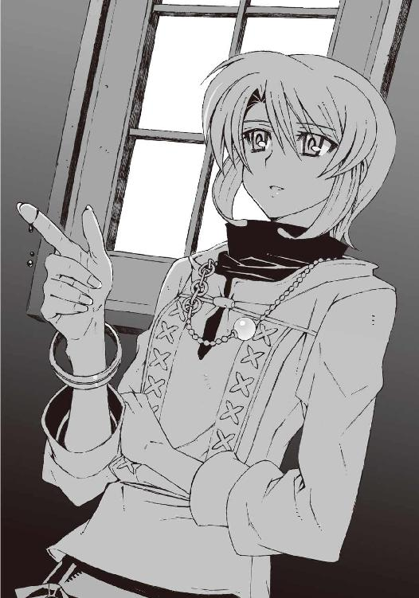
ガラスのように美しく透きとおって、彼女が動くたびにサラサラと崩れ落ちていく。
あまりにも美しいその姿を、僕はただ見ていることしかできなかった。
水無神環緒と名乗っていた彼女、操緒と同じ顔を持つ悪魔の姿を──
（続く）
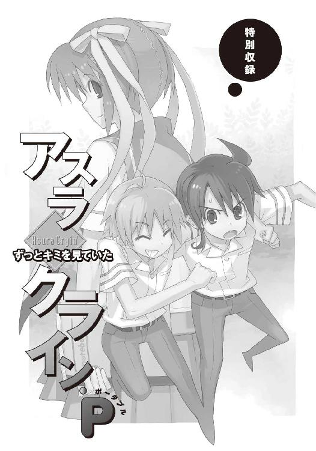
扉を開けると、逆光に映し出された彼の横顔が見えた。
放課後の教室。窓際の席にもたれたまま、トモハルは静かな寝息を漏らしていた。
約束の時間をだいぶ過ぎていた。待ち疲れて眠ってしまったのだろう。うつむく彼の表情には、隠しようもない孤独の翳が滲んでいた。
ヒグチはトモハルを起こさないように静かに扉をしめ、彼の隣へと歩み寄る。
薄暗い教室に、沈みかけた夕陽が二人の長い影を落とす。
ヒグチの鞄を抱いたトモハルの細い指先が、血の気をなくして白く凍えている。
こんなになるまで待っててくれたのか......
そう思った瞬間、ヒグチの心臓がトクンと鳴った。言葉にならない感情に胸が軋んだ。無意識に伸ばした手で、トモハルの頭をそっと撫でる。柔らかな髪の感触と、かすかな体温を感じて、ヒグチはゆっくりと息を吐いた。
「ごめんな......トモ」
はっきりと罪の予感を覚えながら、ヒグチはトモハルの細い顎を持ち上げた。無防備な彼の唇へと、自分の唇をそっと重ねる。
息苦しさを覚えたのか、少年らしく華奢なトモハルの身体が、ヒグチの腕の中で震えた。
んっ、と弱々しい声を残して、トモハルは大きく目を見開いた。驚いたように息を止め、潤んだ瞳でヒグチを見た。
彼が抵抗したのは一瞬だけだった。ぐったりと力をなくしたトモハルの身体を、ヒグチは強く抱きしめ、そして──
○
「──なんじゃこりゃああっ!!」
僕は、読みかけのノートを乱暴に床に叩きつけて絶叫した。
窓の外はよく晴れていた。昼休み直前の保健室。窓の隙間からカーテンを揺らして、初夏の爽やかな空気が流れてくる。風に乗って聞こえてくるのは、音楽クラスの生徒たちの合唱の声。平和な学園生活のひとコマだ。
中学二年生の秋だった。
サッカーボールのかわりにゴールポストの鉄柱にヘディングをぶちかまして、僕がこの保健室に運びこまれたのは今朝の体育の授業中のこと。そのまま授業をサボって眠り続け、先ほどようやく目覚めたところだ。
養護担当の先生は留守だった。ほかに保健室で休んでいる生徒もいない。だったらこのまま昼休みまで寝て過ごそうとベッドに戻りかけ、僕はそのノートを見つけたのだった。
『これって、自作の小説......だよね？』
僕の肩を、すっ、とすり抜けるようにして、操緒がノートをのぞきこむ。
なんの前触れもなく現れた彼女は、全体的に色素の薄い感じの少女だった。透き通るように肌が白い、というよりも、実際にうっすらと背後の景色が透けて見えたりする。中学の女子の制服を着たまま、ありとあらゆる物理法則を無視して、彼女は僕の肩の上に浮かんでいた。
操緒は幽霊。去年の飛行機事故で行方不明になった、僕の幼なじみの幽霊なのだ。
本人は守護霊だと主張して僕に取り憑いているのだが、彼女がそれらしい役割を果たしたところなど見たことがなかった。悪霊とまではいわないが、せいぜい人畜無害なただの背後霊である。そんなことより、突然出てこられるとびっくりするのでやめて欲しい。
『生徒の誰かが書いたのかな。んー......上手いもんだねえ』
その操緒が本気で感心したように言う。
露骨に顔をしかめながら、僕は投げ捨てたノートをもう一度拾い上げた。
淡いブルーの表紙の、ありふれたノートだ。
三十枚綴りのページのちょうど半分くらいまで、女の子らしい几帳面な文字でびっしりと、オリジナルの小説が書かれている。
文章だけなら、普通の恋愛小説に近い。だが実は少年同士の恋愛を描いた、いわゆるボーイズラブなどと呼ばれる小説らしい。
しかも登場人物のモデルになっているのは、どう見てもうちのクラスの樋口と、僕自身だ。
樋口はたしかに仲のいい友人だが、そんなもののモデルにされる心あたりは、もちろんない。
「なんで僕がホモ扱いされてるんだ......しかも相手がなんで樋口？」
言葉にしがたい悪寒に肌を粟立たせながら、僕は深々と溜息をついた。
ムカついたというよりは、正直言って不気味だった。ただの噂話とはわけが違う。わざわざオリジナルの長編小説に仕立てるなんて面倒な行為、生半可な妄想でできることではない。
『そんなに嫌がらなくてもいいんじゃない？ 結構よく書けてると思うけど。ほら、樋口ってヘタレ攻めっぽい感じだしさ』
操緒はいつものようにそんな無責任なことを言う。なんだそれは、と僕は首を振り、
「いや、よくわからないけど......やめてくれ。本気でキモチ悪い」
『そうかなあ。せっかくカッコよく書いてくれてるのに......てか、美化しすぎだよね。誰これ、って感じ』
「だからそういう問題じゃなくてさ」
僕は軽く額を押さえてうめいた。治りかけていた頭痛がぶり返してきたような気がする。
「キモチ悪いのは、これを書いたヤツの頭の中身だよ。こんなふざけたモノを書くってことは、犯人には僕と樋口がそういう関係に見えてるってことだろ？」
『んー......そういうわけでもないんだけどね』
笑い出すのをこらえているような口調で、操緒が言った。僕はむっつりと彼女を睨んだ。操緒にしてみればしょせん他人事なのかもしれないが、僕には強烈にタチの悪い嫌がらせとしか思えない。人間不信に陥りそうだ。
『で、これって誰が書いたの？』
「......さあ？」
操緒に訊かれて、僕は数人のクラスメイトの顔を思い出す。ほぼ間違いなく女子の仕業だと思うのだが、さすがにこんな小説を書く趣味の持ち主には心あたりがない。
犯人の手がかりといえそうなのは、結局このノートだけ。しかしノート自体は、学校の購買部で普通に売ってる商品で、特にめずらしいものではなかった。うちの中学の生徒なら誰でも、これと似たようなものを一度は使ったことがあるはずだ。当然だが、持ち主の名前も書かれていない。あとは残された筆跡や、文章の内容から犯人を特定するしかない。
「......つっても、筆跡鑑定なんてできないしな」
僕はうんざりと呟いた。ノートに書かれている文字には、それほどはっきりした特徴はなかった。特別に上手くもないし下手でもない。ちょっと見比べたくらいでは、書いた人間を特定するのは難しそうだ。
『誰か女の子に訊いてみたら？』
操緒が素っ気ない声で提案した。あまり興味がないときの彼女の口調である。
たしかに授業中の手紙のやりとりなんかで、友人の書いた文字を目にする機会は女子のほうが多いとは思うが、
「いや、それはちょっと......あまり大っぴらに他人に見せて回るようなもんじゃないだろ、こんなもの」
『そう？』
「そうだよ。犯人だってできればこんな異常な趣味は隠したいと思ってるはずだし。こいつの中身がバレたら、もう名乗り出てくれないかも」
『んー』
まあねえ、と操緒は投げやりな声を出す。
『たしかに場合によっては、恥ずかしい思いをするのは、智春たちのほうかもね』
「............」
そうなのだ。僕と樋口の関係が本気で誤解されることはないにせよ、ロクでもない噂が広まる可能性は非常に高い。できればこんなものはさっさと処分してしまいたい。
『だったらほっとけば？ べつに作者が誰でも関係ないでしょ？』
「関係ないってことはないと思う」
『......どうして？』
「いや、だって恐いだろ。どこの誰とも知らない相手に、こんな目で見られてるかと思うと」
『べつにストーカー被害に遭ってるわけじゃないんだからさ......』
操緒が呆れたように息を吐いた。しかし僕に言わせれば、たいした違いはないと思う。
「そうだ、操緒。授業中、ちょっと見張っててくれないか。僕とか樋口とかを観察して、小説を書いてそうな生徒がいないかどうか」
『えー......やだよ、そんなの。面倒くさい』
なんだそれ、と僕はムッとする。仮にも守護霊を名乗ってる者が、面倒くさいとかそういうこと言うか、普通。
しかし操緒は、唇を不服そうに波打たせ、
『そんなことより、続き読もうよ。続き』
「続きって......この変態小説の？」
『他人の趣味を一方的に変態呼ばわりはよくないよ。それにさ、ちゃんと読んでみたら作者についてもなにかわかるかもよ？』
世話焼きな幼なじみの口調にいきなり戻って、操緒が僕に説教する。こういう状況でその手の正論を吐かれてもなあ、という感じである。
しかし文章中に犯人の手がかりがあるかも、という操緒の意見にもたしかに一理ある。本人は興味本位で言ってるだけなのだろうが、
「って......これを読むのか......」
手にしたノートを見つめて、僕は絶望的な気分になった。
中二の健全な男子がボーイズラブなんかを読むというだけでも相当きついのに、登場人物の一人は自分がモデルなのだ。まともな精神状態ではやっていられない。
操緒が興味津々といった表情でノートをのぞきこんでいた。僕はやれやれと嘆息し、諦めて表紙をゆっくりめくった。
「だめえええええええええええっ！」
一人の少女が、絶叫とともに保健室に現れたのは、その直後のことだった。
○
彼女は、操緒と同じ制服を着ていた。小柄で、あどけない顔立ちの女子生徒だ。
左右に分けた髪を、長いリボンでまとめている。そのせいかよけいに幼く見える。
しかし特別にガキっぽいという感じではなく、なんというか普通の女の子という印象だった。見覚えのある顔である。
「え......と、露崎さん、だよね？」
僕は間の抜けた表情で、去年のクラスメイトだった少女を見つめた。露崎波乃とか、たしかそんな名前だったはず。
しかし彼女はなにも答えなかった。荒く息を弾ませながら僕に歩み寄り、無言のまま強引にノートを奪い取る。
それから上目遣いで僕を睨みつけ、ノートをしっかりと抱いたまま、短く訊いた。
「見た？」
「あ......少し」
彼女の勢いに圧倒されて、僕は正直にうなずいた。その瞬間、露崎はくわっと目を見開き、
「し、信じられない！ なんで他人のノートを勝手に見るのよ、イヤらしい！」
「は......？」
さすがに一瞬、唖然とした。なんでいきなりそんなことを言われなければならないのだ。
「って、こんなとこに知らないノートが落ちてたら普通に見るだろ。でないと誰が落としたのかもわかんないし」
「そんなの、ほっといてくれればいいでしょ。夏目くんには関係ないんだから！」
「関係あったから見てたんだろ！ なんだよ、この変態小説は！ ヤらしいのはそっちだろ」
「うっ」
僕がノートを指さすと、露崎は明らかに動揺して口ごもった。彼女のこめかみを、たらりと一筋、冷や汗が流れた。
今の反応ではっきりした。この小説の作者はやはり露崎らしい。
「ヤらしくないもん......なんていうか、もっと純粋な乙女の憧れっていうか」
「はあ......？」
よくわからん、と僕は首を振った。
男同士で抱き合ってイチャイチャする小説と、純粋な乙女の憧れとやらがどう結びつくのか、さっぱり理解できなかった。あまり理解したくもない世界だけど。
「それってやっぱり露崎が書いたんだ？」
僕は溜息混じりに訊いてみた。
「あー......うん。まあ、ね」
露崎は、頬を赤く染めてうつむいた。そんなふうにしおらしい態度をされると可愛らしいと思えなくもないが、照れている理由が理由だけに今イチ素直に信用できない。
そもそも露崎が小説を書いていること自体が、意外といえば意外だった。彼女はいわゆる文学少女という雰囲気ではなかったし、彼女が教室で本を読んでいる姿も記憶にはなかった。
「あのさ......ちょっと訊いてもいいかな」
「えっ？」
「なんで登場人物の名前が僕と樋口なわけ？」
困った顔で立ち尽くしている露崎を見据えて、僕は訊いた。彼女は、ううっ、と怯えたような声を漏らし、
「だって、夏目くんと樋口くんって仲いいし」
「はあ？」
「えーと......仲いいよね？」
「──って、それだけかよっ!?」
僕は思わず乱暴な声を出す。ちょっと友達と仲良くしていたくらいでホモ扱いされてはたまらない。露崎はうううっ、とさらに縮こまり、
「だってだって......気づいてないと思うけど、樋口くんって授業中、たまに夏目くんのことをじっと見てるんだよ。熱いまなざしだよ」
「は......？」
「あとね、夏目くんって陸上部でしょ。あたしテニス部だったのね。ほら、テニスコートの近くにベンチがあるでしょ。あそこからだと陸上部の練習風景がよく見えるんだけど、そこでよく見かけるんだよ、彼を」
「彼って......樋口？」
そうだよ、と露崎は大げさにうなずき、
「大きなカメラを持って、彼、ずっと追っかけてるんだよね、夏目くんのことを遠くから。だからあたし、ああ、この人って夏目くんのことが、ホントに好きなんだなと思って......」
「......」
僕はぐったりとベッドに突っ伏した。操緒は不自然な微苦笑を浮かべて、小刻みに肩を震わせていた。どうやら爆笑したい衝動を必死で我慢しているらしい。
なるほど、露崎が樋口の行動を不審に思った理由はよくわかった。
「あのさ。それって完全に露崎の誤解だから」
「え、そうなの？ どうして？」
露崎はきょとんと目を丸くして訊き返す。
うーん、と僕は言葉を詰まらせた。
僕の友人の樋口琢磨という男は、実は重度のオカルトマニアなのだ。今でこそ普通に友人としてつきあっているが、そもそも彼が僕に近づいてきたのは、僕が幽霊憑きであるという噂を聞きつけてのことだった。
つまり樋口が見たがっているのは、僕ではなく僕に憑いている操緒のほうで、樋口が撮ろうと狙っているのは、いわゆる心霊写真なのである。しかし、それを露崎に信じさせるためには、操緒の存在を納得させなければならないわけで、そんなことできるはずがない。
「あとね、さっきも夏目くんが体育で怪我したときに、樋口くんが運んできたでしょ。こう、肩とか組んじゃって」
「え？ いや、あれは......」
樋口が体育をサボりたかっただけで、べつに怪我したのが僕だからというわけではない。しかしそのことを僕が指摘するより先に、露崎は胸の前で両手を握りしめ、
「あたしもうそれ見た瞬間、萌え──って！」
目をきらきらと輝かせて絶叫した。
ぶっ、とたまりかねたように操緒が噴き出し、僕は脱力して天井を仰いだ。ダメだ、この女。
「あのさ、そういう変態的な目で僕たちのこと見るのやめてくれないかな......ちょっと本気で迷惑なんだけど」
「え......そうなの？」
露崎が落胆したような表情を浮かべた。いや、そこはきみが落ちこむところじゃないだろう。しかし露崎は真面目な顔で食い下がり、
「あのね、夏目くん。そういうことは、樋口くんの前では言わないほうがいいと思うよ。彼、きっと傷つくよ」
「傷つく、って......」
ないない。それは絶対あり得ない。どういう思考経路をたどったらそういう結論に行き着くのか、真剣に教えて欲しいと思う。
ものすごい疲労を感じながら、僕は弱々しく溜息をついた。もうなにもかもが、どうでもいいという気分になってきた。
「あのさ、露崎。それよりさっきから気になってたんだけど」
「なに？」
「きみの趣味って、ほかの女子も知ってるの？」
「あたしの趣味？」
「その変た......いや、露崎の書いた小説のこと。ほかの人に見せたりしてないよな？」
露崎の抱いているノートを指さして僕が訊く。
「......どうしてそんなこと訊くの？ もしかしてみんなに言いふらす気？」
少し警戒したような表情を浮かべて、露崎はノートをきつく抱きしめた。
「違う、その逆！ 絶対ほかのやつには見せるなよ」
「え、どうして!?」
「知らないヤツが見たら、誤解するだろ。僕と樋口が本気でそういう関係だって」
「あー......そうだね。それで夏目くんたちの関係がうまくいかなかったりするとマズイよね」
露崎は妙に深刻な表情を浮かべてうなずいた。だからどうしてそういう理屈になるんだ。
話がまったく噛み合っていないような気もするが、それで彼女が納得するのならまあいいか、と僕は必死で自分に言い聞かせる。
「それに露崎だって困るだろ。自分がそういう変態的な趣味の持ち主だってバレたら」
僕がそんなふうに指摘すると露崎は、
「変態かあ......」
ちょっと傷ついたような様子で、苦笑した。
さすがに少し言い過ぎたかな、と思ったが、露崎はすぐに元の表情に戻り、
「大丈夫。誰にも教えたりしないよ。二人だけの秘密だね」
唇の前に人差し指を立てて、彼女は悪戯っぽく笑う。それから、じゃあね、と手を振って、露崎は保健室を出て行った。
あとには僕と操緒だけが残された。僕はそのまま保健室の硬いベッドの上に倒れこむ。なんだか異様に疲れてしまった。露崎の浮かべた悪戯っぽい笑みが妙に印象に残っている。
「露崎か......あいつって、操緒にちょっと雰囲気似てるよな」
僕はぼそりと呟いた。口に出したあとで、後悔した。誰かに似てるなんて言い方をすると、操緒はたいてい機嫌を悪くする。
しかし今日の操緒は、めずらしく静かに肩をすくめただけで、
『そうだね......操緒もそう思う』
いつになく神妙な口調でそう言った。そして僕の顔を見て、くっと失笑する。露崎の小説を思い出して笑ってしまったらしい。失礼な。
『まあ、なんか変わった子だよね』
「うん」
僕は迷わず同意する。変わっているなどと幽霊に言われるようでは、露崎が少し哀れな気がするが。ま、仕方ない。
あれも一種の変態だしな。
○
翌朝、登校した僕を樋口が待ちかまえていた。
「よう、智春。新作を持ってきてやったぜ。直輸入の無修正版。モロに写ってるヤツ」
そう言って樋口は、僕の机に、紙袋に包んだ雑誌の束を投げ出した。またか、と僕はそれをうんざり眺める。
樋口琢磨は、黙っていればそこそこ顔のいい男だ。性格もまあ悪くない。知り合いも多くて、なにかと情報通だったりする。
しかし樋口には、どうしようもない致命的な欠点があった。それは彼の異常なまでのオカルトへのこだわりだ。今日も樋口が持ってきた洋雑誌には、海外の怪しげな心霊写真がぎっしりと掲載されている。
「こっちが有名なウィラード図書館の幽霊な。あとハンプトン宮殿のヤツの最新情報。こっちの公園のベンチに写ってるのは、交通事故に遭った少女の生き霊で、これを撮ったカメラマンは変死してるんだってよ。ワクワクするだろ」
ピンボケや光量不足で見にくい写真を、うれしそうに解説つきで指さしながら、樋口は瞳を輝かせていた。僕には理解できない世界である。悪いが幽霊は見飽きているのだ。ふと見上げると、僕の頭上で操緒がくすくすと笑っていた。
「......な、ここのガラスに女の顔がくっきり映ってるだろ。って、聞いてるか、智春？」
「聞いてるよ」
樋口のどうでもいい説明を聞き流しながら、僕はなんとなくやりにくい気分を感じていた。
昨日、露崎によけいなことを言われたせいで、妙に樋口の存在を意識してしまう。周囲のクラスメイトに、僕たちの関係が怪しいと思われているような気がして不安なのだ。
「あと、これ。こっちのヤツがまたすごいんだ」
新しい雑誌を取り出しながら、樋口が興奮した声を出す。何気なく彼のほうに目をやって、そして僕は、うっと息を呑んだ。
樋口の背後に、見覚えのあるシルエットが、ちょこんと頭を出していた。露崎だ。左右をリボンで束ねた髪が、廊下の窓から、僕たちの様子をうかがっている。
「あの変態娘......」
僕は思わず頭を抱えて呟いた。樋口が、んあ、と怪訝な表情を浮かべる。
「......智春？ どうした？」
「悪い、樋口。すぐ戻る」
不思議そうに訊いてくる樋口を置き去りにして、僕は廊下へと駆け出した。
「露崎！」
「ひゃっ......」
露崎は僕の顔を見るなり、慌てて逃げだそうとした。僕はその小柄な背中を追いかける。
「待て、逃げるな。うちの教室の前でなにやってたんだよ、露崎！」
「な、なんのこと？ あたしはただの通行人で」
「なにとぼけてんだ。廊下から僕と樋口のことをずっと見てただろ」
「あうう......」
彼女の小振りな頭を背後から鷲掴みにすると、露崎は観念したように足を止めた。
「なによぅ、ケチ。ちょっと二人のことを見て妄想するくらいいいじゃない。べつに減るもんじゃないし」
「そういう気色悪い目で見るから怒ってんだよ。減らなくても汚れるっての」
「気色悪いって......ひどいよ、夏目くん。純粋な乙女の憧れなのに」
「純粋な乙女がそんな変態的な妄想するかっ」
「ううっ......」
結んだ髪を揺らして、露崎はがっくりとうなだれる。しかし口調とは裏腹に、彼女はどこか楽しそうだった。
「あのね、夏目くん」
少し照れたように頬を赤らめて、露崎は僕を上目遣いに見つめた。悪戯っぽく唇を波打たせて微笑する。
「......なに？」
「うん。昨日ちょっと考えてみたんだけどね。たまには、その、素直に好意を表すのも効果的だと思うんだ」
「は？」
なんの話をしてるんだ。
「だからね、デレデレ甘えるとかそんなんじゃなくて、さっきみたく樋口くんが世話を焼いてくれたときに、さらっと『好きだよ』とか」
「......するとどうなるわけ？」
「いつもつれない夏目くんの普段の態度とのギャップに、樋口くんがキュンってなるのよ！」
「......」
キャー、と一人で興奮して叫ぶ露崎を、僕は苛々と睨みつけた。形のよい彼女のおでこに、力一杯デコピンを叩きこむ。
「あうっ！ いったああい......」
額を押さえてうずくまる露崎を無視して、僕は教室に戻ろうとした。そこにやってきたのは樋口だった。いきなり教室を飛び出した僕を気にして、わざわざ様子を見に来たらしい。
「なにやってんだ、智春？ あれ、その子って」
「なんでもないよ。行こう」
露崎だけでも難儀な相手なのに、これに樋口まで話に加わったりしたら始末に負えない。僕は樋口を急かして、無理やり教室に追い返す。
「そういや、智春。今日の一時限目って、また体育だぞ。大丈夫か、昨日の怪我？」
樋口が、ふと思い出したように僕の頭に手をあてて訊いた。ごく自然な彼のその仕草に、
「うん。まあ、なんとか」
僕は普通に返事をし、そしてハッと気づいて振り返る。そこには予想したとおり、陶酔したような露崎の顔があった。彼女はうっとりと瞳を潤ませ、肩を並べて歩く僕と樋口の後ろ姿に見とれている。
変態娘め。
「ホントに大丈夫なのか、おまえ？」
軽い眩暈を覚えてうつむく僕を、樋口が心配そうにのぞきこんでくる。
僕は黙って肩をすくめた。
○
今日の体育は卓球だった。
陸上部員の僕としてはこの手のちまちました球技があまり得意ではないのだけれど、時間割の都合でグラウンドが使えないといわれては文句も言えない。学校の備品の古びたラケットで簡単な練習を繰り返したあと、僕たちは練習試合をすることになった。
試合形式はダブルス。僕の相方は樋口である。特に深い理由はなく、単純に出席番号の順番でそうなったのだ。
だがしかし体育館には、そんな僕たちに熱い視線を向けてくる怪しい影があった。
『......智春、智春』
操緒が、僕の耳元に顔を近づけて囁いてくる。
『露崎ちゃんがこっち見てるよ。ほらあそこ』
「わかってる。無視しよう無視」
僕はちらりと横目で体育館の柱の陰を見た。
本人は隠れているつもりらしいが、そこには見覚えのあるリボンで束ねた髪が揺れていた。露崎だ。
彼女にも授業があるはずなのに、サボってわざわざ見に来たらしい。自分の変態的な趣味が僕にバレたことで、開き直ったのかもしれない。
「智春。先にサーブやってくれ」
「ああ、うん」
樋口に呼ばれて、僕は彼からピンポン球を受け取った。その瞬間、背中にものすごい圧力の視線を感じた。悪寒が走った、といってもいい。
振り向くと柱から顔を出した露崎が、恍惚とした表情で僕たちを見ていた。またしてもなにか勝手な妄想を膨らませているらしい。だからそういうヤらしい目で見るなっての。
「こんなことならジャージ着てくればよかった」
体操服から剥き出しの無防備な手足をなぜか心許なく感じて、僕は全身を震わせた。
「どうした、智春。なんかヘンだな、今朝から。やっぱ体調悪いのか？」
樋口がめずらしく真面目な顔で訊いてくる。
「あー......いや。大丈夫だから」
僕は素っ気なく呟いて卓球台に向かった。気を遣ってくれるのは有り難いが、今はそういうことをされると完全に逆効果なので非常に困る。
さっさと試合を終わらせてしまおうと、僕はへなちょこなサーブを仕かけた。しかし対戦相手の二人もあまり卓球が上手くない。
そのせいでなんとなくラリーが続いて、再び僕の順番が回ってくる。仕方なくスマッシュっぽいものを仕かけたが、それはあっさりと拾われてしまった。傍目には白熱しているように見えなくもない試合だ。
『智春、なにムキになってるの？』
操緒がちょっと不満そうな声で囁いてくる。
「うるさいな。試合中に話しかけるなよ」
『むー、もしかして露崎ちゃんの前でいいところ見せようとしてる？』
「なんでそうなるんだよ」
僕は思いがけず動揺した。操緒は鋭い。あまりやる気のない試合だったけれど、僕が露崎の視線を意識していたのは事実だ。
『やっぱり張り切ってるんだ』
なにもかも見透かしたような顔で操緒が言う。僕は慌てて弁解する。
「違うって。露崎がどうってことじゃなくて、あんなふうに見られると、いろいろ気が散ってやりにくいだろ」
『ふーん、操緒もいつも智春のことを見てるんですけどねえ』
「おまえは見てるんじゃなくて僕に取り憑いてるだけだろ」
なぜ自称守護霊が変態ストーカー娘を相手に張り合っているのだろうと、どうでもいい疑問で頭が痛む。そのせいで一瞬、集中が途切れた。
樋口が悲鳴じみた声を上げたのはその直後だ。
「よけろっ、智春っ！」
「え......うわっ！」
気づくと、ぼーっと立っている僕に向かって、樋口が頭から突っこんでくるところだった。卓球台の角で撥ねた玉を無理に拾おうとして、体勢を崩してしまったらしい。
とっさのことで反応できなかった。
僕と樋口は、互いにもつれ合うようにして体育館の床にぶっ倒れて転がった。
「痛ってええええええ！」
僕の上に覆い被さった樋口が、脇腹を押さえて悲鳴を上げた。倒れた勢いで僕の膝が、樋口の肋骨の隙間にめりこんだのだ。自業自得とはいえ、あれは痛い。
しかし樋口の下敷きになった僕も、後頭部を痛烈に打ちつけていた。すぐには起き上がることができずに苦悶する。
操緒は、空中から僕たちの様子をのぞきこみ、痛そー、と呟いて顔をしかめた。
そして露崎は絡み合って倒れた僕たちを見て、萌えー、と頬を赤らめながら悶絶していた。
○
保健室の前の廊下に座りこんで、なぜか露崎が僕を待っていた。
「......なにやってんの、こんなところで」
僕は彼女を見下ろして顔をしかめた。なんだか本当にストーカーされてるような気分になってきた。
しかし露崎はいつになく弱々しく微笑んで、
「謝ろうと思って」
落ちこんだような声でそう言った。予想外の彼女の反応に僕は戸惑う。
「謝るって......？」
「ん、さっきの事故のこと。夏目くん、あたしが見てるのに気づいてたよね。樋口くんとぶつかっちゃったのは、そのせいかなって思って」
ごめんね、と呟いて露崎は目を伏せる。どうやら反省して落ちこんでいる姿が、まるっきり演技というわけでもないらしい。
「べつに謝らなくていいよ。露崎が直接どうこうしたわけじゃないし」
僕がそう言うと、露崎は救われたような表情で息を吐いた。照れ笑いを浮かべて立ち上がる。
「怪我、大丈夫だった？」
「まあなんとか。あちこちぶつけたけど、ようは転んだだけだから」
湿布だらけになった自分の身体を見下ろし、僕は力なく苦笑した。どちらかといえば二日連続で保健室に担ぎこまれて養護教諭にネチネチ小言を言われた、その精神的なダメージのほうがでかい。
「そっか。よかった」
露崎がホッと息を吐いた。
その直後、次の授業の始まりを告げるチャイムが鳴った。僕は嘆息。今から教室に戻っても、着替える暇はありそうにない。
「夏目くん、授業は？」
「もういいよ。この時間が終わるまでどっかで休んでる。それより露崎は？ さっきの授業もサボってたんだろ？」
「あー......まあね」
「いいのか？ うちの学校って出席日数には、けっこう厳しいだろ」
「ん、大丈夫だいじょうぶ。女の子には、いろいろと秘密があるのですよ」
悪戯っぽく舌を出して、露崎は笑った。
なんだそれ、とは思ったが、わざわざつっこむほどの気力もなかったので聞き流す。
「でも、うれしいな」
「え？」
「去年は同じクラスだったけど、夏目くんとはあんまり喋れなかったでしょ。今ごろになってこんなふうに話ができるなんて思わなかった」
「うーん......」
僕は微妙なリアクションを返す。
普通の女の子にこんなセリフを言われたら、たぶん悪い気はしないのだろうが。
「──人のことをホモ小説のネタにしようと思ってるヤツに言われてもなあ」
「あはは、ま、それは言わない約束ってことで」
僕の背中を乱暴に叩いて、露崎が笑う。
そのままなんとなく彼女に引き連れられて、僕たちは体育館の裏に回った。テニスコートに面した静かな中庭。校舎の死角になっていて、人目につかずに堂々と授業をサボれるのだと露崎が教えてくれる。
風は少し冷たかったが、空はよく晴れていて露崎は気持ちよさそうに頭上を見上げた。僕はぼんやりと風になびく彼女のリボンに見とれる。
「そういえばプレゼントがあるんだよ」
突然、思い出したように露崎が言った。
「プレゼント？」
「そうです。映画のタダ券。カップルでご招待」
じゃじゃーん、と自分で効果音を叫びつつ、彼女は映画の招待券を取り出した。二枚。
僕は半眼になって、彼女を見た。
「なにこれ。カップルでご招待って、まさか、僕と樋口で行けってこと？」
「そうそう。二十年ぐらい前の恋愛映画なんだけど、リマスター版が絶賛上映中なのですよ」
「恋愛映画って、あのさ......」
なにが悲しくて男と二人でそんなものを観に行かなきゃならんのだ。
「それで露崎はどうするわけ？」
「あたし？ や、大丈夫、お邪魔はしませんよ。映画館の出口のところで待ってて、いい雰囲気になってるお二人を観賞して楽しもうかな、と」
僕は無言で露崎のおでこを弾いた。はうぅっ、と短く悲鳴を上げ、彼女は涙目で額を押さえる。
「──痛いよ、夏目くん。なんでぇ!?」
「うるさい黙れ変質者。どっちにしてもこの映画はダメだよ。樋口を誘ってもムダ」
「え、そうなの？」
「これって幽霊が出てくる話だろ？ 樋口は、彼女と一緒に先週観に行ったはずなんだよ」
「え!? 樋口くんって誰かとつき合ってるの？」
「うん、まあ......」
正確には、つき合っていたのは先週末までで、もう別れたのだが、黙っておく。
幽霊の話だと聞かされて喜んでデートに出かけた樋口は、映画がホラーではなく恋愛モノだったことに腹を立て、観終わったあとで彼女に向かって、正しい幽霊のあり方について三時間ばかり説教したらしい。もちろんその彼女には速攻でフられたそうだ。無理もない。
しかしそんな事情を知らない露崎は、
「なんだ......がっかりだよ」
これ以上ないというくらいに落ちこんでいた。さすがに同情する気にはなれないが。
「でも、くれるっていうのならチケットは有り難くもらっとくよ。この映画、バイト仲間が観たがってたから」
いちおう慰めのつもりでそう言ってみる。
露崎は怪訝そうな表情で顔を上げ、
「バイト仲間って？」
「えーと、同じ陸上部の大原って子なんだけど。あいつの家が酒屋をやってて、その手伝いを」
「え、大原さん？」
露崎は驚いたように目を瞬いた。それから、ムッと眉を吊り上げる。
「ちょっと待って。あたしのチケットで、なんで夏目くんがほかの女の子と映画に行くの!?」
「え？ だってペア券だろ。露崎は観ないって言ってなかった？」
「誰も観たくないなんて言ってなーい！」
露崎が情けない表情を浮かべて、子どものように地団駄を踏む。むうっと唇を結んだ彼女は、僕の腕に無理やり二枚のチケットを押しつけ、
「じゃあ、土曜日の一時半に駅の西口で待ってるからね。遅れずに来てよね！」
「え......？」
僕が引き留める暇もなく、露崎は大股で校舎のほうへと戻っていく。遠ざかっていく彼女の後ろ姿を、僕は呆然と見送った。
○
そして土曜日。待ち合わせの場所に向かう間ずっと、操緒はぶつぶつとグチをたれていた。
『......なんで操緒が幽霊の映画なんか観なきゃなんないのよ......』
「仕方ないだろ。ああいう話の流れだったし」
僕は弱気な声で反論した。操緒が文句を言う気持ちもわからないではないので、あまり強く出られないのがつらいところである。
たしかに成り行きだったとはいえ、みょうにややこしい状況ではあった。変態ストーカー娘と二人で映画。冷静に考えると自分でもわけがわからない。しかしこのままチケットをムダにするのも露崎に申し訳ない感じだし、そこは深く考えないことにする。
「どうせ全身ケガまみれで部活には出られそうにないしさ。バイトもなくて暇だし。タダだし」
そうやって思いつく限りの言い訳をする僕に、操緒は冷ややかな視線を向けて、
『ふーん』
抑揚のない無感情な声でそう言った。そこはかとなくおっかないが、あえて無視する。まあなんというか、よくあることだ。
露崎は、先に来て僕を待っていた。
「あー、夏目くん！ 本当に来てくれたんだ」
「え......ああ、まあ」
無理やりチケットを渡したのはあんただろ、と言いかけたが、露崎があまりにも無邪気に喜んでいたのでやめておく。
そういえば私服姿の彼女を見るのは初めてのことで、新鮮というか不思議な感じだった。
「さ、時間ないよ。行こ」
露崎に手を引かれて僕は歩き出す。たぶん、傍目には僕たちは普通のカップルに見えるのだろうな、とふと気づく。
露崎はけっこう可愛いし、操緒に似てるせいか話しやすい。だから、不満というわけではなかった。これで彼女の趣味がアブノーマルでなければもっと素直に喜べたのに、とわけもなく残念に思ってしまう。
古い作品の再上映ということで、狭い映画館の中は空いていた。樋口は騙されたと怒っていたが、映画は意外に面白かった。
死んだはずの主人公が幽霊になって恋人を守るという物語だ。そのせいでどうしても操緒と重ね合わせてしまう。べつに感傷的になってるわけではなくて、その逆だ。せめてこの主人公の半分でも、操緒が僕のことを健気に護ってくれたらいいのに、と思ってへこむ。
それでも映画の終盤の主人公が昇天する場面では、感動してちょっと涙ぐんでしまった。
油断だった。しまった、と僕は慌てて露崎のほうを振り向いた。恋愛映画なんかで目を潤ませている姿を彼女に見られたら、どんな妄想のネタにされるかわかったものではない。
しかし露崎を見て、僕は思わず息を呑んだ。
露崎は僕を見ていなかった。映画のスクリーンを見つめたまま、童顔の彼女が大人びた表情を浮かべていた。大きく見開いた露崎の瞳から、涙があふれ出している。僕はその横顔に呆然と見とれた。
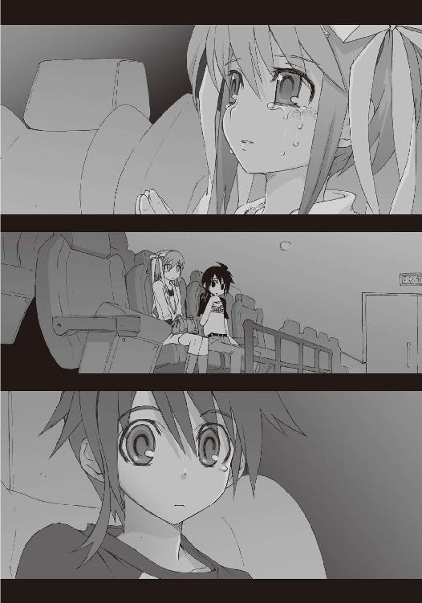
「あ......」
露崎が、僕の視線に気づいて振り返る。そして見る間に頬を赤く染めた。
「や、ちょっとなに見てるの......あたし......」
ものすごく焦った様子で露崎は乱暴に首を振る。さすがの彼女も、自分が見られる立場にはまったく慣れていないらしい。可哀想なくらいの取り乱しようだった。
「あ、あたし──トイレに行ってくるっ！」
エンドロールが始まるのも待たずに、露崎は客席を飛び出していった。なにもそこまで嫌がらなくてもいいと思う。自分はさんざん僕や樋口のことを追い回しといて、なんつう身勝手な。
『泣いたあとの顔を見られたくなかったんだよ』
さっきまで姿を消していたはずの操緒が、突然現れて、怒ってる僕をたしなめる。
「べつにそれくらいいいのにな」
映画館を出て行く人の列に並びながら、僕は不満げに呟いた。泣いている彼女の横顔を見て綺麗だと思ったことは操緒には黙っておく。
操緒は呆れたように溜息をつき、
『せっかく化粧したのが崩れちゃうからでしょ』
「え？ 露崎、化粧なんかしてたんだ？」
『......ばーか』
あかんべえ、と舌を出したまま、操緒の姿が再び掻き消える。
「え？」
僕は途方に暮れて立ち尽くした。なんだそれ。
露崎が出ていった事情は理解できたが、今度はどうして操緒が不機嫌になっているのかわからない。やはり映画の中身が気に入らなかったのだろうと想像する。
露崎が戻ってくるのを待って、僕はロビーの壁にだらしなくもたれた。
そのとき誰かが近づいてくる気配がした。
「あれ......夏目？」
聞き覚えのある声に、顔を上げる。ポップコーンのカップを片手に立っていたのは、目鼻立ちのくっきりとした美少女だった。
同じクラスの佐伯玲子だ。気づかなかったが、同じ映画を観ていたらしい。
嫌なところで会ったな、と僕は思う。佐伯は主にその容姿のせいで、一部の男子に人気があるのだが、僕は正直、彼女のことが苦手だった。
悪いヤツではないし、女子の間では人望も厚いのだが、口調がきついせいか、なんとなくいつも怒っているという印象がある。
「夏目もこの映画観に来てたの？ 一人で？ まさか樋口と一緒だったりしないでしょうね？」
「なんで樋口の名前が出てくるんだよ」
僕はつい苛立った口調で言い返した。
佐伯の言葉に、深い意味がないのはわかっていた。彼女は以前、樋口にしつこく告白されたことがあり、それ以来、樋口と仲が悪いのだ。
僕が神経質な反応をしてしまったのは、佐伯が悪いわけではなく、主に露崎のせいだった。
僕と樋口が一緒に恋愛映画を観に来るような怪しい関係だと言われたような気がして、カチンときたのだ。それもこれも露崎の変な妄想を聞かされ続けたせいである。
だから黙っておけばいいことを、僕はつい口にしてしまう。
「いちおう女の子と一緒なんだけど」
「え？」
ぴく、と佐伯の表情が強張った。
「女の子って、誰？ まさかあなたに憑いてるって噂の幽霊の......」
「違うよ。そうじゃなくて」
僕はがっくりと肩を落として言う。まあ、それもあながち間違いではないが。
「うちの学校の露崎って子。ほら、軟庭の」
言いながら、そういえば佐伯も女子テニス部の部員だったな、と僕は思い出す。
佐伯は無表情に僕の言葉を聞いていた。心なしか、彼女の顔が青ざめているようにも見えた。
形のいい唇を噛みしめて、佐伯は僕を睨みつける。カップを握る彼女の手が小刻みに震えていた。
「なんで......あたしにそんなことを言うの？」
かすれた声で、佐伯が呟く。え、と僕は間の抜けた表情で彼女を見返した。なんというか予想外の反応だ。きつく細めた佐伯の目の端に、あふれ出した涙の粒が光る。そして、
「あんたって、最っ低！」
呆然と立ち尽くす僕に、佐伯は強烈な平手打ちを見舞った。吹っ飛ぶ僕には見向きもせずに、そのままきびすを返して走り去る。
「なんだ......あいつ!?」
赤く腫れた頬を押さえて、僕はその場にへたりこむ。僕の呟きに答える者はなく、ただ散らばったポップコーンだけが、佐伯の走り去ったあとに白く輝いていた。
○
それから何日かは、何事もなく過ぎ去った。
あの映画館での一件以来、佐伯はあからさまに僕を避けており、口を利こうともしなかった。
ただ時折、なにか言いたげな表情で遠くから僕を見つめているだけだ。
露崎ともあれから会っていない。考えてみれば彼女のことを、僕はほとんどなにも知らないのだった。自宅の場所もメルアドも、今のクラスが何組なのかも聞き忘れていた。
しかし今さら訊きに行くのも、僕が露崎のことを意識しているみたいでやりにくい。
とりあえず同じ学校なのだし、誰かに訊けばすぐに調べられる。そんなふうに思って、特になにもせずに放っておいた。
その日も、そんな普通の一日だった。
僕は放課後の教室で樋口を待っていた。帰りに彼の家に寄っていく約束をしていたのだが、運悪く委員会の用事とやらで樋口が呼び出されてしまったのだ。
いろいろあって疲れていたのかもしれない。カーテン越しに射しこむ淡い西陽の中で、僕はうとうとと眠っていた。
そして、奇妙な気配を感じて目を開けた。
最初に目に映ったのは髪だった。どこか色素の薄い髪。そしてそれを束ねている長いリボン。
目の焦点が合わないくらいの近くに、誰かが顔を近づけている。
溜息のように軽く吐息がかかる。唇に柔らかな感触を覚える。それがどういうことなのか、寝ぼけた頭で僕が理解するまで、しばらく時間が必要だった。
「......露崎？」
驚くほど近くにいた少女の名前を、僕は呆然と呟いた。露崎は笑うように目を細めた。
「え......？ ちょっ......今......」
今、彼女がなにをしていたのか思い出し、僕は激しく混乱した。唇に、彼女の甘い香りが残っているような錯覚を覚えてしまう。
ちょっと待て。露崎はホモ好きの変態妄想少女のはずであって。なんでその露崎が僕にそんなことをする？
「ごめん......起こしちゃったね」
露崎がちらりと舌を出した。たいして悪びれた様子も見せず、彼女は屈託なく微笑んでいた。
彼女の髪が夕陽の中でうっすらと透けている。
なんとなく言葉を失って、僕は制服の露崎を見つめた。訊きたいことが多すぎて、なにから訊けばいいのかわからない。
「でも......一度やってみたかったんだ、こういうの。ありがと」
「いや」
礼を言われるのもなんかビミョーな感じだな、と僕は困惑する。今さら彼女に抗議するのも間が抜けた感じだし、こんなときはなんと返事をすればいいんだろう。
そんな僕の戸惑いをよそに、露崎は悪戯っぽい微笑を浮かべた。
「いろいろごめんね、夏目くん......」
露崎は最後に短く、声に出さないでなにかを呟いた。
その言葉の意味を僕が理解する前に、彼女は教室を出ていった。僕はその背中を黙って見送る。揺れるリボンが残像のように瞼の裏に焼きついた。
「なんだったんだ......あいつ」
僕は眉を寄せながら呟いた。
そしてふと重大なことを思い出し、おそるおそる背後を振り返る。
そこには、色素の薄い少女の幽霊が浮かんでいた。操緒だった。彼女は完全に表情を消したまま、僕のことを静かに見下ろしていた。
やはり見てたのか、と僕は目を覆う。
操緒はなにも喋らない。
もしかして怒っているのだろうかと、僕は、彼女の表情をうかがった。頭の中で必死に言い訳を考える。今のは油断というか不可抗力というか、とにかく僕に責任能力はなくて、むしろ被害者に近いわけで。
しかし操緒はなにも言わない。悲しげな瞳で、露崎が出て行った扉を見ているだけ。
「......操緒？」
さすがに不安になって僕は彼女に呼びかけた。
操緒はゆっくりと僕に視線を向けた。そして、
『──ごめんね、智春』
囁くような声で呟き、姿を消した。
教室に一人取り残されて、僕は途方に暮れる。
なにが、ごめん、なのだろう？
○
翌朝、登校した僕を待ちかまえていたのは、佐伯玲子だった。
「──夏目、ちょっと来て」
一方的にそう告げると、佐伯は返事も訊かずに僕を無理やり教室から連れ出した。
彼女が向かったのは体育館裏。いつか露崎に連れていかれた、ひと気のない中庭だ。
「なんだよ、佐伯。話ならべつに教室でも」
「黙ってて」
恐い顔で睨まれて、僕は沈黙した。普段から怒っているような態度の佐伯だが、今日はまたいつになく荒れている。
人目につかない場所に呼び出されたからといって、愛の告白とか、そんな甘い期待は抱かないほうがいいらしい。むしろ不良集団にリンチされる可能性のほうが断然高い。
しかしたどりついた中庭には、やはり僕たち以外、誰もいなかった。
「よっぽど無視してやろうかと思ったんだけど」
テニスコート沿いの金網を握りながら、佐伯は僕に背中を向けたままそう言った。
「映画館で会ったとき、あなた、変なことを言ってたわよね。露崎波乃と一緒だったとか」
「なんだ、その話か......」
僕は拍子抜けしながら呟いた。変なこと、といわれても困るのだが、僕が露崎と映画に行った経緯がややこしいのは、まあ事実だ。説明しろ、といわれるとけっこう面倒くさい。
特に露崎の変態妄想小説のことを話すのは、できれば避けたいところである。
「真面目に答えて。なんであんな嘘をついたの」
「いや、べつに嘘を言ったつもりはないけど」
佐伯の攻撃的な視線に射すくめられて、僕は困惑する。なんでこんなことで佐伯に怒られなければならないのだ。
そういえば佐伯にフられた男子の誰かが、あいつはレズだ、などと陰口を叩いているのを聞いたことがあったけれど、
「え......佐伯って、もしかして露崎のことが」
「ふざけないで！」
あたりまえだが怒られた。
「波乃があなたと映画になんか行くわけないでしょ。どうしてそんなひどいことを言うのよ」
「ひどいってなんだよ。それはまあ、ちょっとややこしい理由があったけど、あの映画だって露崎のほうから誘ってきたんだからな」
さすがにムッとして僕は言い返した。
その瞬間、佐伯はなんとも言いようのない顔をした。驚いたような、困惑したような、今にも泣き出しそうな表情だ。
「ほんとに波乃と一緒だったの？」
「そうだよ。嘘つく理由がないだろ」
蒼白になった佐伯を、僕は困惑しながら見つめた。支えてやらないとこのまま倒れてしまいそうで、見ているこっちが不安になる。
「そんなはずないわよ」
その彼女が、独りごとのように呆然と呟いた。
「......佐伯？」
「波乃がそんなことできるはずがないのよ。あの子、病気だったのよ。今年の春に体調崩して、そのままずっと入院してたんだから」
「病気って、え？ そんなこと、あいつなにも言ってなかったけど......」
さすがに少し驚いた。
露崎が、病気。しかも半年以上の入院生活を送っていた。そんな話は聞いてない。
だが、心当たりがないわけではなかった。二年に進級してから、彼女のことを校内で見かけた記憶がほとんどないのは、もしかしてそのせいか。いつ退院したんだろう、と考えて、ふと佐伯の言葉が気になった。
「ちょっと待った。病気だった......ってどういうこと？ 彼女、退院したんじゃないのか？」
「............」
佐伯が黙って首を振った。気が強いはずの彼女が、ぼろぼろと涙をこぼしていた。その姿を僕は信じられない思いで見つめた。
「波乃のお母さんから......電話があって......あの子、昨日から危篤状態に陥って、ついさっき............って」
ナクナッタ、と告げる佐伯の声を、僕はどこか知らない国の言葉のように聞いた。
露崎が亡くなった。
頭で理解する前に、全身から力が抜けていくような絶望感が襲ってくる。
そんなはずはない。そんなことがあるはずがないのだ。なぜなら昨日の放課後、僕は露崎に会ったのだ。あのとき露崎はたしかに僕の唇に触れて──
女の子には、いろいろと秘密があるのですよ。
悪戯っぽく笑う露崎の顔を思い出して、僕は目を瞑った。
思い出す。最初に出会ったとき、露崎はどうして保健室にいた？ 彼女が授業に出ることもなく、僕と一緒にいられたのはなぜだ？
佐伯妹が説明を続けている。もともと露崎は身体が弱くて心臓に持病があったこと。彼女が最後に受けた手術は成功率が極めて低かったこと。僕はその言葉の半分も聞いていなかった。
「露崎の......病院は？」
機械のような硬い声で、僕は質問した。
「待って......あたしも行くから。一緒に」
佐伯が制服の袖で涙を拭う。
泣きはらした顔の彼女から目をそらし、僕はいつの間にか見失った操緒の姿を捜した。
「......気づいていたんだな、操緒」
ごめんね、と告げた昨日の彼女を思い出して、僕は呟く。操緒はあのとき気づいていたのだ。僕が最後に見た露崎が、もう実体ではないことを。彼女と同じ幽霊である操緒だけは気づいていた。
泣きやまない佐伯を引きずるようにして、僕はその場から駆け出した。ちょうど校門を出たところで、ほかの生徒たちに混じって登校してきた樋口を見つける。
「あれ......智春？ おまえ、なにやって......」
「樋口！」
彼の言葉を遮って、僕は叫んだ。僕たちのただならぬ様子に一瞬で気づいて、樋口が表情を引き締めた。本質的には頭のいい男なのだ。
僕は彼の腕を強く握りしめ、短く告げた。
「──おまえも来い！」
○
タクシー代を出したのは佐伯だった。いつの間にか泣きやんでいた彼女は、毅然とした口調で運転手に行き先を告げ、戸惑う樋口に冷静に事情を説明した。
僕はそれを、よくできた作り話のような気分でぼんやりと聞いていた。とてつもない非現実感に冒されて、なにも考えられないでいた。
露崎が入院していたのは大きな総合病院で、佐伯は何度も見舞いに来たことがあるらしかった。受付で簡単に場所だけ訊くと、迷わず遺体安置室のある病棟へと歩き出す。
「あたし......波乃に会ってくる」
エレベーターホールに出たところで立ち止まって、佐伯が言った。それから寂しげな表情で僕のほうを振り返り、
「夏目たちは、波乃の病室で待ってて......今はあの子を見ないであげて」
「え......なんで......」
「いいんだ。樋口」
反論しかけた樋口を制止して、僕はおとなしくエレベーターに乗りこんだ。露崎はきっと、化粧も髪もいじってない姿を僕たちに見られるのを嫌がるだろうと思う。
「頼むな」
佐伯に短く言葉をかけると、彼女はぎこちなく微笑んでみせた。
「ありがとう。波乃の病室、六階だから」
「わかった」
気丈に振る舞っている佐伯の指が震えている。そのことに気づかないふりをしながら、僕はエレベーターの扉を閉めた。
上昇を続けるエレベーターの中で、僕たちは黙りこんでいた。ひどく落ち着かない気分だった。胸の中で、暗い穴のような喪失感だけがゆっくりとどこまでも広がっていく。
やがてたどりついた露崎の病室には、彼女の親族らしい初老の男性が、疲れた表情で座っていた。僕たちの着ている制服に気づいて、中で待っているようにと言ってくれる。
露崎の病室は個室だった。入院患者の部屋とは思えないほど多くの私物が運びこまれていて、それが彼女が病室で過ごした時間の長さを表していた。
壁際のハンガーには彼女の制服がかけられている。映画館で見た可愛らしい私服も。しかし、それを着るべき人間はもういない。
「なあ......智春」
しばらくして、病室の壁にもたれた樋口が話しかけてきた。
「露崎って、ちょっと男性恐怖症気味でさ......あんま俺とかクラスの男子とは喋らなかったんだけど、智春とはわりと普通に会話してたよな。気づいてたか？」
「え......いや......」
「だよな。ま、露崎本人も自覚してたかどうかわかんねーけどな」
そう言って樋口は柔らかく苦笑した。樋口の言葉は僕にとっては意外な感じがした。露崎はむしろ物怖じしない感じの子だと思っていた。
「そういやあいつって、修学旅行委員だったよな。アンケートの集計を俺たちで手伝ったことあっただろ」
「ああ......うん」
そのことはよく覚えている。手伝ったというよりも、はっきりいって邪魔していただけかもしれない。僕と樋口が悪ノリし過ぎて、三十分で終わるはずの作業が、夜中近くまでかかってあとで担任にこっぴどく叱られた。僕たちはそれなりに楽しかったが、中学生活にはありふれた、どうということのない思い出だ。
しかしそれからすぐに入院した露崎にとって、その何気ない出来事はもう少し違う意味があったのかもしれない。今となってはそれをたしかめることもできないけれど。
「じゃあ、俺はちょっと学校に電話かけてくる。事情が事情だから怒られはしないだろうけどな、やっぱ無断欠席はヤバイだろ」
沈黙しがちな僕を気遣うように、いつもの口調で樋口が言う。悪い、と僕は弱々しく笑った。
出ていった樋口と入れ替わりに、年輩の女性が病室に入ってくる。見知らぬご婦人だったが、彼女が露崎の母親であることはすぐにわかった。
顔立ちはそれほど似ていない。だが雰囲気が同じなのだ。ひどく憔悴した様子だったけれど、それでも彼女は、僕を見てどこか悪戯っぽい微笑を浮かべてみせた。
「......あなたが夏目くんね？」
露崎母は、優しく目を細めて僕を見た。その口調から、彼女が娘から僕の話を何度も聞かされていたのが、なんとなく想像できた。
それから彼女は、娘のことを簡単に語った。
たぶん露崎は自分の死期を悟っていたということ。学校に行くと言い張って、ここ最近、病院を何度も抜け出していたこと。
「そうそう、波乃から預かっている物があるの。もし、あなたが来てくれたら渡してくれって」
病室のロッカーを開けて、露崎母はチェック柄の紙袋を取り出した。
「......僕に、ですか？」
「ええ。私たちにも見せてくれなかったから、中身がなにかわからないのだけど......受け取ってやってもらえるかしら？」
差し出された紙袋を、僕はおずおずと手に取った。無言で露崎母に頭を下げる。
もう少しここで待っていて欲しいと僕に告げ、露崎母は病室を出ていった。僕は誰もいない病室の椅子に座り、渡された紙袋の封を開けた。
ふと気配を感じて、顔を上げる。
『......智春』
ようやく姿を現した操緒が、逆光の中に浮かんでいた。一瞬だけ、彼女を露崎と見間違った。
そう、本当にもっと早く気づくべきだった。
自らの死期を悟っていた少女と、事故で行方不明になった少女。露崎は操緒に似ていたのだ。
露崎が僕のために用意した紙袋の中身は、数冊のノートだった。保健室で見たのと同じノート。入院中の彼女が書きためた自作の小説。
見覚えのあるリボンで束ねたノートの表紙に、乱れた弱々しい筆跡でタイトルが書かれていた。
露崎が最後に僕に告げたのと同じ言葉。
──好きだよ。
僕は放心したようにゆっくりと背中を丸めた。その背中に寄り添って、操緒が僕を背後から抱きしめる気配があった。
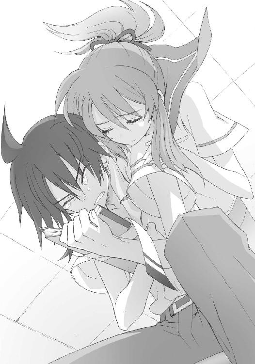
『大丈夫......操緒がついてるよ』
耳元で、幽霊の少女がそっと囁く。
その言葉に僕は目を閉じた。
そして初めて、露崎のために泣いた。
○
それから二年が経ち、僕と樋口は高校生になった。操緒以外の幽霊や、その他でたらめな化け物とも知り合った。彼らの争いに巻きこまれて僕自身、何度も死にかけたりして、露崎のことを思い出す機会もめっきり少なくなっていた。
だから、彼女のノートのことも、その日までほとんど忘れかけていた。
それは、僕が久しぶりに登校した朝だった。
とある事件に巻きこまれて風邪をこじらせ、僕はほぼ一週間近く家で寝て過ごしたのだ。
しばらくぶりの学校とはいえ、特に新鮮という感じでもない。少なくとも校門をくぐるまでは、代わり映えのしない光景だと思っていた。
僕が違和感に気づいたのは、昇降口にたどりついた直後だった。
「あれでしょ？ ほら本屋で......」
「あ......あたしも聞いたよ、その話......」
遠くから突き刺さる好奇の視線とともに、女子たちのヒソヒソ声が漏れ聞こえてくる。
なんだ、と僕は操緒を見た。さあ、と操緒も首を傾げる。気にしすぎかもしれないと、僕は軽く深呼吸する。久しぶりの学校で、神経が過敏になっているのかもしれない。
「あ......智春」
廊下の途中で、前から歩いてきた女子の一人が僕に気づいて足を止めた。同級生の大原杏だ。
いかにも陸上部員という雰囲気の、快活そうな少女である。しかし今日に限っては、彼女が浮かべた笑みがどこかぎこちない。
「おはよ。風邪、もう治ったの？」
「まあ、なんとか。あ......試験範囲のノート、ありがとな」
「うん......」
曖昧にうなずきながら、杏はちらちらと周囲の様子をうかがった。それからなぜか硬い表情で近づいてきて僕の手を取り、
「あのっ、あたし......智春がどんな趣味をしてても友達だと思ってるからねっ」
「は？」
「世間の荒波に負けちゃだめだよっ」
「あ......おい、杏っ」
言いたいことだけを言って走り去っていく杏の後ろ姿を、僕は当惑しながら見送った。
なんだあれ。僕の趣味がどうしたって？
しかし奇妙なのは杏の態度だけでなく、学校全体の僕を見る目も変だった。中には僕の顔を見て露骨に目をそらす男子や、きゃー、と興奮して叫ぶ女子もいる。どこかで見覚えのある反応だ。
そして僕が扉を開けた瞬間、教室の中がはっきりとざわめいた。特に気になったのは佐伯玲子の視線。彼女はふてくされたような困った顔で僕を見ている。どういうことだ、と僕が話を聞きにいこうとしたとき、
「おい、智春。ちょっと来い」
先に登校していた樋口が、僕の腕を掴んで言った。それを見た女子の何人かが、萌えー、と呟く。眩暈のように襲ってきた既視感に僕は戸惑った。
「なんだよこれ、樋口？」
「いいから来いって。ここじゃまずい」
からみつくクラスメイトたちの視線から逃れるように、樋口は僕を外に連れ出した。ひと気のない屋上に出たところでようやく息を吐き、
「これだよこれ。智春、なにか知ってるか？」
そう言って彼は、一冊の本を取り出した。
ハードカバーの上製本。普段の樋口なら絶対に読まないような、文学系の恋愛小説である。
表紙に書かれたタイトルに首を傾げ、そして作者名に気づいて僕は絶句する。
作者の名前は露崎波乃。本の表紙に巻かれた帯には、『夭折した少女が遺した究極の純愛小説』などと無責任な言葉が書かれている。
そして問題の本の内容は、露崎が僕にくれたノートの中身そのままだった。僕と樋口の名前もほとんど実名で使われている。
「露崎が、亡くなる前に出版社に投稿してたらしいんだよ。遺族の許可をもらって本になったとかで、すげえ話題になってるぞ。今週のベストセラーで、もう映画化も決まったって」
「な......」
僕は眩暈を起こして、屋上のフェンスにもたれかかった。
露崎の変態妄想小説がベストセラー。しかも映画化。それはつまり、僕と樋口がそういう関係という困った誤解が、日本全国に広まってしまうということで──
うわ、すごいねー、と無責任に感心する操緒。
僕はふらつきながら頭を上げ、
「露崎っ────！」
二年ぶりに彼女の名前を絶叫した。
見上げた青い空の向こう側に、悪戯っぽく微笑む露崎が見えた気がした。
あとがき
そんなわけであとがきです。アスラクライン第九巻をお送りします。
今回は、久々の短編連作形式でお届けしております。前巻から約二週間後の八月後半から、十一月あたりまでに智春たちが遭遇した事件がメインです。ほかにもいくつか書きたいエピソードがあったのですが、ページ数がギリギリだったので今回は断念。なにやら分厚くなってますが、各章ごとに独立したストーリーですので、そのぶんは読みやすいと思います。お楽しみいただければ幸いです。とりあえず書いてる人間は非常に楽しかったッス。短編は好きだ。
第一章から第四章までの各話は、『アスラクラインKLEIN』というタイトルで、雑誌『電撃ｈｐ』に掲載された作品を修正したものです。
独立した短編として読めるようにもなっていますが、このあたりの内容は、もともと本編に組みこむ予定で考えていたエピソードでした。なので、まとめて読むと時系列順に話が進行しているのがわかって楽しいかも。
以下、若干のネタバレを含みつつ、各話の裏話などを書いてみようと思います。
第一章は謎の美少女「夏目ともは」初登場の回。いちおう第一生徒会がメインの話ですね。
実はこれに先だって『電撃AprilFool』という電撃文庫のイベント用の企画本で、ともはのモデルとなるキャラクターが発表されていました。そちらの「ともは」は、いちおう本物の女の子です。企画の中身は「もしも洛芦和高校が名門女子校だったら......」というパロディイラストでした。和狸さんの絵柄が企画内容とマッチしてすごく面白かったので、本編のほうにもフィードバックしてみたという噂もあったりなかったり。
第二章はファミレス篇。メインゲストは第二生徒会関係者の二人です。もともと彼女たちにいろんな服を着せて楽しむために書いた話。原稿のチェックや打ち合わせなどで、普段からファミレスを使うことが異様に多いので、ストーリーを考えるのは楽でした。
ちょうどこの話を書いていたころ、友人に勧められたあるマンガに影響されてワインにはまってました。本文中にワインが出てくるのはその名残。そういえばこの回、なぜか店長に人気がありました。なんでだ？
第三章はストーカー篇。メインゲストは第三生徒会の冬琉会長......のはずだったんですが、ほかの人たちのほうが目立っちゃってますね。まあ、よくあること。
この話に登場する「臓物アニマル」は、築地俊彦先生の作品『けんぷファー』（ＭＦ文庫Ｊ刊）に登場する小道具です。築地先生の許可を得て使わせてもらいました。この場を借りてお礼を申し上げます。築地先生ありがとうございました。『けんぷファー』面白いッスよ！
第四章は宝探し篇（ロボハル篇）。どちらかといえばコメディエンヌ的な扱いが多い佐伯妹を可愛く描いてもらおう、という企画でした。いちおう試みは成功した......のか？
この話の舞台は群馬県の某町がモデルです。学生時代の友人の出身地だったので何度か遊びに行ったことがありまして、一部そのときの体験を元にしています。しかしさすがに作品内で描かれているほどの田舎ではなかったと思うので念のため。
第五章は書き下ろし。以前からチラチラと存在を匂わせていた環緒姉さん初登場の巻です。というよりも奏の意外な弱点が明らかになる話というべきか。
ちなみにジョニーさんという暗号名は、知り合いのバイト先の店で実際に使われていた言葉らしいです。一部地方ではわりとポピュラーな呼び名みたい。
環緒姉さんについては詳しいことは語れませんが、次の巻のキーパーソンの一人です。
彼女の登場をきっかけに、すべての謎が解けて怒濤の展開になるはず。すでに彼女の正体に気づいた人もそうでない人も、乞うご期待、ということで。
今回は巻末のオマケとして、こちらも以前『電撃ｈｐ』誌に掲載された短編『ずっとキミを見てた』を収録してもらいました。これは本編とはあまり関係のない話です。本編よりも二年ほど前、中学生時代の智春たちのエピソードです。
せっかく幽霊憑きの少年の物語なのに、ちゃんとした（？）幽霊っぽい話が一度もないのが以前から気になっていて、意識的にファンタジーな雰囲気を残してみました。そうは思えないかもしれないですけど、いちおう作者の中ではそういう分類。
この話のゲストヒロインの露崎波乃は、実はすごく気に入っていて、もしかすると本編のほうで再登場するかもしれません......いや無理か!?
もしよければ彼女のことも応援してやってください。
それでは最後になりましたが、本書の出版にあたりお世話になった皆様、またこの本を手にしてくださった読者の皆様、本当にありがとうございます。
次回は（たぶん）智春たちの未来を大きく揺るがす運命のクリスマス篇。ご期待いただけるとありがたいです。それでは。三雲岳斗でした。
三雲岳斗
大分県出身横浜市在住。第五回電撃ゲーム小説大賞《銀賞》受賞作『コールド・ゲヘナ』でデビュー。某「歌うソフトウェア音源」の子の影響で、最近ＤＴＭに再びハマっているらしい。歌はいいね。歌は心を潤して...（略
和狸ナオ
１９７６年生誕の千葉県民。くじ運は最低ながら本作の挿絵を描かせて頂き、実はすごく仕事運が良いのでは...?!と人生見直しております。遅咲きな絵描き兼ぬるいゲーマーですが、よろしくどうぞ。
電撃文庫
アスラクライン⑨
KLEIN Re-MIX
三雲岳斗
二〇十二年八月二十四日 配信
発行者 塚田正晃
発行所 株式会社アスキー・メディアワークス
〒一〇二−八五八四 東京都千代田区富士見一−八−十九
(C)2007 GAKUTO MIKUMO／ASCII MEDIA WORKS
本書（電子版）に掲載されているコンテンツ（ソフトウェア／プログラム／データ／情報を含む）の著作権およびその他の権利は、すべて株式会社アスキー・メディアワークスおよび正当な権利を有する第三者に帰属しています。
法律の定めがある場合または権利者の明示的な承諾がある場合を除き、これらのコンテンツを複製・転載、改変・編集、翻案・翻訳、放送・出版、公衆送信（送信可能化を含む）・再配信、販売・頒布、貸与等に使用することはできません。